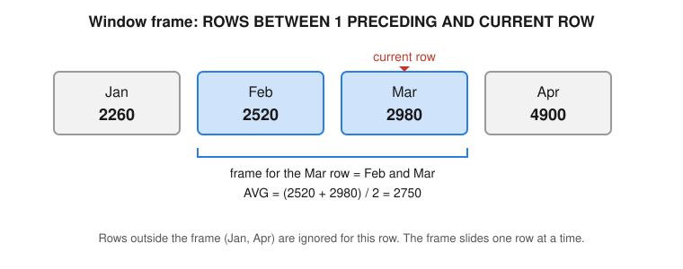

SQL & Databases Mastery
A practical mini-textbook: from your first SELECT to window functions, query tuning, schema design, analytics patterns and the wider database world.
Taught the IIT Professor Way — Real Numbers. Real Problems. Real Understanding.
A Note From Your Professor
Dear learner, welcome. SQL is the craft of asking clear questions of data: how many orders came in, which delivery was slowest, which students passed. A database is a system with queues, caches and limits, like a busy bank or hospital, and a SQL query is a request that you can measure and tune. Everyday examples (shop orders, delivery times, exam marks, hospital appointments) will carry you through, especially in the chapters on indexes and query plans.
SQL looks easy, and the first week is easy. The difficulty hides in a few ideas: NULL, joins that repeat rows, grouping, and window functions. People who skip them write queries that run without errors and return wrong numbers. This book teaches those ideas slowly, with a small shop database that you can check by hand, and with real output from real runs.
Study about one hour a day. Type every example yourself. Before you run a query, predict the output. If your prediction is wrong, that is the best moment to learn. And remember the one rule that matters most: never move on until the current topic feels obvious. If a chapter feels foggy, repeat its practice set before you open the next chapter. SQL rewards patience, and a clear mind about the basics is worth more than a long list of tricks. I am glad you are here. Let us begin.
What Every Topic Contains
- Intuition: the problem the concept solves, in everyday language, often with a performance-testing analogy.
- Formal definition: how it works, precise but plain, with every new word explained.
- Worked examples: real SQL with the exact output, with Predict, Compute, Check and Meaning steps.
- The picture: an ASCII diagram, table or image, explained completely.
- Connection to the real job: where it shows up in analytics, data engineering and ML work.
- Applications: grouped by role, each with a concrete example.
- Common mistakes: what beginners get wrong and how to catch it.
- Check yourself: three short questions with answers.
Every chapter also ends with a recap and cheat-sheet table, a practice set (8 to 12 problems with answers) and a prompt pack of 5 prompts to paste into any AI assistant.
Contents
- Databases and the Relational Model: what a database is, tables, keys, and how to set up SQLite and PostgreSQL.
- SELECT, WHERE, ORDER BY, LIMIT, DISTINCT and NULL Logic: reading one table and the three-valued logic of NULL.
- Aggregation, GROUP BY, HAVING and FILTER: turning many rows into summaries.
- Joins: inner, left, right, full, cross, self, anti- and semi-joins, and the duplicate-row traps.
- Subqueries and CTEs: queries inside queries, named steps, and recursive CTEs.
- CASE, Strings, Dates and Times, JSON and Arrays: cleaning and reshaping values.
- Set Operations, Pivot and Unpivot, GROUPING SETS, ROLLUP, CUBE: stacking, comparing and subtotalling.
- Window Functions in Depth: ranking, LAG/LEAD, frames, top-N per group, running totals, gaps and islands.
- DDL, DML, Constraints, Upserts, Transactions, ACID, Isolation Levels and Locks: changing data safely.
- Indexes, EXPLAIN / EXPLAIN ANALYZE and Query Optimization: making queries fast, with a measure, change one thing, re-measure mindset.
- Schema Design: ER diagrams, normalization 1NF to BCNF, denormalization, OLTP vs OLAP, star and snowflake, slowly changing dimensions.
- Analytics SQL Patterns: funnels, cohort retention, RFM, MoM and YoY, sessionization, deduplication, data-quality queries.
- Beyond SQL: MongoDB, Redis, Cassandra and DynamoDB, time-series, graph, search engines, vector databases, CAP, and when to use which.
- SQL Dialect Differences and the 40-Problem Interview Bank: PostgreSQL, MySQL, SQL Server, BigQuery and Snowflake, with answers.
- Project Lab, Part 1: Funnels, Cohorts, RFM and a Sales Database
- Project Lab, Part 2: An Analytics Case Study and a Query-Optimization Lab
An appendix (99_cheatsheet.md) collects the key patterns and ends with an honest closing note.
How To Study This Document
Use this learning loop for every chapter.
- Build first. Create the shop database and type the first example before reading the theory. Seeing a result makes the explanation easier to hold.
- Ask. Write down what you do not understand. Use a prompt from the chapter's prompt pack to ask an AI assistant to explain it a second way.
- Just-in-time theory. Read the definitions only when you need them to explain what you saw.
- Rebuild. Close the book and redo the worked examples from memory on a new small table of your own (for example, your own shop orders or exam marks).
- Teach. Explain the idea aloud, in simple words, as if to a colleague. If you cannot, repeat step 3.
Suggested pace: one chapter per week, about one hour a day. Days 1 to 2: read and run the worked examples. Days 3 to 4: rebuild and do the practice set. Day 5: prompt pack (quiz and mock interview). Weekend: redo the problems you got wrong. Chapters 8 and 10 deserve two weeks each.
Using the prompt packs: paste one prompt into any AI assistant. Replace [PASTE HERE] with your own query or table design for the review prompts. Always try the problem yourself first, and treat the assistant as a coach, not an answer machine. Check every number it gives by running the query.
The mastery tests from your skill map are a good finish: solve 300 or more SQL problems (about 50 hard) on LeetCode, StrataScratch or DataLemur; speed up a slow query from 10 seconds to under 1 second using EXPLAIN ANALYZE; and design an e-commerce schema with all its analytics queries.
Prerequisites
- Comfortable use of a computer and a terminal (opening a shell, running a command).
- Basic arithmetic and percentages. No programming is required, though a little Python helps.
- The learner's Math PDF is not needed for this book.
Tools you need
All free.
- SQLite (command
sqlite3, version 3.39 or newer; this book was run on 3.51). Included on macOS; installable on Windows and Linux. - PostgreSQL (any recent version) through Docker or a native install, plus
psql. Examples marked "PostgreSQL syntax, not run here" were not executed in this book. - A SQL client such as DBeaver, pgAdmin, DB Browser for SQLite or a VS Code extension.
- A text editor.
- Optional for Chapter 13: Docker images for MongoDB and Redis.
Think about the last app you used to order food. Somewhere, a program stored your name, your address, your order and the restaurant's menu, and it found them again in a fraction of a second while thousands of other people did the same. That program is a database. Almost every job in data, analytics, machine learning and software depends on reading from one. In this chapter you learn what a database is, how a relational database organises data in tables linked by keys, and how to install two free ones (SQLite and PostgreSQL) so that you can practise on your own laptop from today.
1.1 Why Databases Exist
A relational database stores data in tables. You talk to it with SQL (Structured Query Language, said "S-Q-L" or "sequel"). SQL is declarative: you say what you want, not how to get it. The database engine decides the how. This is the most important mental shift for a programmer.
Compare a Python loop and a SQL query for "total of all paid orders":
total = 0
for order in orders:
if order["status"] == "paid":
total += order["amount"]SELECT SUM(amount) FROM orders WHERE status = 'paid';The Python tells the computer every step. The SQL states the result. The engine may use an index, run in parallel, or read from cache. You do not care.
Real-world mapping
| Idea | Example | Where it appears in the job |
|---|---|---|
| Table | orders | a fact table in a warehouse |
| Row | one order | one event in an event log |
| Column | order_date | a feature column for ML |
| SQL query | SELECT ... WHERE ... | a dashboard tile, a data-pull for a model |
What a DBMS gives you that a file does not
| Need | CSV file | Database |
|---|---|---|
| Fast search | Read whole file | Indexes (Chapter 10) |
| Many users at once | Corruption risk | Transactions and locks (Chapter 9) |
| Rules on data | None | Constraints (Chapter 9) |
| Crash safety | Half-written file | Write-ahead log, recovery |
| Joining two datasets | Manual code | JOIN (Chapter 4) |
The picture: where SQL sits
You / Python / BI tool
| SQL text
v
+-------------------+
| Parser | checks the syntax
| Planner/Optimizer | chooses the fastest plan
| Executor | runs the plan
| Storage engine | pages on disk, cache, log
+-------------------+
|
files on diskWorked examples
Problem 1.1.1 A delivery app produces 5 million delivery-tracking rows per day. After 30 days, how many rows must the database hold, and why is a plain file a poor choice?
| Step 1 | Multiply: 5,000,000 × 30 = 150,000,000 rows. |
|---|---|
| Step 2 | A file must be read from the start to find the rows of one day. 150 million rows at, say, 100 bytes each is about 15 GB to scan. |
| Step 3 | A database index finds the rows for one day without reading the other 15 GB. |
| Check | 150,000,000 × 100 bytes = 15,000,000,000 bytes = 15 GB, using 1 GB = 1,000,000,000 bytes. |
| Answer | 150 million rows (about 15 GB at 100 bytes per row). A database with an index avoids scanning all of it. |
| Meaning | Reading 15 GB takes tens of seconds even on a fast disk. Doing that for every question is too slow, which is why databases keep indexes. |
Problem 1.1.2 Is SELECT * FROM orders WHERE status = 'paid' imperative or declarative? What does the engine decide?
| Step 1 | The query says which rows (status = 'paid') and which columns (*), but no loop and no order of steps. |
|---|---|
| Step 2 | So it is declarative. |
| Answer | Declarative. The engine decides whether to scan the table, use an index, and how to read the pages. |
| Check | Ask: "Did I write a loop or an order of steps?" No, so it is declarative. |
Connection to the real job
Every analyst, data engineer and ML engineer reads data from a database daily. Feature tables for ML, dashboards for managers and the order history of every online shop all live in databases. SQL is the one skill that appears in almost every data job description.
Applications
- Business reporting (sales, churn, finance)
- Application back ends (user accounts, orders)
- ML feature stores and training sets
- Storing delivery records and monitoring data
Check yourself
- What does declarative mean?
Answer: You describe the result you want; the engine chooses the steps.
- Name two things a DBMS gives that a CSV file does not.
Answer: For example indexes, transactions, constraints, crash recovery.
- What does DBMS stand for?
Answer: Database Management System.
1.2 Tables, Rows, Columns and Keys
Vocabulary
- Table (also relation): a named grid of data.
- Row (also record, tuple): one item.
- Column (also field, attribute): one property, with a data type such as integer, text, date.
- Primary key (PK): a column (or group of columns) whose value is unique and not NULL for every row. It identifies the row.
- Foreign key (FK): a column that holds a primary-key value of another table. It links rows across tables.
- Natural key: a real-world unique value (email, passport number). Surrogate key: an artificial number the database makes (1, 2, 3). Surrogate keys are usually safer because real-world values change.
- NULL: "unknown or missing". It is not zero and not an empty string. Chapter 2 treats NULL in depth.
- Schema: the set of table definitions. (In PostgreSQL a schema is also a named folder of tables inside a database.)
The picture: two tables linked by a key
departments employees
+---------+-----------+ +--------+-------+---------+--------+
| dept_id | dept_name | | emp_id | name | dept_id | salary |
+---------+-----------+ +--------+-------+---------+--------+
| 10 | Testing |<----------| 1 | Asha | 10 | 90000 |
| 20 | Data |<----------| 2 | Ravi | 20 | 120000 |
+---------+-----------+ \----| 3 | Meena | 10 | 95000 |
PK = dept_id +--------+-------+---------+--------+
PK = emp_id, FK = dept_idReal-world mapping
| Concept | Example value | Where it appears in the job |
|---|---|---|
| Primary key | emp_id = 1 | user_id that identifies a user in every table |
| Foreign key | employees.dept_id = 10 | orders.customer_id linking to a customer |
| Grain | one row = one employee | the first question to ask about any dataset |
| NULL | no manager assigned | missing values you must handle in ML |
Worked examples (runnable)
Before you run each example, predict: will it succeed or fail? Then compare with the real output.
We create two tables, insert rows, and read them back. The sqlite3 tool shows output with a header row.
Problem 1.2.1 Create departments and employees, insert data, and list all employees.
| Step 1 | Create the parent table first (the one that is referred to). |
|---|---|
| Step 2 | Create the child table with a foreign key. |
| Step 3 | Insert rows and SELECT. |
PRAGMA foreign_keys = ON; -- SQLite only: FK checks are off by default
CREATE TABLE departments (
dept_id INTEGER PRIMARY KEY,
dept_name TEXT NOT NULL UNIQUE
);
CREATE TABLE employees (
emp_id INTEGER PRIMARY KEY,
name TEXT NOT NULL,
dept_id INTEGER REFERENCES departments(dept_id),
salary INTEGER
);
INSERT INTO departments VALUES (10,'Testing'),(20,'Data');
INSERT INTO employees VALUES
(1,'Asha',10,90000),
(2,'Ravi',20,120000),
(3,'Meena',10,95000);
SELECT * FROM employees;emp_id name dept_id salary
------ ----- ------- ------
1 Asha 10 90000
2 Ravi 20 120000
3 Meena 10 95000- Check We inserted three employees and the printed table has three rows. Departments 10 and 20 exist, so the foreign keys are valid.
- Answer The table holds three rows, as shown above.
- Meaning The two tables are now linked: Asha and Meena belong to Testing (10), Ravi to Data (20).
Problem 1.2.2 What happens if we insert a second employee with emp_id = 1, or an employee in department 99 (which does not exist)?
| Step 1 | The primary key rejects duplicates. |
|---|---|
| Step 2 | The foreign key rejects a parent that does not exist. |
PRAGMA foreign_keys = ON;
INSERT INTO employees VALUES (1,'Dup',10,50000);
INSERT INTO employees VALUES (4,'Ghost',99,50000);Runtime error near line 3: UNIQUE constraint failed: employees.emp_id (19)
Runtime error near line 4: FOREIGN KEY constraint failed (19)- Answer Both inserts fail:
UNIQUE constraint failed: employees.emp_idfor the duplicate key andFOREIGN KEY constraint failedfor the missing department. (SQLite says UNIQUE for primary keys; PostgreSQL saysduplicate key value violates unique constraint.) - Check Run
SELECT COUNT(*) FROM employees;afterwards: still 3. - Meaning The database protects the data for you. Your application code does not need to remember to check.
A note on data types
Common types: INTEGER, NUMERIC(p,s) / DECIMAL (exact decimals, use for money), REAL/DOUBLE (approximate, do not use for money), TEXT/VARCHAR, BOOLEAN, DATE, TIMESTAMP. SQLite is unusual: it has type affinity, so it is lenient and stores almost anything in any column. PostgreSQL is strict. Learn the strict rules; they are what you will meet at work.
Connection to the real job
Keys are how you join tables (Chapter 4). A wrong key assumption is the number one cause of wrong dashboard numbers. Before using any table, ask: "What is one row? What is its primary key?" This is called the table's grain.
Applications
- Customer, order, product tables in e-commerce
- Dimension and fact tables in data warehouses (Chapter 11)
- Feature tables keyed by
user_idfor ML
email or name as primary key. Names repeat and emails change. Use a surrogate key plus a UNIQUE constraint on the natural value.Check yourself
- Can a primary key be NULL?
Answer: No. It must be unique and not NULL.
- What does a foreign key do?
Answer: It forces a value to exist as a primary key in another table.
- What is the "grain" of a table?
Answer: What one row represents.
1.3 Setting Up SQLite and PostgreSQL
SQLite
SQLite is a database in a single file. It has no server. macOS already includes the sqlite3 command. Check the version. Window functions need version 3.25 or newer, and RIGHT/FULL JOIN need 3.39 or newer.
sqlite3 --version
sqlite3 shop.db # opens (or creates) the file shop.dbUseful commands inside the shell (they start with a dot, they are not SQL):
| Command | Meaning |
|---|---|
.tables | list tables |
.schema orders | show the CREATE statement |
.headers on and .mode column | readable output |
.read file.sql | run a SQL file |
.import file.csv table | load a CSV |
.timer on | show query time |
.quit | leave |
Let us use a few of them. In this book each chapter runs on a fresh file database, so the output below is real.
SELECT sqlite_version() AS version;
.tables
.schema employeesversion
-------
3.51.0
departments employees
CREATE TABLE employees (
emp_id INTEGER PRIMARY KEY,
name TEXT NOT NULL,
dept_id INTEGER REFERENCES departments(dept_id),
salary INTEGER
);PostgreSQL
PostgreSQL ("Postgres") is a server. The easy free ways to run it:
# Option A: Docker (works on any OS)
docker run --name pg -e POSTGRES_PASSWORD=devpass -p 5432:5432 -d postgres
docker exec -it pg psql -U postgres
# Option B: macOS with Homebrew
brew install postgresql
brew services start postgresql
psql postgresNot run here: this book was tested with SQLite, so PostgreSQL commands are shown in standard form. The password above is a throw-away example for a local test container. Never reuse such a password.
Useful psql commands: \l (list databases), \dt (list tables), \d tablename (describe), \i file.sql (run a file), \copy (load a CSV), \timing (time queries), \q (quit).
Graphical clients (free): DBeaver, pgAdmin, DB Browser for SQLite, and VS Code extensions.
SQLite vs PostgreSQL at a glance
| Topic | SQLite | PostgreSQL |
|---|---|---|
| Architecture | Library, one file | Client-server |
| Types | Flexible | Strict |
| Many writers | One at a time | Many (MVCC) |
| Rich features | Fewer (no ROLLUP, LATERAL, DATE_TRUNC) | Very rich |
| Best use | Learning, apps, tests | Production |
Worked examples
Problem 1.3.1 Load a CSV of delivery times into SQLite. Create deliveries.csv with the rows Pune,230, Delhi,410, Mumbai,980 (city, minutes).
| Step 1 | Create the file with printf. |
|---|---|
| Step 2 | Create a table, then import. .import is a dot-command. |
| Step 3 | Query to confirm. |
printf 'Pune,230\nDelhi,410\nMumbai,980\n' > /tmp/deliveries.csvCREATE TABLE deliveries (city TEXT, minutes INTEGER);
.mode csv
.import /tmp/deliveries.csv deliveries
.mode column
SELECT city, minutes FROM deliveries ORDER BY minutes DESC;city minutes
------ -------
Mumbai 980
Delhi 410
Pune 230 - Answer The three rows, slowest first, as printed above.
Problem 1.3.2 Find out how many rows are in a table without opening a GUI.
SELECT COUNT(*) AS n_employees FROM employees;n_employees
-----------
3- Answer The count is 3. In any tool the idea is the same:
SELECT COUNT(*). - Check It matches the three rows we inserted in 1.2.
Connection to the real job
You will use a server database (Postgres, MySQL, SQL Server, a cloud warehouse) at work and SQLite or DuckDB on your laptop for quick analysis. All speak almost the same SQL for the first 90 percent of tasks.
Applications
- Practice and interviews (SQLite or a browser tool)
- Local prototyping before deploying to Postgres
- Mobile apps and browsers embed SQLite
PRAGMA foreign_keys = ON; in SQLite. Without it foreign keys are silently ignored. PostgreSQL always enforces them.Check yourself
- Which SQLite version added window functions?
Answer: 3.25.
- Which is a client-server database, SQLite or PostgreSQL?
Answer: PostgreSQL.
- What does
\dtdo in psql?
Answer: Lists the tables.
1.4 Relational Thinking: Relations, Cardinality and Why We Split Tables
customers, and let each order point to the customer by key. This is "one fact in one place".Relationship types (cardinality)
- One-to-many (1:N): one department has many employees. The FK is on the "many" side. By far the most common.
- Many-to-many (M:N): one order has many products and one product is in many orders. Needs a bridge table (also junction or association table). In our shop,
order_itemsis the bridge. - One-to-one (1:1): rare; usually extra detail split out of a big table.
customers 1 ----< orders 1 ----< order_items >---- 1 products
(PK customer_id) (FK customer_id) (FK order_id, FK product_id)Real-world mapping
| Relationship | Example | Where it appears in the job |
|---|---|---|
| One-to-many | one customer, many orders | user and events tables |
| Many-to-many | orders and products via order_items | students and courses, tags and articles |
| One-to-one | user and user_profile | splitting rarely used columns |
The shop database used in this book
From Chapter 2 onward we use the same small shop database, so you can compare chapters easily. It has 8 customers, 6 products, 14 orders and 20 order lines. Customers 7 and 8 have never ordered. Product 6 (Mug) never sold. Those gaps are deliberate: they make joins and anti-joins interesting.
Worked examples
Problem 1.4.1 An employees table also needs "skills" (an employee has many skills, a skill belongs to many employees). Design the tables.
| Step 1 | Skills and employees are many-to-many, so we need a bridge table. |
|---|---|
| Step 2 | The bridge has two FKs and a composite primary key. |
PRAGMA foreign_keys = ON;
CREATE TABLE skills (skill_id INTEGER PRIMARY KEY, skill TEXT NOT NULL UNIQUE);
CREATE TABLE employee_skills (
emp_id INTEGER REFERENCES employees(emp_id),
skill_id INTEGER REFERENCES skills(skill_id),
PRIMARY KEY (emp_id, skill_id)
);
INSERT INTO skills VALUES (1,'Excel'),(2,'SQL'),(3,'Python');
INSERT INTO employee_skills VALUES (1,1),(1,2),(2,2),(2,3),(3,1);
SELECT e.name, s.skill
FROM employees e
JOIN employee_skills es ON es.emp_id = e.emp_id
JOIN skills s ON s.skill_id = es.skill_id
ORDER BY e.name, s.skill;name skill
----- ------
Asha Excel
Asha SQL
Meena Excel
Ravi Python
Ravi SQL- Check We inserted 5 bridge rows, so 5 result rows should appear. Employee 1 (Asha) has skills 1 and 2, employee 2 (Ravi) has 2 and 3, employee 3 (Meena) has 1.
- Answer Five employee-skill pairs. Asha knows Excel and SQL, Meena knows Excel, Ravi knows Python and SQL. (Joins are explained in Chapter 4; read
JOINfor now as "attach the matching rows".)
Problem 1.4.2 How many rows does the bridge table need for 1,000 employees who each know 4 skills?
| Step 1 | One row per pair: 1,000 × 4 = 4,000. |
|---|---|
| Answer | 4,000 rows. Storing skills as a comma list inside employees would break search and rules. |
| Meaning | 4,000 small rows are cheap and fast to search. One long text cell per person is not. |
Connection to the real job
Reading an unfamiliar database starts with drawing this picture: which tables are parents, which are children, which are bridges. Data engineers call it "understanding the data model".
Applications
- E-commerce (orders and items)
- Social networks (follows is M:N on users)
- Healthcare (patients, visits, procedures)
Check yourself
- Which side of a 1:N relationship holds the foreign key?
Answer: The "many" side.
- What solves many-to-many?
Answer: A bridge table.
- Why did we split address out of orders?
Answer: One fact in one place, so one update fixes it.
Chapter recap
- A database stores data safely, fast and for many users; SQL is declarative.
- A table is a strict grid: fixed columns, typed values, one row per thing.
- A primary key identifies a row; a foreign key points to another table's key.
- Ask "what is the grain?" before using any table.
- NULL means unknown, not zero.
- SQLite is the zero-setup tool for learning; PostgreSQL is the production-grade server.
- In SQLite turn on
PRAGMA foreign_keys = ON. - Many-to-many relationships need a bridge table.
- The shop database (customers, products, orders, order_items) is used from Chapter 2.
| Command | Meaning |
|---|---|
sqlite3 file.db | open a SQLite database |
.tables, .schema t | list tables, show a table definition |
\dt, \d t (psql) | list tables, describe a table |
PRIMARY KEY, REFERENCES t(col) | key and foreign key |
Practice set
Problem 1.P.1 (easy) Name the primary key of order_items in the shop design. Answer: The pair (order_id, product_id), a composite key.
Problem 1.P.2 (easy) True or false: a foreign key value can be NULL. Answer: True, unless the column is also NOT NULL. NULL means "no parent".
Problem 1.P.3 (what is the output?) After the earlier inserts, what does this print?
SELECT COUNT(*) AS n FROM employees WHERE dept_id = 10;n
-
2Answer: Shown above: 2 (Asha and Meena).
Problem 1.P.4 (find the bug) A table is defined CREATE TABLE t (id INTEGER, name TEXT); and has duplicate ids. What is missing? Answer: A PRIMARY KEY (or UNIQUE) constraint on id.
Problem 1.P.5 (easy) Why is REAL a bad type for money? Answer: It is approximate; 0.1 + 0.2 is not exactly 0.3. Use NUMERIC/DECIMAL or store integer paise.
Problem 1.P.6 Show the sum of salaries in employees.
SELECT SUM(salary) AS total_salary FROM employees;total_salary
------------
305000Answer: 305000 (90000 + 120000 + 95000).
Problem 1.P.7 Insert a new department (30,'Cloud') and show the table.
INSERT INTO departments VALUES (30,'Cloud');
SELECT * FROM departments;dept_id dept_name
------- ---------
10 Testing
20 Data
30 CloudAnswer: Three departments are shown. Department 30 has no employees, which is allowed in a 1:N link.
Problem 1.P.8 (scenario) Your manager gives you sales.csv with columns order_id, customer_name, customer_city, product_name, price. What tables would you create? Answer: customers, products, orders and order_items, with keys. Customer name and city repeat for every order in the CSV; they belong in customers once.
Problem 1.P.9 (interview) Explain primary key vs unique key. Answer: Both enforce uniqueness. A table has only one primary key and it cannot be NULL. A table can have many unique constraints, and in most databases a unique column may contain NULL values (details vary by database).
Problem 1.P.10 (interview) Why is a surrogate key often preferred? Answer: It never changes, is small and fast to join. Natural keys such as email or phone can change, and changing a key means updating all child rows.
Prompt pack
You are my patient, practical professor. I am a working professional in India moving into data and AI roles, and English is my second language. Teach me Chapter 1 topic: "relational model, tables, primary and foreign keys". Explain step by step in simple English with a small example of customers and orders. After each step, ask me one question and wait for my answer. At the end, check whether I truly understand keys and cardinality, and tell me which part to revisit.
You are my patient, practical professor. I am a working professional moving into data roles. Topic: database keys and relationships (primary, foreign, surrogate, natural, composite, one-to-many, many-to-many). Give me 8 graded exercises, easy to hard, where I design tables for a scenario such as a library or a hospital. Do not give solutions yet. After I reply with my attempts, review them and point out mistakes in plain English.
You are my patient, practical professor. I am a beginner in SQL. Quiz me, one question at a time, on SQL basics from Chapter 1: what a DBMS does, declarative vs imperative, tables, rows, keys, NULL, data types, SQLite vs PostgreSQL. Wait for my answer before the next question. Start easy and increase the difficulty. After 10 questions, give a score and a study plan.
You are my patient, practical professor. I am a working professional learning SQL. Review my table design below for keys, data types, and normalization mistakes. Explain every problem in simple English and show a corrected CREATE TABLE script. My design: [PASTE HERE]
You are my patient, practical professor. I am a working professional preparing for data-analyst interviews. Run a mock interview on database fundamentals: relational model, primary vs foreign keys, why we split tables, SQLite vs PostgreSQL, choosing data types. Ask one question at a time, grade each answer out of 10, show a model answer, and give me one improvement tip after each.
Every data job starts with the same request: "show me the rows that matter." Which customers live in Pune? Which three products cost the most? Which orders have no coupon? In this chapter you learn the five tools that answer these questions on a single table: SELECT, WHERE, ORDER BY, LIMIT and DISTINCT. Then you meet the one idea that fools even experienced engineers, NULL. By the end you can read any simple table, and you can predict what a query returns before you run it.
2.1 SELECT, Columns, Expressions and Aliases
SELECT is a window cut into a table. You choose which columns you want to look at, and you can even make new columns by calculating. Think of a school mark sheet: you pick which columns to show (name, maths, science), and add a calculated one such as percentage.Before we start, create the shop database used in the whole book. It is small on purpose, so you can check every answer by eye. Customers 7 and 8 never ordered. Product 6 never sold. Order 104 is cancelled and 109 is refunded. Several NULL values exist (referrer_id, coupon). The script below is loaded automatically before every example from here on.
CREATE TABLE customers (
customer_id INTEGER PRIMARY KEY,
name TEXT NOT NULL,
city TEXT,
signup_date TEXT,
referrer_id INTEGER
);
INSERT INTO customers VALUES
(1,'Asha','Pune','2024-01-05',NULL),
(2,'Ravi','Mumbai','2024-01-12',1),
(3,'Meena','Pune','2024-01-20',1),
(4,'John','Delhi','2024-02-02',2),
(5,'Priya','Bengaluru','2024-02-14',NULL),
(6,'Kabir','Mumbai','2024-03-01',5),
(7,'Sana','Delhi','2024-03-15',NULL),
(8,'Tom','Pune','2024-04-01',3);
CREATE TABLE products (
product_id INTEGER PRIMARY KEY,
name TEXT NOT NULL,
category TEXT NOT NULL,
price INTEGER NOT NULL
);
INSERT INTO products VALUES
(1,'Keyboard','Electronics',1500),
(2,'Mouse','Electronics',600),
(3,'Notebook','Stationery',80),
(4,'Pen Pack','Stationery',120),
(5,'Desk Lamp','Home',900),
(6,'Mug','Home',250);
CREATE TABLE orders (
order_id INTEGER PRIMARY KEY,
customer_id INTEGER NOT NULL REFERENCES customers(customer_id),
order_date TEXT NOT NULL,
status TEXT NOT NULL,
coupon TEXT
);
INSERT INTO orders VALUES
(101,1,'2024-01-10','paid',NULL),
(102,2,'2024-01-15','paid','SAVE10'),
(103,1,'2024-02-03','paid',NULL),
(104,3,'2024-02-10','cancelled',NULL),
(105,4,'2024-02-20','paid','SAVE10'),
(106,1,'2024-03-05','paid',NULL),
(107,5,'2024-03-07','paid',NULL),
(108,2,'2024-03-18','paid',NULL),
(109,5,'2024-03-25','refunded',NULL),
(110,6,'2024-03-30','paid','SAVE10'),
(111,1,'2024-04-02','paid',NULL),
(112,4,'2024-04-09','paid',NULL),
(113,5,'2024-04-15','paid',NULL),
(114,2,'2024-04-20','paid',NULL);
CREATE TABLE order_items (
order_id INTEGER NOT NULL REFERENCES orders(order_id),
product_id INTEGER NOT NULL REFERENCES products(product_id),
qty INTEGER NOT NULL,
unit_price INTEGER NOT NULL,
PRIMARY KEY (order_id, product_id)
);
INSERT INTO order_items VALUES
(101,1,1,1500),(101,3,2,80),
(102,2,1,600),
(103,5,1,900),(103,4,1,120),
(104,3,5,80),
(105,1,1,1500),
(106,2,2,600),(106,3,1,80),
(107,4,3,120),
(108,5,1,900),
(109,1,1,1500),
(110,3,4,80),(110,4,1,120),
(111,2,1,600),
(112,5,2,900),
(113,3,2,80),(113,4,2,120),
(114,1,1,1500),(114,2,1,600);If you want to follow along yourself, save that script as shop.sql, then run sqlite3 shop.db < shop.sql.
Words you need
- Query: one SQL question sent to the database.
- Clause: one part of a query, such as
FROMorWHERE. - Expression: anything that produces a value: a column name, a number,
qty * unit_price. - Alias: a nickname for a column or table, given with
AS.
Real-world mapping
| SQL idea | Example | Where it appears in the job |
|---|---|---|
| Column list | SELECT name, city | choosing report columns |
| Expression | qty * unit_price AS line_total | revenue, margin, error-rate columns |
LIMIT 10 | first ten rows | quick look at a new table |
Syntax
SELECT <expressions>
FROM <table>;*means "all columns". Handy for a quick look. Avoid it in production code (Chapter 10 explains why).ASgives an alias, a new name for a column or table. Aliases make results readable.- An expression can use
+ - * /, functions and||(text join in SQLite and PostgreSQL).
Worked examples
Problem 2.1.1 List each customer's name and city. Predict first: how many rows should come back? (There are 8 customers, so 8.)
| Step 1 | Pick the two columns after SELECT. |
|---|---|
| Step 2 | Name the table after FROM. |
SELECT name, city FROM customers;name city
----- ---------
Asha Pune
Ravi Mumbai
Meena Pune
John Delhi
Priya Bengaluru
Kabir Mumbai
Sana Delhi
Tom Pune- Answer Eight rows, one per customer.
- Check The count of printed rows is 8, the same as the customers table.
- Meaning
SELECTwith noWHEREreturns every row, only fewer columns.
Problem 2.1.2 For every order line, compute the line total qty × unit_price. Show the first five lines.
| Step 1 | Write the expression and give it the alias line_total. |
|---|---|
| Step 2 | LIMIT 5 keeps five rows. |
SELECT order_id, product_id, qty, unit_price,
qty * unit_price AS line_total
FROM order_items
LIMIT 5;order_id product_id qty unit_price line_total
-------- ---------- --- ---------- ----------
101 1 1 1500 1500
101 3 2 80 160
102 2 1 600 600
103 5 1 900 900
103 4 1 120 120- Compute Order 101: line 1 is
1 × 1500 = 1500. Line 2 is2 × 80 = 160. Order 102:1 × 600 = 600. - Answer The printed
line_totalcolumn matches these hand values. - Meaning The database computes a new column for each row, but stores nothing new. The alias only names the result.
Problem 2.1.3 Show a sentence for each product, like Keyboard costs Rs 1500.
SELECT name || ' costs Rs ' || price AS label FROM products;label
----------------------
Keyboard costs Rs 1500
Mouse costs Rs 600
Notebook costs Rs 80
Pen Pack costs Rs 120
Desk Lamp costs Rs 900
Mug costs Rs 250- Answer The
||operator joins text, and the number is converted automatically. - Check
'Keyboard' || ' costs Rs ' || 1500isKeyboard costs Rs 1500, as printed.
The picture: what SELECT does
products SELECT name, price*2 AS double_price
+----+----------+-------+ |
| id | name | price | v
+----+----------+-------+ +----------+--------------+
| 1 | Keyboard | 1500 | => | name | double_price |
| 2 | Mouse | 600 | +----------+--------------+
+----+----------+-------+ | Keyboard | 3000 |
| Mouse | 1200 |Connection to the real job
Almost every dashboard tile is a SELECT with a calculated column. Good analysts give clear aliases (revenue_inr, not col1) because the alias becomes the column title that business users read.
Applications
- Reports with calculated metrics (margin, tax, discount)
- Feature engineering columns for ML
- Quick data profiling (
SELECT * ... LIMIT 10)
By role: Data Analytics builds KPI columns (margin, discount); Data Science and ML builds feature columns; Data Engineering selects only needed columns to save cost.
7 / 2 is 3, not 3.5, when both are integers. Write 7 * 1.0 / 2 or CAST(7 AS REAL) / 2.Predict: what will each of these two columns print?
SELECT 7 / 2 AS int_div, 7 * 1.0 / 2 AS real_div;int_div real_div
------- --------
3 3.5The first is 3 (both numbers are integers, so the answer is an integer and the .5 is thrown away). The second is 3.5, because 1.0 makes the whole expression decimal.
Check yourself
- What does
ASdo?
Answer: It gives a column or table a new name (alias).
- What is
10 / 4with integers in SQLite?
Answer: 2 (integer division).
- Why avoid
SELECT *in production?
Answer: It reads unneeded columns and breaks when columns change.
2.2 Filtering Rows with WHERE
WHERE is a bouncer at the door. Each row is tested. If the test says true, the row enters the result. If the test says false or unknown, the row stays out. (Unknown is the key to NULL, see 2.4.)Words you need
- Condition (or predicate): a test that is TRUE, FALSE or UNKNOWN for each row, such as
city = 'Pune'. - String literal: text written in single quotes, like
'Pune'. Double quotes are for column names in standard SQL.
Real-world mapping
| Condition | Example | Where it appears in the job |
|---|---|---|
status = 'paid' | only successful orders | revenue reports |
order_date >= '2024-03-01' | a time window | monthly dashboards |
city IN (...) | a region group | regional analysis |
name LIKE 'M%' | a text pattern | searching logs and names |
Operators
| Operator | Meaning | Example |
|---|---|---|
= <> < <= > >= | compare (!= also works in most databases) | price >= 600 |
AND OR NOT | combine tests | city = 'Pune' AND ... |
IN (a,b,c) | equals any listed value | city IN ('Pune','Delhi') |
BETWEEN a AND b | inclusive range | price BETWEEN 100 AND 900 |
LIKE | text pattern: % any text, _ one character | name LIKE 'M%' |
ILIKE | case-insensitive LIKE (PostgreSQL). SQLite's LIKE is already case-insensitive for English letters | |
IS NULL / IS NOT NULL | test for missing | coupon IS NULL |
Precedence: NOT, then AND, then OR. Use brackets to be clear.
Worked examples
Problem 2.2.1 Customers in Pune or Delhi who signed up in February or later.
| Step 1 | Write city IN ('Pune','Delhi'). |
|---|---|
| Step 2 | Add signup_date >= '2024-02-01'. Dates stored as YYYY-MM-DD text compare correctly in order. |
SELECT name, city, signup_date
FROM customers
WHERE city IN ('Pune','Delhi') AND signup_date >= '2024-02-01';name city signup_date
---- ----- -----------
John Delhi 2024-02-02
Sana Delhi 2024-03-15
Tom Pune 2024-04-01- Check Pune customers are Asha (Jan 5), Meena (Jan 20), Tom (Apr 1). Delhi customers are John (Feb 2) and Sana (Mar 15). Only the February-or-later ones remain.
- Answer John (Delhi, Feb 2), Sana (Delhi, Mar 15) and Tom (Pune, Apr 1). Asha and Meena signed up in January.
- Meaning Both tests must be TRUE for a row to pass, because of
AND.
Problem 2.2.2 Products priced from 100 to 900 inclusive whose name contains the letter p (any case).
SELECT name, price FROM products
WHERE price BETWEEN 100 AND 900 AND name LIKE '%p%';name price
--------- -----
Pen Pack 120
Desk Lamp 900- Check Products in range 100 to 900: Mouse (600), Pen Pack (120), Desk Lamp (900), Mug (250). Of these, names with a
p: Pen Pack and Desk Lamp (Lamp). Mouse and Mug have none. - Answer Desk Lamp (900) and Pen Pack (120). Notebook (80) is below 100 and Keyboard (1500) is above 900.
- Meaning
LIKE '%p%'ignores case in SQLite, so the capitalPinPen Packalso matched. In PostgreSQL you would writeILIKE.
Problem 2.2.3 The precedence trap. Find customers who are in Pune, or who are in Delhi and signed up after March 1.
SELECT name, city, signup_date FROM customers
WHERE city = 'Pune' OR city = 'Delhi' AND signup_date > '2024-03-01';name city signup_date
----- ----- -----------
Asha Pune 2024-01-05
Meena Pune 2024-01-20
Sana Delhi 2024-03-15
Tom Pune 2024-04-01- Answer Because
ANDbinds tighter, this meansPune OR (Delhi AND after Mar 1). John (Delhi, February) is dropped, and Sana (Delhi, March 15) stays. All three Pune customers stay. - Check If you add brackets as
(Pune OR Delhi) AND after Mar 1you get only Sana and Tom. Different brackets, different answer. - Meaning Always write the brackets you mean.
Connection to the real job
Every real question has filters: "paid orders in March", "users from India on Android". Business rules like "exclude test accounts" live in WHERE. A missing filter is a silent wrong number.
Applications
- Cohort selection for experiments
- Removing test or bot traffic from logs
- Selecting training rows for a model
AND and OR without brackets. Always bracket mixed conditions: WHERE (a OR b) AND c.Check yourself
- Is
BETWEEN 1 AND 5inclusive?
Answer: Yes, both 1 and 5 match.
- What does
'a_c'match with LIKE?
Answer: Three-letter text with any middle character, like abc.
- Which binds first, AND or OR?
Answer: AND.
2.3 ORDER BY, LIMIT/OFFSET and DISTINCT
ORDER BY, the database may return rows in any order, and that order can change tomorrow. ORDER BY sorts, LIMIT takes the top few, DISTINCT removes repeats. Together they answer "top 3 most expensive products" or "which cities do we serve?".Words you need
- Sort key: the column used to order rows.
- Pagination: showing results in pages (page 1, page 2).
- Duplicate: two result rows that are identical in every selected column.
Real-world mapping
| Tool | Example | Where it appears in the job |
|---|---|---|
ORDER BY price DESC LIMIT 3 | top 3 products | leaderboards, slowest-requests lists |
LIMIT 20 OFFSET 40 | page 3 | website lists, API responses |
SELECT DISTINCT city | unique cities | profiling a column |
Rules
ORDER BY col [ASC|DESC]sorts. Default isASC. You can sort by several columns, by an alias, or by position (ORDER BY 2, avoid).LIMIT nkeepsnrows.OFFSET kskipskfirst.LIMIT 10 OFFSET 20is "page 3 of size 10". (SQL Server usesOFFSET ... FETCHorTOP.) Large offsets are slow because the database still counts the skipped rows.DISTINCTremoves duplicate whole rows of the selected columns.- Where NULLs sort: SQLite puts NULL first in
ASC. PostgreSQL puts NULL last inASC. UseNULLS LASTin PostgreSQL to be explicit.
The logical order SQL reads your query
You write SELECT first, but the engine thinks in this order. This explains many errors.
1 FROM / JOIN -> find the tables, combine them
2 WHERE -> keep rows
3 GROUP BY -> make groups
4 HAVING -> keep groups
5 SELECT -> compute columns, aliases are born here
6 DISTINCT
7 ORDER BY -> may use aliases
8 LIMIT / OFFSETSo WHERE cannot use a SELECT alias (the alias is not born yet), but ORDER BY can.
Worked examples
Problem 2.3.1 The three most expensive products.
| Step 1 | Sort by price descending. |
|---|---|
| Step 2 | Keep three. |
SELECT name, price FROM products ORDER BY price DESC LIMIT 3;name price
--------- -----
Keyboard 1500
Desk Lamp 900
Mouse 600- Check Sorted prices: 1500, 900, 600, 250, 120, 80. The top three are the first three.
- Answer Keyboard 1500, Desk Lamp 900, Mouse 600.
- Meaning This is a leaderboard. The same shape gives "top 3 slowest deliveries" in a courier report.
Problem 2.3.2 The distinct cities, and a count of customers and cities.
SELECT DISTINCT city FROM customers ORDER BY city;city
---------
Bengaluru
Delhi
Mumbai
PuneSELECT COUNT(*) AS rows_total, COUNT(DISTINCT city) AS cities FROM customers;rows_total cities
---------- ------
8 4- Check By hand: Pune (3 customers), Mumbai (2), Delhi (2), Bengaluru (1). That is 4 cities and 8 customers.
- Answer Four cities: Bengaluru, Delhi, Mumbai, Pune. Eight customers share them.
- Meaning
COUNT(DISTINCT city)is the standard way to count unique values.
Problem 2.3.3 Page 2 of customers when each page has 3 rows, ordered by customer_id.
| Step 1 | Page 2 starts after the first 3 rows, so OFFSET 3. |
|---|
SELECT customer_id, name FROM customers
ORDER BY customer_id LIMIT 3 OFFSET 3;customer_id name
----------- -----
4 John
5 Priya
6 Kabir- Check The skipped rows are 1, 2, 3 (offset 3). The next three are 4, 5, 6.
- Answer Customers 4, 5, 6 (John, Priya, Kabir).
Problem 2.3.4 Using an alias in ORDER BY (allowed) and in WHERE (not allowed).
SELECT name, price * 2 AS double_price FROM products ORDER BY double_price DESC LIMIT 2;name double_price
--------- ------------
Keyboard 3000
Desk Lamp 1800SELECT name, price * 2 AS double_price FROM products WHERE double_price > 1000;name double_price
--------- ------------
Keyboard 3000
Mouse 1200
Desk Lamp 1800- Answer The first works. The second fails in PostgreSQL (
column "double_price" does not exist). Look at the output: SQLite is lenient and accepted it. That is a SQLite quirk; do not rely on it. Repeat the expression:WHERE price * 2 > 1000.
Connection to the real job
"Top N" is the most common analyst request. In APIs, pagination uses LIMIT/OFFSET or, better for big tables, keyset pagination (WHERE id > last_seen_id ORDER BY id LIMIT 10), which stays fast on deep pages.
Applications
- Leaderboards and top-N reports
- Dashboard pagination
- Listing unique values to profile a column
By role: Data Analytics shows top-N tables; Data Engineering uses keyset pagination for APIs; Logistics lists the slowest deliveries.
LIMIT without ORDER BY. The "first 5 rows" are then random-ish and may differ between runs. Always sort when you limit.Check yourself
- What does
LIMIT 5 OFFSET 10return?
Answer: Rows 11 to 15 of the sorted result.
- Can
ORDER BYuse a SELECT alias?
Answer: Yes. WHERE cannot.
- What does
DISTINCT city, nameremove?
Answer: Rows where both city and name repeat.
2.4 NULL and Three-Valued Logic
WHERE keeps only TRUE rows.Words you need
- NULL: a marker meaning "no value here" (missing or unknown).
- Three-valued logic: a test can be TRUE, FALSE or UNKNOWN.
- Aggregate: a function (like
SUM) that combines many rows into one value. Chapter 3 teaches these fully.
Real-world mapping
| Column | NULL means | Where it appears in the job |
|---|---|---|
customers.referrer_id | no one referred this customer | marketing attribution |
orders.coupon | no coupon used | discount analysis |
a lost parcel's delivery_days | the parcel never arrived | courier records |
The rules
- Any comparison with NULL gives UNKNOWN:
NULL = NULL,NULL <> 5,NULL > 3are all UNKNOWN. - Test with
IS NULL/IS NOT NULL, never= NULL. - Logic tables:
TRUE AND UNKNOWN= UNKNOWN.FALSE AND UNKNOWN= FALSE.TRUE OR UNKNOWN= TRUE.NOT UNKNOWN= UNKNOWN. - Arithmetic with NULL gives NULL:
5 + NULLis NULL. - Aggregates (
SUM,AVG,COUNT(col)) ignore NULLs.COUNT(*)counts rows. COALESCE(a, b, c)returns the first non-NULL value.NULLIF(a, b)returns NULL ifa = b, elsea. Great for avoiding divide-by-zero:x / NULLIF(y, 0).DISTINCTandGROUP BYtreat all NULLs as the same group.UNIQUEconstraints in most databases allow many NULLs.
The truth picture
AND | T F U OR | T F U NOT
------+--------- ------+--------- ---------
T | T F U T | T T T T -> F
F | F F F F | T F U F -> T
U | U F U U | T U U U -> UWorked examples
Problem 2.4.1 Which customers have no referrer? Then show why = NULL fails.
SELECT name FROM customers WHERE referrer_id IS NULL;name
-----
Asha
Priya
SanaSELECT name FROM customers WHERE referrer_id = NULL;(no rows)- Predict Which one returns rows? Then run both.
- Answer
IS NULLreturns Asha, Priya and Sana.= NULLreturns nothing, because the test is UNKNOWN for every row. - Check The customers table shows NULL in
referrer_idfor customers 1, 5 and 7: Asha, Priya, Sana.
Problem 2.4.2 The silent loss. How many customers have referrer_id <> 1? Eight customers exist. Two were referred by customer 1 (Ravi and Meena), so you might expect 6.
| Step 1 | Run the query. |
|---|---|
| Step 2 | Count again by hand. Three customers have NULL referrer, so their test is UNKNOWN and they vanish. |
SELECT name, referrer_id FROM customers WHERE referrer_id <> 1;name referrer_id
----- -----------
John 2
Kabir 5
Tom 3SELECT name, referrer_id FROM customers
WHERE referrer_id <> 1 OR referrer_id IS NULL;name referrer_id
----- -----------
Asha NULL
John 2
Priya NULL
Kabir 5
Sana NULL
Tom 3- Answer The first query returns only 3 rows (John, Kabir, Tom). The fixed query returns 6, because NULL rows must be asked for explicitly.
- Check
3 rows with referrer 2, 5, 3plus3 NULL rowsis 6. And the 2 customers with referrer 1 are the only ones excluded:8 - 2 = 6. - Meaning Without the NULL clause the query silently dropped three real customers. No error was shown.
Problem 2.4.3 COUNT(*) vs COUNT(col), COALESCE and NULLIF.
SELECT COUNT(*) AS all_orders,
COUNT(coupon) AS with_coupon,
COUNT(*) - COUNT(coupon) AS without_coupon
FROM orders;all_orders with_coupon without_coupon
---------- ----------- --------------
14 3 11SELECT order_id, coupon, COALESCE(coupon, 'NO COUPON') AS coupon_label
FROM orders LIMIT 4;order_id coupon coupon_label
-------- ------ ------------
101 NULL NO COUPON
102 SAVE10 SAVE10
103 NULL NO COUPON
104 NULL NO COUPONSELECT 100 / NULLIF(0, 0) AS safe_divide, 100 / NULLIF(4, 0) AS normal_divide;safe_divide normal_divide
----------- -------------
NULL 25- Check Coupons appear on orders 102, 105 and 110: 3, and
14 - 3 = 11. - Answer 14 orders, 3 with coupons, 11 without.
COALESCEreplaces NULL with a label.NULLIF(0,0)is NULL, so100 / NULLis NULL instead of an error. - Meaning Use
COALESCEfor display andNULLIFfor safe division.
Problem 2.4.4 The NOT IN trap, a famous interview question. Find customers who never referred anyone.
| Step 1 | Natural attempt: customer_id NOT IN (SELECT referrer_id FROM customers). |
|---|---|
| Step 2 | The list contains NULL. 5 NOT IN (1, 2, NULL) becomes 5<>1 AND 5<>2 AND 5<>NULL, which is UNKNOWN. No rows pass. |
| Step 3 | Fix: filter the NULLs out, or use NOT EXISTS (Chapter 4). |
SELECT name FROM customers
WHERE customer_id NOT IN (SELECT referrer_id FROM customers);(no rows)SELECT name FROM customers
WHERE customer_id NOT IN (SELECT referrer_id FROM customers WHERE referrer_id IS NOT NULL);name
-----
John
Kabir
Sana
Tom- Answer The first returns zero rows (wrong). The second returns the customers nobody referred: John, Kabir, Sana, Tom (customers 4, 6, 7, 8).
Connection to the real job
Real data is full of NULLs: missing phone numbers, pending shipments, optional fields. Most "my numbers do not add up" bugs are NULL bugs. Always ask: "can this column be NULL, and what should that mean in my metric?"
Applications
- Data-quality checks (how many NULLs per column)
- Safe ratio metrics (
NULLIFin denominators) - Filling missing values before ML (imputation starts with understanding NULL)
By role: Data Analytics writes NULL-safe KPIs; Data Science and ML decides how to impute missing values; Data Engineering adds NOT NULL constraints and NULL-count checks to pipelines.
WHERE col <> 'x' and expecting NULL rows to appear. They do not. Add OR col IS NULL, or use IS DISTINCT FROM (PostgreSQL; SQLite spells it IS NOT).Check yourself
- What is
NULL = NULL?
Answer: UNKNOWN (NULL), not TRUE.
- What does
COUNT(col)do with NULLs?
Answer: It skips them. COUNT(*) counts all rows.
- What is
COALESCE(NULL, NULL, 7)?
Answer: 7.
Chapter recap
SELECTchooses columns and can compute new ones; use aliases.- Integer division truncates; make one side decimal.
WHEREkeeps only rows where the test is TRUE.ANDbinds tighter thanOR; use brackets.- A table has no order unless you use
ORDER BY; always sort beforeLIMIT. - The engine runs FROM, WHERE, GROUP BY, HAVING, SELECT, ORDER BY, LIMIT, in that order.
- NULL means unknown; comparisons with NULL are UNKNOWN; use
IS NULL. COALESCEfills NULLs;NULLIFprevents divide-by-zero.NOT INwith a NULL in the list returns nothing: a classic trap.
| Pattern | Syntax |
|---|---|
| Top N | ORDER BY col DESC LIMIT n |
| Page k of size n | LIMIT n OFFSET (k-1)*n |
| Missing value test | col IS NULL / IS NOT NULL |
| Fill NULL | COALESCE(col, default) |
| Safe divide | x / NULLIF(y, 0) |
| Unique values | SELECT DISTINCT col |
Practice set
Problem 2.P.1 (easy) List products in the Home category.
SELECT * FROM products WHERE category = 'Home';product_id name category price
---------- --------- -------- -----
5 Desk Lamp Home 900
6 Mug Home 250Answer: Desk Lamp and Mug.
Problem 2.P.2 (easy) List customers sorted by signup date, newest first, top 2.
SELECT name, signup_date FROM customers ORDER BY signup_date DESC LIMIT 2;name signup_date
---- -----------
Tom 2024-04-01
Sana 2024-03-15Answer: Tom (2024-04-01) and Sana (2024-03-15).
Problem 2.P.3 (what is the output?) What does this return, and why?
SELECT COUNT(*) AS n FROM customers WHERE referrer_id = referrer_id;n
-
5Answer: 5, not 8. For NULL rows NULL = NULL is UNKNOWN, so they are filtered out.
Problem 2.P.4 (find the bug) The query SELECT name FROM orders WHERE coupon = NULL is meant to find orders without coupon, but orders has no name column and the test is wrong. Fix it.
SELECT order_id FROM orders WHERE coupon IS NULL LIMIT 3;order_id
--------
101
103
104Answer: Use IS NULL. (And pick a column that exists.) Here the first three are 101, 103, 104.
Problem 2.P.5 Show orders from March 2024 using BETWEEN.
SELECT order_id, order_date FROM orders
WHERE order_date BETWEEN '2024-03-01' AND '2024-03-31';order_id order_date
-------- ----------
106 2024-03-05
107 2024-03-07
108 2024-03-18
109 2024-03-25
110 2024-03-30Answer: Orders 106, 107, 108, 109, 110. Note the end value '2024-03-31' works only because dates have no time part. With timestamps use >= '2024-03-01' AND < '2024-04-01'.
Problem 2.P.6 Products with price between 100 and 1000 in Stationery or Home, sorted by price descending.
SELECT name, category, price FROM products
WHERE price BETWEEN 100 AND 1000 AND category IN ('Stationery','Home')
ORDER BY price DESC;name category price
--------- ---------- -----
Desk Lamp Home 900
Mug Home 250
Pen Pack Stationery 120Answer: Desk Lamp 900, Mug 250, Pen Pack 120.
Problem 2.P.7 Show every order with a coupon label: the coupon, or none if missing, only for paid orders, first 5.
SELECT order_id, COALESCE(coupon,'none') AS coupon
FROM orders WHERE status = 'paid' ORDER BY order_id LIMIT 5;order_id coupon
-------- ------
101 none
102 SAVE10
103 none
105 SAVE10
106 noneAnswer: Orders 101, 102, 103, 105, 106 (104 is cancelled and skipped).
Problem 2.P.8 (scenario) A manager asks, "Who are the customers without a referrer, but only those from Pune or Delhi?" Write the query.
SELECT name, city FROM customers
WHERE referrer_id IS NULL AND city IN ('Pune','Delhi');name city
---- -----
Asha Pune
Sana DelhiAnswer: Asha (Pune) and Sana (Delhi). Priya is in Bengaluru.
Problem 2.P.9 (interview) Explain why SELECT * FROM t WHERE x NOT IN (SELECT y FROM u) can return zero rows when u.y contains a NULL, and give two fixes. Answer: x NOT IN (...) expands into many <> tests joined by AND. A comparison with NULL is UNKNOWN, so the whole AND is never TRUE. Fixes: add WHERE y IS NOT NULL inside the subquery, or use NOT EXISTS.
Problem 2.P.10 (interview) What is the difference between COUNT(*), COUNT(col) and COUNT(DISTINCT col)? Answer: COUNT(*) counts rows. COUNT(col) counts rows where col is not NULL. COUNT(DISTINCT col) counts distinct non-NULL values. Example on our data: COUNT(*) of customers is 8, COUNT(referrer_id) is 5.
Prompt pack
You are my patient, practical professor. I am a working professional in India moving into data roles, and English is my second language. Teach me Chapter 2 topic: "NULL and three-valued logic in SQL". Explain step by step with tiny tables, show why NULL = NULL is not true, then explain the NOT IN trap. After each step ask me one check question and wait. Finish by testing whether I can predict query results with NULLs.
You are my patient, practical professor. I am a working professional learning SQL. Topic: SELECT, WHERE, ORDER BY, LIMIT, OFFSET and DISTINCT in PostgreSQL. Give me 8 graded exercises on a small orders and customers schema that you define, from easy to hard, without solutions. When I paste my answers, review each one, explain mistakes in simple English and show a better version.
You are my patient, practical professor. I am a beginner in SQL, a working professional moving into data roles. Quiz me one question at a time on the logical order of SQL execution (FROM, WHERE, GROUP BY, HAVING, SELECT, ORDER BY, LIMIT) and why aliases work in ORDER BY but not WHERE. Start easy, then give "what is the output?" and "find the bug" questions. After 10 questions give me a score and what to revise.
You are my patient, practical professor. I am a working professional preparing for data-analyst interviews. Review the SQL query I paste below for NULL handling mistakes, missing brackets around AND/OR, missing ORDER BY with LIMIT, and misuse of SELECT star. Explain each issue in simple English and give a corrected query. My query: [PASTE HERE]
You are my patient, practical professor. I am preparing for SQL interviews as a working professional moving into data roles. Run a mock interview on basic SQL: filtering, sorting, pagination, DISTINCT, and NULL traps (NOT IN, = NULL, COUNT star vs COUNT column). Ask one question at a time, grade my answer out of 10, show a model answer, and give a one-line tip before the next question.
Nobody reads a million rows. Managers ask short questions: "What was revenue last month?", "Which product sells best?", "How many customers ordered more than twice?" Every answer is a summary, and SQL makes summaries with aggregate functions and GROUP BY. By the end of this chapter you can turn the raw order lines of our shop into revenue per product, orders per month, refund rates per customer, and you will know how to check that your summary adds up to the raw total. We reuse the same shop tables all the way, so you only learn the new idea each time.
From now on every example runs on the shop database from section 2.1 (it is loaded for you in each chapter). Quick reminder of the tables: customers, products, orders (with status and coupon), and order_items (with qty and unit_price).
3.1 Aggregate Functions
The main functions
| Function | Returns | NULL handling |
|---|---|---|
COUNT(*) | number of rows | counts every row |
COUNT(col) | number of non-NULL values | skips NULL |
COUNT(DISTINCT col) | number of different non-NULL values | skips NULL |
SUM(col) | total | skips NULL; all NULL gives NULL |
AVG(col) | mean = sum / count of non-NULL | skips NULL |
MIN(col), MAX(col) | smallest, largest (work on text and dates too) | skip NULL |
A query with aggregates and no GROUP BY returns exactly one row, even on an empty table.
Worked examples
Problem 3.1.1 Summarise all order lines: number of lines, total units, and the revenue (sum of qty × unit_price).
| Step 1 | Count rows with COUNT(*). |
|---|---|
| Step 2 | Sum qty. |
| Step 3 | Sum the expression qty * unit_price. |
| Predict | Before you run it: there are 20 order lines. What do you expect for n_lines? (20.) For revenue, add the 14 order totals worked out by hand: 1660, 600, 1020, 400, 1500, 1280, 360, 900, 1500, 440, 600, 1800, 400, 2100. |
SELECT COUNT(*) AS n_lines,
SUM(qty) AS total_units,
SUM(qty * unit_price) AS revenue
FROM order_items;n_lines total_units revenue
------- ----------- -------
20 34 14560- Compute Running total of the 14 hand-made order totals: 1660, 2260, 3280, 3680, 5180, 6460, 6820, 7720, 9220, 9660, 10260, 12060, 12460, 14560.
- Answer 20 lines, 34 units and revenue 14560.
- Check The hand total 14560 equals the printed
revenue. Two independent routes agree. - Meaning All orders together, including cancelled and refunded ones, are worth 14560 rupees. (Section 3.3 removes the unpaid ones.)
Problem 3.1.2 The AVG trap. (Predict first: will AVG divide by 3 or by 2?) Three payment amounts are 200, 300 and NULL (a payment whose amount was never recorded). What are AVG, the average if NULL counted as 0, and COUNT?
| Step 1 | AVG skips NULL: (200 + 300) / 2 = 250. |
|---|---|
| Step 2 | If NULL were 0: (200 + 300 + 0) / 3 = 166.67. |
CREATE TABLE payments (id INTEGER, amount INTEGER);
INSERT INTO payments VALUES (1,200),(2,300),(3,NULL);
SELECT AVG(amount) AS avg_skip_null,
AVG(COALESCE(amount,0)) AS avg_null_as_zero,
COUNT(*) AS n_rows, COUNT(amount) AS n_values
FROM payments;avg_skip_null avg_null_as_zero n_rows n_values
------------- ---------------- ------ --------
250.0 166.666666666667 3 2- Check
(200+300)/2 = 250and500/3 = 166.67; both match the output. - Answer 250 versus 166.67.
- Meaning If a missing amount means "no data", the honest average is 250. If a missing amount should count as zero (for example, a free item), use 166.67. Choosing between them is a business decision, not a SQL decision.
Problem 3.1.3 Min and max also work on dates and text. What are the first and last signup dates and the alphabetically first and last customer names?
SELECT MIN(signup_date) AS first_signup, MAX(signup_date) AS last_signup,
MIN(name) AS first_name, MAX(name) AS last_name
FROM customers;first_signup last_signup first_name last_name
------------ ----------- ---------- ---------
2024-01-05 2024-04-01 Asha Tom- Answer First signup 2024-01-05, last 2024-04-01; names from Asha to Tom.
Real-world mapping
| Aggregate | Example value | Where it appears in the job |
|---|---|---|
COUNT(*) | 20 order lines | shop traffic: number of orders, number of customers |
SUM(qty * unit_price) | 14560 | revenue, total bytes, total cost |
AVG(amount) | 250.0 | average payment amount, average exam mark |
MIN / MAX | first and last signup | oldest record, slowest delivery |
The picture
rows aggregate one row
+-----+ SUM(x), COUNT(*)
| 200 | \
| 300 | >----------------------------------> | 500 | 2 |
+-----+ /Connection to the real job
Every KPI (revenue, active users, error rate) is an aggregate. Percentiles such as p90 and p95, the numbers used in exam and delivery reports, come from window or special aggregate functions: see Chapters 8 and 12.
Applications
- KPIs on dashboards
- Data profiling (count, min, max, distinct count of each column)
- Exam-result summaries over mark tables
AVG of integers is a decimal in SQLite, but in some databases (SQL Server) AVG of an integer column is an integer. Cast to decimal when it matters. Also: averaging averages is wrong. If group A has 1 row and group B has 100, the average of their two averages is not the overall average.Check yourself
- What does
SUMreturn if every value is NULL?
Answer: NULL.
- How many rows does
SELECT COUNT(*) FROM treturn on an empty table?
Answer: One row, with the value 0.
- Does
AVGcount NULL rows in the denominator?
Answer: No.
3.2 GROUP BY
GROUP BY is "for each". For each product, total revenue. For each month, number of orders. Sort the rows into piles by a key, then aggregate each pile. Think of a school report: marks grouped by subject.Rules
- Every column in
SELECTmust be either inGROUP BYor inside an aggregate function. PostgreSQL enforces this. (MySQL used to allow cheating; SQLite allows it too and picks an arbitrary row. Do not rely on it.) - Group by several columns to get finer piles.
NULLs form one group.- You can group by an expression such as
substr(order_date,1,7)(the year-month text).
Worked examples
Problem 3.2.1 Number of orders per status.
| Step 1 | Pile rows by status. |
|---|---|
| Step 2 | Count each pile. |
SELECT status, COUNT(*) AS n_orders
FROM orders
GROUP BY status
ORDER BY n_orders DESC;status n_orders
--------- --------
paid 12
refunded 1
cancelled 1- Answer 12 paid, 1 cancelled, 1 refunded. Total 14, matches the table.
Problem 3.2.2 Revenue and units per product, best first. (We use a JOIN here only to get the product name; Chapter 4 explains it.)
SELECT p.name, SUM(oi.qty) AS units, SUM(oi.qty * oi.unit_price) AS revenue
FROM order_items oi
JOIN products p ON p.product_id = oi.product_id
GROUP BY p.product_id, p.name
ORDER BY revenue DESC;name units revenue
--------- ----- -------
Keyboard 4 6000
Desk Lamp 4 3600
Mouse 5 3000
Notebook 14 1120
Pen Pack 7 840- Compute Keyboard: sold in orders 101, 105, 109, 114, one unit each, so
4 × 1500 = 6000. Desk Lamp:1 + 1 + 2 = 4units,4 × 900 = 3600. Mouse:1 + 2 + 1 + 1 = 5units,5 × 600 = 3000. Notebook:2 + 5 + 1 + 4 + 2 = 14units,14 × 80 = 1120. Pen Pack:1 + 3 + 1 + 2 = 7units,7 × 120 = 840. - Answer Keyboard 6000, Desk Lamp 3600, Mouse 3000, Notebook 1120, Pen Pack 840.
- Check
6000 + 3600 + 3000 + 1120 + 840 = 14560, the grand total from 3.1.1. - Meaning The Keyboard earns the most money. The Notebook sells the most units (14) but earns little, because it is cheap. The Mug does not appear: it has no rows in
order_items, and an inner join keeps only matches. (This also includes cancelled and refunded orders; Section 3.3 filters those.)
Problem 3.2.3 Orders per month (group by an expression) and per month and status (two columns).
SELECT substr(order_date,1,7) AS month, COUNT(*) AS n_orders
FROM orders
GROUP BY substr(order_date,1,7)
ORDER BY month;month n_orders
------- --------
2024-01 2
2024-02 3
2024-03 5
2024-04 4SELECT substr(order_date,1,7) AS month, status, COUNT(*) AS n
FROM orders
GROUP BY month, status
ORDER BY month, status;month status n
------- --------- -
2024-01 paid 2
2024-02 cancelled 1
2024-02 paid 2
2024-03 paid 4
2024-03 refunded 1
2024-04 paid 4- Check
2 + 3 + 5 + 4 = 14orders, the full table size. - Answer Jan 2, Feb 3, Mar 5, Apr 4. The second table splits February into paid 2 and cancelled 1, and March into paid 4 and refunded 1. (Most databases, including PostgreSQL, allow
GROUP BY monthusing the alias; SQL Server does not.)
Real-world mapping
| Grouping key | Example value | Where it appears in the job |
|---|---|---|
status | paid, refunded | order funnel, payment reports |
substr(order_date,1,7) | 2024-03 | monthly revenue and trend lines |
customer_id | 1 | per-user features for ML |
subject | maths, science | per-subject exam summary report |
The picture
orders by status GROUP BY status
+-----+-----------+ +-----------+----------+
| 101 | paid | --- pile 1 ---> | paid | COUNT=12 |
| 104 | cancelled | --- pile 2 ---> | cancelled | COUNT=1 |
| 109 | refunded | --- pile 3 ---> | refunded | COUNT=1 |
| ... | | +-----------+----------+Connection to the real job
Group-by queries are 70 percent of analyst work. The most important question is the grain: after the join and the group by, what does one result row mean? "One row per product per month" is a statement you should be able to write before the query.
Applications
- Sales by region, month, channel
- Error counts per API endpoint
- Feature aggregation per user for ML ("number of orders in the last 30 days")
column must appear in the GROUP BY clause or be used in an aggregate function. In SQLite it silently returns a random row. Fix the query; do not rely on the quirk.Check yourself
- What does a NULL key do in GROUP BY?
Answer: All NULLs go to one group.
- Can you group by two columns?
Answer: Yes; you get one group per distinct combination.
- Why join order_items to products by
product_idand not by name?
Answer: The key is unique and stable; names can repeat or change.
3.3 HAVING: Filtering Groups
WHERE filters rows before piling. HAVING filters piles after counting. "Customers with more than 2 orders" cannot be decided row by row; you need the count first.Rule
WHERE runs before GROUP BY and cannot use aggregates. HAVING runs after and can. Prefer WHERE for row conditions (it is faster, since fewer rows enter grouping).
Worked examples
Problem 3.3.1 Customers with at least 3 orders.
| Step 1 | Group orders by customer_id. |
|---|---|
| Step 2 | Keep groups where COUNT(*) >= 3. |
SELECT customer_id, COUNT(*) AS n_orders
FROM orders
GROUP BY customer_id
HAVING COUNT(*) >= 3
ORDER BY n_orders DESC;customer_id n_orders
----------- --------
1 4
5 3
2 3- Answer Customer 1 (4 orders: 101, 103, 106, 111), customers 2 and 5 (3 orders each).
Problem 3.3.2 WHERE and HAVING together: among paid orders only, which customers spent more than 1500? Use order_items joined to orders.
| Step 1 | WHERE o.status = 'paid' removes cancelled and refunded rows first. |
|---|---|
| Step 2 | Group by customer and sum. |
| Step 3 | HAVING keeps sums above 1500. |
SELECT o.customer_id, SUM(oi.qty * oi.unit_price) AS spent
FROM orders o
JOIN order_items oi ON oi.order_id = o.order_id
WHERE o.status = 'paid'
GROUP BY o.customer_id
HAVING SUM(oi.qty * oi.unit_price) > 1500
ORDER BY spent DESC;customer_id spent
----------- -----
1 4560
2 3600
4 3300- Compute Customer 1, paid orders 101, 103, 106, 111:
1660 + 1020 + 1280 + 600 = 4560. Customer 2, paid orders 102, 108, 114:600 + 900 + 2100 = 3600. Customer 4, orders 105 and 112:1500 + 1800 = 3300. Customer 5, paid orders 107 and 113:360 + 400 = 760, below 1500, so dropped. (Order 109 is refunded, soWHEREremoved it first.) - Answer Customers 1, 2 and 4, with 4560, 3600 and 3300.
- Check These match the printed table. Customer 3 had only a cancelled order and customer 6 spent 440, so neither appears.
- Meaning Three "big spenders" account for 11460 of the 12660 paid revenue, about 90 percent. That is a typical concentration business teams care about.
Problem 3.3.3 Where to put the condition: show that filtering on a non-aggregate in HAVING and in WHERE gives the same result, but WHERE is the better place.
SELECT status, COUNT(*) AS n FROM orders GROUP BY status HAVING status = 'paid';status n
------ --
paid 12SELECT status, COUNT(*) AS n FROM orders WHERE status = 'paid' GROUP BY status;status n
------ --
paid 12- Answer Both give 12. The second builds only one pile, so it does less work on big tables.
- Meaning Use
WHEREfor any condition that does not need an aggregate.
Connection to the real job
"Customers with more than N orders", "products that sold fewer than 5 units", "endpoints with error rate above 2 percent": all are HAVING. It is like filtering a school report to the subjects whose fail rate exceeds a threshold.
Applications
- Finding frequent buyers or heavy users
- Detecting duplicate keys (
HAVING COUNT(*) > 1), see Chapter 12 - Alerting on groups that cross a threshold
HAVING in databases that do not allow it (SQL Server, older Oracle). Repeat the expression for portability.Check yourself
- Which runs first, WHERE or HAVING?
Answer: WHERE.
- Can WHERE contain
COUNT(*) > 1?
Answer: No; use HAVING.
- Which query finds duplicate emails?
Answer: SELECT email, COUNT(*) FROM t GROUP BY email HAVING COUNT(*) > 1.
3.4 FILTER and Conditional Aggregation
Two ways
- Standard SQL
FILTER(PostgreSQL, SQLite 3.30+):COUNT(*) FILTER (WHERE status = 'paid'). - Portable
CASEtrick (works everywhere):SUM(CASE WHEN status = 'paid' THEN 1 ELSE 0 END).
Worked examples
Problem 3.4.1 For each month, the number of all orders, paid orders and non-paid orders in one table.
SELECT substr(order_date,1,7) AS month,
COUNT(*) AS all_orders,
COUNT(*) FILTER (WHERE status = 'paid') AS paid,
COUNT(*) FILTER (WHERE status <> 'paid') AS not_paid
FROM orders
GROUP BY month
ORDER BY month;month all_orders paid not_paid
------- ---------- ---- --------
2024-01 2 2 0
2024-02 3 2 1
2024-03 5 4 1
2024-04 4 4 0- Check In every row
paid + not_paid = all_orders(2, 3, 5, 4). - Answer Jan 2/2/0, Feb 3/2/1, Mar 5/4/1, Apr 4/4/0.
- Meaning One query gave three columns side by side. The FILTER clause is like a small WHERE that lives inside one aggregate.
Problem 3.4.2 The same with CASE, plus a paid-share percentage. Revenue per month using conditional sums of line totals.
SELECT substr(o.order_date,1,7) AS month,
SUM(CASE WHEN o.status = 'paid' THEN 1 ELSE 0 END) AS paid_lines,
ROUND(100.0 * SUM(CASE WHEN o.status = 'paid' THEN 1 ELSE 0 END) / COUNT(*), 1) AS paid_pct_of_lines,
SUM(oi.qty * oi.unit_price) FILTER (WHERE o.status = 'paid') AS paid_revenue
FROM orders o JOIN order_items oi ON oi.order_id = o.order_id
GROUP BY month
ORDER BY month;month paid_lines paid_pct_of_lines paid_revenue
------- ---------- ----------------- ------------
2024-01 3 100.0 2260
2024-02 3 75.0 2520
2024-03 6 85.7 2980
2024-04 6 100.0 4900- Compute Paid revenue per month from the order totals: January
1660 + 600 = 2260. February1020 + 1500 = 2520(order 104 is cancelled). March1280 + 360 + 900 + 440 = 2980(order 109 is refunded). April600 + 1800 + 400 + 2100 = 4900. - Check
2260 + 2520 + 2980 + 4900 = 12660, the paid total we found earlier. - Answer Paid revenue grows from 2260 in January to 4900 in April. The column
paid_pct_of_linesis the share of order lines (not orders) that were paid: 100, 75, 85.7 and 100 percent. - Meaning April is more than twice January. The share column shows that February and March lost some lines to cancellation and refund.
Problem 3.4.3 Conversion-style rate: the refund rate per customer who has at least one order (refunded orders divided by all orders).
SELECT customer_id,
COUNT(*) AS orders,
COUNT(*) FILTER (WHERE status = 'refunded') AS refunded,
ROUND(1.0 * COUNT(*) FILTER (WHERE status = 'refunded') / COUNT(*), 2) AS refund_rate
FROM orders GROUP BY customer_id ORDER BY refund_rate DESC, customer_id;customer_id orders refunded refund_rate
----------- ------ -------- -----------
5 3 1 0.33
1 4 0 0.0
2 3 0 0.0
3 1 0 0.0
4 2 0 0.0
6 1 0 0.0- Check
1 / 3 = 0.333, rounded to 0.33. Customer 7 and 8 are missing because they have no orders; aGROUP BYonorderscannot invent rows (Chapter 4 shows how to include them). - Answer Customer 5 has 3 orders with 1 refunded:
1/3 = 0.33. Everyone else is 0. - Meaning One in three of Priya's orders was refunded, a signal worth a look.
The picture
customer 5's orders: 107 paid | 109 refunded | 113 paid
COUNT(*) = 3
COUNT(*) FILTER (refunded) = 1 -> rate = 1/3Connection to the real job
Conditional aggregation is how analysts build "one row per user" feature tables: orders_last_30d, refunds, avg_basket. It is also the base of funnel and retention queries (Chapter 12).
Applications
- Pivot-style reports without pivot syntax
- Rates and ratios (error rate, conversion, refund rate)
- ML features per entity
refunded / orders gives 0. Multiply by 1.0 first. And when the denominator can be 0 use NULLIF(orders, 0).Check yourself
- What does
FILTER (WHERE ...)do?
Answer: It restricts which rows an aggregate sees.
- Write the portable form of
COUNT(*) FILTER (WHERE x>5).
Answer: SUM(CASE WHEN x>5 THEN 1 ELSE 0 END).
- Why
1.0 *in the rate?
Answer: It forces decimal division.
Chapter recap
- Aggregates collapse many rows into one value; most skip NULL,
COUNT(*)does not. AVGignores NULL: decide whether missing means zero or unknown.GROUP BYmakes one row per distinct key; know the grain of your result.- Every selected column must be grouped or aggregated.
WHEREfilters rows before grouping;HAVINGfilters groups after.FILTERorCASEinside aggregates gives conditional counts and sums.- Never average averages; sum and divide.
- Cast to decimal before dividing integers.
- Always check the total of a grouped query against the ungrouped total.
| Pattern | Syntax |
|---|---|
| Count rows / non-NULL / distinct | COUNT(*), COUNT(c), COUNT(DISTINCT c) |
| Per group | SELECT k, SUM(v) FROM t GROUP BY k |
| Filter groups | ... GROUP BY k HAVING COUNT(*) > 2 |
| Conditional count | COUNT(*) FILTER (WHERE s='paid') or SUM(CASE WHEN s='paid' THEN 1 ELSE 0 END) |
| Safe rate | 1.0 * a / NULLIF(b, 0) |
Practice set
Problem 3.P.1 (easy) How many distinct customers placed orders?
SELECT COUNT(DISTINCT customer_id) AS buyers FROM orders;buyers
------
6Answer: 6 (customers 7 and 8 never ordered).
Problem 3.P.2 (easy) What is the average product price, rounded to 2 decimals?
SELECT ROUND(AVG(price), 2) AS avg_price FROM products;avg_price
---------
575.0Answer: (1500+600+80+120+900+250)/6 = 3450/6 = 575.0.
Problem 3.P.3 (what is the output?) What does this return?
SELECT category, COUNT(*) AS n, MAX(price) AS top_price
FROM products GROUP BY category ORDER BY category;category n top_price
----------- - ---------
Electronics 2 1500
Home 2 900
Stationery 2 120Answer: One row per category, as printed: Electronics 2 / 1500, Home 2 / 900, Stationery 2 / 120.
Problem 3.P.4 (find the bug) A teammate wrote SELECT category, name, MAX(price) FROM products GROUP BY category;. What is wrong? Answer: name is not grouped or aggregated. PostgreSQL rejects it. SQLite picks a name from the max row for MAX (a special SQLite rule) but this is not portable. Use a window function (Chapter 8) to fetch the name of the max row.
Problem 3.P.5 Total quantity sold for each product, only products with 3 or more units.
SELECT product_id, SUM(qty) AS units
FROM order_items GROUP BY product_id HAVING SUM(qty) >= 3
ORDER BY product_id;product_id units
---------- -----
1 4
2 5
3 14
4 7
5 4Answer: Products 1 to 5 with 4, 5, 14, 7 and 4 units. The Mug (product 6) has no rows.
Problem 3.P.6 Average order value (AOV) over paid orders: total paid revenue divided by number of paid orders.
SELECT SUM(oi.qty*oi.unit_price) AS revenue,
COUNT(DISTINCT o.order_id) AS n_orders,
ROUND(1.0*SUM(oi.qty*oi.unit_price)/COUNT(DISTINCT o.order_id), 2) AS aov
FROM orders o JOIN order_items oi ON oi.order_id=o.order_id
WHERE o.status='paid';revenue n_orders aov
------- -------- ------
12660 12 1055.0Answer: Revenue 12660 over 12 orders gives 1055.0. Note COUNT(DISTINCT order_id): counting rows would count lines, not orders.
Problem 3.P.7 Coupon usage: for each coupon value (including no coupon) count orders.
SELECT COALESCE(coupon,'(none)') AS coupon, COUNT(*) AS n
FROM orders GROUP BY coupon ORDER BY n DESC;coupon n
------ --
(none) 11
SAVE10 3Answer: (none) 11, SAVE10 3. NULLs form one group.
Problem 3.P.8 (scenario) The marketing team asks for "categories whose total revenue is over 3000". Write it.
SELECT p.category, SUM(oi.qty*oi.unit_price) AS revenue
FROM order_items oi JOIN products p ON p.product_id = oi.product_id
GROUP BY p.category HAVING SUM(oi.qty*oi.unit_price) > 3000
ORDER BY revenue DESC;category revenue
----------- -------
Electronics 9000
Home 3600Answer: Electronics 9000 (6000 + 3000) and Home 3600. Stationery has 1120 + 840 = 1960, below 3000.
Problem 3.P.9 (interview) What is the difference between WHERE and HAVING? Answer: WHERE filters individual rows before grouping and cannot use aggregates. HAVING filters groups after aggregation and can use aggregates.
Problem 3.P.10 (interview) Why is "average of averages" wrong? Give a number example. Answer: Group A has 1 order of 100, group B has 3 orders of 200 each. Average of averages is (100 + 200)/2 = 150. True average is (100 + 600)/4 = 175. Always sum the numerators and denominators, then divide.
Prompt pack
You are my patient, practical professor. I am a working professional in India moving into data roles, and English is my second language. Teach me Chapter 3 topic: "GROUP BY and aggregate functions in SQL". Use a tiny sales table and explain the idea of "one row per group", the grain of a result, and how NULL behaves in COUNT, SUM and AVG. After each step ask one check question and wait for my reply.
You are my patient, practical professor. I am a working professional learning SQL. Topic: WHERE versus HAVING and conditional aggregation with FILTER or CASE. Give me 8 graded exercises on an orders table that you design, from easy to hard, without solutions. After I send my answers, review them, explain each mistake in simple English, and show an improved query.
You are my patient, practical professor. I am a working professional moving into data roles. Quiz me one question at a time on SQL aggregation: COUNT star vs COUNT column vs COUNT DISTINCT, SUM and AVG with NULL, GROUP BY rules, HAVING, and averages of averages. Mix "what is the output" and "find the bug" questions. After 10 questions give a score and a revision list.
You are my patient, practical professor. I am a working professional preparing for analyst interviews. Review the GROUP BY query I paste below. Check the grain, columns that are not grouped, wrong use of WHERE versus HAVING, integer division in rates, and double counting after joins. Explain each problem in simple English and give a corrected query. My query: [PASTE HERE]
You are my patient, practical professor. I am preparing for SQL interviews as a working professional moving into data roles. Run a mock interview on aggregation: KPIs per group, top groups with HAVING, rates with FILTER, and conditional sums. Ask one question at a time with a small table, grade me out of 10, show a model solution, and tell me one habit to improve.
Real questions rarely live in one table. "Which customers have never ordered?" needs customers and orders. "Revenue by city" needs order_items, orders and customers. A join is how SQL glues tables together using keys. It is also the most common source of silently wrong numbers: one careless join can double your revenue and no error message appears. By the end of this chapter you can choose the right join type, find customers with no orders, and check every join for duplicate rows before you trust a total.
4.1 INNER JOIN and the ON Condition
Words you need
- Join key: the column(s) used to match rows (
orders.customer_id = customers.customer_id). - Parent / child table: the parent holds the primary key (
customers), the child holds the foreign key (orders). - Table alias: a short nickname such as
ofororders, so you can writeo.order_id. - Qualified column:
table.column, needed when two tables have a column with the same name.
How it works
SELECT ...
FROM child c
JOIN parent p ON c.parent_id = p.parent_id;Conceptually the database looks at every pair of rows, keeps the pairs where the ON test is TRUE, and glues each pair into one wide row. (It does not really test every pair. It uses indexes or hash tables, see Chapter 10. But the result is the same as if it did.) Rows with no match on either side disappear. If one parent matches three children, the parent appears three times.
Real-world mapping
| Join | Example | Where it appears in the job |
|---|---|---|
orders JOIN customers | add customer name to each order | enriching events with user attributes |
order_items JOIN products | add product name and category | enriching logs with a lookup table |
| 3+ tables chained | items to orders to customers | star-schema reporting (Chapter 11) |
Worked examples
Problem 4.1.1 Show the first five orders with the customer name. Predict first: the result has one row per order, so 5 rows, each with a name.
| Step 1 | The child table is orders (holds customer_id). The parent is customers. |
|---|---|
| Step 2 | Join on o.customer_id = c.customer_id. |
| Step 3 | Order and limit so the output is stable. |
SELECT o.order_id, c.name, o.order_date, o.status
FROM orders AS o
JOIN customers AS c ON c.customer_id = o.customer_id
ORDER BY o.order_id
LIMIT 5;order_id name order_date status
-------- ----- ---------- ---------
101 Asha 2024-01-10 paid
102 Ravi 2024-01-15 paid
103 Asha 2024-02-03 paid
104 Meena 2024-02-10 cancelled
105 John 2024-02-20 paid- Check From the base data, order 101 belongs to customer 1 (Asha), 102 to 2 (Ravi), 103 to 1, 104 to 3 (Meena), 105 to 4 (John). The output matches.
- Answer Five rows, each order now carries its customer's name.
- Meaning The orders table only stored a number. The join turned
customer_id = 1into a human-readable name.
Problem 4.1.2 Chain three tables: for order 101, list each line with product name and quantity.
| Step 1 | Start with order_items (child of both orders and products). |
|---|---|
| Step 2 | Join products on product_id. |
| Step 3 | Filter to order 101. |
SELECT oi.order_id, p.name AS product, oi.qty, oi.unit_price,
oi.qty * oi.unit_price AS line_total
FROM order_items oi
JOIN products p ON p.product_id = oi.product_id
WHERE oi.order_id = 101;order_id product qty unit_price line_total
-------- -------- --- ---------- ----------
101 Keyboard 1 1500 1500
101 Notebook 2 80 160- Check Order 101: one Keyboard at 1500 and two Notebooks at 80 each:
1 × 1500 = 1500and2 × 80 = 160, total 1660. - Answer Two lines: Keyboard 1500 and Notebook 160.
- Meaning One order has two lines, so a join from
orderstoorder_itemswill return two rows for order 101. Remember this; Section 4.4 depends on it.
Problem 4.1.3 Combine: paid revenue per customer city. This needs order_items, orders and customers together.
| Step 1 | Items give money. Orders give status and the customer. Customers give the city. |
|---|---|
| Step 2 | Filter status = 'paid'. |
| Step 3 | Group by city and sum. |
SELECT c.city, SUM(oi.qty * oi.unit_price) AS paid_revenue
FROM order_items oi
JOIN orders o ON o.order_id = oi.order_id
JOIN customers c ON c.customer_id = o.customer_id
WHERE o.status = 'paid'
GROUP BY c.city
ORDER BY paid_revenue DESC;city paid_revenue
--------- ------------
Pune 4560
Mumbai 4040
Delhi 3300
Bengaluru 760- Compute Pune: customer 1 paid
4560(customer 3's only order is cancelled, Tom has none). Mumbai: customer 23600plus customer 6440is4040. Delhi: customer 43300. Bengaluru: customer 5760. - Check
4560 + 4040 + 3300 + 760 = 12660, the paid total from Chapter 3. - Answer Pune 4560, Mumbai 4040, Delhi 3300, Bengaluru 760.
- Meaning Pune brings 36 percent of paid revenue (
4560 / 12660).
The picture
customers (parent) orders (child)
+----+-------+ +-----+-------------+
| 1 | Asha |<-----+---------| 101 | customer_id=1
| 2 | Ravi |<-----|---+-----| 102 | customer_id=2
| 7 | Sana | (no match) | 103 | customer_id=1 ---+
+----+-------+ | | +-----+ |
+---|---------------------------------+
INNER JOIN keeps: (Asha,101) (Ravi,102) (Asha,103) ...
Sana (7) has no order, so she is not in the result.Read it like this: each arrow is one matching pair. Asha has two arrows, so she appears twice in the joined result. Sana has none, so she disappears.
Connection to the real job
Enriching raw events with attributes (user plan, country, product category) is the daily job of an analytics engineer. For example: a delivery table has only product_id, and a lookup table gives the product name for it; you join to make the report readable.
Applications
- Data Analytics: revenue by city, category or channel.
- Data Engineering: building a denormalised reporting table from normalised sources.
- Machine Learning: attaching customer attributes to each transaction to create training rows.
- Healthcare: attaching doctor and clinic details to raw appointment records.
ON condition, or writing ON 1=1. That gives every row paired with every row (a cross join, Section 4.2). Another one: NATURAL JOIN or relying on identical column names; it breaks when someone adds a column. Always write ON explicitly.Check yourself
- What does an inner join do with a row that has no match?
Answer: It drops the row.
- If parent row P matches 3 child rows, how many times does P appear?
Answer: 3 times.
- Why use table aliases?
Answer: Shorter code, and they separate columns with the same name.
4.2 LEFT, RIGHT, FULL, CROSS and SELF Joins
Words you need
- Left table: the one written before
JOIN. Right table: the one after. - Preserved side: the table whose every row survives.
- Cartesian product: all possible pairs,
rows_A × rows_B.
Definitions
| Join | Keeps | Unmatched side filled with |
|---|---|---|
INNER JOIN | matched pairs only | (not applicable) |
LEFT JOIN | all left rows + matched right | NULL on the right |
RIGHT JOIN | all right rows + matched left | NULL on the left |
FULL JOIN | all rows from both | NULL on whichever side is missing |
CROSS JOIN | every pair (no ON) | not applicable |
| Self join | a table joined to itself (use two aliases) | depends on join type |
RIGHT JOIN is just a LEFT JOIN with the tables swapped; most people always write LEFT. RIGHT and FULL JOIN work in SQLite 3.39 and newer (this book uses 3.51) and in PostgreSQL, but not in old MySQL (no FULL).

How to read the picture: each circle is a table. The overlap holds the rows that match on the key. The shaded part is what the query returns. In the left anti-join panel the overlap is white, so only A-rows without a partner remain.
Worked examples
Problem 4.2.1 List every customer with their number of orders, including customers who never ordered.
Predict: Sana (7) and Tom (8) have no orders. Will an inner join show them? (No.) What should their counts be with a left join? (0.)
- Step 1 Put
customerson the left because we want all of them. - Step 2
LEFT JOIN orderson the key. - Step 3 Count
o.order_id, notCOUNT(*). For a customer with no orders, the left join still produces one row (with NULLs), soCOUNT(*)would say 1.COUNT(o.order_id)skips NULL and says 0.
SELECT c.customer_id, c.name, COUNT(o.order_id) AS n_orders
FROM customers c
LEFT JOIN orders o ON o.customer_id = c.customer_id
GROUP BY c.customer_id, c.name
ORDER BY c.customer_id;customer_id name n_orders
----------- ----- --------
1 Asha 4
2 Ravi 3
3 Meena 1
4 John 2
5 Priya 3
6 Kabir 1
7 Sana 0
8 Tom 0Now the wrong version, with COUNT(*):
SELECT c.name, COUNT(*) AS wrong_count
FROM customers c
LEFT JOIN orders o ON o.customer_id = c.customer_id
WHERE c.customer_id IN (6, 7, 8)
GROUP BY c.name
ORDER BY c.name;name wrong_count
----- -----------
Kabir 1
Sana 1
Tom 1- Check Counts from the base data: Asha 4, Ravi 3, Meena 1, John 2, Priya 3, Kabir 1, Sana 0, Tom 0. They add to 14, the number of orders.
- Answer The first query is correct. The wrong version reports Sana and Tom as 1.
- Meaning
COUNT(*)counts rows, and a lonely left row is still a row. This is the most frequent left-join bug.
Problem 4.2.2 The ON versus WHERE trap. Count only paid orders per customer, but still list all customers.
| Step 1 | Wrong way: put o.status = 'paid' in WHERE. After the left join, Sana has o.status = NULL. NULL = 'paid' is UNKNOWN, so the row is removed. The left join turned back into an inner join. |
|---|---|
| Step 2 | Right way: put the condition in ON, so it decides which orders match, not which customers survive. |
SELECT c.name, COUNT(o.order_id) AS paid_orders
FROM customers c
LEFT JOIN orders o ON o.customer_id = c.customer_id
WHERE o.status = 'paid'
GROUP BY c.name
ORDER BY c.name;name paid_orders
----- -----------
Asha 4
John 2
Kabir 1
Priya 2
Ravi 3SELECT c.name, COUNT(o.order_id) AS paid_orders
FROM customers c
LEFT JOIN orders o ON o.customer_id = c.customer_id AND o.status = 'paid'
GROUP BY c.name
ORDER BY c.name;name paid_orders
----- -----------
Asha 4
John 2
Kabir 1
Meena 0
Priya 2
Ravi 3
Sana 0
Tom 0- Check Paid orders per customer from the data: Asha 4, Ravi 3, Meena 0 (her one order is cancelled), John 2, Priya 2 (109 is refunded), Kabir 1, Sana 0, Tom 0. The second output has exactly these 8 rows. The first lost Meena, Sana and Tom.
- Answer Use
ONfor conditions on the right table in a left join. - Meaning A report that must list "all customers" must never lose the zero rows.
Problem 4.2.3 Which products never sold? And what are the units sold per product, with zero for the Mug?
SELECT p.name, COALESCE(SUM(oi.qty), 0) AS units
FROM products p
LEFT JOIN order_items oi ON oi.product_id = p.product_id
GROUP BY p.product_id, p.name
ORDER BY units, p.name;name units
--------- -----
Mug 0
Desk Lamp 4
Keyboard 4
Mouse 5
Pen Pack 7
Notebook 14- Check From Chapter 3 the units are Notebook 14, Pen Pack 7, Mouse 5, Keyboard 4, Desk Lamp 4, and the Mug 0. Total units
14 + 7 + 5 + 4 + 4 + 0 = 34. - Answer The Mug sold 0 units.
- Meaning
SUMof no rows is NULL, so we useCOALESCE(..., 0)to display 0.
Problem 4.2.4 FULL JOIN: compare a train timetable with what actually happened. A tiny example from railways.
| Step 1 | scheduled lists the stops the train was meant to make. arrived lists the stops it actually reached, with the minutes it was late. |
|---|---|
| Step 2 | FULL JOIN shows scheduled-but-not-reached (NULL on the right) and reached-but-not-scheduled (NULL on the left). |
CREATE TABLE scheduled (stop TEXT);
CREATE TABLE arrived (stop TEXT, minutes_late INTEGER);
INSERT INTO scheduled VALUES ('Pune'),('Lonavala'),('Kalyan'),('Thane');
INSERT INTO arrived VALUES ('Pune',23),('Lonavala',41),('Kalyan',98),('Dadar',15);
SELECT s.stop AS scheduled_stop, a.stop AS arrived_stop, a.minutes_late
FROM scheduled s
FULL JOIN arrived a ON a.stop = s.stop;scheduled_stop arrived_stop minutes_late
-------------- ------------ ------------
Pune Pune 23
Lonavala Lonavala 41
Kalyan Kalyan 98
Thane NULL NULL
NULL Dadar 15 - Check 3 matches (Pune, Lonavala, Kalyan) + 1 only in scheduled (Thane) + 1 only in arrived (Dadar) = 5 rows.
- Answer The train never reached
Thaneand it called atDadarwithout being scheduled to. - Meaning A FULL JOIN is the standard tool for reconciliation: comparing two lists and finding what is missing on either side.
Problem 4.2.5 CROSS JOIN: build a complete grid so that missing combinations show as zero. List every (category, month) pair, then sum the paid revenue.
| Step 1 | Make the list of categories (3) and months (4). CROSS JOIN gives 3 × 4 = 12 pairs. |
|---|---|
| Step 2 | LEFT JOIN the real numbers onto the grid. |
WITH cats AS (SELECT DISTINCT category FROM products),
months AS (SELECT DISTINCT substr(order_date,1,7) AS month FROM orders)
SELECT c.category, m.month, COALESCE(SUM(oi.qty * oi.unit_price), 0) AS revenue
FROM cats c
CROSS JOIN months m
LEFT JOIN products p ON p.category = c.category
LEFT JOIN orders o ON substr(o.order_date,1,7) = m.month AND o.status = 'paid'
LEFT JOIN order_items oi ON oi.order_id = o.order_id AND oi.product_id = p.product_id
GROUP BY c.category, m.month
ORDER BY c.category, m.month;category month revenue
----------- ------- -------
Electronics 2024-01 2100
Electronics 2024-02 1500
Electronics 2024-03 1200
Electronics 2024-04 2700
Home 2024-01 0
Home 2024-02 900
Home 2024-03 900
Home 2024-04 1800
Stationery 2024-01 160
Stationery 2024-02 120
Stationery 2024-03 880
Stationery 2024-04 400(WITH ... AS is a CTE, a named temporary result; Chapter 5 teaches it. Read it as "two small helper tables".)
- Check The result has 12 rows,
3 × 4. For example Home in 2024-03 is Desk Lamp in paid order 108:1 × 900 = 900. Electronics in 2024-01: Keyboard in 101 (1500) plus Mouse in 102 (600) is 2100. - Answer A complete grid with zeros where nothing was sold.
- Meaning Charts need every month present, even with zero. A cross join builds the "date spine" or grid first, then the data is attached.
Problem 4.2.6 SELF JOIN: show each customer with the name of the person who referred them.
| Step 1 | customers appears twice, as c (the customer) and r (the referrer). |
|---|---|
| Step 2 | Use LEFT JOIN because some customers have no referrer. |
SELECT c.name AS customer, r.name AS referred_by
FROM customers c
LEFT JOIN customers r ON r.customer_id = c.referrer_id
ORDER BY c.customer_id;customer referred_by
-------- -----------
Asha NULL
Ravi Asha
Meena Asha
John Ravi
Priya NULL
Kabir Priya
Sana NULL
Tom Meena- Check Referrers from the base data: Ravi by 1 (Asha), Meena by 1 (Asha), John by 2 (Ravi), Kabir by 5 (Priya), Tom by 3 (Meena). Asha, Priya, Sana have none.
- Answer Five customers have a referrer, three show NULL.
- Meaning Self joins are used for hierarchies: employee and manager, category and parent category. (For deep hierarchies Chapter 5 uses recursive CTEs.)
Connection to the real job
LEFT JOIN is the workhorse of analytics ("all users, with their purchases if any"). FULL JOIN powers data reconciliation between a source system and a warehouse. CROSS JOIN builds date and category grids. Self joins model org charts, referrals and "compare to previous row" problems (which window functions in Chapter 8 do more cleanly).
Applications
- Data Analytics: funnel and cohort tables that must include zero rows.
- Data Engineering: reconciliation of source vs target row sets after a migration.
- Data Science: building a complete user-by-day grid before computing rolling features.
- Operations: planned vs actual train stops, scheduled vs delivered orders.
WHERE after a LEFT JOIN. It deletes the NULL rows and quietly changes your join to inner. Put right-side conditions in ON. The second most common bug: COUNT(*) after a left join; use COUNT(right_key).Check yourself
- Which join lists all customers even if they have no orders?
Answer: customers LEFT JOIN orders.
- How many rows does
CROSS JOINgive for 8 and 6 rows?
Answer: 48.
- Why
COUNT(o.order_id)and notCOUNT(*)?
Answer: To skip the NULL row of unmatched customers, so they count as 0.
4.3 Anti-joins and Semi-joins (and LATERAL)
Definitions
- Semi-join: keep a left row if at least one right row matches. Written with
EXISTS(orIN). - Anti-join: keep a left row if no right row matches. Written with
NOT EXISTS, orLEFT JOIN ... WHERE right.key IS NULL. AvoidNOT INwhen NULLs are possible (Chapter 2, Problem 2.4.4). - Correlated subquery: an inner query that refers to a column of the outer query, such as
o.customer_id = c.customer_id. It runs "for each outer row" (conceptually).
Real-world mapping
| Pattern | Question | Where it appears in the job |
|---|---|---|
| Anti-join | customers with no orders | churn lists, orphan-record checks |
| Anti-join | orders whose customer_id is missing in customers | data-quality (referential integrity) |
| Semi-join | customers who bought electronics | audience selection |
Worked examples
Problem 4.3.1 Find customers who have never ordered, three ways. Predict: all three must return Sana and Tom.
-- 1. NOT EXISTS
SELECT c.name FROM customers c
WHERE NOT EXISTS (SELECT 1 FROM orders o WHERE o.customer_id = c.customer_id);name
----
Sana
Tom-- 2. LEFT JOIN ... IS NULL
SELECT c.name FROM customers c
LEFT JOIN orders o ON o.customer_id = c.customer_id
WHERE o.order_id IS NULL;name
----
Sana
Tom-- 3. NOT IN (safe here because orders.customer_id is NOT NULL)
SELECT c.name FROM customers c
WHERE c.customer_id NOT IN (SELECT customer_id FROM orders);name
----
Sana
Tom- Check
8 customers - 6 customers with orders = 2. Customers 7 and 8. - Answer Sana and Tom, in all three queries.
- Meaning
NOT EXISTSandLEFT JOIN ... IS NULLare always safe.NOT INis safe only if the subquery column can never be NULL. Most databases plan the first two equally well.
Problem 4.3.2 Semi-join: customers who ordered at least one product in the Electronics category. Compare with the inner-join version, which produces duplicates.
| Step 1 | EXISTS asks "does at least one such line exist?" for each customer. |
|---|---|
| Step 2 | The join version returns one row per matching line, so the same customer repeats. |
SELECT c.name FROM customers c
WHERE EXISTS (
SELECT 1
FROM orders o
JOIN order_items oi ON oi.order_id = o.order_id
JOIN products p ON p.product_id = oi.product_id
WHERE o.customer_id = c.customer_id AND p.category = 'Electronics'
)
ORDER BY c.name;name
-----
Asha
John
Priya
RaviSELECT c.name
FROM customers c
JOIN orders o ON o.customer_id = c.customer_id
JOIN order_items oi ON oi.order_id = o.order_id
JOIN products p ON p.product_id = oi.product_id
WHERE p.category = 'Electronics'
ORDER BY c.name;name
-----
Asha
Asha
Asha
John
Priya
Ravi
Ravi
Ravi- Check Electronics lines: Keyboard in orders 101 (Asha), 105 (John), 109 (Priya), 114 (Ravi); Mouse in 102 (Ravi), 106 (Asha), 111 (Asha), 114 (Ravi). That is 8 lines, but only 4 different people.
- Answer
EXISTSreturns 4 names: Asha, John, Priya, Ravi. The join returns 8 rows, with repeats. - Meaning Use
EXISTSwhen the question is "who has at least one", and a join when you need the details of each match.
Problem 4.3.3 IN versus EXISTS: do they differ? For a non-NULL subquery they return the same rows.
SELECT name FROM customers
WHERE customer_id IN (SELECT customer_id FROM orders WHERE status = 'refunded');name
-----
Priya- Answer Priya, the only customer with a refunded order (109).
- Check Orders table: only 109 is refunded, and it belongs to customer 5.
LATERAL (not in SQLite)
A LATERAL join lets the right side refer to the current left row, like a loop. The classic use: "the latest 2 orders of each customer". PostgreSQL syntax, standard in PostgreSQL, MySQL 8 and Snowflake; SQL Server calls it CROSS APPLY / OUTER APPLY.
-- PostgreSQL syntax, not run here
SELECT c.name, x.order_id, x.order_date
FROM customers c
LEFT JOIN LATERAL (
SELECT o.order_id, o.order_date
FROM orders o
WHERE o.customer_id = c.customer_id
ORDER BY o.order_date DESC
LIMIT 2
) x ON TRUE;SQLite has no LATERAL. The portable way is a window function with ROW_NUMBER (Chapter 8). Here is the same answer in SQLite (a preview, explained later):
SELECT name, order_id, order_date FROM (
SELECT c.name, o.order_id, o.order_date,
ROW_NUMBER() OVER (PARTITION BY c.customer_id ORDER BY o.order_date DESC) AS rn
FROM customers c JOIN orders o ON o.customer_id = c.customer_id
)
WHERE rn <= 2
ORDER BY name, order_date DESC;name order_id order_date
----- -------- ----------
Asha 111 2024-04-02
Asha 106 2024-03-05
John 112 2024-04-09
John 105 2024-02-20
Kabir 110 2024-03-30
Meena 104 2024-02-10
Priya 113 2024-04-15
Priya 109 2024-03-25
Ravi 114 2024-04-20
Ravi 108 2024-03-18Connection to the real job
Referential integrity checks ("orders whose customer does not exist") are anti-joins. Audience building ("users who did X but not Y") is a semi-join combined with an anti-join. These come up in almost every analytics interview.
Applications
- Data Analytics: churned users, never-activated accounts, "bought A but not B".
- Data Engineering: orphan-row detection, incremental loads ("rows in source not yet in target").
- Machine Learning: building negative samples ("users who saw the ad but did not click").
EXISTS, or COUNT(DISTINCT key).Check yourself
- Which two anti-join forms are always NULL-safe?
Answer: NOT EXISTS and LEFT JOIN ... WHERE right.key IS NULL.
- Why can a join duplicate customers when the question is "has at least one order"?
Answer: A join returns one row per matching order.
- What is the SQL Server name of
LATERAL?
Answer: CROSS APPLY / OUTER APPLY.
4.4 Join Cardinality and the Duplicate Pitfall
Words you need
- Cardinality: how many rows on one side match one row on the other (1:1, 1:N, M:N).
- Fan-out: the row count grows after a join because a row matched several partners.
- Grain: what one row of the result means (from Chapter 3).
The rule of thumb
Before and after every join, ask: "How many rows should I have?" and count them. Joining a 1:N relationship from the 1 side multiplies the 1-side values. Joining N:M on a non-unique key explodes: the row count becomes the product per key.
Worked examples
Problem 4.4.1 Fan-out demo: every order has a flat shipping fee of 50. What is the total shipping charged? Predict: 14 orders × 50 = 700.
| Step 1 | Create a shipping table with one row per order. |
|---|---|
| Step 2 | Sum fees directly: correct. |
| Step 3 | Join to order_items first and then sum: each order counted once per line. |
CREATE TABLE shipping (order_id INTEGER PRIMARY KEY, fee INTEGER);
INSERT INTO shipping SELECT order_id, 50 FROM orders;
SELECT SUM(fee) AS correct_total FROM shipping;correct_total
-------------
700SELECT SUM(s.fee) AS inflated_total, COUNT(*) AS rows_after_join
FROM shipping s
JOIN order_items oi ON oi.order_id = s.order_id;inflated_total rows_after_join
-------------- ---------------
1000 20- Compute Lines per order: 101 has 2, 102 has 1, 103 has 2, 104 has 1, 105 has 1, 106 has 2, 107 has 1, 108 has 1, 109 has 1, 110 has 2, 111 has 1, 112 has 1, 113 has 2, 114 has 2. Sum is 20 lines.
20 × 50 = 1000. - Check Rows after join
= 20(the number of order lines), not 14. - Answer The correct total is 700; the joined sum is 1000, which is 300 too high.
- Meaning The query ran without any error and gave a 43 percent over-statement. Fan-out is silent.
Problem 4.4.2 Fix it: aggregate each side to the grain of the join key before joining.
| Step 1 | Summarise order_items to one row per order in a derived table (a subquery in FROM, Chapter 5). |
|---|---|
| Step 2 | Now the join is 1:1, so no fan-out. |
SELECT SUM(s.fee) AS shipping_total, SUM(t.items_value) AS items_total, COUNT(*) AS rows_after_join
FROM shipping s
JOIN (SELECT order_id, SUM(qty * unit_price) AS items_value
FROM order_items GROUP BY order_id) t ON t.order_id = s.order_id;shipping_total items_total rows_after_join
-------------- ----------- ---------------
700 14560 14- Check 14 rows, shipping
14 × 50 = 700, items total 14560 (same as Chapter 3). - Answer Both totals are right at the same time.
- Meaning Rule: when you need to sum two things from different grains, aggregate each to the common key, then join.
Problem 4.4.3 Many-to-many explosion: join customers to itself on city (a non-unique key). How many rows? Predict first.
| Step 1 | Each city with k customers gives k × k pairs. |
|---|---|
| Step 2 | Pune has 3, Mumbai 2, Delhi 2, Bengaluru 1: 9 + 4 + 4 + 1 = 18. |
SELECT COUNT(*) AS pairs
FROM customers a JOIN customers b ON a.city = b.city;pairs
-----
18- Check
3² + 2² + 2² + 1² = 18. - Answer 18 rows from 8 customers.
- Meaning Joining on a non-unique key on both sides multiplies. If you see the row count jump, check whether the key is unique with
COUNT(*)versusCOUNT(DISTINCT key).
Problem 4.4.4 A safety check you can reuse: verify a key is unique before you rely on it.
SELECT COUNT(*) AS n_rows, COUNT(DISTINCT order_id) AS n_distinct_keys FROM orders;n_rows n_distinct_keys
------ ---------------
14 14SELECT COUNT(*) AS n_rows, COUNT(DISTINCT order_id) AS n_distinct_keys FROM order_items;n_rows n_distinct_keys
------ ---------------
20 14- Answer In
ordersboth numbers are 14, soorder_idis a key. Inorder_itemsit is 20 rows and 14 distinct values, soorder_idalone is not a key there. - Meaning The first number equals the second only for a unique key. Run this test on every new table you join.
The picture
orders (1) order_items (N) joined result
+-----+-----+ +-----+-----+------+ +-----+-----+------+-----+
| 101 | 50 | | 101 | 1 | 1500 | | 101 | 50 | 1 |1500 |
+-----+-----+ | 101 | 3 | 160 | | 101 | 50 | 3 | 160 | <- 50 repeated
+-----+-----+------+ +-----+-----+------+-----+
SUM(fee) over the joined result = 50 + 50 = 100, but the real fee is 50.Connection to the real job
Wrong revenue from fan-out is a classic production incident. For example: joining a one-row-per-order table to a one-row-per-order-item table and then summing a per-order value (such as shipping fee) counts it once per item, so the number comes out too large. Experienced analysts always reconcile: "does my total match the total from the source table?"
Applications
- Data Analytics: reconciling revenue between dashboards.
- Data Engineering: unit tests on pipelines (row counts before and after joins).
- Data Science: avoiding data leakage and duplicated training rows after feature joins.
Check yourself
- A 1:N join from the 1 side. What happens to 1-side values?
Answer: They repeat once per matching child row.
- How do you test that a column is a key?
Answer: COUNT(*) equals COUNT(DISTINCT col) and no NULLs.
- What is the fix for summing two grains?
Answer: Aggregate each side to the join key first, then join.
Chapter recap
- A join matches rows from two tables using a key in
ON. INNER JOINkeeps only matched pairs;LEFT JOINkeeps all left rows and fills NULL.RIGHT JOINis a flippedLEFT JOIN;FULL JOINkeeps everything and is ideal for reconciliation.CROSS JOINmakes all pairs (m × n); use it to build grids.- A self join uses two aliases of the same table (referrals, hierarchies).
- After a
LEFT JOIN, useCOUNT(right_key)and put right-table filters inON. EXISTSandNOT EXISTSgive semi- and anti-joins without duplicates; bewareNOT INwith NULLs.- Joins can multiply rows (fan-out). Count rows before and after, and aggregate to the key first.
| Need | Pattern |
|---|---|
| All left rows | A LEFT JOIN B ON ... |
| No match | WHERE NOT EXISTS (SELECT 1 FROM B WHERE B.k = A.k) |
| At least one match | WHERE EXISTS (...) |
| Two lists compared | A FULL JOIN B ON ... |
| All pairs | A CROSS JOIN B |
| Is it a key? | COUNT(*) = COUNT(DISTINCT k) |
Practice set
Problem 4.P.1 (easy) How many rows does orders JOIN customers ON ... return?
SELECT COUNT(*) AS n FROM orders o JOIN customers c ON c.customer_id = o.customer_id;n
--
14Answer: 14. Every order has exactly one customer (many-to-one), so no fan-out.
Problem 4.P.2 (easy) List products with their category and the number of order lines, including the Mug.
SELECT p.name, COUNT(oi.order_id) AS n_lines
FROM products p LEFT JOIN order_items oi ON oi.product_id = p.product_id
GROUP BY p.product_id, p.name ORDER BY n_lines DESC, p.name;name n_lines
--------- -------
Notebook 5
Keyboard 4
Mouse 4
Pen Pack 4
Desk Lamp 3
Mug 0Answer: Notebook 5 lines, Pen Pack 4, Mouse 4, Keyboard 4, Desk Lamp 3, Mug 0 (they add to 20). Read the printed table to confirm.
Problem 4.P.3 (what is the output?) What does this return?
SELECT COUNT(*) AS n FROM customers c CROSS JOIN products p;n
--
48Answer: 48, because 8 × 6.
Problem 4.P.4 (find the bug) A student wants all customers with their paid orders, including customers with none, and writes the query below. Which customers are lost and why? Fix it.
SELECT c.name, o.order_id
FROM customers c LEFT JOIN orders o ON o.customer_id = c.customer_id
WHERE o.status = 'paid'
ORDER BY c.name, o.order_id;name order_id
----- --------
Asha 101
Asha 103
Asha 106
Asha 111
John 105
John 112
Kabir 110
Priya 107
Priya 113
Ravi 102
Ravi 108
Ravi 114SELECT c.name, o.order_id
FROM customers c LEFT JOIN orders o ON o.customer_id = c.customer_id AND o.status = 'paid'
WHERE c.customer_id IN (3, 7, 8)
ORDER BY c.name;name order_id
----- --------
Meena NULL
Sana NULL
Tom NULLAnswer: The first query loses Meena, Sana and Tom, because WHERE o.status = 'paid' removes their NULL rows. The fix moves the condition into ON. The second query shows the three customers kept, each with a NULL order.
Problem 4.P.5 Customers who have placed orders in both February and April.
SELECT c.name FROM customers c
WHERE EXISTS (SELECT 1 FROM orders o WHERE o.customer_id = c.customer_id AND o.order_date LIKE '2024-02%')
AND EXISTS (SELECT 1 FROM orders o WHERE o.customer_id = c.customer_id AND o.order_date LIKE '2024-04%');name
----
Asha
JohnAnswer: Asha (103 in Feb, 111 in Apr) and John (105 in Feb, 112 in Apr).
Problem 4.P.6 For each order, show the customer name and the number of lines, for orders with more than one line.
SELECT o.order_id, c.name, COUNT(*) AS n_lines
FROM orders o
JOIN customers c ON c.customer_id = o.customer_id
JOIN order_items oi ON oi.order_id = o.order_id
GROUP BY o.order_id, c.name
HAVING COUNT(*) > 1
ORDER BY o.order_id;order_id name n_lines
-------- ----- -------
101 Asha 2
103 Asha 2
106 Asha 2
110 Kabir 2
113 Priya 2
114 Ravi 2Answer: Orders 101, 103, 106, 110, 113 and 114 have two lines each (6 orders).
Problem 4.P.7 List customers together with the name of the product they bought most units of (just show the join work: total units per customer and product, for customer 1).
SELECT p.name, SUM(oi.qty) AS units
FROM orders o
JOIN order_items oi ON oi.order_id = o.order_id
JOIN products p ON p.product_id = oi.product_id
WHERE o.customer_id = 1
GROUP BY p.name ORDER BY units DESC, p.name;name units
--------- -----
Mouse 3
Notebook 3
Desk Lamp 1
Keyboard 1
Pen Pack 1Answer: Asha bought Mouse 3 units (106 has 2, 111 has 1), Notebook 3 units (101 has 2, 106 has 1), then Desk Lamp, Keyboard and Pen Pack with 1 each. Ties exist, so the second sort key p.name makes the order stable.
Problem 4.P.8 (scenario) A manager says: "Revenue by month went up 40 percent after the new join in the dashboard." You suspect fan-out. What two checks do you run? Answer: (1) Compare the dashboard total with the total from the source fact table for the same period. (2) Compare COUNT(*) before and after each join; if rows grew, find the non-unique key. Fix by aggregating to the key before joining.
Problem 4.P.9 (interview) What is the difference between WHERE and ON in a LEFT JOIN? Answer: ON decides which right rows match. Left rows with no match are still kept. WHERE runs after the join and removes rows, including the NULL-filled left rows, so a right-side filter in WHERE turns the left join into an inner join.
Problem 4.P.10 (interview) Find customers who never placed an order, and explain why NOT IN is risky. Answer: Use NOT EXISTS or LEFT JOIN ... WHERE o.order_id IS NULL (see 4.3.1). NOT IN returns no rows at all if the subquery returns a single NULL, because x <> NULL is UNKNOWN.
Prompt pack
You are my patient, practical professor. I am a working professional in India moving into data roles, and English is my second language. Teach me Chapter 4 topic: "SQL joins: inner, left, right, full, cross, self". Use two tiny tables of customers and orders and show the result of each join as a small table. After each join type ask me to predict the output before you reveal it, and check my understanding.
You are my patient, practical professor. I am learning SQL. Topic: join fan-out and duplicate rows after joins. Explain with a small example how a 1-to-many join repeats values and inflates SUM. Then give me 8 graded exercises where I must find the bug or fix the query, without solutions at first. Review my answers when I paste them.
You are my patient, practical professor. I am a beginner in SQL. Quiz me one question at a time on anti-joins and semi-joins: NOT EXISTS, EXISTS, LEFT JOIN with IS NULL, IN, NOT IN and the NULL trap. Use a customers and orders schema. Wait for each answer, grade it, explain in simple English, and increase difficulty gradually. End with a score.
You are my patient, practical professor. I am a working professional preparing for analyst interviews. Review the multi-table SQL query I paste below. Check join types, ON versus WHERE for left joins, COUNT star after left join, duplicate rows from fan-out, and missing keys. Explain every issue in simple English and give a fixed query. My query: [PASTE HERE]
You are my patient, practical professor. I am preparing for data-analyst interviews as a working professional moving into data roles. Run a mock interview on SQL joins: customers with no orders, products never sold, users who did A but not B, reconciliation between two tables, and wrong totals after joins. Ask one question at a time, grade me out of 10, show the model query, and give one tip each time.
Real questions have steps. "Which customers spent more than the average customer?" needs two answers: first the average, then the comparison. "Show the whole reporting chain under the CEO" needs a query that repeats until it reaches the bottom. SQL gives you three tools for this: subqueries (a query inside a query), CTEs (named steps written with WITH) and recursive CTEs (a step that feeds itself). After this chapter you can break any hard question into small readable steps, test each step alone, and handle trees such as org charts or category hierarchies.
5.1 Subqueries: Scalar, Derived Table, Correlated
Words you need
- Subquery: a
SELECTwritten inside brackets inside another query. - Scalar subquery: returns exactly one value (one row, one column). It can be used anywhere a number can.
- Derived table: a subquery in
FROMthat returns a table. It must have an alias. - Correlated subquery: refers to a column of the outer query, so it is (conceptually) re-run for every outer row.
- Uncorrelated subquery: stands alone; it runs once.
Real-world mapping
| Kind | Example | Where it appears in the job |
|---|---|---|
| Scalar | price > (SELECT AVG(price) FROM products) | compare each row with a global benchmark |
| Derived table | FROM (SELECT customer_id, SUM(...) ... GROUP BY ...) t | aggregate first, then filter or join |
IN (subquery) | customer_id IN (SELECT ...) | audience lists |
| Correlated | price > (SELECT AVG(price) ... WHERE category = p.category) | compare with the row's own group |
Worked examples
Problem 5.1.1 (trivial) Products priced above the average product price. Predict: the average is 3450 / 6 = 575. Which products exceed it?
| Step 1 | The inner query returns one number: SELECT AVG(price) FROM products. |
|---|---|
| Step 2 | The outer query compares each price to it. |
SELECT name, price
FROM products
WHERE price > (SELECT AVG(price) FROM products)
ORDER BY price DESC;name price
--------- -----
Keyboard 1500
Desk Lamp 900
Mouse 600- Check Prices: 1500, 600, 80, 120, 900, 250. Above 575: 1500, 600, 900.
- Answer Keyboard, Desk Lamp and Mouse.
- Meaning You never had to type the number 575. If prices change, the query adapts.
Problem 5.1.2 (derived table) Which customers spent more than the average paying customer, counting paid orders only?
| Step 1 | Inner query: total paid spend per customer. It returns a small table (5 customers have paid orders). |
|---|---|
| Step 2 | Take the average of those totals: 12660 / 5 = 2532. |
| Step 3 | Keep customers above 2532. |
SELECT t.customer_id, t.spent
FROM (
SELECT o.customer_id, SUM(oi.qty * oi.unit_price) AS spent
FROM orders o JOIN order_items oi ON oi.order_id = o.order_id
WHERE o.status = 'paid'
GROUP BY o.customer_id
) AS t
WHERE t.spent > (SELECT AVG(spent) FROM (
SELECT SUM(oi.qty * oi.unit_price) AS spent
FROM orders o JOIN order_items oi ON oi.order_id = o.order_id
WHERE o.status = 'paid' GROUP BY o.customer_id))
ORDER BY t.spent DESC;customer_id spent
----------- -----
1 4560
2 3600
4 3300- Compute Customer spends: 4560, 3600, 3300, 760, 440. Sum 12660. Average
12660 / 5 = 2532. - Check 4560, 3600 and 3300 are above 2532; 760 and 440 are not.
- Answer Customers 1, 2 and 4.
- Meaning The query repeats the same inner block twice. That hurts readability, and section 5.2 shows how a CTE fixes it.
Problem 5.1.3 (correlated) Which products cost more than the average price of their own category?
| Step 1 | For each product p, the inner query averages the prices where the category equals p.category. The link p.category is what makes it correlated. |
|---|---|
| Step 2 | Compare. |
SELECT p.name, p.category, p.price
FROM products p
WHERE p.price > (SELECT AVG(p2.price) FROM products p2 WHERE p2.category = p.category)
ORDER BY p.category;name category price
--------- ----------- -----
Keyboard Electronics 1500
Desk Lamp Home 900
Pen Pack Stationery 120- Compute Electronics:
(1500 + 600) / 2 = 1050, so the Keyboard (1500) is above. Stationery:(80 + 120) / 2 = 100, so the Pen Pack (120) is above. Home:(900 + 250) / 2 = 575, so the Desk Lamp (900) is above. - Check Each category with two products has exactly one product above its average, which is always true for two different prices.
- Answer Keyboard, Pen Pack, Desk Lamp.
- Meaning Correlated subqueries are easy to read but, on huge tables, can be slow because they conceptually run once per row. Window functions (Chapter 8) often do the same job faster.
Problem 5.1.4 IN versus EXISTS, and a scalar subquery in SELECT. Show each customer's name with their number of orders, using a scalar correlated subquery.
SELECT c.name,
(SELECT COUNT(*) FROM orders o WHERE o.customer_id = c.customer_id) AS n_orders
FROM customers c
ORDER BY n_orders DESC, c.name;name n_orders
----- --------
Asha 4
Priya 3
Ravi 3
John 2
Kabir 1
Meena 1
Sana 0
Tom 0- Check 4, 3, 3, 2, 1, 1, 0, 0 add to 14 orders.
- Answer Asha 4; Priya and Ravi 3; John 2; Kabir and Meena 1; Sana and Tom 0.
- Meaning This gives zero for Sana and Tom without a
LEFT JOIN. It is simple, but it runs the inner query for every customer.
IN versus EXISTS: which one?
IN (subquery)is clear for a short list of values. The risk:NOT INwith NULLs (Chapter 2).EXISTS (subquery)stops at the first match and handles NULLs safely. Modern optimisers (PostgreSQL, SQL Server, MySQL 8) usually produce the same plan for both when they are logically equal. UseEXISTS/NOT EXISTSfor "has / has no" questions,INfor readability with small lists.
The picture
outer query: SELECT ... FROM products p WHERE p.price > ( ??? )
|
inner query runs, returns ONE number (575)
---------------------------------------
uncorrelated: runs once -> 575 for every row
correlated: runs per outer row -> 1050 for Electronics, 100 for Stationery, 575 for HomeConnection to the real job
Comparing "each row with a benchmark" is everywhere: users above average spend, deliveries slower than the overall 95th percentile, products priced above category average. Interviews love the "second highest salary" question, which is a scalar subquery: SELECT MAX(x) FROM t WHERE x < (SELECT MAX(x) FROM t).
Applications
- Data Analytics: compare segments with global or group benchmarks.
- Data Engineering: filtering a big table by a small list of keys (
IN). - Data Science: outlier detection with group averages.
- Logistics: find deliveries slower than the overall average.
more than one row returned by a subquery used as an expression. SQLite silently uses the first row. Always make sure the inner query returns a single value (an aggregate or a unique key).Check yourself
- What does "correlated" mean?
Answer: The inner query uses a column from the outer query.
- Must a derived table have an alias?
Answer: Yes, in PostgreSQL and most databases.
- What does a scalar subquery return?
Answer: One row and one column.
5.2 CTEs: Naming Your Steps with WITH
How it works
WITH step1 AS ( SELECT ... ),
step2 AS ( SELECT ... FROM step1 ... )
SELECT ... FROM step2 ...;- The CTE exists only for that one statement. It is not stored.
- A later CTE can use earlier ones (chained CTEs). Each step is a small query you can test on its own by running
SELECT * FROM step1. - You can use one CTE several times in the main query (no copy-paste).
- In PostgreSQL 12 and later, a CTE used once is normally inlined like a subquery; a CTE used twice may be computed once. You can force it with
MATERIALIZEDorNOT MATERIALIZED. In older versions every CTE was a "fence" computed once. This matters for speed, not for correctness.
Real-world mapping
| Step name | What it holds | Where it appears in the job |
|---|---|---|
paid_lines | order lines of paid orders | cleaning step: filter bad rows first |
customer_spend | one row per customer | aggregation step |
final | ranking or share of total | presentation step |
Worked examples
Problem 5.2.1 (trivial) Rewrite 5.1.2 with a CTE. Same answer, easier to read.
WITH customer_spend AS (
SELECT o.customer_id, SUM(oi.qty * oi.unit_price) AS spent
FROM orders o JOIN order_items oi ON oi.order_id = o.order_id
WHERE o.status = 'paid'
GROUP BY o.customer_id
)
SELECT customer_id, spent
FROM customer_spend
WHERE spent > (SELECT AVG(spent) FROM customer_spend)
ORDER BY spent DESC;customer_id spent
----------- -----
1 4560
2 3600
4 3300- Check Same output as 5.1.2: customers 1, 2, 4 with 4560, 3600, 3300.
- Answer The CTE
customer_spendis defined once and used twice. - Meaning Same logic, half the text, and each step has a name that tells the reader what it is.
Problem 5.2.2 (chained CTEs) For every paying customer show the customer's share of total paid revenue, in percent.
| Step 1 | paid_totals: revenue per customer. |
|---|---|
| Step 2 | grand: the total across all customers. |
| Step 3 | Divide: spent / total × 100. |
WITH paid_totals AS (
SELECT o.customer_id, SUM(oi.qty * oi.unit_price) AS spent
FROM orders o JOIN order_items oi ON oi.order_id = o.order_id
WHERE o.status = 'paid'
GROUP BY o.customer_id
),
grand AS (
SELECT SUM(spent) AS total FROM paid_totals
)
SELECT p.customer_id, p.spent, g.total,
ROUND(100.0 * p.spent / g.total, 1) AS share_pct
FROM paid_totals p CROSS JOIN grand g
ORDER BY p.spent DESC;customer_id spent total share_pct
----------- ----- ----- ---------
1 4560 12660 36.0
2 3600 12660 28.4
4 3300 12660 26.1
5 760 12660 6.0
6 440 12660 3.5- Compute
4560 / 12660 = 0.3602, so 36.0 percent.3600 / 12660 = 28.4.3300 / 12660 = 26.1.760 / 12660 = 6.0.440 / 12660 = 3.5. - Check
36.0 + 28.4 + 26.1 + 6.0 + 3.5 = 100.0. - Answer Customer 1 36.0 percent, customer 2 28.4, customer 4 26.1, customer 5 6.0, customer 6 3.5.
- Meaning The top three customers bring about 90 percent of paid revenue. (In Chapter 8,
SUM() OVER ()computes the same share in one step.)
Problem 5.2.3 (combine ideas) The monthly revenue, and the month with the highest revenue. Use two CTEs and a filter on the max.
WITH monthly AS (
SELECT substr(o.order_date,1,7) AS month, SUM(oi.qty * oi.unit_price) AS revenue
FROM orders o JOIN order_items oi ON oi.order_id = o.order_id
WHERE o.status = 'paid'
GROUP BY substr(o.order_date,1,7)
)
SELECT month, revenue
FROM monthly
WHERE revenue = (SELECT MAX(revenue) FROM monthly);month revenue
------- -------
2024-04 4900- Check From Chapter 3: paid revenue by month is 2260, 2520, 2980, 4900. The maximum is April's 4900.
- Answer 2024-04 with 4900.
- Meaning If two months tied for the max, both would appear, which is usually what you want.
The picture
orders+items --> [paid_totals] --> [grand] --\
| +--> final SELECT
+---------------------/
Each box is a named step. You can run SELECT * FROM <box> to test it alone.Connection to the real job
Production SQL (dbt models, dashboards) is written as long chains of CTEs: source, cleaned, joined, aggregated, final. Reviewers read top to bottom. Style rules used by many teams: lowercase keywords or uppercase, consistent; one CTE per idea; descriptive CTE names (paid_orders, not a, b); comments with -- on non-obvious logic; and move repeated logic into a view (Chapter 9).
Applications
- Data Analytics: readable multi-step reports.
- Data Engineering: dbt models are chains of CTEs.
- Data Science: feature queries built step by step.
- Interviews: interviewers prefer CTEs to deeply nested subqueries because they are easier to explain.
Check yourself
- Can a CTE be used after the statement ends?
Answer: No. It lives for one statement only.
- How do you test a middle step?
Answer: Replace the final select with SELECT * FROM that_step.
- What is a chained CTE?
Answer: A CTE that uses an earlier CTE.
5.3 Recursive CTEs
Words you need
- Anchor member (base case): the starting rows. Runs once.
- Recursive member: refers to the CTE's own name; takes the rows from the previous round and produces new rows.
- Termination: the recursion ends when a round produces no new rows.
- Hierarchy / tree: rows pointing to a parent (employee to manager).
- Graph: nodes joined by edges; may contain cycles.
Shape
WITH RECURSIVE name(columns) AS (
<anchor query> -- starting rows
UNION ALL -- or UNION to remove duplicates
<recursive query using name> -- builds the next layer
)
SELECT ... FROM name;RECURSIVE is required in PostgreSQL and MySQL; SQL Server writes just WITH. SQLite accepts WITH RECURSIVE.
Real-world mapping
| Use | Example | Where it appears in the job |
|---|---|---|
| Hierarchy | org chart, category tree | reporting lines, product categories |
| Date series | one row per day | calendar tables for gap-free charts |
| Graph traversal | routes, dependencies | lineage of tables in a data warehouse |
| Number series | 1 to N | generating test data |
Worked examples
Problem 5.3.1 (trivial) Count from 1 to 5, and also compute factorials, to see how rounds work.
| Step 1 | Anchor: n = 1, f = 1. |
|---|---|
| Step 2 | Recursive: n + 1, f × (n + 1), while n < 5. The WHERE is the stopping rule. |
WITH RECURSIVE t(n, f) AS (
SELECT 1, 1
UNION ALL
SELECT n + 1, f * (n + 1) FROM t WHERE n < 5
)
SELECT n, f FROM t;n f
- ---
1 1
2 2
3 6
4 24
5 120- Check
1! = 1,2! = 2,3! = 6,4! = 24,5! = 120. - Answer Five rows, one per round.
- Meaning Round 0 gives (1,1). Round 1 reads that row and creates (2,2). It continues until the
WHEREfails and no new row is created.
Problem 5.3.2 (hierarchy) A small company. Show everyone under the CEO with their level and their full chain of command.
| Step 1 | Create staff with manager_id. The CEO has NULL. |
|---|---|
| Step 2 | Anchor: the row with manager_id IS NULL, level 0. |
| Step 3 | Recursive: join staff to the previous layer where s.manager_id = tree.id, level + 1, and build a path string. |
CREATE TABLE staff (id INTEGER PRIMARY KEY, name TEXT, manager_id INTEGER);
INSERT INTO staff VALUES
(1,'Meera',NULL),(2,'Arun',1),(3,'Bina',1),
(4,'Chetan',2),(5,'Divya',2),(6,'Esha',3),(7,'Farid',4);
WITH RECURSIVE tree(id, name, level, path) AS (
SELECT id, name, 0, name FROM staff WHERE manager_id IS NULL
UNION ALL
SELECT s.id, s.name, tree.level + 1, tree.path || ' > ' || s.name
FROM staff s JOIN tree ON s.manager_id = tree.id
)
SELECT id, level, path FROM tree ORDER BY path;id level path
-- ----- -----------------------------
1 0 Meera
2 1 Meera > Arun
4 2 Meera > Arun > Chetan
7 3 Meera > Arun > Chetan > Farid
5 2 Meera > Arun > Divya
3 1 Meera > Bina
6 2 Meera > Bina > Esha- Check Meera is level 0. Arun and Bina report to Meera: level 1. Chetan, Divya report to Arun and Esha to Bina: level 2. Farid reports to Chetan: level 3. Seven rows, as in
staff. - Answer Each person appears once, with the chain such as
Meera > Arun > Chetan > Farid. - Meaning One query walked four levels deep, though we never said how many levels there were.
Problem 5.3.3 (date series) A day-by-day count of orders for 5 to 11 March 2024, with zeros on empty days.
| Step 1 | Generate 7 dates with recursion: date(d, '+1 day'). |
|---|---|
| Step 2 | LEFT JOIN orders by date and count. |
WITH RECURSIVE days(d) AS (
SELECT '2024-03-05'
UNION ALL
SELECT date(d, '+1 day') FROM days WHERE d < '2024-03-11'
)
SELECT days.d, COUNT(o.order_id) AS n_orders
FROM days LEFT JOIN orders o ON o.order_date = days.d
GROUP BY days.d
ORDER BY days.d;d n_orders
---------- --------
2024-03-05 1
2024-03-06 0
2024-03-07 1
2024-03-08 0
2024-03-09 0
2024-03-10 0
2024-03-11 0- Check Orders in this window: 106 on March 5 and 107 on March 7 (108 is on the 18th, outside). So counts are 1, 0, 1, 0, 0, 0, 0.
- Answer Seven rows; only March 5 and March 7 have an order.
- Meaning Without a date series, a chart would skip the empty days and mislead the viewer. This is the "date spine".
PostgreSQL has generate_series('2024-03-05'::date, '2024-03-11'::date, interval '1 day') for this, which is shorter:
-- PostgreSQL syntax, not run here
SELECT d::date
FROM generate_series(DATE '2024-03-05', DATE '2024-03-11', INTERVAL '1 day') AS g(d);Problem 5.3.4 (graph with a cycle) A table of one-way links between four services: A to B, B to C, C to D, B to D, D to A. Which services can be reached from A? The graph has a cycle (A, B, C, D, A), so UNION ALL would never stop.
| Step 1 | Use UNION (not UNION ALL). UNION removes duplicate rows, so a node already found is not added again, and the loop ends. |
|---|---|
| Step 2 | Show the safer habit too: a depth limit. |
CREATE TABLE links (src TEXT, dst TEXT);
INSERT INTO links VALUES ('A','B'),('B','C'),('C','D'),('B','D'),('D','A');
WITH RECURSIVE reach(node) AS (
SELECT 'A'
UNION
SELECT l.dst FROM links l JOIN reach r ON l.src = r.node
)
SELECT node FROM reach ORDER BY node;node
----
A
B
C
DWITH RECURSIVE walk(node, depth) AS (
SELECT 'A', 0
UNION ALL
SELECT l.dst, w.depth + 1 FROM links l JOIN walk w ON l.src = w.node
WHERE w.depth < 4
)
SELECT depth, node FROM walk ORDER BY depth, node;depth node
----- ----
0 A
1 B
2 C
2 D
3 A
3 D
4 A
4 B- Check From A you reach B, then C and D, then A again (already found). So the set is A, B, C, D.
- Answer All four nodes. The second query shows every walk of length up to 4 (the same node can repeat because routes differ), and the
depth < 4guard makes sure it stops. - Meaning Always give recursion a stop: either
UNIONon a finite set, or a depth guard. PostgreSQL also has aCYCLEclause (version 14 and later) to detect loops.
The picture
round 0 (anchor) round 1 round 2 round 3
[Meera] --------> [Arun, Bina] ---> [Chetan, Divya, ---> [Farid]
Esha]
Each round finds the children of the previous round. Stop when a round is empty.Connection to the real job
Data engineers use recursion for lineage ("which tables depend on this table?"), bill-of-materials explosions and category trees. Analysts use it to build date spines when no calendar table exists. For very large graphs, a graph database (Chapter 13) is better.
Applications
- Data Analytics: category roll-ups, org-chart reports.
- Data Engineering: lineage and dependency graphs; calendar tables.
- Data Science: friend-of-friend features on small graphs.
- Operations: train-route chains (which station connects to which).
WHERE depth < N while developing, or use UNION. Another mistake: columns in the anchor and the recursive part with different types or order. They must match exactly.Check yourself
- What are the two parts of a recursive CTE?
Answer: The anchor (start) and the recursive member (next layer), joined by UNION [ALL].
- When does recursion stop?
Answer: When a round returns no new rows.
- Why
UNIONin the cycle example?
Answer: It removes already-seen rows, so the cycle cannot grow forever.
5.4 Choosing the Right Tool, and Writing Readable SQL
Decision table
| Situation | Best tool |
|---|---|
| One number used as a filter | scalar subquery |
| "Has / has no" a match | EXISTS / NOT EXISTS |
| Several steps, or reuse one step twice | CTE |
| Per-row comparison with its group | window function (Chapter 8) |
| Tree, graph, date series | recursive CTE |
| Same logic needed by many queries | view (Chapter 9) |
| Very expensive step reused many times | temporary table (Chapter 9) |
Worked examples
Problem 5.4.1 The "second highest price" interview question, three ways. Predict: the prices are 1500, 900, 600, 250, 120, 80, so the second highest is 900.
SELECT MAX(price) AS second_highest
FROM products
WHERE price < (SELECT MAX(price) FROM products);second_highest
--------------
900SELECT price AS second_highest FROM products ORDER BY price DESC LIMIT 1 OFFSET 1;second_highest
--------------
900WITH ranked AS (
SELECT price, DENSE_RANK() OVER (ORDER BY price DESC) AS r FROM products
)
SELECT price AS second_highest FROM ranked WHERE r = 2;second_highest
--------------
900- Check All three print 900.
- Answer 900, three ways.
- Meaning The
LIMIT/OFFSETway breaks when prices tie (two products at 1500 would make the answer 1500). TheDENSE_RANKway is correct with ties, and the subquery way as well.
Problem 5.4.2 Style makeover. Here is hard-to-read SQL:
select c.name,sum(oi.qty*oi.unit_price) s from customers c join orders o on o.customer_id=c.customer_id join order_items oi on oi.order_id=o.order_id where o.status='paid' group by c.name having sum(oi.qty*oi.unit_price)>2000 order by s desc;name s
---- ----
Asha 4560
Ravi 3600
John 3300And the same query, readable:
-- Customers whose paid revenue is above 2000, biggest first
SELECT
c.name,
SUM(oi.qty * oi.unit_price) AS paid_revenue
FROM customers AS c
JOIN orders AS o ON o.customer_id = c.customer_id
JOIN order_items AS oi ON oi.order_id = o.order_id
WHERE o.status = 'paid'
GROUP BY c.name
HAVING SUM(oi.qty * oi.unit_price) > 2000
ORDER BY paid_revenue DESC;name paid_revenue
---- ------------
Asha 4560
Ravi 3600
John 3300- Check Customers with paid revenue above 2000: Asha 4560, Ravi 3600, John 3300.
- Answer Same result. The second is easier to read and review.
- Meaning Style rules: one clause per line, aligned joins, meaningful aliases, a comment that states the purpose, uppercase keywords (or consistently lowercase),
ASfor aliases, explicitON.
Connection to the real job
Code review of SQL is a real part of data teams. Clean SQL reduces bugs and onboarding time. Many companies use a formatter (such as sqlfluff) in their pipeline.
Applications
- Data Analytics: reusable report queries other people can maintain.
- Data Engineering: version-controlled SQL models with review.
Check yourself
- Why is
LIMIT 1 OFFSET 1risky for "second highest"?
Answer: Ties: duplicates of the top value make the answer wrong.
- Name two style rules for readable SQL.
Answer: Descriptive aliases and one clause per line (also comments, CTEs).
- When prefer EXISTS over IN?
Answer: When asking has / has no a match, especially when NULLs are possible.
Chapter recap
- A subquery is a query inside brackets; scalar means one value, derived means a table, correlated means it uses the outer row.
INandEXISTSoften behave the same;NOT INis dangerous with NULLs.- A CTE names a step with
WITH; chains read like a recipe. - A CTE is mostly about readability; check the plan for speed.
- A recursive CTE has an anchor and a recursive member; it stops when no new rows appear.
- Always give recursion a stop:
UNION, or a depth limit. - Use recursion for trees, graphs and date series.
- Prefer clear names, comments and one clause per line.
| Need | Pattern |
|---|---|
| Compare with a benchmark | WHERE x > (SELECT AVG(x) FROM t) |
| Named steps | WITH a AS (...), b AS (... FROM a ...) SELECT ... |
| Hierarchy | WITH RECURSIVE t AS (anchor UNION ALL step) SELECT ... |
| Date series | WITH RECURSIVE d AS (SELECT date UNION ALL SELECT date(d,'+1 day') ... ) |
| Second highest | WHERE x < (SELECT MAX(x) FROM t) or DENSE_RANK |
Practice set
Problem 5.P.1 (easy) Customers who signed up before the average signup date. Show names. (Dates are text, so compare using Julian day numbers.)
SELECT name, signup_date FROM customers
WHERE julianday(signup_date) < (SELECT AVG(julianday(signup_date)) FROM customers)
ORDER BY signup_date;name signup_date
----- -----------
Asha 2024-01-05
Ravi 2024-01-12
Meena 2024-01-20
John 2024-02-02Answer: Asha, Ravi, Meena and John. Counting days from 1 January: the signups are day 4, 11, 19, 32, 44, 60, 74 and 91. They add to 335, and 335 / 8 = 41.9, which is about 11 February. Only the first four signed up before that. (PostgreSQL has no julianday; there you can average EXTRACT(EPOCH FROM signup_date).)
Problem 5.P.2 (easy) Customers who have at least one cancelled or refunded order, using IN.
SELECT name FROM customers
WHERE customer_id IN (SELECT customer_id FROM orders WHERE status <> 'paid')
ORDER BY name;name
-----
Meena
PriyaAnswer: Meena (order 104 cancelled) and Priya (order 109 refunded).
Problem 5.P.3 (what is the output?) What does this recursive query print?
WITH RECURSIVE c(n) AS (SELECT 10 UNION ALL SELECT n - 3 FROM c WHERE n > 0)
SELECT n FROM c;n
--
10
7
4
1
-2Answer: 10, 7, 4, 1, -2. The test n > 0 is checked on the previous row: 1 is still above 0, so one more row (-2) is produced; then -2 fails the test and recursion stops.
Problem 5.P.4 (find the bug) A recursive query lists all descendants of a manager, but never ends. What is missing?
-- buggy idea: UNION ALL on a table with a cycle, no depth limitAnswer: Either a depth guard (WHERE depth < 10) or UNION so repeated rows are dropped. Data with a manager cycle (A manages B, B manages A) loops forever otherwise.
Problem 5.P.5 Products never ordered, using NOT EXISTS.
SELECT name FROM products p
WHERE NOT EXISTS (SELECT 1 FROM order_items oi WHERE oi.product_id = p.product_id);name
----
MugAnswer: Mug.
Problem 5.P.6 For each customer with orders, the date of their first order, using a correlated subquery.
SELECT c.name,
(SELECT MIN(o.order_date) FROM orders o WHERE o.customer_id = c.customer_id) AS first_order
FROM customers c
WHERE EXISTS (SELECT 1 FROM orders o WHERE o.customer_id = c.customer_id)
ORDER BY first_order;name first_order
----- -----------
Asha 2024-01-10
Ravi 2024-01-15
Meena 2024-02-10
John 2024-02-20
Priya 2024-03-07
Kabir 2024-03-30Answer: Asha 2024-01-10, Ravi 2024-01-15, Meena 2024-02-10, John 2024-02-20, Priya 2024-03-07, Kabir 2024-03-30.
Problem 5.P.7 Number of employees at each level of the staff tree.
WITH RECURSIVE tree(id, level) AS (
SELECT id, 0 FROM staff WHERE manager_id IS NULL
UNION ALL
SELECT s.id, t.level + 1 FROM staff s JOIN tree t ON s.manager_id = t.id
)
SELECT level, COUNT(*) AS headcount FROM tree GROUP BY level ORDER BY level;level headcount
----- ---------
0 1
1 2
2 3
3 1Answer: Level 0: 1, level 1: 2, level 2: 3, level 3: 1. Total 7.
Problem 5.P.8 (scenario) The CFO wants "revenue by month, with a column showing the previous month's revenue". Without window functions, how would you start? Answer: Build a CTE monthly, then self-join it on "month = previous month". Chapter 8 shows LAG, which is simpler. The CTE is the right first step in both approaches.
Problem 5.P.9 (interview) What is the difference between a subquery and a CTE? Answer: A CTE is a named subquery defined before the main query, which can be referenced several times and chained. Logically they give the same result. CTEs improve readability and are the only way to write recursion. Performance depends on the optimiser; do not assume a CTE is faster.
Problem 5.P.10 (interview) Explain how a recursive CTE works and how you prevent infinite loops. Answer: An anchor query produces the first rows. The recursive part joins the CTE to the base table to produce the next layer, repeated until a round returns nothing. Prevent infinite loops with a depth counter and WHERE depth < N, with UNION instead of UNION ALL, or with PostgreSQL's CYCLE clause.
Prompt pack
You are my patient, practical professor. I am a working professional in India moving into data roles, and English is my second language. Teach me Chapter 5 topic: "subqueries: scalar, correlated, derived tables, IN versus EXISTS". Use a small products and orders example. After each concept ask me to predict the result before you reveal it, and check my understanding with one question.
You are my patient, practical professor. I am a working professional moving into data roles. Topic: CTEs (WITH) and chained CTEs. Give me 8 graded exercises where I must break one long question into named steps, without solutions at first. After I paste my answers, review the naming, readability, and correctness, and show a cleaner version.
You are my patient, practical professor. Teach me recursive CTEs step by step: anchor member, recursive member, termination, UNION versus UNION ALL, depth limits. I am a beginner. Use an org chart, a date series and a small graph with a cycle. Draw each round as a small table, and after each example ask me a check question.
You are my patient, practical professor. I am a career changer preparing for analyst interviews. Review the SQL I paste below. Suggest how to restructure nested subqueries into CTEs, point out correlated subqueries that could be rewritten with joins or window functions, and fix style problems (aliases, formatting, comments). Explain every change in simple English. My SQL: [PASTE HERE]
You are my patient, practical professor. Run a mock SQL interview for me on subqueries and CTEs: second highest value, rows above group average, customers with no orders, org-chart traversal, generating a date series. One question at a time, wait for my answer, grade out of 10, show a model answer and the common wrong answer.
Real data is messy. Names have extra spaces, emails come in capital letters, dates arrive as text, and half the interesting fields hide inside a JSON blob. Before you can count or join anything, you must clean and reshape the values. This chapter gives you the four toolboxes that do it: CASE (if-then-else inside SQL), text functions, date functions, and JSON/array functions. SQLite runs most of our examples. When PostgreSQL has a better or different tool (DATE_TRUNC, SPLIT_PART, jsonb, UNNEST), we show it and label it "PostgreSQL syntax, not run here".
6.1 CASE WHEN: If-Then-Else Inside a Query
CASE WHEN does the same for each row: it tests conditions in order and returns the value of the first one that is true.Words you need
- Bucketing (also binning): turning a number into a label such as small, medium, large.
- Conditional aggregation: using
CASEinsideSUMorCOUNT(Chapter 3). - Manual pivot: turning row values into columns using conditional aggregation.
Syntax
CASE WHEN condition1 THEN value1
WHEN condition2 THEN value2
ELSE default_value -- if omitted, the default is NULL
ENDConditions are checked top to bottom; the first TRUE wins. All THEN values should have the same type. There is also the "simple" form CASE column WHEN 'a' THEN ..., which only tests equality.
Real-world mapping
| Use of CASE | Example | Where it appears in the job |
|---|---|---|
| Bucketing | order size small / medium / large | customer segments, delivery-time bands |
| Recoding | status codes to labels | cleaning source-system codes |
| Conditional sum | SUM(CASE WHEN ... ) | funnels, KPIs by segment |
| Manual pivot | one column per status | report layouts |
Worked examples
Problem 6.1.1 (trivial) Label each product as cheap (under 200), mid (200 to 999) or premium (1000 or more).
| Step 1 | Write the conditions from lowest to highest. |
|---|---|
| Step 2 | Because the first TRUE wins, the second test can just say price < 1000. |
SELECT name, price,
CASE WHEN price < 200 THEN 'cheap'
WHEN price < 1000 THEN 'mid'
ELSE 'premium' END AS band
FROM products
ORDER BY price;name price band
--------- ----- -------
Notebook 80 cheap
Pen Pack 120 cheap
Mug 250 mid
Mouse 600 mid
Desk Lamp 900 mid
Keyboard 1500 premium- Check 80 and 120 are below 200 (cheap). 250, 600, 900 are below 1000 (mid). 1500 is premium.
- Answer Notebook and Pen Pack cheap; Mug, Mouse and Desk Lamp mid; Keyboard premium.
- Meaning One column of numbers became three labels that a manager can read.
Problem 6.1.2 Bucket orders by total value: small below 500, medium 500 to 1499, large 1500 or more. How many orders and how much revenue are in each bucket?
| Step 1 | Compute each order's total in a CTE. |
|---|---|
| Step 2 | Apply CASE, then GROUP BY the bucket. |
WITH order_totals AS (
SELECT order_id, SUM(qty * unit_price) AS total
FROM order_items GROUP BY order_id
)
SELECT CASE WHEN total < 500 THEN '1 small'
WHEN total < 1500 THEN '2 medium'
ELSE '3 large' END AS bucket,
COUNT(*) AS n_orders,
SUM(total) AS revenue
FROM order_totals
GROUP BY bucket
ORDER BY bucket;bucket n_orders revenue
-------- -------- -------
1 small 4 1600
2 medium 5 4400
3 large 5 8560- Compute Order totals: 101:1660, 102:600, 103:1020, 104:400, 105:1500, 106:1280, 107:360, 108:900, 109:1500, 110:440, 111:600, 112:1800, 113:400, 114:2100. Small (under 500): 104, 107, 110, 113 give
400 + 360 + 440 + 400 = 1600. Medium: 102, 103, 106, 108, 111 give600 + 1020 + 1280 + 900 + 600 = 4400. Large: 101, 105, 109, 112, 114 give1660 + 1500 + 1500 + 1800 + 2100 = 8560. - Check
4 + 5 + 5 = 14orders and1600 + 4400 + 8560 = 14560, the full revenue. - Answer Small 4 orders / 1600, medium 5 / 4400, large 5 / 8560.
- Meaning Five large orders (36 percent of orders) bring 59 percent of revenue (
8560 / 14560). The number prefix in the label (1 small) is a trick to sort buckets in the right order.
Problem 6.1.3 A manual pivot: one row per month, one column per order status.
SELECT substr(order_date,1,7) AS month,
SUM(CASE WHEN status = 'paid' THEN 1 ELSE 0 END) AS paid,
SUM(CASE WHEN status = 'cancelled' THEN 1 ELSE 0 END) AS cancelled,
SUM(CASE WHEN status = 'refunded' THEN 1 ELSE 0 END) AS refunded
FROM orders
GROUP BY month
ORDER BY month;month paid cancelled refunded
------- ---- --------- --------
2024-01 2 0 0
2024-02 2 1 0
2024-03 4 0 1
2024-04 4 0 0- Check Matches Chapter 3: Jan 2 paid; Feb 2 paid and 1 cancelled; Mar 4 paid and 1 refunded; Apr 4 paid. Column sums:
12 + 1 + 1 = 14. - Answer One compact table, months down, statuses across.
- Meaning This is the portable way to pivot. Chapter 7 returns to it.
Problem 6.1.4 The wrong version: no ELSE, and overlapping conditions. What does this return for the Mouse (600)?
SELECT name, price,
CASE WHEN price >= 100 THEN 'A'
WHEN price >= 500 THEN 'B' END AS grade
FROM products WHERE name IN ('Mouse', 'Notebook');name price grade
-------- ----- -----
Mouse 600 A
Notebook 80 NULL- Answer Mouse gets
A, notB: the first TRUE wins, and600 >= 100is true. Notebook (80) matches nothing and gets NULL because there is noELSE. - Fix Order the tests from the most specific (
>= 500) to the least, and add anELSE.
The picture
value 600 --> [price < 200?] no --> [price < 1000?] YES --> 'mid' (stop)
value 80 --> [price < 200?] YES --> 'cheap' (stop)
value 1500 -> [price < 200?] no --> [price < 1000?] no --> ELSE 'premium'Connection to the real job
Segmentation (new / returning, small / large, fast / slow) is the first step of most analyses. A courier company buckets delivery times (under 1 day, 1 to 3 days, over 3 days) to show promise compliance, exactly the same CASE pattern.
Applications
- Data Analytics: customer segments, revenue bands, SLA bands.
- Data Science and ML: creating categorical features, flag columns (
is_high_value). - Data Engineering: mapping source codes to clean values.
- Logistics: delivery-time bands (under 1 day, 1 to 3 days, over 3 days).
ELSE so unmatched rows silently become NULL. Also mixing types: THEN 1 ... ELSE 'none' fails in PostgreSQL.Check yourself
- What does CASE return if no condition is true and there is no ELSE?
Answer: NULL.
- If two conditions are both true, which one wins?
Answer: The first one, from the top.
- How do you count rows meeting a condition inside one aggregate?
Answer: SUM(CASE WHEN cond THEN 1 ELSE 0 END) or COUNT(*) FILTER (WHERE cond).
6.2 String Functions
Words you need
- String (also text): a sequence of characters. Literal:
'abc'. - Substring: a piece of a string. Position: where a piece starts (counting from 1 in SQL, not 0).
- Regular expression (regex): a pattern language for text, for example
[0-9]+means "one or more digits".
Function table
| Task | PostgreSQL | SQLite |
|---|---|---|
| Join | CONCAT(a,b), or the double-pipe operator | the double-pipe operator (see the text below the table) |
| Length | LENGTH(s) | LENGTH(s) |
| Upper / lower | UPPER, LOWER | same |
| Cut a piece | SUBSTRING(s FROM 2 FOR 3) or SUBSTR(s,2,3) | SUBSTR(s,2,3) |
| Find position | POSITION('@' IN s) | INSTR(s,'@') |
| Trim spaces | TRIM(s), LTRIM, RTRIM | same |
| Replace | REPLACE(s,'a','b') | same |
| Pad left | LPAD(s,5,'0') | printf('%05d', n) |
| Split | SPLIT_PART(s,'-',2) | no built-in; use SUBSTR and INSTR |
| Regex | s ~ 'pattern', REGEXP_REPLACE, REGEXP_MATCHES | REGEXP needs an extension; use LIKE / GLOB |
The text-join operator is two vertical bars written together, as in 'a' || 'b'. It is the standard SQL way to join text and works in PostgreSQL and SQLite.
Worked examples (messy contacts)
CREATE TABLE contacts (id INTEGER PRIMARY KEY, raw_name TEXT, email TEXT, phone TEXT);
INSERT INTO contacts VALUES
(1,' Asha Rao ','ASHA.RAO@Example.COM','+91-98765-43210'),
(2,'ravi kumar','ravi.k@example.com','+91-91234-56789'),
(3,'MEENA IYER','meena@work.in','98765 00000');Problem 6.2.1 (trivial) How long is each raw name, and how long after trimming? Predict: ' Asha Rao ' has 2 leading, 1 trailing spaces and a double space inside.
SELECT id, raw_name, LENGTH(raw_name) AS len_raw,
TRIM(raw_name) AS trimmed, LENGTH(TRIM(raw_name)) AS len_trim
FROM contacts;id raw_name len_raw trimmed len_trim
-- ------------ ------- ---------- --------
1 Asha Rao 12 Asha Rao 9
2 ravi kumar 10 ravi kumar 10
3 MEENA IYER 10 MEENA IYER 10- Compute
' Asha Rao ': 2 spaces +Asha(4) + 2 spaces +Rao(3) + 1 space = 12 characters. AfterTRIM(ends only):Asha Rao= 4 + 2 + 3 = 9. - Check The output shows 12 and 9 for row 1.
ravi kumarhas 10 characters,MEENA IYERhas 10, and trimming changes nothing. - Answer
TRIMremoves spaces at both ends but not the double space in the middle. - Meaning Extra spaces make
'Asha'and'Asha 'look equal to humans but different to=andGROUP BY, so trimming comes first in every cleaning job.
Problem 6.2.2 Clean the email domain: lowercase the email and take the part after @.
| Step 1 | LOWER(email) for case. |
|---|---|
| Step 2 | INSTR(email, '@') gives the position of @. |
| Step 3 | SUBSTR(text, position + 1) returns everything after it. |
SELECT id,
LOWER(email) AS email_clean,
SUBSTR(LOWER(email), INSTR(email, '@') + 1) AS domain
FROM contacts;id email_clean domain
-- -------------------- -----------
1 asha.rao@example.com example.com
2 ravi.k@example.com example.com
3 meena@work.in work.in- Check
ASHA.RAO@Example.COM:@is at position 9, so the domain starts at 10:Example.COMin lowercase isexample.com. - Answer Domains:
example.com,example.com,work.in. - Meaning Grouping by domain tells you which companies your users come from.
Problem 6.2.3 Clean phone numbers to digits only, and pad an id to five digits with leading zeros.
SELECT id,
REPLACE(REPLACE(REPLACE(phone, '+', ''), '-', ''), ' ', '') AS digits,
printf('%05d', id) AS padded_id
FROM contacts;id digits padded_id
-- ------------ ---------
1 919876543210 00001
2 919123456789 00002
3 9876500000 00003- Check
+91-98765-43210becomes919876543210(12 digits).98765 00000becomes9876500000(10 digits). The id1padded to 5 digits is00001. - Answer Nested
REPLACEcalls remove each unwanted character. - Meaning The two phones now differ in length (12 and 10): one has the country code and one does not. A length check like
LENGTH(digits)is a quick data-quality test (Chapter 12).
Problem 6.2.4 Split a value: take the middle block of +91-98765-43210. In PostgreSQL SPLIT_PART('+91-98765-43210', '-', 2) returns 98765. SQLite has no SPLIT_PART, so use INSTR and SUBSTR.
SELECT phone,
SUBSTR(phone, INSTR(phone, '-') + 1,
INSTR(SUBSTR(phone, INSTR(phone, '-') + 1), '-') - 1) AS middle_block
FROM contacts
WHERE phone LIKE '%-%-%';phone middle_block
--------------- ------------
+91-98765-43210 98765
+91-91234-56789 91234- Check In
+91-98765-43210, the first-is at position 4; after it the text is98765-43210; the next-is at position 6 of that text, so the length is 5, and the result is98765. - Answer
98765and91234. - Meaning This is ugly. When you can choose, use
SPLIT_PARTor a regex in PostgreSQL.
-- PostgreSQL syntax, not run here
SELECT SPLIT_PART(phone, '-', 2) AS middle_block,
REGEXP_REPLACE(phone, '[^0-9]', '', 'g') AS digits_only,
LPAD(id::text, 5, '0') AS padded_id
FROM contacts
WHERE email ~* '^[a-z.]+@example\.com$'; -- ~* means regex match, case-insensitiveProblem 6.2.5 Pattern search with LIKE: contacts whose email ends with .com (any case).
SELECT id, email FROM contacts WHERE LOWER(email) LIKE '%.com';id email
-- --------------------
1 ASHA.RAO@Example.COM
2 ravi.k@example.com- Answer Contacts 1 and 2; contact 3 ends in
.in. - Check
ASHA.RAO@Example.COMlowercased ends with.com.meena@work.indoes not.
The picture
'ASHA.RAO@Example.COM'
1234567890123... INSTR(...,'@') = 9
ASHA.RAO | @ | Example.COM
SUBSTR(s, 1, 8) = 'ASHA.RAO' (the part before @: length = position - 1)
SUBSTR(s, 10) = 'Example.COM' (the part after @)Positions count from 1. Characters before @ are 9 - 1 = 8.
Connection to the real job
Cleaning text is half of data work: standardise names, extract domains and area codes, build keys, search logs. A web analyst often parses URLs and log lines the same way (for example, take the path before ?).
Applications
- Data Analytics: grouping by cleaned categories; email domains.
- Data Engineering: standardising keys before joins; parsing log fields.
- Data Science and NLP: text pre-cleaning before features.
- Web analytics: extracting page names from URLs.
'Pune' vs 'pune ') so rows silently fail to match. Clean with TRIM and LOWER on both sides, or better, fix the data once at load time. Also: NULL || 'x' is NULL, so use COALESCE before joining text; PostgreSQL's CONCAT ignores NULLs.Check yourself
- In SQL, does the first character have position 0 or 1?
Answer: 1.
- What does
TRIM(' a b ')return?
Answer: a b (inner space kept).
- What is
NULL || 'x'?
Answer: NULL.
6.3 Dates and Times
Words you need
- Date: a calendar day. Timestamp: date plus time.
timestamptz(PostgreSQL): timestamp stored in UTC and shown in your session time zone. - UTC: the world reference time. India Standard Time is UTC + 5:30.
- Interval: a length of time (
7 days,1 month). - Truncate: cut a date down to the start of its period (month start, week start).
- ISO format:
YYYY-MM-DD, which sorts correctly as text.
SQLite has no real date type. It stores dates as text ('2024-03-05'), numbers, or Julian days, and uses functions date(), datetime(), strftime() and julianday(). PostgreSQL has true DATE, TIMESTAMP, TIMESTAMPTZ and INTERVAL.
Function table
| Task | PostgreSQL | SQLite |
|---|---|---|
| Today | CURRENT_DATE | date('now') |
| Add days | d + INTERVAL '7 days' or d + 7 | date(d, '+7 days') |
| Difference in days | d2 - d1 | julianday(d2) - julianday(d1) |
| Part of date | EXTRACT(MONTH FROM d) | strftime('%m', d) |
| Month start | DATE_TRUNC('month', d) | date(d, 'start of month') |
| Month end | DATE_TRUNC('month', d) + INTERVAL '1 month - 1 day' | date(d, 'start of month', '+1 month', '-1 day') |
| Weekday | EXTRACT(DOW FROM d) (0 = Sunday) | strftime('%w', d) (0 = Sunday) |
| Format | TO_CHAR(d, 'YYYY-MM') | strftime('%Y-%m', d) |
| Series | generate_series(a, b, interval) | recursive CTE (Chapter 5) |
Worked examples
Problem 6.3.1 (trivial) For each order, show its month start and the date a 30-day return window closes. Show the first 4 orders.
SELECT order_id, order_date,
date(order_date, 'start of month') AS month_start,
date(order_date, '+30 days') AS return_by
FROM orders ORDER BY order_id LIMIT 4;order_id order_date month_start return_by
-------- ---------- ----------- ----------
101 2024-01-10 2024-01-01 2024-02-09
102 2024-01-15 2024-01-01 2024-02-14
103 2024-02-03 2024-02-01 2024-03-04
104 2024-02-10 2024-02-01 2024-03-11- Check Order 101 is on 2024-01-10. January has 31 days, so
+30 daysis 2024-02-09. Order 103 on 2024-02-03 plus 30 days: February 2024 has 29 days (a leap year), so 26 days take us to 2024-02-29, and 4 more to 2024-03-04. - Answer The printed
return_byvalues match: 2024-02-09 for order 101 and 2024-03-04 for order 103. - Meaning The database knows month lengths and leap years, so you should never add days with your own arithmetic.
Problem 6.3.2 How many days passed from each customer's signup to their first order?
| Step 1 | In a CTE find the first order date per customer. |
|---|---|
| Step 2 | Subtract the Julian day numbers (days since a fixed past date). |
WITH first_orders AS (
SELECT customer_id, MIN(order_date) AS first_order FROM orders GROUP BY customer_id
)
SELECT c.name, c.signup_date, f.first_order,
CAST(julianday(f.first_order) - julianday(c.signup_date) AS INTEGER) AS days_to_first_order
FROM customers c JOIN first_orders f ON f.customer_id = c.customer_id
ORDER BY c.customer_id;name signup_date first_order days_to_first_order
----- ----------- ----------- -------------------
Asha 2024-01-05 2024-01-10 5
Ravi 2024-01-12 2024-01-15 3
Meena 2024-01-20 2024-02-10 21
John 2024-02-02 2024-02-20 18
Priya 2024-02-14 2024-03-07 22
Kabir 2024-03-01 2024-03-30 29- Compute Asha: Jan 5 to Jan 10 is 5 days. Ravi: Jan 12 to Jan 15 is 3. Meena: Jan 20 to Feb 10 is
11 + 10 = 21. John: Feb 2 to Feb 20 is 18. Priya: Feb 14 to Mar 7 is15 + 7 = 22(February has 29 days: 15 days to Feb 29, then 7 more). Kabir: Mar 1 to Mar 30 is 29. - Check These six numbers match the printed column.
- Answer 5, 3, 21, 18, 22, 29 days.
- Meaning On average
(5+3+21+18+22+29)/6 = 16.3days. "Time to first purchase" is a standard activation metric.
Problem 6.3.3 Orders per weekday. In SQLite, %w gives 0 for Sunday to 6 for Saturday.
SELECT strftime('%w', order_date) AS dow,
CASE strftime('%w', order_date)
WHEN '0' THEN 'Sun' WHEN '1' THEN 'Mon' WHEN '2' THEN 'Tue'
WHEN '3' THEN 'Wed' WHEN '4' THEN 'Thu' WHEN '5' THEN 'Fri'
ELSE 'Sat' END AS day_name,
COUNT(*) AS n_orders
FROM orders
GROUP BY dow ORDER BY dow;dow day_name n_orders
--- -------- --------
1 Mon 4
2 Tue 4
3 Wed 1
4 Thu 1
6 Sat 4- Check 2024-01-01 was a Monday, so 2024-01-10 is a Wednesday (1 order), as printed. Counts add to 14.
- Answer Mon 4, Tue 4, Wed 1, Thu 1, Sat 4; no orders on Fri or Sun.
- Meaning Day-of-week patterns drive staffing and campaign timing. Note that no row is shown for days with zero orders; use a date spine (Chapter 5) if you need them.
Problem 6.3.4 The classic trap: filtering a whole month. Show that BETWEEN '2024-03-01' AND '2024-03-31' is fine for dates but loses rows for timestamps. We simulate a timestamp column.
CREATE TABLE log (ts TEXT);
INSERT INTO log VALUES ('2024-03-31 09:15:00'), ('2024-03-31 23:59:59'), ('2024-04-01 00:00:00');
SELECT COUNT(*) AS between_version FROM log
WHERE ts BETWEEN '2024-03-01' AND '2024-03-31';
SELECT COUNT(*) AS half_open_version FROM log
WHERE ts >= '2024-03-01' AND ts < '2024-04-01';between_version
---------------
0
half_open_version
-----------------
2- Compute The text
'2024-03-31 09:15:00'is greater than'2024-03-31'(longer, same start), soBETWEENloses both March 31 rows. The half-open test keeps rows from the first moment of March up to, but not including, April 1. - Check The half-open version returns 2 (the two March 31 rows);
BETWEENreturns 0. - Answer Use
>= start AND < next_start. - Meaning Half-open ranges work for dates, timestamps and any precision.
PostgreSQL versions of the same ideas, not run here:
-- PostgreSQL syntax, not run here
SELECT DATE_TRUNC('month', order_date) AS month_start,
EXTRACT(DOW FROM order_date) AS weekday,
order_date + INTERVAL '30 days' AS return_by,
order_date - signup_date AS days_since_signup
FROM orders JOIN customers USING (customer_id);
-- time zones: store timestamptz, display in India time
SELECT created_at AT TIME ZONE 'Asia/Kolkata' FROM events;The picture
time line (UTC) 00:00 05:30 IST 12:00
server timestamp --> |---------|-----------------|
same instant shown in Mumbai: 05:30 on the same day
A "day" in Mumbai starts at 18:30 UTC of the previous day.If your server stores UTC but the business day is Indian, grouping by UTC date puts late-evening orders on the wrong day. Convert first, then truncate.
Connection to the real job
Month-over-month growth, retention by week and "orders in the last 7 days" are all date logic. Time-zone errors are among the most common causes of dashboards that "do not match finance". Many systems (mobile apps, sensors, payment logs) store timestamps as milliseconds since 1970 (epoch time); converting them to dates is a typical first query.
Applications
- Data Analytics: monthly and weekly trends, age of customer, SLA days.
- Data Engineering: partitioning tables by date; incremental loads by
updated_at. - Data Science and ML: time-based features (day of week, days since last order).
- Healthcare: grouping hospital appointments by hour of the day.
BETWEEN with an end date on timestamp columns (loses the last day), mixing time zones, and storing dates as text in free formats (03/04/24 is March 4 or April 3?). Use ISO YYYY-MM-DD.Check yourself
- Which is safer for a month filter,
BETWEENor half-open?
Answer: Half-open (>= start AND < next start).
- India Standard Time is how far from UTC?
Answer: UTC + 5:30.
- How do you get the first day of the month in PostgreSQL?
Answer: DATE_TRUNC('month', d).
6.4 JSON and Array Values
{"user":"asha","device":{"os":"android"}}. You can store the whole blob in one column and still pull fields out with SQL.Words you need
- JSON (JavaScript Object Notation): text made of objects
{"key": value}, arrays[1, 2, 3], strings, numbers, booleans and null. - Semi-structured data: data whose fields vary per record.
- Path: an address inside JSON, like
$.device.os($is the root). - Array column: PostgreSQL can store a list in one cell (
ARRAY['a','b']). - Unnest / explode: turning one row with a list into many rows, one per element.
Function table
| Task | PostgreSQL (jsonb) | SQLite |
|---|---|---|
| Get field as JSON | payload -> 'device' | payload -> '$.device' |
| Get field as text | payload ->> 'user' | payload ->> '$.user' |
| Nested | payload -> 'device' ->> 'os' | payload ->> '$.device.os' |
| Array to rows | jsonb_array_elements_text(payload -> 'tags') | json_each(payload, '$.tags') |
| Contains | payload @> '{"user":"asha"}' | no direct operator |
| Build array | ARRAY_AGG(x) / jsonb_agg(x) | json_group_array(x) |
| Join text | STRING_AGG(x, ', ') | GROUP_CONCAT(x, ', ') |
| Array to rows | UNNEST(arr) | json_each |
| Index | CREATE INDEX ... USING GIN (payload) | expression index |
PostgreSQL's jsonb stores JSON in a parsed binary form that supports indexes; json keeps the raw text. Prefer jsonb.
Worked examples
CREATE TABLE events (id INTEGER PRIMARY KEY, payload TEXT);
INSERT INTO events VALUES
(1,'{"user":"asha","device":{"os":"android","ver":14},"tags":["promo","new"],"amount":250}'),
(2,'{"user":"ravi","device":{"os":"ios","ver":17},"tags":[],"amount":600}'),
(3,'{"user":"meena","device":{"os":"android","ver":13},"tags":["promo"]}');Problem 6.4.1 (trivial) Pull the user, the operating system and the amount out of each event. Predict: event 3 has no amount field. What will that cell show?
SELECT id,
payload ->> '$.user' AS user,
payload ->> '$.device.os' AS os,
payload ->> '$.amount' AS amount
FROM events;id user os amount
-- ----- ------- ------
1 asha android 250
2 ravi ios 600
3 meena android NULL- Answer Event 3's amount is NULL (a missing key gives NULL, not an error).
- Check Event 1: asha, android, 250; event 2: ravi, ios, 600; event 3: meena, android, NULL.
- Meaning You can query flexible data without a fixed schema, but missing keys become NULL, so count them.
Problem 6.4.2 Total amount and counts, by operating system.
SELECT payload ->> '$.device.os' AS os,
COUNT(*) AS events,
COUNT(payload ->> '$.amount') AS with_amount,
SUM(payload ->> '$.amount') AS total_amount
FROM events
GROUP BY os
ORDER BY os;os events with_amount total_amount
------- ------ ----------- ------------
android 2 1 250
ios 1 1 600- Compute Android has events 1 and 3: amounts 250 and NULL, so
COUNT(amount) = 1andSUM = 250. iOS has event 2: 600. - Check
250 + 600 = 850total across both groups. - Answer Android: 2 events, 1 with amount, 250. iOS: 1 event, 1 with amount, 600.
- Meaning
SUMignores NULL. If event 3's missing amount really means zero, addCOALESCE.
Problem 6.4.3 Explode the tags array: one row per (event, tag). Also count events per tag.
SELECT e.id, t.value AS tag
FROM events e, json_each(e.payload, '$.tags') AS t
ORDER BY e.id;id tag
-- -----
1 promo
1 new
3 promoSELECT t.value AS tag, COUNT(*) AS n_events
FROM events e, json_each(e.payload, '$.tags') AS t
GROUP BY t.value ORDER BY n_events DESC;tag n_events
----- --------
promo 2
new 1- Check Event 1 has two tags, event 2 has none (an empty array gives no rows), event 3 has one. Total 3 rows.
promoappears in events 1 and 3 (2),newin event 1 (1). - Answer Three (event, tag) rows;
promo2,new1. - Meaning Event 2 vanished because an empty array gives zero rows. To keep such rows use a
LEFT JOINform. This "one row per element" shape is what you need to count or join tags.
Problem 6.4.4 The reverse: collapse rows into lists. For each product category, list its product names.
SELECT category, GROUP_CONCAT(name, ', ') AS products, COUNT(*) AS n
FROM (SELECT category, name FROM products ORDER BY name)
GROUP BY category
ORDER BY category;category products n
----------- ------------------ -
Electronics Keyboard, Mouse 2
Home Desk Lamp, Mug 2
Stationery Notebook, Pen Pack 2- Check Electronics holds Keyboard and Mouse; Home holds Desk Lamp and Mug; Stationery holds Notebook and Pen Pack. Alphabetical inside each group because we sorted before grouping.
- Answer One row per category with a comma list.
- Meaning SQLite does not guarantee the order of
GROUP_CONCAT; sorting in a subquery works in practice. In PostgreSQL writeSTRING_AGG(name, ', ' ORDER BY name).
-- PostgreSQL syntax, not run here
-- jsonb and arrays in PostgreSQL
SELECT payload ->> 'user' AS user_name,
payload -> 'device' ->> 'os' AS os,
(payload ->> 'amount')::numeric AS amount
FROM events
WHERE payload @> '{"tags": ["promo"]}'; -- contains this fragment (GIN index can help)
SELECT category, ARRAY_AGG(name ORDER BY name) AS names,
STRING_AGG(name, ', ' ORDER BY name) AS names_text
FROM products GROUP BY category;
SELECT e.id, tag
FROM events e, LATERAL jsonb_array_elements_text(e.payload -> 'tags') AS tag;
SELECT UNNEST(ARRAY[10, 20, 30]) AS n; -- one row per elementThe picture
one row, nested json_each / UNNEST rows
{"tags":["promo","new"]} ----------------------> (event 1, promo)
(event 1, new)
rows to list: GROUP_CONCAT / STRING_AGG / ARRAY_AGG works in the opposite direction.Connection to the real job
Event data (clickstream, API logs, mobile telemetry) arrives as JSON. A data engineer lands the raw JSON in one column, then flattens it with these functions into proper tables (a common step in ELT). Many apps already store order details or settings as JSON; the same functions let you query them.
Applications
- Data Analytics: product events with flexible properties.
- Data Engineering: flattening raw JSON into columns during ELT.
- Data Science and ML: extracting features from event payloads.
- GenAI: storing LLM request and response metadata as JSON for analysis.
-> returns JSON (with quotes), ->> returns plain text; comparing payload -> 'user' = 'asha' fails because the left side is "asha" with quotes.Check yourself
- What does
->>return compared to->?
Answer: ->> returns plain text; -> returns JSON.
- What does an empty array produce when you unnest it?
Answer: Zero rows.
- Which function joins rows into one comma string in PostgreSQL?
Answer: STRING_AGG.
Chapter recap
CASE WHENtests conditions top to bottom and returns the first match; addELSE.CASEinsideSUMorCOUNTbuilds conditional metrics and manual pivots.TRIM,LOWER,REPLACE,SUBSTRandINSTRclean text; positions start at 1.NULL || textis NULL; clean text on both sides before joining.- Use ISO dates, half-open ranges (
>= start AND < next) and never hand-count days. - Know your time zone; convert before truncating to a day.
- JSON fields are read with
->(JSON) and->>(text); missing keys give NULL. - Unnest arrays to rows to count or join them; aggregate rows back to lists with
STRING_AGG/ARRAY_AGG.
| Task | PostgreSQL | SQLite |
|---|---|---|
| Bucket | CASE WHEN ... END | same |
| Month start | DATE_TRUNC('month', d) | date(d,'start of month') |
| Days between | d2 - d1 | julianday(d2)-julianday(d1) |
| JSON text | col ->> 'k' | col ->> '$.k' |
| Explode array | UNNEST, jsonb_array_elements_text | json_each |
| Rows to text | STRING_AGG(x, ', ') | GROUP_CONCAT(x, ', ') |
Practice set
Problem 6.P.1 (easy) Show each customer name in upper case and its length.
SELECT UPPER(name) AS name_upper, LENGTH(name) AS len FROM customers ORDER BY customer_id;name_upper len
---------- ---
ASHA 4
RAVI 4
MEENA 5
JOHN 4
PRIYA 5
KABIR 5
SANA 4
TOM 3Answer: ASHA 4, RAVI 4, MEENA 5, JOHN 4, PRIYA 5, KABIR 5, SANA 4, TOM 3.
Problem 6.P.2 (easy) Classify each order's status as ok (paid) or problem (anything else) and count each.
SELECT CASE WHEN status = 'paid' THEN 'ok' ELSE 'problem' END AS kind, COUNT(*) AS n
FROM orders GROUP BY kind ORDER BY kind;kind n
------- --
ok 12
problem 2Answer: ok 12, problem 2.
Problem 6.P.3 (what is the output?) What does this print?
SELECT date('2024-01-31', '+1 month') AS a, date('2024-02-29', '+1 year') AS b;a b
---------- ----------
2024-03-02 2025-03-01Answer: a = 2024-03-02 in SQLite (31 January plus one month is "31 February", which rolls over to 2 March) and b = 2025-03-01 (29 February 2025 does not exist, so it rolls to 1 March). PostgreSQL clamps to month end instead: DATE '2024-01-31' + INTERVAL '1 month' is 2024-02-29. Month arithmetic differs by database; test it.
Problem 6.P.4 (find the bug) A teammate filters March data with WHERE ts BETWEEN '2024-03-01' AND '2024-03-31' on a timestamp column and the last day is missing. Fix it. Answer: WHERE ts >= '2024-03-01' AND ts < '2024-04-01'.
Problem 6.P.5 Show orders from the second half of each month (day 16 or later) with the day number.
SELECT order_id, order_date, CAST(strftime('%d', order_date) AS INTEGER) AS day_no
FROM orders
WHERE CAST(strftime('%d', order_date) AS INTEGER) >= 16
ORDER BY order_id;order_id order_date day_no
-------- ---------- ------
105 2024-02-20 20
108 2024-03-18 18
109 2024-03-25 25
110 2024-03-30 30
114 2024-04-20 20Answer: Orders 105 (day 20), 108 (18), 109 (25), 110 (30) and 114 (20). Order 113 is on day 15, so it is excluded.
Problem 6.P.6 Extract the first name and last name from 'ravi kumar' using INSTR and SUBSTR.
SELECT SUBSTR(raw_name, 1, INSTR(raw_name, ' ') - 1) AS first_name,
SUBSTR(raw_name, INSTR(raw_name, ' ') + 1) AS last_name
FROM contacts WHERE id = 2;first_name last_name
---------- ---------
ravi kumarAnswer: ravi and kumar. The space is at position 5, so the first name has 5 - 1 = 4 characters.
Problem 6.P.7 Using the events table, find events from Android devices with version 13 or higher.
SELECT id, payload ->> '$.user' AS user, payload ->> '$.device.ver' AS ver
FROM events
WHERE payload ->> '$.device.os' = 'android'
AND (payload ->> '$.device.ver') >= 13;id user ver
-- ----- ---
1 asha 14
3 meena 13Answer: Events 1 (ver 14) and 3 (ver 13), as printed.
Problem 6.P.8 (scenario) A column created_at holds UTC timestamps. The business wants daily orders in India time. What do you do? Answer: Convert to Asia/Kolkata first (created_at AT TIME ZONE 'Asia/Kolkata' in PostgreSQL), then truncate to date and group. An order at 20:00 UTC on 31 March is 01:30 IST on 1 April, so it belongs to April in India.
Problem 6.P.9 (interview) What is the difference between COALESCE and CASE WHEN x IS NULL? Answer: COALESCE(a, b, c) is a short form that returns the first non-NULL argument. CASE WHEN a IS NULL THEN b ELSE a END does the same for two values but is longer, and it allows any conditions, not only NULL tests.
Problem 6.P.10 (interview) How would you find all users who have a particular tag in a JSON array column in PostgreSQL, and how would you make it fast? Answer: With jsonb: WHERE payload @> '{"tags":["promo"]}', and create a GIN index on the column: CREATE INDEX ON events USING GIN (payload). Without the index the database scans every row.
Prompt pack
You are my patient, practical professor. I am a working professional in India moving into data roles, and English is my second language. Teach me Chapter 6 topic: "CASE WHEN, bucketing and manual pivot in SQL". Use a small orders table and show bucketing by value, conditional counts per month, and the order-of-conditions trap. After each example ask me to predict the output and check my answer.
You are my patient, practical professor. I am a working professional moving into data roles. Topic: cleaning text with string functions (TRIM, LOWER, SUBSTR, INSTR, REPLACE, SPLIT_PART, REGEXP_REPLACE) in PostgreSQL. Give me 8 graded cleaning exercises on messy names, emails and phone numbers, with no solutions at first. Review my answers when I paste them and explain mistakes in simple English.
You are my patient, practical professor. Teach me date and time handling in SQL for a beginner: DATE_TRUNC, EXTRACT, intervals, half-open ranges, month arithmetic, and time zones (UTC and Asia/Kolkata). Use small numeric examples I can verify by hand, and ask one check question after each step. Finish with 5 quiz questions.
You are my patient, practical professor. Teach me JSON and array columns in PostgreSQL: jsonb, ->, ->>, @>, jsonb_array_elements, UNNEST, ARRAY_AGG, STRING_AGG, and GIN indexes. Use an events table with user, device and tags fields. I am a beginner. Give me small exercises, wait for my answers, and explain when NOT to use JSON columns.
You are my patient, practical professor. Run a mock SQL interview for a data-analyst role focused on CASE, string, date and JSON functions. Ask one practical question at a time (for example: month-over-month filter, cleaning emails, extracting JSON fields, last day of month), grade my answer out of 10, show the model solution in PostgreSQL, and mention one common mistake.
Joins put tables side by side. This chapter is about the other directions. How do you stack two lists into one? How do you find who is in list A but not in list B (churn, missing data)? How do you turn a long table (one row per month and category) into the wide table that managers love (months as columns)? And how do you add subtotal and grand-total rows to a report without writing five queries? After this chapter you can do all four, and you will know where SQLite stops and PostgreSQL continues.
7.1 UNION, UNION ALL, INTERSECT, EXCEPT
MINUS in Oracle).Words you need
- Set operation: combines the rows of two queries (not the columns, as a join does).
- Compatible: both queries must return the same number of columns, with compatible types, in the same order.
- Duplicate-free:
UNION,INTERSECTandEXCEPTremove duplicate rows from the result;UNION ALLdoes not.
Definitions
| Operator | Result | Removes duplicates? | Speed note |
|---|---|---|---|
A UNION ALL B | all rows of A, then all rows of B | no | fastest |
A UNION B | rows in A or B | yes | needs a sort or hash |
A INTERSECT B | rows in both | yes | |
A EXCEPT B | rows in A that are not in B | yes | order matters |
Rules: column names come from the first query. ORDER BY goes once, at the very end. NULLs are treated as equal to each other when removing duplicates (unlike =). PostgreSQL also has INTERSECT ALL and EXCEPT ALL, which keep duplicate counts.
Real-world mapping
| Operation | Example | Where it appears in the job |
|---|---|---|
UNION ALL | stack sales_2023 and sales_2024 | combining monthly tables or sharded tables |
UNION | unique email list from two sources | de-duplicated mailing list |
INTERSECT | users active in both months | retained users |
EXCEPT | users active in Feb but not April | churned users; reconciliation gaps |
Worked examples
We will compare February buyers with April buyers. From the data: February orders are 103 (customer 1), 104 (customer 3) and 105 (customer 4). April orders are 111 (customer 1), 112 (customer 4), 113 (customer 5) and 114 (customer 2).
Problem 7.1.1 (trivial) Stack two tiny lists with and without duplicates. Predict: how many rows does UNION give, and how many does UNION ALL give, for {1,2,2} and {2,3}?
SELECT 1 AS n UNION ALL SELECT 2 UNION ALL SELECT 2
UNION ALL
SELECT 2 UNION ALL SELECT 3;n
-
1
2
2
2
3SELECT 1 AS n UNION SELECT 2 UNION SELECT 2
UNION
SELECT 2 UNION SELECT 3;n
-
1
2
3- Check Five values go in (1, 2, 2, 2, 3).
UNION ALLkeeps all 5.UNIONkeeps distinct values: 1, 2, 3. - Answer 5 rows with
UNION ALL, 3 withUNION. - Meaning
UNIONquietly deletes duplicates. If you meant to keep every record (for example, stacking two transaction tables),UNIONloses data. UseUNION ALLunless you want duplicates removed.
Problem 7.1.2 Compare the two groups of buyers with the four operators.
| Step 1 | Define each group with a query on orders. |
|---|---|
| Step 2 | Combine. |
-- February buyers
SELECT DISTINCT customer_id FROM orders WHERE order_date LIKE '2024-02%'
INTERSECT
-- April buyers
SELECT DISTINCT customer_id FROM orders WHERE order_date LIKE '2024-04%';customer_id
-----------
1
4SELECT DISTINCT customer_id FROM orders WHERE order_date LIKE '2024-02%'
EXCEPT
SELECT DISTINCT customer_id FROM orders WHERE order_date LIKE '2024-04%';customer_id
-----------
3SELECT DISTINCT customer_id FROM orders WHERE order_date LIKE '2024-04%'
EXCEPT
SELECT DISTINCT customer_id FROM orders WHERE order_date LIKE '2024-02%';customer_id
-----------
2
5SELECT customer_id FROM orders WHERE order_date LIKE '2024-02%'
UNION
SELECT customer_id FROM orders WHERE order_date LIKE '2024-04%'
ORDER BY customer_id;customer_id
-----------
1
2
3
4
5- Compute February set
A = {1, 3, 4}. April setB = {1, 4, 5, 2}. IntersectionA ∩ B = {1, 4}.A − B = {3}.B − A = {2, 5}. UnionA ∪ B = {1, 2, 3, 4, 5}. - Check Sizes:
|A ∪ B| = |A| + |B| − |A ∩ B| = 3 + 4 − 2 = 5. - Answer Retained: customers 1 and 4. Lost after February: customer 3 (Meena). New or returning in April: customers 2 and 5.
- Meaning
EXCEPTis not symmetric:A EXCEPT BandB EXCEPT Aanswer different questions. This is a simple retention analysis. Chapter 12 builds a full cohort table.
Problem 7.1.3 UNION ALL to stack different sources and tag each row with its origin. Combine customers' cities and product categories into one "labels" list with a source column.
SELECT 'customer_city' AS source, city AS label FROM customers
UNION ALL
SELECT 'product_category', category FROM products
ORDER BY source, label
LIMIT 6;source label
------------- ---------
customer_city Bengaluru
customer_city Delhi
customer_city Delhi
customer_city Mumbai
customer_city Mumbai
customer_city Pune- Check The customer cities are Bengaluru, Delhi, Delhi, Mumbai, Mumbai, Pune, Pune, Pune (8 rows). Sorted, the first six rows are
customer_cityrows: Bengaluru, Delhi, Delhi, Mumbai, Mumbai, Pune. - Answer The
sourceliteral column records where each row came from. - Meaning Adding a literal "source" column is a standard habit when stacking tables.
Problem 7.1.4 Reconciliation with EXCEPT in both directions. Two lists of train stops, scheduled and arrived (from Chapter 4, created again here).
CREATE TABLE scheduled (stop TEXT);
CREATE TABLE arrived (stop TEXT);
INSERT INTO scheduled VALUES ('Pune'),('Lonavala'),('Kalyan'),('Thane');
INSERT INTO arrived VALUES ('Pune'),('Lonavala'),('Kalyan'),('Dadar');
SELECT 'scheduled_not_visited' AS issue, stop FROM (SELECT stop FROM scheduled EXCEPT SELECT stop FROM arrived)
UNION ALL
SELECT 'visited_not_scheduled', stop FROM (SELECT stop FROM arrived EXCEPT SELECT stop FROM scheduled);issue stop
--------------------- -----
scheduled_not_visited Thane
visited_not_scheduled Dadar- Check
Thaneis only inscheduled;Dadaris only inarrived. - Answer Two issue rows.
- Meaning The same job as a
FULL JOIN(Chapter 4).EXCEPTcompares whole rows and treats NULLs as equal, which is handy when comparing two tables column for column.
Problem 7.1.5 A precedence trap. In standard SQL (and PostgreSQL) INTERSECT binds tighter than UNION. What does the following give? Predict with the standard rule, then see what SQLite does.
SELECT 1 AS n UNION SELECT 2 INTERSECT SELECT 2;n
-
2- Compute Standard rule:
1 UNION (2 INTERSECT 2)is{1} ∪ {2} = {1, 2}. Left-to-right rule:(1 UNION 2) INTERSECT 2is{1, 2} ∩ {2} = {2}. - Check The printed answer shows which rule SQLite follows.
- Answer SQLite evaluates compound operators from left to right with equal priority, so the result is
2. PostgreSQL would return 1 and 2. - Meaning Always use brackets (or CTEs) when mixing set operators, so the result does not depend on the database.
The picture
A (Feb buyers) B (April buyers)
+-----------+-----------+
| 3 | 1 4 | 5 2
| | |
+-----------+-----------+
A EXCEPT B INTERSECT B EXCEPT A
{3} {1,4} {2,5}
UNION = everything inside either circle = {1,2,3,4,5}Connection to the real job
UNION ALL is how you combine partitioned or monthly tables. EXCEPT and INTERSECT are standard tools for data validation: "rows in the source but not in the warehouse", "keys in both systems". In performance work: "endpoints that appear in the old test but not in the new one".
Applications
- Data Analytics: retained vs lost vs new customers; overlap between campaigns.
- Data Engineering: reconciliation between source and target; combining sharded tables.
- Data Science: removing test-set rows from a candidate training set (
EXCEPT). - Operations: diff of product codes or delivery areas between two weekly stock lists.
UNION when UNION ALL is meant (silently loses duplicate records and is slower), and assuming columns are matched by name. They are matched by position, so keep the same column order in every query.Check yourself
- Which operator removes duplicates,
UNIONorUNION ALL?
Answer: UNION.
- Is
A EXCEPT Bthe same asB EXCEPT A?
Answer: No.
- Are columns matched by name or by position?
Answer: By position.
7.2 Pivot and Unpivot
Words you need
- Long format (tidy): one row per observation; few columns (category, month, revenue).
- Wide format: one column per value of a category (jan, feb, mar, apr).
- Pivot key: the column whose values become new column headers (month).
How: standard SQL has no PIVOT keyword
The portable method is the conditional aggregation you know from Chapters 3 and 6: one SUM(CASE WHEN ... THEN value END) per new column. Note: you must know the column values in advance. SQL cannot create columns whose names depend on the data in a plain query. (Dynamic pivots need generated SQL or a tool such as pandas pivot_table.)
Native keywords exist in some products: SQL Server and Oracle and Snowflake have PIVOT/UNPIVOT; PostgreSQL has the crosstab function in the tablefunc extension; BigQuery has PIVOT.
Real-world mapping
| Shape | Example | Where it appears in the job |
|---|---|---|
| Long | (category, month, revenue) | warehouse fact tables, ML training data |
| Wide | category x four month columns | Excel and dashboard layouts |
| Unpivot | wide survey columns to rows | cleaning spreadsheet exports |
Worked examples
Problem 7.2.1 Build a wide table: paid revenue by category (rows) and month (columns).
| Step 1 | Join order_items, orders and products; keep paid orders. |
|---|---|
| Step 2 | One conditional sum per month, wrapped in COALESCE(..., 0) so empty cells show 0 instead of NULL. |
| Step 3 | Add a row total as another column. |
CREATE TABLE cat_month AS
SELECT p.category,
COALESCE(SUM(CASE WHEN substr(o.order_date,1,7) = '2024-01' THEN oi.qty*oi.unit_price END), 0) AS jan,
COALESCE(SUM(CASE WHEN substr(o.order_date,1,7) = '2024-02' THEN oi.qty*oi.unit_price END), 0) AS feb,
COALESCE(SUM(CASE WHEN substr(o.order_date,1,7) = '2024-03' THEN oi.qty*oi.unit_price END), 0) AS mar,
COALESCE(SUM(CASE WHEN substr(o.order_date,1,7) = '2024-04' THEN oi.qty*oi.unit_price END), 0) AS apr,
SUM(oi.qty*oi.unit_price) AS total
FROM order_items oi
JOIN orders o ON o.order_id = oi.order_id AND o.status = 'paid'
JOIN products p ON p.product_id = oi.product_id
GROUP BY p.category;
SELECT * FROM cat_month ORDER BY category;category jan feb mar apr total
----------- ---- ---- ---- ---- -----
Electronics 2100 1500 1200 2700 7500
Home 0 900 900 1800 3600
Stationery 160 120 880 400 1560- Compute Electronics: Jan
1500 + 600 = 2100(orders 101 and 102), Feb1500(order 105), Mar1200(order 106; order 109 is refunded so excluded), Apr600 + 1500 + 600 = 2700(orders 111 and 114). Row total2100 + 1500 + 1200 + 2700 = 7500. - Check Column totals
2260, 2520, 2980, 4900and grand total 12660 match the paid revenue found in Chapter 3. The row totals are 7500 + 3600 + 1560 = 12660. - Answer Electronics 2100 / 1500 / 1200 / 2700 (7500); Home 0 / 900 / 900 / 1800 (3600); Stationery 160 / 120 / 880 / 400 (1560).
- Meaning Home had no paid sales in January, and the table says so with a 0. This is the table a manager can read at a glance.
Problem 7.2.2 Unpivot: take cat_month back to long format. Predict: 3 categories x 4 months give 12 rows.
| Step 1 | For each month column, write a SELECT category, 'month label', that_column. |
|---|---|
| Step 2 | Stack them with UNION ALL. |
SELECT category, '2024-01' AS month, jan AS revenue FROM cat_month
UNION ALL SELECT category, '2024-02', feb FROM cat_month
UNION ALL SELECT category, '2024-03', mar FROM cat_month
UNION ALL SELECT category, '2024-04', apr FROM cat_month
ORDER BY category, month;category month revenue
----------- ------- -------
Electronics 2024-01 2100
Electronics 2024-02 1500
Electronics 2024-03 1200
Electronics 2024-04 2700
Home 2024-01 0
Home 2024-02 900
Home 2024-03 900
Home 2024-04 1800
Stationery 2024-01 160
Stationery 2024-02 120
Stationery 2024-03 880
Stationery 2024-04 400- Check The output has
3 × 4 = 12rows. For Electronics the four revenues are the first row's values read in order. - Answer Twelve rows in long format.
- Meaning Long format is what charting libraries,
GROUP BYand ML pipelines want. In PostgreSQL the shorter form is aCROSS JOIN LATERAL (VALUES ...), shown below.
Problem 7.2.3 Pivot with FILTER (PostgreSQL and SQLite 3.30+) and a PostgreSQL native alternative. Count orders per status, one column per status, for the whole shop.
SELECT COUNT(*) FILTER (WHERE status = 'paid') AS paid,
COUNT(*) FILTER (WHERE status = 'cancelled') AS cancelled,
COUNT(*) FILTER (WHERE status = 'refunded') AS refunded
FROM orders;paid cancelled refunded
---- --------- --------
12 1 1- Check 12 + 1 + 1 = 14 orders.
- Answer paid 12, cancelled 1, refunded 1.
- Meaning
FILTERis shorter thanCASE, but the idea is the same.
-- PostgreSQL syntax, not run here
-- Unpivot in PostgreSQL with VALUES + LATERAL
SELECT c.category, v.month, v.revenue
FROM cat_month c
CROSS JOIN LATERAL (VALUES ('2024-01', c.jan), ('2024-02', c.feb),
('2024-03', c.mar), ('2024-04', c.apr)) AS v(month, revenue);
-- SQL Server / Snowflake / Oracle native PIVOT (not PostgreSQL):
-- SELECT * FROM (SELECT category, month, revenue FROM long_table)
-- PIVOT (SUM(revenue) FOR month IN ('2024-01','2024-02','2024-03','2024-04'));
-- PostgreSQL crosstab (needs: CREATE EXTENSION tablefunc;)
-- SELECT * FROM crosstab('SELECT category, month, revenue FROM long_table ORDER BY 1,2')
-- AS ct(category text, jan numeric, feb numeric, mar numeric, apr numeric);The picture
LONG (unpivoted) WIDE (pivoted)
category month revenue category jan feb mar apr
Electronics 2024-01 2100 --PIVOT--> Electronics 2100 1500 1200 2700
Electronics 2024-02 1500 <-UNPIVOT-- Home 0 900 900 1800
Electronics 2024-03 1200 Stationery 160 120 880 400
Electronics 2024-04 2700
... (12 rows) (3 rows)Connection to the real job
Analysts pivot for reports and export to Excel or Power BI. Data engineers and scientists unpivot because tidy long data is easy to group and feed to models. Many "weird" Excel exports have one column per month; unpivoting is the first cleaning step.
Applications
- Data Analytics: cross-tab reports, month columns, status columns.
- Data Engineering: normalising wide exports into fact tables.
- Data Science and ML: reshaping to tidy format, creating one feature column per category (one-hot style).
- Education: students as rows, one column per subject (maths, science, English) in a mark sheet.
Check yourself
- What replaces the missing
PIVOTkeyword in portable SQL?
Answer: Conditional aggregation (SUM(CASE WHEN ...)).
- Which format is better for charting libraries and GROUP BY?
Answer: Long format.
- How do you unpivot with plain SQL?
Answer: One SELECT per column, joined with UNION ALL.
7.3 GROUPING SETS, ROLLUP and CUBE
ROLLUP does it in one. GROUPING SETS lets you pick exactly which groupings you want. CUBE gives all combinations.Words you need
- Grouping set: one particular
GROUP BYlist, such as(category, product)or(category)or(). - Subtotal row: a row that summarises a group; the grouped-out columns appear as NULL.
- Grand total: the grouping set
(), which has no columns, so everything is one group.
Definitions (PostgreSQL, SQL Server, MySQL 8, Oracle, Snowflake, BigQuery; not SQLite)
GROUP BY GROUPING SETS ((a, b), (a), ())computes each listed grouping.GROUP BY ROLLUP (a, b)is shorthand forGROUPING SETS ((a, b), (a), ()). It rolls up from the right: n columns give n + 1 sets.GROUP BY CUBE (a, b)is shorthand forGROUPING SETS ((a, b), (a), (b), ()): all combinations, 2 to the power n sets.- The function
GROUPING(col)returns 1 when the column was rolled up in this row and 0 otherwise. Use it to tell a rolled-up NULL from a real NULL in the data.
Real-world mapping
| Feature | Example | Where it appears in the job |
|---|---|---|
ROLLUP (category, product) | product rows, category subtotals, grand total | finance and sales reports |
CUBE (region, product) | totals for every slice | OLAP cubes, pivot-like analysis |
GROUPING SETS | only the slices you ask for | dashboards with several summary levels |
Worked examples
SQLite does not have these three, but we can prove what they mean by writing the same thing with UNION ALL (which SQLite runs), and then show the standard syntax.
Problem 7.3.1 (the long way) Revenue by category and product, with category subtotals and a grand total, using UNION ALL. All orders count here.
| Step 1 | Detail rows: group by (category, product). |
|---|---|
| Step 2 | Subtotals: group by (category), with product shown as 'ALL'. |
| Step 3 | Grand total: no grouping, with both labels 'ALL'. |
SELECT p.category, p.name AS product, SUM(oi.qty*oi.unit_price) AS revenue
FROM order_items oi JOIN products p ON p.product_id = oi.product_id
GROUP BY p.category, p.name
UNION ALL
SELECT p.category, 'ALL', SUM(oi.qty*oi.unit_price)
FROM order_items oi JOIN products p ON p.product_id = oi.product_id
GROUP BY p.category
UNION ALL
SELECT 'ALL', 'ALL', SUM(oi.qty*oi.unit_price)
FROM order_items oi
ORDER BY 1, 2;category product revenue
----------- --------- -------
ALL ALL 14560
Electronics ALL 9000
Electronics Keyboard 6000
Electronics Mouse 3000
Home ALL 3600
Home Desk Lamp 3600
Stationery ALL 1960
Stationery Notebook 1120
Stationery Pen Pack 840- Compute Electronics: Keyboard 6000 and Mouse 3000, subtotal 9000. Home: Desk Lamp 3600, subtotal 3600 (the Mug never sold). Stationery: Notebook 1120 and Pen Pack 840, subtotal 1960. Grand total
9000 + 3600 + 1960 = 14560. - Check The grand total equals the total revenue from Chapter 3 (14560).
- Answer Nine rows in all: 5 detail rows, 3 subtotal rows and 1 grand-total row.
- Meaning Three scans of the data. In a big table,
ROLLUPdoes it in one pass, which is why it exists.
The same result in PostgreSQL, one query:
-- PostgreSQL syntax, not run here
SELECT COALESCE(p.category, 'ALL') AS category,
COALESCE(p.name, 'ALL') AS product,
SUM(oi.qty * oi.unit_price) AS revenue,
GROUPING(p.category, p.name) AS grouping_level
FROM order_items oi JOIN products p ON p.product_id = oi.product_id
GROUP BY ROLLUP (p.category, p.name)
ORDER BY p.category NULLS LAST, p.name NULLS LAST;GROUPING(p.category, p.name) is a bit mask: 0 means detail row, 1 means product rolled up (category subtotal), 3 means both rolled up (grand total).
Problem 7.3.2 GROUPING SETS and CUBE, counted by hand. How many result rows do we expect for CUBE (category, month) on our data? There are 3 categories and 4 months.
| Step 1 | CUBE has 4 grouping sets: (category, month), (category), (month), (). |
|---|---|
| Step 2 | Rows per set: 3 × 4 = 12 (only combinations that exist; with all 12 present), 3, 4, and 1. |
| Step 3 | If every (category, month) pair exists, the total is 12 + 3 + 4 + 1 = 20. Let us see whether that holds. |
-- PostgreSQL syntax, not run here
SELECT p.category, substr(o.order_date::text, 1, 7) AS month, SUM(oi.qty*oi.unit_price) AS revenue
FROM order_items oi
JOIN orders o ON o.order_id = oi.order_id AND o.status = 'paid'
JOIN products p ON p.product_id = oi.product_id
GROUP BY CUBE (p.category, substr(o.order_date::text, 1, 7));We can verify the count of 20 by running the four pieces in SQLite and counting them:
SELECT COUNT(*) AS cube_rows FROM (
SELECT p.category, substr(o.order_date,1,7) AS m FROM order_items oi
JOIN orders o ON o.order_id = oi.order_id AND o.status='paid'
JOIN products p ON p.product_id = oi.product_id GROUP BY 1,2
UNION ALL
SELECT p.category, NULL FROM order_items oi
JOIN orders o ON o.order_id = oi.order_id AND o.status='paid'
JOIN products p ON p.product_id = oi.product_id GROUP BY 1
UNION ALL
SELECT NULL, substr(o.order_date,1,7) FROM order_items oi
JOIN orders o ON o.order_id = oi.order_id AND o.status='paid'
GROUP BY 2
UNION ALL
SELECT NULL, NULL
);cube_rows
---------
19- Check The detail set has fewer than 12 rows if a (category, month) pair has no paid sales. Home has no paid sales in January, so the detail set has 11 rows. Total:
11 + 3 + 4 + 1 = 19. - Answer 19 rows on our data (not 20), because the combination (Home, January) does not exist and
GROUP BYonly creates groups that occur in the data. The printed count agrees with this. - Meaning
CUBEandROLLUPnever invent empty groups. If you need empty combinations to appear as zero, build a grid with aCROSS JOINfirst (Chapter 4).
Problem 7.3.3 Which one to pick?
| Goal | Use |
|---|---|
| Hierarchy: product, category, grand total | ROLLUP (category, product) |
| Totals for every combination of two or three dimensions | CUBE |
| Only specific summary levels, e.g. by city and by category separately | GROUPING SETS ((city), (category)) |
- Answer The table above.
- Meaning
GROUPING SETSis the general form, the other two are shorthand. For three columns,CUBEgives 8 sets; list only what you need to avoid wasted work.
The picture
ROLLUP (category, product) grouping sets produced
-------------------------------------- ----------------------
Electronics | Keyboard | 6000 (category, product)
Electronics | Mouse | 3000 (category, product)
Electronics | ALL | 9000 <---- (category) subtotal
Home | Desk Lamp| 3600 (category, product)
Home | ALL | 3600 <---- (category) subtotal
... ...
ALL | ALL | 14560 <---- () grand totalConnection to the real job
Management reports always have subtotals. BI tools (Power BI, Tableau) compute these on their own, but in a warehouse you often produce them in SQL. CUBE and ROLLUP are the SQL idea behind OLAP (Chapter 11).
Applications
- Data Analytics: financial statements, sales by region with subtotals.
- Data Engineering: pre-aggregated summary tables for dashboards.
- Retail: sales by store, by region, and overall in one result set.
GROUP BY ROLLUP shows two kinds of NULLs. Use GROUPING(col) to tell them apart. Also, trying ROLLUP in SQLite or older MySQL (WITH ROLLUP is the MySQL form) will fail; check your database.Check yourself
- How many grouping sets does
ROLLUP (a, b, c)produce?
Answer: 4: (a,b,c), (a,b), (a), ().
- How many does
CUBE (a, b, c)produce?
Answer: 8.
- What does
GROUPING(col) = 1mean?
Answer: The column was rolled up in this row, so it is a subtotal NULL.
Chapter recap
UNION ALLstacks all rows;UNIONalso removes duplicates; useUNION ALLunless you need de-duplication.INTERSECTfinds rows in both;EXCEPTfinds rows in the first but not the second, and order matters.- Set operations match columns by position and need compatible types;
ORDER BYgoes at the end. - Use brackets when mixing set operators; databases differ in precedence.
- Pivot (long to wide) is
SUM(CASE WHEN ...)per output column; the values must be known in advance. - Unpivot (wide to long) is one
SELECTper column joined byUNION ALL, orLATERAL (VALUES ...). GROUPING SETS,ROLLUPandCUBEmake subtotals in one pass; SQLite lacks them, emulate withUNION ALL.CUBEandROLLUPnever create empty groups.
| Need | Pattern |
|---|---|
| Stack tables | SELECT ... UNION ALL SELECT ... |
| Who is in A not B | A EXCEPT B or anti-join |
| Who is in both | A INTERSECT B |
| Wide report | SUM(CASE WHEN m='2024-01' THEN v END) AS jan |
| Long format | SELECT k,'jan',jan FROM t UNION ALL SELECT k,'feb',feb FROM t |
| Subtotals | GROUP BY ROLLUP (a, b) |
Practice set
Problem 7.P.1 (easy) How many rows: SELECT 1 UNION ALL SELECT 1 UNION ALL SELECT 1?
SELECT 1 UNION ALL SELECT 1 UNION ALL SELECT 1;1
-
1
1
1Answer: 3. With UNION it would be 1.
Problem 7.P.2 (easy) Customers in Pune who also ordered in March, using INTERSECT.
SELECT customer_id FROM customers WHERE city = 'Pune'
INTERSECT
SELECT customer_id FROM orders WHERE order_date LIKE '2024-03%';customer_id
-----------
1Answer: Customer 1 (Asha, order 106). Pune customers are 1, 3, 8; March buyers are 1, 5, 2, 6.
Problem 7.P.3 (what is the output?) What does this return?
SELECT customer_id FROM customers
EXCEPT
SELECT customer_id FROM orders
ORDER BY customer_id;customer_id
-----------
7
8Answer: 7 and 8, customers who never ordered (an anti-join written with EXCEPT).
Problem 7.P.4 (find the bug) A pivot query shows revenue for months 2024-01 to 2024-03 only, and the grand total is 10,000 lower than the source. What is likely wrong? Answer: A month is missing from the pivot columns, so its rows are dropped (here April). Reconcile the pivot grand total with SELECT SUM(revenue) from the long table, and add the missing column.
Problem 7.P.5 Pivot: number of orders per customer city, one column per city.
SELECT COUNT(*) FILTER (WHERE c.city = 'Pune') AS pune,
COUNT(*) FILTER (WHERE c.city = 'Mumbai') AS mumbai,
COUNT(*) FILTER (WHERE c.city = 'Delhi') AS delhi,
COUNT(*) FILTER (WHERE c.city = 'Bengaluru') AS bengaluru
FROM orders o JOIN customers c ON c.customer_id = o.customer_id;pune mumbai delhi bengaluru
---- ------ ----- ---------
5 4 2 3Answer: Pune 5 (Asha 4 + Meena 1), Mumbai 4 (Ravi 3 + Kabir 1), Delhi 2 (John), Bengaluru 3 (Priya). Total 14.
Problem 7.P.6 Unpivot cat_month for one category (Home) to a three-column long table, using UNION ALL, for March and April only.
SELECT category, 'mar' AS month, mar AS revenue FROM cat_month WHERE category = 'Home'
UNION ALL
SELECT category, 'apr', apr FROM cat_month WHERE category = 'Home';category month revenue
-------- ----- -------
Home mar 900
Home apr 1800Answer: (Home, mar, 900) and (Home, apr, 1800).
Problem 7.P.7 Report: revenue per category with a grand total row, written with UNION ALL (so it runs in SQLite). All orders count.
SELECT p.category, SUM(oi.qty*oi.unit_price) AS revenue
FROM order_items oi JOIN products p ON p.product_id = oi.product_id
GROUP BY p.category
UNION ALL
SELECT 'TOTAL', SUM(qty*unit_price) FROM order_items
ORDER BY revenue;category revenue
----------- -------
Stationery 1960
Home 3600
Electronics 9000
TOTAL 14560Answer: Stationery 1960, Home 3600, Electronics 9000, TOTAL 14560.
Problem 7.P.8 (scenario) You must compare the list of customer ids in last quarter's mailing with this quarter's, and report who dropped off, who is new, and who stayed. Which operators? Answer: last EXCEPT this for dropped, this EXCEPT last for new, last INTERSECT this for stayed. Or a FULL JOIN with IS NULL tests.
Problem 7.P.9 (interview) UNION versus UNION ALL: differences and when to prefer each. Answer: UNION removes duplicate rows (it needs sorting or hashing, so it is slower); UNION ALL keeps everything and is faster. Prefer UNION ALL unless you need unique rows, and when you know the inputs cannot overlap, use UNION ALL for speed.
Problem 7.P.10 (interview) Explain ROLLUP versus CUBE with an example for (year, region). Answer: ROLLUP (year, region) gives rows for (year, region), (year), and grand total: a hierarchy. CUBE (year, region) also adds (region): all combinations. For 2 columns: ROLLUP has 3 grouping sets, CUBE has 4.
Prompt pack
You are my patient, practical professor. I am a working professional in India moving into data roles, and English is my second language. Teach me Chapter 7 topic: "SQL set operations: UNION, UNION ALL, INTERSECT, EXCEPT". Use two small customer lists and draw the result of each operator. After each operator ask me to predict the output, then check my answer.
You are my patient, practical professor. I am learning SQL. Topic: pivot and unpivot using conditional aggregation and UNION ALL, with PostgreSQL crosstab and SQL Server PIVOT as extras. Give me 8 graded exercises that convert between long and wide tables on a sales dataset, with no solutions at first. Review my answers when I paste them and check that grand totals reconcile.
You are my patient, practical professor. Explain GROUPING SETS, ROLLUP and CUBE to a beginner. Use a sales table by region and product. Show how many grouping sets each produces, how the GROUPING function works, and the equivalent UNION ALL query. Ask me one check question after each idea and wait for my answer.
You are my patient, practical professor. I am preparing for analyst interviews. Review my SQL below for set operation mistakes (UNION versus UNION ALL, column order, brackets with INTERSECT) and for pivot mistakes (missing categories, wrong totals). Explain every problem simply and give a corrected query. My SQL: [PASTE HERE]
You are my patient, practical professor. Run a mock SQL interview on retention-style set logic and reshaping: customers active in both months, customers lost, wide report from a long table, subtotals with ROLLUP. One question at a time, grade me out of 10, show the model solution in PostgreSQL, and give one common mistake to avoid.
GROUP BY squeezes many rows into one. But many real questions need the detail rows and a number computed from their neighbours: "each order and its rank within the customer", "each month and the change from last month", "a running total of revenue", "the top 2 products in every category". These cannot be written cleanly with GROUP BY. Window functions solve them. They are the most tested SQL topic in data interviews and the biggest step up from beginner to professional. By the end you can rank, compare to the previous row, build running totals and moving averages, pick top-N per group, remove duplicates, and find streaks.
For this chapter we save a helper query as a view (a named, saved query; Chapter 9 explains views). It gives one row per order with its total value.
CREATE VIEW order_totals AS
SELECT o.order_id, o.customer_id, o.order_date, o.status,
SUM(oi.qty * oi.unit_price) AS total
FROM orders o JOIN order_items oi ON oi.order_id = o.order_id
GROUP BY o.order_id, o.customer_id, o.order_date, o.status;
SELECT COUNT(*) AS n_orders, SUM(total) AS all_revenue FROM order_totals;n_orders all_revenue
-------- -----------
14 145608.1 The OVER Clause: PARTITION BY and ORDER BY
GROUP BY report prints one line per class: the class average. A window report keeps every student's line and adds a column with their class average next to their own mark. Each row looks through a "window" at the other rows of its class, and the rows are never merged.Words you need
- Window function: a function followed by
OVER (...). It computes a value for each row using a set of related rows. - Partition: a group of rows that belong together (like one class).
PARTITION BY customer_idmakes one partition per customer. NoPARTITION BYmeans one partition: the whole table. - Window ordering:
ORDER BYinsideOVERsorts the rows inside each partition, for functions that care about order. - Frame: the sub-range of the partition used for each row (Section 8.4).
Shape
function(args) OVER (
PARTITION BY col1, col2 -- optional: split into groups
ORDER BY col3 -- optional: order inside each group
ROWS BETWEEN ... AND ... -- optional: frame
)Any aggregate (SUM, AVG, COUNT, MIN, MAX) can be used as a window function by adding OVER. Window functions run after WHERE, GROUP BY and HAVING, and before ORDER BY and LIMIT. Because of this you cannot use them in WHERE; wrap the query in a CTE and filter outside (Snowflake, BigQuery and DuckDB have QUALIFY for this).
Real-world mapping
| Window idea | Example | Where it appears in the job |
|---|---|---|
SUM(x) OVER () | row's share of grand total | percent-of-total columns |
AVG(x) OVER (PARTITION BY k) | row vs its group's average | outlier flags |
ROW_NUMBER() OVER (...) | order within a user | "first purchase", dedup |
LAG(x) OVER (ORDER BY t) | previous value | change since last period |
Worked examples
Problem 8.1.1 (trivial) For each order, show its total and the share of all revenue. Show the first 4 orders. Predict: SUM(total) OVER () equals 14560 on every row.
| Step 1 | SUM(total) OVER () has empty brackets: one partition, the whole table, so every row sees 14560. |
|---|---|
| Step 2 | Share = total / 14560 × 100. |
SELECT order_id, total,
SUM(total) OVER () AS grand_total,
ROUND(100.0 * total / SUM(total) OVER (), 1) AS share_pct
FROM order_totals
ORDER BY order_id
LIMIT 4;order_id total grand_total share_pct
-------- ----- ----------- ---------
101 1660 14560 11.4
102 600 14560 4.1
103 1020 14560 7.0
104 400 14560 2.7- Compute Order 101:
1660 / 14560 = 0.1140, so 11.4 percent. Order 102:600 / 14560 = 0.0412, 4.1 percent. - Check All 14 rows are still there (a
GROUP BYwould have given one row). Columngrand_totalis 14560 on each row. - Answer Order 101 is 11.4 percent of revenue, 102 is 4.1, 103 is 7.0 (
1020 / 14560), 104 is 2.7. - Meaning You got detail and total on the same line, with no join back to a summary table.
Problem 8.1.2 PARTITION BY: compare each order to the average of that customer's orders. Show customers 1 and 5.
| Step 1 | AVG(total) OVER (PARTITION BY customer_id) makes one average per customer. |
|---|---|
| Step 2 | Subtract to see whether the order is above or below the customer's norm. |
SELECT customer_id, order_id, total,
ROUND(AVG(total) OVER (PARTITION BY customer_id), 1) AS cust_avg,
ROUND(total - AVG(total) OVER (PARTITION BY customer_id), 1) AS diff
FROM order_totals
WHERE customer_id IN (1, 5)
ORDER BY customer_id, order_id;customer_id order_id total cust_avg diff
----------- -------- ----- -------- ------
1 101 1660 1140.0 520.0
1 103 1020 1140.0 -120.0
1 106 1280 1140.0 140.0
1 111 600 1140.0 -540.0
5 107 360 753.3 -393.3
5 109 1500 753.3 746.7
5 113 400 753.3 -353.3- Compute Customer 1: totals 1660, 1020, 1280, 600; sum 4560, average
4560 / 4 = 1140. Customer 5: totals 360, 1500, 400; sum 2260, average2260 / 3 = 753.3. - Check For customer 1 the diffs are
+520, −120, +140, −540, and they add to 0 (a mean's deviations always cancel). - Answer Customer 1 average 1140; customer 5 average 753.3, with its refunded order 109 (1500) well above it.
- Meaning The filter
WHERE customer_id IN (1,5)ran before the window, so the averages use only those customers' rows, which is right here because partitions are per customer.
Problem 8.1.3 Window versus GROUP BY, side by side, and a named window. Count orders per customer in both ways.
SELECT customer_id, COUNT(*) AS n_orders
FROM order_totals GROUP BY customer_id ORDER BY customer_id;customer_id n_orders
----------- --------
1 4
2 3
3 1
4 2
5 3
6 1SELECT DISTINCT customer_id, COUNT(*) OVER w AS n_orders
FROM order_totals
WINDOW w AS (PARTITION BY customer_id)
ORDER BY customer_id;customer_id n_orders
----------- --------
1 4
2 3
3 1
4 2
5 3
6 1- Check Both give 4, 3, 1, 2, 3, 1 for customers 1 to 6.
- Answer Same numbers. The window version needed
DISTINCTto remove repeated rows. - Meaning If you want one row per group, use
GROUP BY. Use windows when you want to keep every row.WINDOW w AS (...)names a window so that you can reuse it.
The picture
GROUP BY customer_id PARTITION BY customer_id
--------------------- -------------------------------------
cust | n order | cust | total | cust_avg
1 | 4 (4 rows -> 1) 101 | 1 | 1660 | 1140 <- partition 1
3 | 1 103 | 1 | 1020 | 1140
... (all rows kept)
104 | 3 | 400 | 400 <- partition 2Connection to the real job
Percent-of-total, difference-from-average and "rank within group" columns are everyday dashboard needs. For example: each delivery's time next to the 90th percentile for its city.
Applications
- Data Analytics: share of total, deviation from group average, ranking customers.
- Data Science: group-wise features such as "order value divided by the customer's average".
- Data Engineering: de-duplicating records (Section 8.2).
- Education: compare each student's mark with the class average.
WHERE or GROUP BY. It fails (window functions are not allowed in WHERE). Compute it in a CTE or subquery, then filter. Another one: forgetting that WHERE runs first, so filtered-out rows are not in any window.Check yourself
- How many rows does a window function return per input row?
Answer: One (rows are not collapsed).
- What does
OVER ()with empty brackets mean?
Answer: One partition: the whole result.
- Can you use a window function in WHERE?
Answer: No. Use a CTE or subquery.
8.2 Ranking Functions and Top-N per Group
ROW_NUMBER (never tie), RANK (ties share, then skip), DENSE_RANK (ties share, no skip).Words you need
- Tie: two rows with equal values in the ordering column.
- Percentile rank: the position of a row as a fraction between 0 and 1.
- Top-N per group: the best N rows inside each partition.
Definitions
| Function | Behaviour with ties | Values for 10, 20, 20, 30 (ascending) |
|---|---|---|
ROW_NUMBER() | unique number, ties broken arbitrarily unless you add a tiebreaker | 1, 2, 3, 4 |
RANK() | ties share a number; next number is skipped | 1, 2, 2, 4 |
DENSE_RANK() | ties share a number; no skip | 1, 2, 2, 3 |
NTILE(n) | splits ordered rows into n buckets of nearly equal size | e.g. NTILE(2): 1, 1, 2, 2 |
PERCENT_RANK() | (rank − 1) / (rows − 1) | 0, 0.33, 0.33, 1 |
CUME_DIST() | rows up to and including this value / total rows | 0.25, 0.75, 0.75, 1 |
Real-world mapping
| Function | Example | Where it appears in the job |
|---|---|---|
ROW_NUMBER | latest record per key | de-duplication |
RANK/DENSE_RANK | leaderboard with ties | competition tables, "top 3 salaries" |
NTILE(4) | quartiles of customers by spend | RFM scoring, deciles |
PERCENT_RANK | "this order is in the top 20 percent" | percentile labels |
Worked examples
Problem 8.2.1 (trivial) Rank all 14 orders by total, biggest first, using all five functions. Predict: three pairs of orders tie (1500 twice, 600 twice, 400 twice).
| Step 1 | Order by total DESC, and order_id as tiebreaker for ROW_NUMBER. |
|---|---|
| Step 2 | Add the other functions. RANK and DENSE_RANK must order by total only, otherwise the tiebreaker would hide the ties. |
SELECT order_id, total,
ROW_NUMBER() OVER (ORDER BY total DESC, order_id) AS row_num,
RANK() OVER (ORDER BY total DESC) AS rnk,
DENSE_RANK() OVER (ORDER BY total DESC) AS dense_rnk,
NTILE(4) OVER (ORDER BY total DESC, order_id) AS quartile,
ROUND(PERCENT_RANK() OVER (ORDER BY total DESC), 3) AS pct_rank
FROM order_totals
ORDER BY total DESC, order_id;order_id total row_num rnk dense_rnk quartile pct_rank
-------- ----- ------- --- --------- -------- --------
114 2100 1 1 1 1 0.0
112 1800 2 2 2 1 0.077
101 1660 3 3 3 1 0.154
105 1500 4 4 4 1 0.231
109 1500 5 4 4 2 0.231
106 1280 6 6 5 2 0.385
103 1020 7 7 6 2 0.462
108 900 8 8 7 2 0.538
102 600 9 9 8 3 0.615
111 600 10 9 8 3 0.615
110 440 11 11 9 3 0.769
104 400 12 12 10 4 0.846
113 400 13 12 10 4 0.846
107 360 14 14 11 4 1.0- Compute Sorted totals: 2100, 1800, 1660, 1500, 1500, 1280, 1020, 900, 600, 600, 440, 400, 400, 360.
RANK: 1, 2, 3, 4, 4, 6, 7, 8, 9, 9, 11, 12, 12, 14.DENSE_RANK: 1, 2, 3, 4, 4, 5, 6, 7, 8, 8, 9, 10, 10, 11.NTILE(4)of 14 rows: the first two buckets get 4 rows, the last two get 3 (14 = 4+4+3+3).PERCENT_RANK = (rank − 1) / 13: for rank 4,3 / 13 = 0.231; for rank 14,13 / 13 = 1. - Check Rank 4 appears twice and the next rank is 6, as computed. The last
RANKis 14 while the lastDENSE_RANKis 11, which confirms the "skip".ROW_NUMBERandNTILEuse the extraorder_idtiebreaker, so they never tie. - Answer See the printed table.
- Meaning If the question says "top 3 orders", then
RANK <= 3returns 3 rows, butRANK <= 4returns 5 rows because of the tie. Always decide how ties should behave before choosing the function.
Problem 8.2.2 Top-N per group: the two largest orders of each customer.
| Step 1 | Rank inside each customer: ROW_NUMBER() OVER (PARTITION BY customer_id ORDER BY total DESC). |
|---|---|
| Step 2 | Window functions cannot be filtered in WHERE, so put step 1 in a CTE and filter rn <= 2 outside. |
WITH ranked AS (
SELECT customer_id, order_id, total,
ROW_NUMBER() OVER (PARTITION BY customer_id ORDER BY total DESC, order_id) AS rn
FROM order_totals
)
SELECT customer_id, order_id, total, rn
FROM ranked
WHERE rn <= 2
ORDER BY customer_id, rn;customer_id order_id total rn
----------- -------- ----- --
1 101 1660 1
1 106 1280 2
2 114 2100 1
2 108 900 2
3 104 400 1
4 112 1800 1
4 105 1500 2
5 109 1500 1
5 113 400 2
6 110 440 1- Compute Customer 1: 1660 (101), 1280 (106). Customer 2: 2100 (114), 900 (108). Customer 3: only 104 (400). Customer 4: 1800 (112), 1500 (105). Customer 5: 1500 (109), 400 (113). Customer 6: only 110 (440).
- Check
2 + 2 + 1 + 2 + 2 + 1 = 10rows. - Answer Ten rows as printed.
- Meaning A customer with fewer than N orders simply returns fewer rows. This pattern is the answer to "top 3 products per category" and "latest 5 events per user".
Problem 8.2.3 Top product per category by revenue, keeping ties (RANK).
WITH rev AS (
SELECT p.category, p.name, SUM(oi.qty * oi.unit_price) AS revenue
FROM order_items oi JOIN products p ON p.product_id = oi.product_id
GROUP BY p.category, p.name
), ranked AS (
SELECT *, RANK() OVER (PARTITION BY category ORDER BY revenue DESC) AS r FROM rev
)
SELECT category, name, revenue FROM ranked WHERE r = 1 ORDER BY category;category name revenue
----------- --------- -------
Electronics Keyboard 6000
Home Desk Lamp 3600
Stationery Notebook 1120- Check Electronics: Keyboard 6000 beats Mouse 3000. Home: Desk Lamp 3600 (Mug never sold, so is absent). Stationery: Notebook 1120 beats Pen Pack 840.
- Answer Keyboard, Desk Lamp, Notebook.
- Meaning The
GROUP BYran first, then the window ranked the grouped rows. Windows can sit on top of aggregates.
Problem 8.2.4 Deduplication: a table has repeated emails; keep only the newest row per email.
CREATE TABLE raw_users (id INTEGER, email TEXT, updated_at TEXT);
INSERT INTO raw_users VALUES
(1,'a@x.com','2024-01-01'),(2,'a@x.com','2024-02-01'),
(3,'b@x.com','2024-01-15'),(4,'a@x.com','2024-02-01');
WITH numbered AS (
SELECT *, ROW_NUMBER() OVER (PARTITION BY email ORDER BY updated_at DESC, id DESC) AS rn
FROM raw_users
)
SELECT id, email, updated_at FROM numbered WHERE rn = 1 ORDER BY id;id email updated_at
-- ------- ----------
3 b@x.com 2024-01-15
4 a@x.com 2024-02-01- Check
a@x.comhas three rows, two share the latest date 2024-02-01 (ids 2 and 4). The tiebreakerid DESCpicks id 4.b@x.comhas one row (id 3). - Answer Rows with id 3 and 4 survive.
- Meaning The tiebreaker matters: without it, the winner among ties is arbitrary and can change between runs. Dedup this way before loading into a warehouse.
The picture
PARTITION BY category ORDER BY revenue DESC
Electronics: Keyboard 6000 (rn 1) Mouse 3000 (rn 2)
Home: Desk Lamp 3600 (rn 1)
Stationery: Notebook 1120 (rn 1) Pen Pack 840 (rn 2)
WHERE rn = 1 keeps the first row of each box.Connection to the real job
"Top N per group", "latest record per key" and "remove duplicates" are three of the five most common SQL interview problems, and daily work for data engineers. NTILE drives RFM scoring (Chapter 12).
Applications
- Data Analytics: top products, top customers, deciles of spend.
- Data Engineering: dedup on
ROW_NUMBER = 1, keep latest per key (CDC feeds). - Machine Learning: train/validation splits by
NTILE, stratified samples. - Logistics: slowest 5 deliveries per city.
ROW_NUMBER with no tiebreaker, and using RANK for "top 1 per group" without realising ties return several rows. Also, ORDER BY inside OVER only orders the window; the final result order needs its own ORDER BY.Check yourself
- Ranks of values 5, 5, 7 (descending 7, 5, 5) with
RANK?
Answer: 1, 2, 2.
- Same with
DENSE_RANKif there were one more value of 3 after them?
Answer: 7 is 1, 5 and 5 are 2, 3 is 3 (no skip).
- Why use a CTE to filter
ROW_NUMBER() = 1?
Answer: Window functions cannot be in WHERE.
8.3 Offset Functions: LAG, LEAD, FIRST_VALUE, LAST_VALUE, NTH_VALUE
LAG is "the cell above"; LEAD is "the cell below". FIRST_VALUE is the top of the group; LAST_VALUE the bottom.Definitions
| Function | Returns |
|---|---|
LAG(x, n, default) | the value of x from n rows earlier (default 1) in the window order; default if there is none (else NULL) |
LEAD(x, n, default) | the value n rows later |
FIRST_VALUE(x) | x from the first row of the frame |
LAST_VALUE(x) | x from the last row of the frame (see the trap below) |
NTH_VALUE(x, n) | x from the n-th row of the frame |
Real-world mapping
| Function | Example | Where it appears in the job |
|---|---|---|
LAG(revenue) | last month's revenue | MoM growth |
LAG(revenue, 12) | same month last year | YoY growth |
LAG(order_date) | days since previous order | churn and repeat-purchase analysis |
FIRST_VALUE | first purchase category | acquisition analysis |
Worked examples
Problem 8.3.1 Month-over-month growth of paid revenue.
| Formula | growth % = (this month − previous month) / previous month × 100 |
|---|---|
| Step 1 | Monthly paid revenue in a CTE: 2260, 2520, 2980, 4900. |
| Step 2 | LAG(revenue) brings the previous month's value onto each row. |
WITH monthly AS (
SELECT substr(order_date,1,7) AS month, SUM(total) AS revenue
FROM order_totals WHERE status = 'paid' GROUP BY 1
)
SELECT month, revenue,
LAG(revenue) OVER (ORDER BY month) AS prev_revenue,
revenue - LAG(revenue) OVER (ORDER BY month) AS change,
ROUND(100.0 * (revenue - LAG(revenue) OVER (ORDER BY month))
/ LAG(revenue) OVER (ORDER BY month), 1) AS growth_pct
FROM monthly ORDER BY month;month revenue prev_revenue change growth_pct
------- ------- ------------ ------ ----------
2024-01 2260 NULL NULL NULL
2024-02 2520 2260 260 11.5
2024-03 2980 2520 460 18.3
2024-04 4900 2980 1920 64.4- Compute Feb:
(2520 − 2260) / 2260 = 260 / 2260 = 0.1150, 11.5 percent. Mar:460 / 2520 = 0.1825, 18.3 percent. Apr:1920 / 2980 = 0.6443, 64.4 percent. January has no previous month, so everything is NULL. - Check
2260 + 260 = 2520,2520 + 460 = 2980,2980 + 1920 = 4900. - Answer Growth: NULL, 11.5, 18.3, 64.4 percent.
- Meaning April's jump is large. Before celebrating, ask whether April simply had more refunds fixed or a campaign. The query tells you what, not why.
Problem 8.3.2 Year-over-year with LAG(revenue, 12): we build a 14-month sales table (2023-01 to 2024-02).
CREATE TABLE sales_m (month TEXT, revenue INTEGER);
INSERT INTO sales_m VALUES
('2023-01',100),('2023-02',110),('2023-03',120),('2023-04',130),('2023-05',140),('2023-06',150),
('2023-07',160),('2023-08',170),('2023-09',180),('2023-10',190),('2023-11',200),('2023-12',210),
('2024-01',130),('2024-02',121);
SELECT month, revenue,
LAG(revenue, 12) OVER (ORDER BY month) AS same_month_last_year,
ROUND(100.0 * (revenue - LAG(revenue, 12) OVER (ORDER BY month))
/ LAG(revenue, 12) OVER (ORDER BY month), 1) AS yoy_pct
FROM sales_m
WHERE month >= '2023-12'
ORDER BY month;month revenue same_month_last_year yoy_pct
------- ------- -------------------- -------
2023-12 210 NULL NULL
2024-01 130 NULL NULL
2024-02 121 NULL NULLCareful, this contains a trap: the WHERE runs before the window, so rows before 2023-12 are removed and LAG(…, 12) finds nothing. Run the fix, which filters after the window:
WITH calc AS (
SELECT month, revenue,
LAG(revenue, 12) OVER (ORDER BY month) AS last_year
FROM sales_m
)
SELECT month, revenue, last_year,
ROUND(100.0 * (revenue - last_year) / last_year, 1) AS yoy_pct
FROM calc WHERE month >= '2024-01' ORDER BY month;month revenue last_year yoy_pct
------- ------- --------- -------
2024-01 130 100 30.0
2024-02 121 110 10.0- Compute January 2024 versus January 2023:
(130 − 100) / 100 = 0.30, 30 percent. February:(121 − 110) / 110 = 0.10, 10 percent. - Check The first query shows NULLs (the trap); the second shows 100 and 110 as last year's values.
- Answer YoY growth is 30.0 percent for January and 10.0 percent for February 2024.
- Meaning The lesson: filter after a window with a CTE if the window needs the rows you would filter out. Also
LAG(x, 12)assumes every month is present; a missing month would shift the comparison. A calendar (date spine, Chapter 5) protects against that.
Problem 8.3.3 Days between a customer's consecutive orders, with LAG on a date. Customer 1.
SELECT order_id, order_date,
LAG(order_date) OVER (ORDER BY order_date) AS prev_date,
CAST(julianday(order_date) - julianday(LAG(order_date) OVER (ORDER BY order_date)) AS INTEGER) AS days_gap
FROM order_totals
WHERE customer_id = 1
ORDER BY order_date;order_id order_date prev_date days_gap
-------- ---------- ---------- --------
101 2024-01-10 NULL NULL
103 2024-02-03 2024-01-10 24
106 2024-03-05 2024-02-03 31
111 2024-04-02 2024-03-05 28- Compute Jan 10 to Feb 3 is
21 + 3 = 24days. Feb 3 to Mar 5 is26 + 5 = 31(2024 is a leap year, February has 29 days). Mar 5 to Apr 2 is26 + 2 = 28. - Check
24 + 31 + 28 = 83, and Jan 10 to Apr 2 is21 + 29 + 31 + 2 = 83days. - Answer Gaps of 24, 31 and 28 days.
- Meaning Customer 1 buys about monthly. Averaging these gaps gives the "repeat purchase interval".
Problem 8.3.4 The LAST_VALUE trap. For customer 1's orders, show the first and last order date in every row.
SELECT order_id, order_date,
FIRST_VALUE(order_date) OVER (ORDER BY order_date) AS first_date,
LAST_VALUE(order_date) OVER (ORDER BY order_date) AS last_wrong,
LAST_VALUE(order_date) OVER (ORDER BY order_date
ROWS BETWEEN UNBOUNDED PRECEDING AND UNBOUNDED FOLLOWING) AS last_right,
NTH_VALUE(total, 2) OVER (ORDER BY order_date
ROWS BETWEEN UNBOUNDED PRECEDING AND UNBOUNDED FOLLOWING) AS second_order_total
FROM order_totals WHERE customer_id = 1 ORDER BY order_date;order_id order_date first_date last_wrong last_right second_order_total
-------- ---------- ---------- ---------- ---------- ------------------
101 2024-01-10 2024-01-10 2024-01-10 2024-04-02 1020
103 2024-02-03 2024-01-10 2024-02-03 2024-04-02 1020
106 2024-03-05 2024-01-10 2024-03-05 2024-04-02 1020
111 2024-04-02 2024-01-10 2024-04-02 2024-04-02 1020- Check The true last date is 2024-04-02.
last_wrongequals each row's own date;last_rightis 2024-04-02 everywhere. The second order (103) has total 1020. - Answer With the default frame
LAST_VALUEreturns the current row. Fix by widening the frame. - Meaning When a window has
ORDER BY, the default frame ends at the current row, so "the last row of the frame" is the current row. Section 8.4 explains frames.
The picture
month revenue LAG(revenue) LAG(revenue, 12)
2023-01 100 NULL NULL
2023-02 110 100 NULL
...
2023-12 210 200 NULL
2024-01 130 210 100 <- 12 rows above
2024-02 121 130 110 <- 12 rows aboveRead it as: LAG only looks backwards along the ordering you give in OVER (ORDER BY ...), and LEAD looks forwards.
Connection to the real job
Growth rates (MoM, WoW, YoY), "time since last event", and churn signals use LAG. Product analytics (first-touch attribution) uses FIRST_VALUE.
Applications
- Data Analytics: growth rates, change since last period, first and last touch.
- Data Science and ML: lag features for time series (value yesterday, value a week ago).
- Data Engineering: detect changes between consecutive snapshots.
- Healthcare: change in average waiting time between consecutive months.
LAG(x, 12) over data with missing months, and filtering with WHERE before the window removes the rows LAG needs. Also the LAST_VALUE default-frame trap above.Check yourself
- What does
LAG(x, 2)return on the first row?
Answer: NULL (no row two above), unless you give a default.
- Why does
LAST_VALUEoften look wrong?
Answer: The default frame ends at the current row.
- Where do you filter if a window needs earlier rows?
Answer: Outside, in an outer query or CTE.
8.4 Frames: Running Totals, Moving Averages, ROWS vs RANGE
Words you need
- Frame: the range of rows, inside the partition, used for this row's calculation.
UNBOUNDED PRECEDING: from the first row of the partition.CURRENT ROW: this row.n PRECEDING / n FOLLOWING: n rows (or n units forRANGE) before or after.UNBOUNDED FOLLOWING: to the last row.- Peers: rows with the same
ORDER BYvalue.
Definitions
ROWS BETWEEN a AND b: counts physical rows.RANGE BETWEEN a AND b: uses the value of theORDER BYcolumn; all peers are treated as one.GROUPS(SQLite 3.28+, PostgreSQL 11+): counts groups of peers.- Default frame when
ORDER BYis present:RANGE BETWEEN UNBOUNDED PRECEDING AND CURRENT ROW. With noORDER BY: the whole partition.

How to read the picture: each box is a row ordered by month. The red arrow marks the current row (March). The blue shaded boxes are the frame 1 PRECEDING to CURRENT ROW, which includes February and March. The average is taken only over those two boxes. For the next row (April) the frame slides one box to the right.
Real-world mapping
| Frame | Example | Where it appears in the job |
|---|---|---|
UNBOUNDED PRECEDING to CURRENT ROW | running total | cumulative revenue, year-to-date |
6 PRECEDING to CURRENT ROW | 7-day moving average | smoothing noisy metrics |
| whole partition | UNBOUNDED PRECEDING to UNBOUNDED FOLLOWING | share of group total, last value |
RANGE 30 PRECEDING | last 30 days by date value | rolling-window KPIs |
Worked examples
Problem 8.4.1 (trivial) Running total of monthly paid revenue, and a 2-month moving average.
WITH monthly AS (
SELECT substr(order_date,1,7) AS month, SUM(total) AS revenue
FROM order_totals WHERE status = 'paid' GROUP BY 1
)
SELECT month, revenue,
SUM(revenue) OVER (ORDER BY month ROWS BETWEEN UNBOUNDED PRECEDING AND CURRENT ROW) AS running_total,
ROUND(AVG(revenue) OVER (ORDER BY month ROWS BETWEEN 1 PRECEDING AND CURRENT ROW), 1) AS avg_2m
FROM monthly ORDER BY month;month revenue running_total avg_2m
------- ------- ------------- ------
2024-01 2260 2260 2260.0
2024-02 2520 4780 2390.0
2024-03 2980 7760 2750.0
2024-04 4900 12660 3940.0- Compute Running total:
2260,2260 + 2520 = 4780,4780 + 2980 = 7760,7760 + 4900 = 12660. Moving average: Jan has only itself, 2260. Feb(2260 + 2520) / 2 = 2390. Mar(2520 + 2980) / 2 = 2750. Apr(2980 + 4900) / 2 = 3940. - Check The final running total 12660 equals the total paid revenue.
- Answer Running totals 2260, 4780, 7760, 12660; two-month averages 2260, 2390, 2750, 3940.
- Meaning At the start the frame is short (one row), so the first moving averages use fewer values. Decide whether to show or hide them.
Problem 8.4.2 ROWS versus RANGE with ties. Values 10, 20, 20, 30. What are the running sums?
| Step 1 | ROWS: add row by row: 10, 30, 50, 80. |
|---|---|
| Step 2 | RANGE (the default): both 20s are peers, so each sees the sum including all of its peers: row 2 and row 3 both show 10 + 20 + 20 = 50. |
CREATE TABLE t (v INTEGER);
INSERT INTO t VALUES (10),(20),(20),(30);
SELECT v,
SUM(v) OVER (ORDER BY v ROWS BETWEEN UNBOUNDED PRECEDING AND CURRENT ROW) AS rows_sum,
SUM(v) OVER (ORDER BY v RANGE BETWEEN UNBOUNDED PRECEDING AND CURRENT ROW) AS range_sum,
SUM(v) OVER (ORDER BY v) AS default_sum
FROM t;v rows_sum range_sum default_sum
-- -------- --------- -----------
10 10 10 10
20 30 50 50
20 50 50 50
30 80 80 80- Check
ROWSgives 10, 30, 50, 80.RANGEand the default give 10, 50, 50, 80. - Answer The two 20s get 30 and 50 under
ROWSbut 50 and 50 underRANGE. - Meaning This is a famous bug: a "running total" on a date column with several rows on the same date jumps in a surprising way. Say
ROWSwhen you mean physical rows.
Problem 8.4.3 Running total per customer and a Pareto (cumulative share) of product revenue.
WITH rev AS (
SELECT p.name, SUM(oi.qty * oi.unit_price) AS revenue
FROM order_items oi JOIN products p ON p.product_id = oi.product_id GROUP BY p.name
)
SELECT name, revenue,
SUM(revenue) OVER (ORDER BY revenue DESC ROWS BETWEEN UNBOUNDED PRECEDING AND CURRENT ROW) AS cumulative,
ROUND(100.0 * SUM(revenue) OVER (ORDER BY revenue DESC ROWS BETWEEN UNBOUNDED PRECEDING AND CURRENT ROW)
/ SUM(revenue) OVER (), 1) AS cum_pct
FROM rev ORDER BY revenue DESC;name revenue cumulative cum_pct
--------- ------- ---------- -------
Keyboard 6000 6000 41.2
Desk Lamp 3600 9600 65.9
Mouse 3000 12600 86.5
Notebook 1120 13720 94.2
Pen Pack 840 14560 100.0- Compute Cumulative:
6000,9600,12600,13720,14560. Percent of 14560:41.2,65.9,86.5,94.2,100.0. - Check The last value is 100.0 percent.
- Answer The top two products give 65.9 percent of revenue; the top three give 86.5 percent.
- Meaning This is the "80/20" (Pareto) view: a few products carry most revenue.
Problem 8.4.4 RANGE with a numeric offset: for each order, how many orders happened in the previous 30 days (including itself)? We verify the window answer with a plain correlated subquery.
SELECT order_id, order_date,
COUNT(*) OVER (ORDER BY julianday(order_date) RANGE BETWEEN 30 PRECEDING AND CURRENT ROW) AS orders_30d,
(SELECT COUNT(*) FROM orders o2
WHERE julianday(o2.order_date) BETWEEN julianday(o.order_date) - 30 AND julianday(o.order_date)) AS check_count
FROM orders o ORDER BY order_date;order_id order_date orders_30d check_count
-------- ---------- ---------- -----------
101 2024-01-10 1 1
102 2024-01-15 2 2
103 2024-02-03 3 3
104 2024-02-10 3 3
105 2024-02-20 3 3
106 2024-03-05 3 3
107 2024-03-07 4 4
108 2024-03-18 4 4
109 2024-03-25 4 4
110 2024-03-30 5 5
111 2024-04-02 6 6
112 2024-04-09 5 5
113 2024-04-15 6 6
114 2024-04-20 6 6- Check The two columns are identical on every row. For example order 106 (March 5): orders from February 4 to March 5 are 104 (Feb 10), 105 (Feb 20) and 106, plus nothing else (103 is February 3, one day too early), so 3.
- Answer
orders_30dequalscheck_count. - Meaning A date-based
RANGEframe is the right tool for "last 30 days", because it is based on days, not on a fixed number of rows. PostgreSQL supportsRANGE BETWEEN INTERVAL '30 days' PRECEDING AND CURRENT ROWon date columns (not run here).
Connection to the real job
Running totals (year-to-date), moving averages (7-day smoothing of daily active users) and rolling windows are in every dashboard. For a hospital: a rolling 7-day average of appointments per day.
Applications
- Data Analytics: YTD revenue, 7-day averages, Pareto charts.
- Data Science and ML: rolling-mean and rolling-sum features (the SQL version of pandas
rolling). - Data Engineering: incremental running balances.
- Banking: rolling 7-day count of transactions at a branch.
ORDER BY is RANGE, which treats ties as one, and that LAST_VALUE needs a widened frame. Write the frame explicitly.Check yourself
- Default frame when
OVERhasORDER BY?
Answer: RANGE BETWEEN UNBOUNDED PRECEDING AND CURRENT ROW.
- What is the frame for a 7-day moving average over daily rows?
Answer: ROWS BETWEEN 6 PRECEDING AND CURRENT ROW.
- Difference between ROWS and RANGE?
Answer: ROWS counts rows; RANGE uses values and treats ties as one.
8.5 Patterns: Gaps and Islands, Sessionization, Median
Words you need
- Island: a maximal run of consecutive values (days, ids).
- Gap: missing values between two islands.
- Session: a burst of events by one user with pauses shorter than a time limit (for example 30 minutes).
Real-world mapping
| Pattern | Example | Where it appears in the job |
|---|---|---|
| Islands | login streaks | engagement, subscription continuity |
| Gaps | missing days of data | data-quality (missing partitions) |
| Sessions | clicks grouped by 30-minute rule | web analytics |
| Median | typical order value | skew-resistant averages |
Worked examples
Problem 8.5.1 Islands. A user logged in on these days of March 2024: 1, 2, 3, 5, 6, 9. Find each streak.
| Step 1 | Number the rows in date order: 1, 2, 3, 4, 5, 6. |
|---|---|
| Step 2 | Subtract the row number from the day number: 1−1=0, 2−2=0, 3−3=0, 5−4=1, 6−5=1, 9−6=3. Equal differences mean the same island. |
| Step 3 | Group by that difference. |
CREATE TABLE logins (day TEXT);
INSERT INTO logins VALUES ('2024-03-01'),('2024-03-02'),('2024-03-03'),
('2024-03-05'),('2024-03-06'),('2024-03-09');
WITH numbered AS (
SELECT day,
julianday(day) - ROW_NUMBER() OVER (ORDER BY day) AS grp
FROM logins
)
SELECT MIN(day) AS island_start, MAX(day) AS island_end, COUNT(*) AS days_in_streak
FROM numbered GROUP BY grp ORDER BY island_start;island_start island_end days_in_streak
------------ ---------- --------------
2024-03-01 2024-03-03 3
2024-03-05 2024-03-06 2
2024-03-09 2024-03-09 1- Check Three islands: March 1 to 3 (3 days), March 5 to 6 (2 days), March 9 (1 day).
3 + 2 + 1 = 6logins. - Answer The longest streak is 3 days.
- Meaning The "date minus row number" trick turns a hard problem into a plain
GROUP BY. It needs one row per day (useDISTINCTfirst if there can be duplicates).
Problem 8.5.2 Gaps with LEAD: list the missing stretches.
SELECT day AS last_day_before_gap,
LEAD(day) OVER (ORDER BY day) AS next_login,
CAST(julianday(LEAD(day) OVER (ORDER BY day)) - julianday(day) AS INTEGER) - 1 AS missing_days
FROM logins
ORDER BY day;last_day_before_gap next_login missing_days
------------------- ---------- ------------
2024-03-01 2024-03-02 0
2024-03-02 2024-03-03 0
2024-03-03 2024-03-05 1
2024-03-05 2024-03-06 0
2024-03-06 2024-03-09 2
2024-03-09 NULL NULL- Check Rows where
missing_daysis above 0: March 3 to March 5 misses 1 day (the 4th); March 6 to March 9 misses 2 days (the 7th and 8th). Consecutive days show 0, and the last row shows NULL. - Answer Two gaps, of 1 and 2 days.
- Meaning Filter
missing_days > 0(in an outer query) to get the gap list, which is the standard check for missing data partitions.
Problem 8.5.3 Sessionization: events by one user at these times: 09:00, 09:10, 09:20, 10:15, 10:20, 12:00. A new session starts when the gap to the previous event is more than 30 minutes.
| Step 1 | LAG gives the previous event time; compute the gap in minutes. |
|---|---|
| Step 2 | Mark a row with 1 if it starts a new session (first event or gap above 30), else 0. |
| Step 3 | A running sum of those marks gives the session number. |
CREATE TABLE clicks (user_id TEXT, ts TEXT);
INSERT INTO clicks VALUES
('u1','2024-03-05 09:00:00'),('u1','2024-03-05 09:10:00'),('u1','2024-03-05 09:20:00'),
('u1','2024-03-05 10:15:00'),('u1','2024-03-05 10:20:00'),('u1','2024-03-05 12:00:00');
WITH gaps AS (
SELECT user_id, ts,
(strftime('%s', ts) - strftime('%s', LAG(ts) OVER (PARTITION BY user_id ORDER BY ts))) / 60.0 AS gap_min
FROM clicks
), flagged AS (
SELECT *, CASE WHEN gap_min IS NULL OR gap_min > 30 THEN 1 ELSE 0 END AS new_session FROM gaps
), sessions AS (
SELECT *, SUM(new_session) OVER (PARTITION BY user_id ORDER BY ts) AS session_no FROM flagged
)
SELECT user_id, session_no, MIN(ts) AS started, MAX(ts) AS ended, COUNT(*) AS events
FROM sessions GROUP BY user_id, session_no ORDER BY session_no;user_id session_no started ended events
------- ---------- ------------------- ------------------- ------
u1 1 2024-03-05 09:00:00 2024-03-05 09:20:00 3
u1 2 2024-03-05 10:15:00 2024-03-05 10:20:00 2
u1 3 2024-03-05 12:00:00 2024-03-05 12:00:00 1- Compute Gaps in minutes: NULL, 10, 10, 55, 5, 100. Flags: 1, 0, 0, 1, 0, 1. Running sum: 1, 1, 1, 2, 2, 3.
- Check Events per session: 3, 2, 1, total 6.
- Answer Three sessions: 09:00 to 09:20 (3 events), 10:15 to 10:20 (2 events), 12:00 (1 event).
- Meaning "Flag the start, then running sum" is the general recipe for turning boundaries into group ids. Chapter 12 uses it on bigger data.
Problem 8.5.4 Median of order totals with windows (SQLite has no median function). The median is the middle value; for an even count it is the average of the two middle values.
WITH ordered AS (
SELECT total,
ROW_NUMBER() OVER (ORDER BY total) AS rn,
COUNT(*) OVER () AS n
FROM order_totals
)
SELECT AVG(total) AS median
FROM ordered
WHERE rn IN ((n + 1) / 2, (n + 2) / 2);median
------
960.0- Compute 14 sorted totals: 360, 400, 400, 440, 600, 600, 900, 1020, 1280, 1500, 1500, 1660, 1800, 2100. With
n = 14:(14+1)/2 = 7and(14+2)/2 = 8(integer division). The 7th is 900 and the 8th is 1020. Median(900 + 1020) / 2 = 960. - Check Seven values are at or below 900 and seven at or above 1020. The mean order total is
14560 / 14 = 1040, a little above the median. - Answer 960.
- Meaning Half of all orders are below 960 rupees. Median beats mean when a few huge orders pull the mean up.
-- PostgreSQL syntax, not run here
-- PostgreSQL: median and percentiles are built in
SELECT percentile_cont(0.5) WITHIN GROUP (ORDER BY total) AS median,
percentile_cont(0.9) WITHIN GROUP (ORDER BY total) AS p90,
percentile_disc(0.95) WITHIN GROUP (ORDER BY total) AS p95
FROM order_totals;The picture
days: 1 2 3 . 5 6 . . 9
row no: 1 2 3 4 5 6
day - rn: 0 0 0 1 1 3
[island A ] [island B ] [C]Connection to the real job
These patterns are daily work: retention streaks, subscription continuity, "missing hour" checks on data feeds, web-session metrics, and medians for skewed data like revenue and waiting times. The percentiles you read in delivery or exam reports (p90, p95) correspond to percentile_cont or percentile_disc in SQL.
Applications
- Data Analytics: streaks, sessions per user, median basket size.
- Data Engineering: detect missing partitions (gaps), build sessions in clickstream pipelines.
- Data Science and ML: session features, longest-streak features.
- Logistics: median and 90th percentile of delivery times per city in SQL.
Check yourself
- In the islands trick, what stays equal inside one island?
Answer: day − row_number.
- How do you turn "session start flags" into session numbers?
Answer: A running SUM of the flags.
- Which PostgreSQL function gives the median?
Answer: percentile_cont(0.5) WITHIN GROUP (ORDER BY x).
Chapter recap
- A window function adds a computed column without collapsing rows; the window is set by
OVER (PARTITION BY ... ORDER BY ... frame). - Windows run after
WHERE/GROUP BY, so filter on them in an outer query or CTE. ROW_NUMBERis unique,RANKskips after ties,DENSE_RANKdoes not; always add a tiebreaker toROW_NUMBER.- Top-N per group and dedup are
ROW_NUMBER() ... WHERE rn <= Ninside a CTE. LAG/LEADlook at neighbouring rows; use them for MoM, YoY and gaps between events.- The default frame with
ORDER BYisRANGE ... CURRENT ROW, so ties merge; stateROWSexplicitly.LAST_VALUEneeds a full frame. - Running totals use
UNBOUNDED PRECEDING; moving averages usen PRECEDING. - Islands:
date − ROW_NUMBER()is constant within a streak. Sessions: flag starts, then runningSUM. - Median: middle row(s) with
ROW_NUMBER, orpercentile_contin PostgreSQL.
| Need | Pattern |
|---|---|
| Share of total | x / SUM(x) OVER () |
| Rank in group | RANK() OVER (PARTITION BY g ORDER BY x DESC) |
| Top N per group | CTE with ROW_NUMBER(), filter rn <= N |
| Dedup | ROW_NUMBER() OVER (PARTITION BY key ORDER BY updated DESC) = 1 |
| Previous value | LAG(x) OVER (ORDER BY t) |
| Running total | SUM(x) OVER (ORDER BY t ROWS BETWEEN UNBOUNDED PRECEDING AND CURRENT ROW) |
| 7-day average | AVG(x) OVER (ORDER BY t ROWS BETWEEN 6 PRECEDING AND CURRENT ROW) |
| Islands | GROUP BY date - ROW_NUMBER() OVER (ORDER BY date) |
Practice set
Problem 8.P.1 (easy) For each product show its price and the average price of its category.
SELECT name, category, price,
AVG(price) OVER (PARTITION BY category) AS category_avg
FROM products ORDER BY category, price;name category price category_avg
--------- ----------- ----- ------------
Mouse Electronics 600 1050.0
Keyboard Electronics 1500 1050.0
Mug Home 250 575.0
Desk Lamp Home 900 575.0
Notebook Stationery 80 100.0
Pen Pack Stationery 120 100.0Answer: Electronics average 1050 (600 and 1500), Home 575 (250 and 900), Stationery 100 (80 and 120).
Problem 8.P.2 (easy) Number the customers by signup date, oldest first.
SELECT customer_id, name, signup_date,
ROW_NUMBER() OVER (ORDER BY signup_date) AS signup_order
FROM customers;customer_id name signup_date signup_order
----------- ----- ----------- ------------
1 Asha 2024-01-05 1
2 Ravi 2024-01-12 2
3 Meena 2024-01-20 3
4 John 2024-02-02 4
5 Priya 2024-02-14 5
6 Kabir 2024-03-01 6
7 Sana 2024-03-15 7
8 Tom 2024-04-01 8Answer: Asha 1, Ravi 2, Meena 3, John 4, Priya 5, Kabir 6, Sana 7, Tom 8 (signup dates are all different and already in id order).
Problem 8.P.3 (what is the output?) What do RANK and DENSE_RANK return for the values 90, 80, 80, 70 in descending order?
SELECT v, RANK() OVER (ORDER BY v DESC) AS r, DENSE_RANK() OVER (ORDER BY v DESC) AS d
FROM (SELECT 90 AS v UNION ALL SELECT 80 UNION ALL SELECT 80 UNION ALL SELECT 70)
ORDER BY v DESC;v r d
-- - -
90 1 1
80 2 2
80 2 2
70 4 3Answer: RANK: 1, 2, 2, 4. DENSE_RANK: 1, 2, 2, 3.
Problem 8.P.4 (find the bug) This query is meant to show the top order per customer but fails. Why, and what is the fix?
-- SELECT customer_id, order_id FROM order_totals
-- WHERE ROW_NUMBER() OVER (PARTITION BY customer_id ORDER BY total DESC) = 1;Answer: Window functions are not allowed in WHERE. Put the ROW_NUMBER() in a CTE or subquery as a column rn, then filter rn = 1 outside.
Problem 8.P.5 The previous order total for each order of customer 2, and whether the total went up.
SELECT order_id, order_date, total,
LAG(total) OVER (ORDER BY order_date) AS prev_total,
CASE WHEN total > LAG(total) OVER (ORDER BY order_date) THEN 'up' ELSE 'not up' END AS trend
FROM order_totals WHERE customer_id = 2 ORDER BY order_date;order_id order_date total prev_total trend
-------- ---------- ----- ---------- ------
102 2024-01-15 600 NULL not up
108 2024-03-18 900 600 up
114 2024-04-20 2100 900 upAnswer: Orders 102 (600, no previous so not up), 108 (900, up from 600), 114 (2100, up from 900).
Problem 8.P.6 Cumulative number of orders by date (running count), one row per order.
SELECT order_id, order_date,
COUNT(*) OVER (ORDER BY order_date, order_id ROWS BETWEEN UNBOUNDED PRECEDING AND CURRENT ROW) AS orders_so_far
FROM orders ORDER BY order_date, order_id;order_id order_date orders_so_far
-------- ---------- -------------
101 2024-01-10 1
102 2024-01-15 2
103 2024-02-03 3
104 2024-02-10 4
105 2024-02-20 5
106 2024-03-05 6
107 2024-03-07 7
108 2024-03-18 8
109 2024-03-25 9
110 2024-03-30 10
111 2024-04-02 11
112 2024-04-09 12
113 2024-04-15 13
114 2024-04-20 14Answer: The last row shows 14. The running count goes 1, 2, ..., 14 because every order has its own date.
Problem 8.P.7 Customers split into 2 halves by total paid spend (NTILE(2), highest first).
WITH spend AS (
SELECT customer_id, SUM(total) AS spent FROM order_totals WHERE status = 'paid' GROUP BY customer_id
)
SELECT customer_id, spent, NTILE(2) OVER (ORDER BY spent DESC) AS half FROM spend ORDER BY spent DESC;customer_id spent half
----------- ----- ----
1 4560 1
2 3600 1
4 3300 1
5 760 2
6 440 2Answer: Five paying customers: the first 3 rows (1, 2, 4) get half 1 and the last 2 (5, 6) get half 2. NTILE gives the extra row to the first group.
Problem 8.P.8 (scenario) The product team wants "each user's first purchase category and the days between first and second purchase". Which functions? Answer: FIRST_VALUE (or ROW_NUMBER = 1) of category per user ordered by date; LAG(order_date) or NTH_VALUE(order_date, 2) for the second purchase, then a date difference. Put them in a CTE, filter in the outer query.
Problem 8.P.9 (interview) Find the 3rd highest distinct salary per department. Which function and why? Answer: DENSE_RANK() OVER (PARTITION BY dept ORDER BY salary DESC) and keep rank 3. DENSE_RANK handles ties without skipping; ROW_NUMBER would give a wrong answer when salaries tie.
Problem 8.P.10 (interview) Explain the difference between ROWS and RANGE frames, with an example where they differ. Answer: ROWS counts physical rows; RANGE includes all peer rows with the same ORDER BY value. For values 10, 20, 20, 30 a running sum with ROWS gives 10, 30, 50, 80, but RANGE gives 10, 50, 50, 80.
Prompt pack
You are my patient, practical professor. I am a working professional in India moving into data roles, and English is my second language. Teach me Chapter 8 topic: "SQL window functions: OVER, PARTITION BY and ORDER BY". Use a small orders table. Show the difference between GROUP BY and a window function with tiny tables, then ask me to predict outputs for 5 queries, one at a time, and check my reasoning.
You are my patient, practical professor. I am a working professional moving into data roles. Topic: ranking functions (ROW_NUMBER, RANK, DENSE_RANK, NTILE) and top-N per group and deduplication. Give me 8 graded exercises on an employees and sales schema you define, without solutions at first. When I paste my answers, review the tie handling and the use of CTEs, and explain mistakes simply.
You are my patient, practical professor. Teach me LAG, LEAD, FIRST_VALUE, LAST_VALUE, window frames (ROWS versus RANGE) running totals and moving averages. I am a beginner. Use monthly revenue numbers I can verify by hand, show the frame as a picture in text, and explain the LAST_VALUE trap. After each idea ask me one check question and wait.
You are my patient, practical professor. Teach me gaps and islands and sessionization in SQL step by step: row number minus date trick, LAG gap flags, running sum of flags. I am preparing for data-analyst interviews. Use small tables, make me predict intermediate columns, then give me 3 new practice problems and review my answers when I paste them.
You are my patient, practical professor. Run a mock SQL interview focused on window functions: second highest salary per department, month-over-month growth, 7-day moving average, remove duplicates keeping the latest, longest login streak. One question at a time, grade me out of 10, show the model solution in PostgreSQL, and name one common mistake each time.
Up to now you only read data. A real job also needs you to create tables, load rows, fix wrong values, and do all of it while other people and programs use the same database. One careless DELETE without a WHERE, or one bank-style transfer that stops half way, can cost a company real money. In this chapter you learn the commands that define and change data, the rules (constraints) that stop bad data from entering, and the transaction system that makes a group of changes all-or-nothing. By the end you can build a safe table, load and correct data, write an upsert, and explain ACID, isolation levels, locks and deadlocks in an interview.
All examples run in SQLite 3.51 unless I say not run here. SQLite is a little different from PostgreSQL in places (I will point these out), but the ideas are identical. We reuse the shop database from Chapter 2, plus a few small tables.
9.1 DDL: CREATE, ALTER, DROP, Data Types and Constraints
Words you need
- DDL: commands that define structure (
CREATE,ALTER,DROP). DML: commands that change rows (INSERT,UPDATE,DELETE). - Constraint: a rule the database checks on every change. Primary key: unique, never NULL, identifies a row. Foreign key: must match a primary key in another table (Chapter 1).
The constraints
| Constraint | Rule it enforces | Example |
|---|---|---|
NOT NULL | value must exist | email TEXT NOT NULL |
UNIQUE | no two rows share the value | email TEXT UNIQUE |
PRIMARY KEY | unique + not null, identifies the row | rating_id INTEGER PRIMARY KEY |
FOREIGN KEY | value must exist in the parent table | REFERENCES customers(customer_id) |
CHECK | any true/false test on the row | CHECK (score BETWEEN 1 AND 5) |
DEFAULT | value used when you give none | status TEXT DEFAULT 'new' |
Data types matter too. Common PostgreSQL types: INTEGER, BIGINT, NUMERIC(10,2) for exact money, TEXT, BOOLEAN, DATE, TIMESTAMPTZ (time with time zone), JSONB. Use NUMERIC for money, never floating point, because 0.1 + 0.2 is not exactly 0.3 in floating point. SQLite is loosely typed: it has only a few storage classes (INTEGER, REAL, TEXT, BLOB), and by default it lets you store the wrong type, as you will see below.
Real-world mapping
| Item | Example | Where it appears in the job |
|---|---|---|
CHECK | price >= 0 | stopping bad rows from an orders pipeline |
UNIQUE | (order_id, product_id) | making a nightly load job safe to re-run |
FOREIGN KEY | orders.customer_id | no order for a missing customer |
Worked examples
Problem 9.1.1 Create a ratings table where score must be 1 to 5, email must exist and be unique, and status defaults to 'new'. Insert one valid row. Predict first: the SELECT shows the default in status.
CREATE TABLE ratings (
rating_id INTEGER PRIMARY KEY,
email TEXT NOT NULL UNIQUE,
score INTEGER NOT NULL CHECK (score BETWEEN 1 AND 5),
status TEXT NOT NULL DEFAULT 'new'
);
INSERT INTO ratings (email, score) VALUES ('a@x.com', 4);
SELECT * FROM ratings;rating_id email score status
--------- ------- ----- ------
1 a@x.com 4 new - Answer One row.
rating_idwas auto-filled (SQLite) andstatuscame from theDEFAULT, because we did not name it.
Now break each rule on purpose. Run these one at a time and read each error.
INSERT INTO ratings (email, score) VALUES ('a@x.com', 3); -- same email
INSERT INTO ratings (email, score) VALUES ('b@x.com', 9); -- score out of range
INSERT INTO ratings (email, score) VALUES (NULL, 3); -- missing emailError: stepping, UNIQUE constraint failed: ratings.email (19)
Error: stepping, CHECK constraint failed: score BETWEEN 1 AND 5 (19)
Error: stepping, NOT NULL constraint failed: ratings.email (19)- Answer All three were rejected by the database, not by application code, and the table still has one row.
Problem 9.1.2 Change a table later with ALTER TABLE: ALTER TABLE ratings ADD COLUMN note TEXT; adds a column (old rows get NULL), ALTER TABLE ratings RENAME COLUMN note TO comment; renames it, and DROP TABLE IF EXISTS s2; removes a table without an error when it is missing. Run PRAGMA table_info(ratings); to list columns (in PostgreSQL use \d ratings in psql). Plain DROP TABLE s2; on a missing table gives Error: in prepare, no such table: s2.
Foreign keys and ON DELETE
A foreign key says "this value must exist in the parent." What should happen when the parent row is deleted? You choose.
| Option | Meaning |
|---|---|
ON DELETE RESTRICT (or no action) | refuse to delete the parent if children exist (the default behaviour) |
ON DELETE CASCADE | delete the children too |
ON DELETE SET NULL | keep children, set their FK to NULL |
Problem 9.1.3 Show the difference between a delete that is refused and one that cascades. First, in the shop database, try to delete customer 1, who has orders:
PRAGMA foreign_keys = ON;
DELETE FROM customers WHERE customer_id = 1;Error: stepping, FOREIGN KEY constraint failed (19)Now a cascading design with shopping carts and their items:
PRAGMA foreign_keys = ON;
CREATE TABLE carts (cart_id INTEGER PRIMARY KEY, name TEXT NOT NULL);
CREATE TABLE cart_items (
item_id INTEGER PRIMARY KEY,
cart_id INTEGER NOT NULL REFERENCES carts(cart_id) ON DELETE CASCADE,
price INTEGER CHECK (price >= 0)
);
INSERT INTO carts VALUES (1,'birthday'),(2,'groceries');
INSERT INTO cart_items(cart_id,price) VALUES (1,120),(1,340),(2,95);
DELETE FROM carts WHERE cart_id = 1;
SELECT * FROM cart_items;item_id cart_id price
------- ------- -----
3 2 95 - Step 1 Deleting cart 1 removed its two items automatically.
- Step 2 Cart 2 and its item stayed.
- Answer The restrict rule protected customer 1; the cascade rule cleaned up cart 1.
PRAGMA foreign_keys = ON, but deleted cart 2 (the groceries cart). The check SELECT count(*) FROM cart_items returned 3: nothing cascaded, and the item of the deleted cart survived as an orphan row. PostgreSQL, MySQL (InnoDB) and SQL Server enforce foreign keys always. In SQLite, put the PRAGMA at the top of every script.CREATE TABLE s(n INTEGER); INSERT INTO s VALUES('abc'); succeeds, and typeof(n) says text. SQLite is "flexibly typed." Adding the keyword STRICT at the end of CREATE TABLE makes it refuse: cannot store TEXT value in INTEGER column s2.n. PostgreSQL always refuses. Do not build habits on the lenient behaviour.Connection to the real job
A data engineer designs tables with constraints so pipelines cannot load garbage. An analyst reads constraint names to learn which columns can be trusted: if email is UNIQUE NOT NULL, you can join on it without fear of duplicates. In ML, a clean constrained feature table saves days of debugging.
Applications
- Data Engineering:
UNIQUEkeys make nightly loads safe to repeat; Analytics: aNOT NULL UNIQUEcolumn is safe to join on.
Check yourself
- Which constraint stops two customers from having the same email?
Answer: UNIQUE on the email column.
- What does
ON DELETE CASCADEdo?
Answer: When the parent row is deleted, the child rows pointing to it are deleted too.
- Why should money be
NUMERICand not floating point?
Answer: Floating point cannot store values like 0.1 exactly, so sums drift; NUMERIC is exact.
9.2 DML: INSERT, UPDATE, DELETE, Upserts, Views and Friends
Words you need
- Upsert: "update + insert": update the row if it exists, insert it if not. Conflict: an insert that would break a
UNIQUEor primary-key rule. - View: a saved query used like a table (no data of its own). Temp table: disappears when your session ends.
INSERT, UPDATE, DELETE
INSERT INTO table (col1, col2) VALUES (v1, v2), (v3, v4);
UPDATE table SET col = expression WHERE condition;
DELETE FROM table WHERE condition;Always name the columns in INSERT. If someone later adds a column, an unnamed INSERT breaks or fills the wrong column. And always write the WHERE first, then the rest.
Problem 9.2.1 The prices of the Home products rise by 50. Update and show the result. Predict: Desk Lamp 900 becomes 950, Mug 250 becomes 300.
UPDATE products SET price = price + 50 WHERE category = 'Home';
SELECT product_id, name, price FROM products WHERE category = 'Home';product_id name price
---------- --------- -----
5 Desk Lamp 950
6 Mug 300 - Step 1
WHERE category = 'Home'selects products 5 and 6 only. - Step 2
price = price + 50reads the old price on the right and writes the new price on the left. - Check 900 + 50 = 950 and 250 + 50 = 300.
- Answer Two rows changed, and no other row was touched.
INSERT ... RETURNING product_id, name; (SQLite 3.35+, PostgreSQL) gives back the new row in one step, avoiding a race with other sessions.
UPDATE or DELETE, run the same WHERE as a SELECT COUNT(*) first. If you expect 2 rows and the count says 2,000,000, you just avoided a disaster. Better still, run it inside a transaction (section 9.3) and look before you commit.DELETE FROM customers; with no WHERE removes every row. UPDATE products SET price = 0; sets every price to zero. The database does not ask "are you sure?". Use a transaction, or a SELECT first.TRUNCATE, COPY and bulk loading
TRUNCATE TABLE t; empties a table fast (PostgreSQL, MySQL, SQL Server; not run here; SQLite uses DELETE FROM t;). COPY t FROM 'file.csv' WITH (FORMAT csv, HEADER); bulk-loads a CSV into PostgreSQL (not run here; \copy in psql; SQLite: .mode csv then .import). Loading a million rows with one autocommitted INSERT each is slow because every commit waits for the disk: batch them in one transaction or use COPY.
Upsert: INSERT ... ON CONFLICT
The problem. A nightly job loads stock counts. Some products are already in the table, some are new. If you just INSERT, existing ones fail with a duplicate-key error. If you check first (SELECT), then insert, two jobs can both see "not there" and both insert. An upsert does the whole thing in one safe statement.
CREATE TABLE stock (product_id INTEGER PRIMARY KEY, qty INTEGER NOT NULL);
INSERT INTO stock VALUES (1,10),(2,20);
-- product 1 exists: add to quantity
INSERT INTO stock VALUES (1,5)
ON CONFLICT (product_id) DO UPDATE SET qty = qty + excluded.qty;
-- product 3 is new: plain insert
INSERT INTO stock VALUES (3,7)
ON CONFLICT (product_id) DO UPDATE SET qty = qty + excluded.qty;
-- product 2 exists, ignore the new value
INSERT INTO stock VALUES (2,99)
ON CONFLICT (product_id) DO NOTHING;
SELECT * FROM stock;product_id qty
---------- ---
1 15
2 20
3 7 - Step 1 The first statement conflicts on
product_id = 1.DO UPDATEruns.excludedis a special name for "the row I tried to insert," soexcluded.qtyis 5, andqtyis the existing 10. Result 10 + 5 = 15. - Step 2 Product 3 has no conflict. It is inserted as 7.
- Step 3 Product 2 conflicts, but
DO NOTHINGskips the new row. Qty stays 20. - Check 15, 20, 7 matches the output.
- Answer One statement handled update, insert and ignore, atomically.
The same syntax works in PostgreSQL. MERGE is the SQL-standard alternative (PostgreSQL 15+, SQL Server, Oracle). Not run here. In MySQL the equivalent is INSERT ... ON DUPLICATE KEY UPDATE.
INSERT OR REPLACE (SQLite) or REPLACE INTO (MySQL) as an upsert. It deletes the old row and inserts a new one, so other columns you did not mention are reset to defaults. I ran INSERT OR REPLACE INTO stock VALUES (1,1); after the script above and product 1 went from 15 to 1: the whole row was replaced. Prefer ON CONFLICT ... DO UPDATE, which changes only the columns you name.Views, temp tables and identity columns
Views give a name to a query so everyone uses the same definition of "revenue."
CREATE VIEW paid_revenue AS
SELECT o.order_id, SUM(i.qty * i.unit_price) AS total
FROM orders o JOIN order_items i USING (order_id)
WHERE o.status = 'paid'
GROUP BY o.order_id;
SELECT * FROM paid_revenue LIMIT 3;order_id total
-------- -----
101 1660
102 600
103 1020 Check by hand: order 101 has 1 keyboard at 1500 plus 2 notebooks at 80, so 1500 + 160 = 1660. Order 103: 900 + 120 = 1020.
Temp tables (CREATE TEMP TABLE big AS SELECT ...) hold intermediate results for your session only. Identity: PostgreSQL uses id BIGINT GENERATED ALWAYS AS IDENTITY (not run here); SQLite's INTEGER PRIMARY KEY auto-numbers, and ids are never guaranteed gap-free (I deleted id 2 from a 2-row table and the next insert got id 3 with AUTOINCREMENT). Awareness, not run here: CREATE MATERIALIZED VIEW plus REFRESH MATERIALIZED VIEW stores a heavy query's result; triggers and stored procedures hide logic in the database, so use them rarely.
Surrogate vs natural keys
A natural key is real-world data (an email) and can change. A surrogate key is a meaningless id the database makes (customer_id). Practice: surrogate primary key, plus UNIQUE on the natural key.
Connection to the real job
Upserts are in every incremental data pipeline: "load today's changes into the table without duplicating yesterday's." Views are how analytics teams share one definition of a metric. COPY and bulk loads are how data engineers fill warehouses.
Applications
- Data Engineering: idempotent loads with
ON CONFLICT; Analytics: shared views so dashboards agree; ML: temp tables to build a training set.
Check yourself
- What does
excluded.qtymean insideON CONFLICT DO UPDATE?
Answer: The value from the row that you tried to insert.
- Why is
INSERT OR REPLACEdangerous as an upsert?
Answer: It deletes the whole old row and inserts a new one, so unmentioned columns are lost.
- What is the first thing to do before a risky
DELETE?
Answer: Run the same WHERE in a SELECT COUNT(*), and ideally work inside a transaction.
9.3 Transactions and ACID
Words you need
- Transaction: a group of statements treated as one unit.
- COMMIT: make all the changes permanent.
- ROLLBACK: undo all the changes since
BEGIN. - Savepoint: a bookmark inside a transaction you can roll back to.
- Autocommit: the default mode in which each single statement is its own transaction.
ACID
| Letter | Name | Plain meaning | If it were missing |
|---|---|---|---|
| A | Atomicity | all steps happen, or none | half a transfer |
| C | Consistency | rules (constraints) hold before and after | negative balances |
| I | Isolation | concurrent transactions do not see each other's half-done work | wrong totals in reports |
| D | Durability | once committed, it survives a crash | lost orders after power cut |
Durability is usually done with a write-ahead log (WAL): the database writes the change to a log file on disk first, and updates the table files later. After a crash it replays the log.
Problem 9.3.1 Transfer Rs 300 from Asha (id 1) to Ravi (id 2), first rolled back, then committed.
CREATE TABLE accounts (
id INTEGER PRIMARY KEY, owner TEXT,
balance INTEGER NOT NULL CHECK (balance >= 0));
INSERT INTO accounts VALUES (1,'Asha',1000),(2,'Ravi',500);
BEGIN;
UPDATE accounts SET balance = balance - 300 WHERE id = 1;
UPDATE accounts SET balance = balance + 300 WHERE id = 2;
SELECT * FROM accounts;
ROLLBACK;
SELECT * FROM accounts;
BEGIN;
UPDATE accounts SET balance = balance - 300 WHERE id = 1;
UPDATE accounts SET balance = balance + 300 WHERE id = 2;
COMMIT;
SELECT * FROM accounts;id owner balance
-- ----- -------
1 Asha 700
2 Ravi 800
id owner balance
-- ----- -------
1 Asha 1000
2 Ravi 500
id owner balance
-- ----- -------
1 Asha 700
2 Ravi 800 - Step 1 Inside the first transaction we see the new balances (700 and 800). This is our own view.
- Step 2
ROLLBACKundoes both updates: 1000 and 500 again. - Step 3 The second run ends in
COMMIT, so 700 and 800 become permanent. - Check 700 + 800 = 1500 = 1000 + 500. Money is conserved.
- Answer Both steps happen together or not at all.
Problem 9.3.2 (find the bug) A script runs a transfer that should fail: Asha has only 700 but we try to move 5,000. We add 500 to Ravi first, then subtract 5,000 from Asha. The CHECK (balance >= 0) will reject the second step. Predict the final balances if the script continues after the error.
BEGIN;
UPDATE accounts SET balance = balance + 500 WHERE id = 2;
UPDATE accounts SET balance = balance - 5000 WHERE id = 1;
COMMIT;
SELECT * FROM accounts;Runtime error near line 5: CHECK constraint failed: balance >= 0 (19)
id owner balance
-- ----- -------
1 Asha 700
2 Ravi 1300 - Step 1 The first
UPDATEworked: Ravi 800 to 1300. - Step 2 The second
UPDATEfailed. Only that one statement was undone, not the transaction. - Step 3 The
sqlite3shell continued and ranCOMMIT, which saved the half-done work. - Answer Ravi gained 500 from nowhere. Total money rose from 1500 to 2000.
- Fix Your program must check for an error and issue
ROLLBACKitself. In Python:try: ... conn.commit() except: conn.rollback(). In PostgreSQL an error inside a transaction puts the whole transaction in an "aborted" state, andCOMMITthen behaves as a rollback. That is safer, but still handle errors in code.
Savepoints (SAVEPOINT s1; ... ROLLBACK TO s1;) undo only part of a transaction. I ran a +1 update, a savepoint, a +100 update, ROLLBACK TO s1, then COMMIT: Ravi went from 1300 to 1301 only.
Connection to the real job
Every payment, order and booking system relies on atomic transactions. In data engineering, a pipeline loads a day of data in one transaction so dashboards never see half a day. Keep transactions short: a long open transaction holds locks and blocks others (section 9.4). It is the same as one slow customer at a bank counter holding up the whole queue.
Applications
- Back ends: checkout, transfers, seat booking. Data Engineering: swap a staging table in one transaction.
Check yourself
- What does the A in ACID guarantee?
Answer: A transaction's steps all happen or none do.
- Which ACID property is delivered by the write-ahead log?
Answer: Durability.
- Why keep transactions short?
Answer: Open transactions hold locks and block other users; long ones cause waits and deadlocks.
9.4 Isolation Levels, MVCC, Locks and Deadlocks
Words you need
- Concurrent: happening at the same time.
- Dirty read: reading another transaction's uncommitted data (which may be rolled back).
- Non-repeatable read: reading the same row twice in one transaction and getting two different values, because someone committed in between.
- Phantom read: running the same query twice and getting extra rows, because someone inserted rows in between.
- Lock: a flag that makes others wait before touching a row or table.
- MVCC (Multi-Version Concurrency Control): the database keeps old versions of a row, so readers see a stable snapshot and do not block writers.
- Deadlock: two transactions each wait for a lock the other holds, forever.
The four isolation levels (SQL standard)
| Level | Dirty read | Non-repeatable read | Phantom |
|---|---|---|---|
| READ UNCOMMITTED | possible | possible | possible |
| READ COMMITTED | no | possible | possible |
| REPEATABLE READ | no | no | possible (standard), not in PostgreSQL |
| SERIALIZABLE | no | no | no |
Facts about real databases (check the version docs for details): PostgreSQL's default is READ COMMITTED; it treats READ UNCOMMITTED the same as READ COMMITTED, so it never allows dirty reads. Its REPEATABLE READ is a snapshot, and SERIALIZABLE may abort a transaction with a "serialization failure," which your code must retry. MySQL InnoDB defaults to REPEATABLE READ. You set the level with BEGIN ISOLATION LEVEL REPEATABLE READ; in PostgreSQL (not run here).
Higher isolation means fewer strange results and more waiting or retries. Most systems use READ COMMITTED and add explicit locks only where needed.
SQLite is different (and simpler)
SQLite allows one writer at a time for the whole database, and its transactions are serializable. That makes it easy to demonstrate. I used Python's sqlite3 module with two connections, A and B, to the same file.
Problem 9.4.1 A updates a balance but has not committed. What does B see? Can B also write?
a.execute("BEGIN IMMEDIATE")
a.execute("UPDATE accounts SET balance = 700 WHERE id = 1")
print("A sees :", a.execute("SELECT balance FROM accounts").fetchone())
print("B sees :", b.execute("SELECT balance FROM accounts").fetchone())
b.execute("BEGIN IMMEDIATE") # B also wants to writeA sees : (700,)
B sees : (1000,)
B error: database is locked
after commit B sees: (700,)- Step 1 A changed the balance to 700 but has not committed.
- Step 2 A sees its own change, 700. B still sees 1000. No dirty read.
- Step 3 B tries to start a write and gets
database is locked, because A holds the write lock. (I set the wait time to 0 so the error appears at once. Normally you set a timeout and B simply waits.) - Step 4 After A commits, B sees 700.
- Answer Readers see committed data only, and a second writer must wait.
Problem 9.4.2 (lost update) Both connections read the balance (1000) into Python, subtract in Python and write back. A subtracts 100, B subtracts 200. The right answer is 700.
bal_a = a.execute("SELECT balance FROM accounts").fetchone()[0] # 1000
bal_b = b.execute("SELECT balance FROM accounts").fetchone()[0] # 1000
a.execute("UPDATE accounts SET balance = ?", (bal_a - 100,)) # writes 900
b.execute("UPDATE accounts SET balance = ?", (bal_b - 200,)) # writes 800expected 700, got: 800- Step 1 Both read 1000.
- Step 2 A writes 900. Then B writes 800, based on its old read, wiping A's change.
- Answer One withdrawal of 100 was lost. This is the lost update problem.
The fix is to let the database do the arithmetic in one statement:
a.execute("UPDATE accounts SET balance = balance - 100")
b.execute("UPDATE accounts SET balance = balance - 200")expected 700, got: 700balance = balance - 100 reads and writes under one lock, so each change builds on the last. Other fixes: SELECT ... FOR UPDATE (PostgreSQL, not run here) locks the row while you read it; or use SERIALIZABLE and retry; or optimistic locking with a version column (UPDATE ... WHERE id = 1 AND version = 7, then check that 1 row changed).
x = SELECT ...; UPDATE ... SET v = x - 100). This is the classic cause of lost updates. Do the maths inside the SQL statement whenever possible.Locks and MVCC in PostgreSQL
An UPDATE writes a new version of the row and keeps the old one for earlier transactions. Readers never block writers; writers block writers only on the same row. Dead versions are cleaned by VACUUM (Chapter 10). ALTER TABLE takes a strong table lock and can stall a busy table.
Deadlocks
A deadlock needs two transactions and two rows. Think of two cars on a narrow bridge, each waiting for the other to back up.
time Transaction T1 Transaction T2
1 UPDATE acct SET .. WHERE id=1 (locks row 1)
2 UPDATE acct SET .. WHERE id=2 (locks row 2)
3 UPDATE acct SET .. WHERE id=2 waits for T2
4 UPDATE acct SET .. WHERE id=1 waits for T1
--> each waits for the other: DEADLOCKPostgreSQL detects this (after deadlock_timeout, 1 second by default), kills one transaction with ERROR: deadlock detected, and lets the other finish. The killed program must retry. Not run here (SQLite avoids it by having one writer).
How to avoid deadlocks (all databases):
- Touch rows in the same order everywhere (always lower id first).
- Keep transactions short; no user input or network calls in the middle.
- Take stronger locks early (
SELECT ... FOR UPDATE) when you know you will write. - Retry on deadlock and serialization errors. Your code should expect them.
Connection to the real job
A hot row (one counter row updated by every request) is a classic performance bottleneck: throughput is capped by how fast one lock can pass from transaction to transaction. Picture one bank counter: more customers join the queue, the number served per hour stays flat, and waiting times climb. The cure is the same as for any queue: shorter hold time, or spread the work across many rows.
Applications
- Back ends: inventory and wallets (atomic updates,
FOR UPDATE). Operations: lock waits show as slow pages with low CPU use.
Check yourself
- Which anomaly is "same query, extra rows the second time"?
Answer: Phantom read.
- What does MVCC let readers do?
Answer: Read a consistent older version of rows without waiting for writers.
- Name two ways to avoid deadlocks.
Answer: Lock rows in the same order everywhere; keep transactions short (also: retry on failure).
Chapter recap
- DDL defines structure (
CREATE,ALTER,DROP). Constraints (NOT NULL,UNIQUE,PRIMARY KEY,FOREIGN KEY,CHECK,DEFAULT) make the database reject bad data. - SQLite needs
PRAGMA foreign_keys = ONeach session and is loosely typed unlessSTRICT; PostgreSQL always enforces both. - Use
NUMERICfor money. Prefer surrogate primary keys plus aUNIQUEnatural key. INSERT,UPDATE,DELETE: write theWHEREfirst and test it with aSELECT COUNT(*).- Upsert is
INSERT ... ON CONFLICT DO UPDATE / DO NOTHING; do not useREPLACE, which deletes the whole row. - A transaction groups statements:
BEGIN, thenCOMMITorROLLBACK. Handle errors in code. - ACID: atomic, consistent, isolated, durable. The write-ahead log gives durability.
- Isolation levels trade safety for speed: READ COMMITTED is the PostgreSQL default; SERIALIZABLE needs retries.
- Never read, then write back a computed value in app code; use
SET x = x - 100orFOR UPDATE. - Deadlocks: lock in a fixed order, keep transactions short, retry.
Cheat-sheet
| Task | Pattern |
|---|---|
| Safe rerunnable create | CREATE TABLE IF NOT EXISTS t (...), DROP TABLE IF EXISTS t |
| Add column | ALTER TABLE t ADD COLUMN c TYPE |
| Upsert | INSERT ... ON CONFLICT (key) DO UPDATE SET c = excluded.c |
| Insert and get id | INSERT ... RETURNING id |
| Atomic block | BEGIN; ...; COMMIT; or ROLLBACK; |
| Partial undo | SAVEPOINT s; ... ROLLBACK TO s; |
| Row lock (PostgreSQL) | SELECT ... FOR UPDATE |
| Isolation (PostgreSQL) | BEGIN ISOLATION LEVEL SERIALIZABLE; |
| Bulk load | COPY (PostgreSQL), .import (SQLite) |
Practice set
Problem 9.P.1 (easy) Which constraint ensures age is between 0 and 120? Answer: CHECK (age BETWEEN 0 AND 120).
Problem 9.P.2 (what is the output?) CREATE TABLE t (a INTEGER PRIMARY KEY, b TEXT DEFAULT 'x'); INSERT INTO t (a) VALUES (5); SELECT * FROM t; Answer: One row: 5 and x. The default fills b.
Problem 9.P.3 (find the bug) DELETE FROM orders WHERE status = 'cancelled' OR 'refunded'; What is wrong? Answer: OR 'refunded' is not a comparison. Write status IN ('cancelled','refunded'). In SQLite the text 'refunded' evaluates as 0 (false), so only cancelled rows would go, a silent bug. Check with a SELECT COUNT(*) first.
Problem 9.P.4 (find the bug) A function reads bal = SELECT balance ..., then runs UPDATE accounts SET balance = <bal - 100>. Two users run it at once from balance 1000. What can the final balance be, and what is the fix? Answer: 900 instead of 800 (lost update). Fix: UPDATE accounts SET balance = balance - 100 WHERE id = 1 AND balance >= 100, and check that one row changed.
Problem 9.P.5 (scenario) A nightly job loads 2 million rows with one INSERT each, autocommit on, and takes 3 hours. Suggest two improvements. Answer: Wrap batches (say 10,000 rows) in one transaction, so there are fewer commits and disk waits. Better, use COPY (PostgreSQL) or a multi-row INSERT. Also drop or defer heavy indexes during the load (Chapter 10).
Problem 9.P.6 (scenario) Your app logs deadlock detected about 5 times a day. Two functions update accounts row 1 then row 2, and row 2 then row 1. Fix it. Answer: Make both lock rows in the same order (lowest id first), keep the transaction short, and retry the transaction when the error occurs.
Problem 9.P.7 (interview) Explain the difference between READ COMMITTED and REPEATABLE READ with an example. Answer: In READ COMMITTED each statement sees data committed so far, so two identical SELECTs in one transaction can differ if someone commits between them (non-repeatable read). In REPEATABLE READ the transaction sees one snapshot taken at its start, so both SELECTs agree. Cost: REPEATABLE READ may need retries on write conflicts.
Problem 9.P.8 (interview) Why does PostgreSQL not block a long report query when an UPDATE hits the same table? Answer: MVCC. The report reads a snapshot of old row versions, while the UPDATE writes new versions. Readers and writers do not block each other. The cost is dead rows that VACUUM must clean later.
Prompt pack
You are my patient, practical professor. I am a working professional learning SQL for data roles. Teach me DDL and constraints: CREATE, ALTER, DROP, data types, PRIMARY KEY, FOREIGN KEY, UNIQUE, CHECK, NOT NULL, DEFAULT and ON DELETE CASCADE. Use a small orders and customers example. Explain step by step in simple English, show each error message when a rule is broken, and after each idea ask me one question to check my understanding before moving on.
You are my patient, practical professor. I am a working professional moving into data engineering. Explain INSERT, UPDATE, DELETE and the upsert pattern INSERT ... ON CONFLICT in PostgreSQL, and how it differs from MERGE, REPLACE and INSERT OR REPLACE. Give 8 graded exercises with a small inventory table, no solutions at first. Then wait for my answers and correct them kindly, explaining every mistake.
You are my patient, practical professor. I am a working professional learning SQL. Teach me transactions and ACID with a bank-transfer example: BEGIN, COMMIT, ROLLBACK, savepoints and what happens when a statement fails halfway. Explain each ACID letter with an everyday analogy (a bank queue or a shop counter). Then quiz me one question at a time, with a short scenario each time, and only give the next question after I answer.
You are my patient, practical professor. I am a working professional who understands shared counters but is new to databases. Explain isolation levels (READ COMMITTED, REPEATABLE READ, SERIALIZABLE), dirty, non-repeatable and phantom reads, MVCC, row locks, lost updates and deadlocks in PostgreSQL. Use two-session timelines with numbers. Then give me 6 scenarios and ask which anomaly or lock problem occurs and how to fix it.
You are my patient, practical professor. I am a working professional preparing for data engineer interviews. Run a mock interview on SQL transactions, constraints and concurrency: ask me 8 questions, one at a time, from easy to hard, and wait for my answer each time. After each answer, score it out of 5, point out missing points, and give a model answer in simple English. Here is my last piece of work to review as well: [PASTE HERE]
You already know how to find a bottleneck: measure, change one thing, measure again. This chapter applies that same habit to the database. A report that took 10 seconds in testing will take minutes with real data, and the usual cause is that the database reads every row when it could read a few. You will learn what an index is, how to see the database's plan with EXPLAIN, how to write queries the planner can speed up, and when an index makes things worse. By the end you can take a slow query, prove why it is slow, fix it, and show the before and after numbers.
Examples run in SQLite 3.51 using EXPLAIN QUERY PLAN. PostgreSQL's EXPLAIN ANALYZE is described but not run here, and I do not invent its numbers. Timings below are real runs on my laptop: your numbers will differ, but the ratios will look alike.
Running example. A table big with 200,000 rows, built so you can reproduce it:
CREATE TABLE big (id INTEGER PRIMARY KEY, customer_id INTEGER,
amount INTEGER, status TEXT, created TEXT);
WITH RECURSIVE n(i) AS (SELECT 1 UNION ALL SELECT i+1 FROM n WHERE i < 200000)
INSERT INTO big
SELECT i, i % 5000, (i*37) % 1000,
CASE WHEN i % 10 = 0 THEN 'refunded' ELSE 'paid' END,
date('2024-01-01', '+' || (i % 365) || ' days')
FROM n;There are 5,000 customers (so each has 40 rows), 10% of rows are refunded, and created spans one year. We also use the small shop tables from Chapter 2.
10.1 What an Index Is, and What It Costs
Words you need
- Full table scan (PostgreSQL: seq scan; SQLite:
SCAN): read every row. - Index scan / seek (
SEARCH ... USING INDEX): use the index to jump to matching rows. - B-tree: the default index structure: a sorted, balanced tree where each step cuts the search area by a large factor. 200,000 rows need only 3 or 4 steps because each tree node holds hundreds of keys.
- Selectivity: the fraction of rows a filter keeps.
customer_id = 42keeps 40 of 200,000 (0.02%): very selective.status = 'paid'keeps 90%: not selective. - Planner / optimizer: the part of the database that picks the plan.
How it works
CREATE INDEX idx_name ON table(column); builds a sorted copy of that column plus a pointer to each row. Lookups use the sorted order to jump. The cost is paid on writes: every INSERT, UPDATE of an indexed column and DELETE must also change each index.
Real-world mapping
| Item | Example | Where it appears in the job |
|---|---|---|
| Primary key index | orders(order_id) | automatic: every PK and UNIQUE has an index |
| Foreign key column | orders(customer_id) | joins and cascades; PostgreSQL does not index FKs for you |
| Time column | events(created) | dashboards filtering "last 7 days" |
| Search column | users(email) | login lookup |
Worked examples
Problem 10.1.1 Find the rows of customer 42. Predict the plan before and after creating an index. Before: the planner must scan. After: it can search.
EXPLAIN QUERY PLAN SELECT * FROM big WHERE customer_id = 42;
CREATE INDEX idx_big_cust ON big(customer_id);
EXPLAIN QUERY PLAN SELECT * FROM big WHERE customer_id = 42;QUERY PLAN
`--SCAN big
QUERY PLAN
`--SEARCH big USING INDEX idx_big_cust (customer_id=?)- Step 1
SCAN bigmeans all 200,000 rows are read. - Step 2 After the index,
SEARCH ... USING INDEXmeans the planner jumps to the 40 matching rows. - Answer The plan changed from a scan to an index search.
How much faster? I ran each query in a Python loop and averaged:
no index : 4.237 ms
with index: 0.029 ms
rows: 40- Compute 4.237 / 0.029 is about 146.
- Answer The index made this lookup roughly 146 times faster, and the result is the same 40 rows.
- Meaning If a page runs this query 50 times per second, the scan version needs 50 × 4.2 = 210 ms of database time every second (about 21% of a core), while the index version needs 1.5 ms. That difference is what lets a system keep waiting times flat as users grow.
- Check 40 rows is what we predicted: 200,000 rows / 5,000 customers = 40.
Problem 10.1.2 (the cost side) Insert 100,000 rows into a table with 0, 2, and 4 indexes. Predict: more indexes, slower inserts.
0 indexes: insert 100,000 rows in 0.05 s
2 indexes: insert 100,000 rows in 0.12 s
4 indexes: insert 100,000 rows in 0.21 s- Compute 0.21 / 0.05 = 4.2, so four indexes made loading about 4 times slower.
- Answer Each index adds write work, so reads and writes pull in opposite directions.
- Meaning For a log table that takes 5,000 inserts per second and is rarely queried, extra indexes are pure cost. Bulk load first, create indexes after.
When NOT to index
| Situation | Why an index does not help |
|---|---|
| Tiny table (hundreds of rows) | a scan is as fast as a lookup |
Low selectivity (status with 2 values, 90% paid) | the planner reads most rows anyway; it ignores the index |
| Column that is constantly updated | each update also rewrites the index |
| Write-heavy table with rare reads | write slowdown beats read speedup |
| Query returns a large share of the table | a sequential scan is cheaper than jumping 100,000 times |
Index types beyond the default
| Type | Good for | Notes |
|---|---|---|
| B-tree (default) | =, <, >, BETWEEN, ORDER BY, prefix LIKE 'abc%' | works for almost everything |
| Hash (PostgreSQL) | = only | rarely better than B-tree |
| GIN (PostgreSQL) | JSONB contents, arrays, full-text search | "which rows contain this word / key" |
| GiST (PostgreSQL) | geometry, ranges, nearest-neighbour | PostGIS uses it |
GIN, GiST and hash indexes are PostgreSQL features and are not run here.
The picture
B-tree on customer_id (3 levels shown):
[ 2500 ] <- root: go left or right
/ \
[ 1200 | ... ] [ 3800 | ... ] <- branch pages
/ | \ / | \
[leaf pages: sorted keys + row pointers] <- 42 lives in one leafStart at the root, compare, go down. Each step skips most of the data. Leaf pages are linked in sorted order, so a range like BETWEEN 100 AND 199 reads leaves one after another.
Connection to the real job
In every interview "how do you speed up a slow query?" starts with "look at the plan, then think about an index." On the job, missing indexes on foreign-key and timestamp columns are the number one cause of slow dashboards.
Applications
- Data Analytics: index the date column your dashboard filters on.
- Data Engineering: drop indexes during a huge load, rebuild after.
- Back ends: unique index on
emailmakes login O(log n) and prevents duplicate accounts. - Operations: a report that runs fast on 10,000 rows and crawls on 10,000,000 often exposes a missing index.
Check yourself
- What does
SCAN bigin a plan mean?
Answer: The database reads every row of big.
- Why do extra indexes slow down inserts?
Answer: Every insert must also add an entry to each index.
- Why is an index on a 2-value column usually useless?
Answer: Low selectivity: the filter keeps about half the rows, so the planner reads most of the table anyway.
10.2 Composite, Covering, Partial and Expression Indexes
Words you need
- Composite index: one index on two or more columns,
ON big(customer_id, amount). - Leftmost prefix rule: a composite index helps filters on its first column, or first and second together, but not on the second column alone.
- Covering index: an index holding every column the query needs, so the database never reads the table itself (SQLite:
COVERING INDEX; PostgreSQL: Index Only Scan). - Partial index: an index on only the rows that match a condition.
- Expression index: an index on a calculated value, such as
lower(email).
Worked examples
Problem 10.2.1 Create idx_big_cust_amt on (customer_id, amount). Which of these queries can use it?
CREATE INDEX idx_big_cust_amt ON big(customer_id, amount);
-- Q1
EXPLAIN QUERY PLAN SELECT * FROM big WHERE amount = 500;
-- Q2
EXPLAIN QUERY PLAN SELECT * FROM big WHERE customer_id = 42 AND amount > 900;Q1: `--SCAN big
Q2: `--SEARCH big USING INDEX idx_big_cust_amt (customer_id=? AND amount>?)- Step 1 Q1 filters only on
amount, the second column. By the leftmost prefix rule the index is unusable, so the result is a full scan. - Step 2 Q2 filters on the first column with
=and the second with>. Both parts of the index are used. - Answer Q2 uses the index, Q1 does not. The phone-book rule: you cannot look up by first name alone.
- Check Put the column you filter with
=first, then the range column. ForWHERE customer_id = ? AND amount > ?the order(customer_id, amount)is right. If you also filter onamountalone often, create a separate index onamount.
Problem 10.2.2 (covering) We need only customer_id and amount for customer 42. With the single-column index the planner must jump to the table for each row. With the composite index the answer is entirely inside the index.
EXPLAIN QUERY PLAN SELECT customer_id, amount FROM big WHERE customer_id = 42;`--SEARCH big USING COVERING INDEX idx_big_cust_amt (customer_id=?)COVERING INDEX says the table was never touched. A timing for 4,000 rows (customers 100 to 199) with SELECT * against selecting only the two covered columns:
SELECT * : 2.645 ms
2 cols, covered: 0.918 ms- Compute 2.645 / 0.918 is about 2.9.
- Answer Asking for only the needed columns, from a covering index, was about 3 times faster.
- Meaning
SELECT *has a hidden cost: it blocks covering indexes and moves more data over the network. In PostgreSQL you can add non-key columns withCREATE INDEX ... ON t(a) INCLUDE (b)(not run here).
Problem 10.2.3 (partial index) Refunds are 10% of rows and we always look up refunds by customer. Index only those rows.
CREATE INDEX idx_refunded ON big(customer_id) WHERE status = 'refunded';
EXPLAIN QUERY PLAN SELECT * FROM big WHERE status = 'refunded' AND customer_id = 40;`--SEARCH big USING INDEX idx_refunded (customer_id=?)- Step 1 The index holds 20,000 entries, not 200,000. That is 10 times smaller (
ANALYZEshowed20000 40for it, see 10.3). - Step 2 The query repeats the index's condition (
status = 'refunded'), so the planner knows the partial index is valid. - Answer Smaller index, faster writes for the other 90% of rows, same fast lookup. Both SQLite and PostgreSQL support partial indexes.
Problem 10.2.4 (expression index) WHERE lower(status) = 'paid' cannot use a plain index on status, because the index stores status, not lower(status). Create an index on the expression:
CREATE INDEX idx_lower_status ON big(lower(status));
EXPLAIN QUERY PLAN SELECT * FROM big WHERE lower(status) = 'paid' AND id < 0;`--SEARCH big USING INDEX idx_lower_status (<expr>=? AND rowid<?)(I added id < 0 only so the planner would choose to use it; without it, paid matches 90% of rows and a scan is cheaper, as the earlier table predicts.) The query's expression must match the index's expression exactly.
(a, b) and expecting WHERE b = ... to be fast. Always check the plan with EXPLAIN. Also remember that a multi-column index is only as useful as its leftmost columns.Connection to the real job
Choosing the order of columns in a composite index is a daily decision for backend and data engineers. The rule of thumb: equality columns first, range column last, and add ORDER BY columns next if you want to avoid a sort.
Applications
- Data Analytics: a covering index on
(date, product_id, amount)makes a daily-sales dashboard read only the index. - Back ends: partial index
WHERE status = 'pending'keeps a job-queue table lookup tiny. - Data Engineering: expression index on
lower(email)for case-insensitive de-duplication.
Check yourself
- For an index on
(a, b), doesWHERE b = 5use it?
Answer: No. Only filters that include the first column a can use it.
- What does a covering index avoid?
Answer: Reading the table rows at all, since the index has every needed column.
- Why must
WHERE lower(email) = ...match an expression index exactly?
Answer: The index stores the computed value, so only the same expression can search it.
10.3 Reading EXPLAIN and EXPLAIN ANALYZE
EXPLAIN. After the trip, it can tell you how long each leg really took. That is EXPLAIN ANALYZE. A plan is the database's chosen route. When a query is slow, you read the plan to find which step is the slow leg, just as you read a delivery report to find the slowest leg of a journey.Words you need
- Query plan: the tree of steps the database will run.
- Node: one step (scan a table, sort, join).
- Estimated rows vs actual rows: what the planner guessed vs what really happened. A big gap means bad statistics.
- Statistics: the database's summary of each column (row count, distinct values, common values), refreshed by
ANALYZE. - Cost: the planner's unit-less score for how expensive a step is; compare, do not trust as seconds.
The commands
| Command | Does it run the query? | Use |
|---|---|---|
EXPLAIN SELECT ... (PostgreSQL) | no | see the plan, with estimates |
EXPLAIN ANALYZE SELECT ... (PostgreSQL) | yes | real times and actual row counts |
EXPLAIN QUERY PLAN SELECT ... (SQLite) | no | a short plan summary |
EXPLAIN ANALYZE on an UPDATE or DELETE in production. It really executes the statement. Wrap it: BEGIN; EXPLAIN ANALYZE UPDATE ...; ROLLBACK;.What to read in a PostgreSQL plan (not run here)
I do not show a made-up PostgreSQL plan with numbers. Here is what each part of a real EXPLAIN ANALYZE line means, using the standard shape:
Index Scan using idx_big_cust on big (cost=0.42..48.9 rows=40 width=32)
(actual time=0.02..0.05 rows=40 loops=1)
Index Cond: (customer_id = 42)
Planning Time: ...
Execution Time: ...(The ... mean "your numbers.")
| Piece | Meaning |
|---|---|
node name (Seq Scan, Index Scan, Index Only Scan, Bitmap Heap Scan) | how rows are fetched |
cost=a..b | startup cost .. total cost (estimate) |
rows= (estimated) vs actual ... rows= | planner guess vs reality: compare them first |
loops= | how many times this node ran; multiply actual time by loops |
Filter: / Rows Removed by Filter: | rows read and thrown away: large numbers mean a missing index |
Buffers: (with EXPLAIN (ANALYZE, BUFFERS)) | pages read from cache vs disk |
Sort Method: external merge Disk | the sort spilled to disk: more work_mem or an index |
Read the plan from the innermost, most-indented node outward, and ask three questions: where is the time, where is the estimate wrong, and are many rows read to keep few?
Join algorithms
| Algorithm | How it works | Good when |
|---|---|---|
| Nested loop | for each row on the left, look up matches on the right | left side is small and the right side has an index |
| Hash join | build a hash table from the smaller input, probe with the other | large inputs, equality joins, no index |
| Merge join | sort both sides and walk them together | both inputs already sorted (for example by an index) |
PostgreSQL chooses among all three. SQLite uses nested loops, creating a temporary index when helpful. A hash or merge join in PostgreSQL is not run here.
Worked examples in SQLite
Problem 10.3.1 Join customers in Pune to their orders. Predict first: SQLite loops over customers filtered by city, and for each, looks for orders. Without an index on orders.customer_id it has to scan orders; with one, it can search.
EXPLAIN QUERY PLAN
SELECT c.name, o.order_id
FROM customers c JOIN orders o ON o.customer_id = c.customer_id
WHERE c.city = 'Pune';QUERY PLAN
|--SCAN c
`--SCAN oNow index the foreign key and ask again:
CREATE INDEX idx_orders_cust ON orders(customer_id);QUERY PLAN
|--SCAN c
`--SEARCH o USING COVERING INDEX idx_orders_cust (customer_id=?)- Step 1 The outer loop
SCAN creads 8 customers (tiny; an index is pointless here). - Step 2 The inner loop was
SCAN o(14 orders, once per customer). With the index it becomesSEARCH o, a jump per customer. - Answer Index the foreign key column on the child side. With 8 and 14 rows it makes no visible difference; with 5 million orders it is the difference between milliseconds and minutes.
- Why it matters A join is a loop inside a loop. The cost of the inner lookup is multiplied by the number of outer rows.
Problem 10.3.2 (sorting) Does ORDER BY cost anything?
EXPLAIN QUERY PLAN SELECT * FROM big WHERE customer_id = 42 ORDER BY amount;|--SEARCH big USING INDEX idx_big_cust (customer_id=?)
`--USE TEMP B-TREE FOR ORDER BY- Step 1 The planner found the 40 rows via the index.
- Step 2 It then sorts them in a temporary structure (
USE TEMP B-TREE FOR ORDER BY). - Answer Sorting 40 rows is cheap. Sorting 200,000 (
SELECT * FROM big ORDER BY amount, which givesSCAN bigplus the temp sort) is not. The composite index(customer_id, amount)from 10.2 would return the 40 rows already sorted and remove the sort step.
Statistics, ANALYZE and VACUUM
The planner guesses how many rows each filter keeps, using statistics. If the statistics are old (you just loaded 10 million rows), the guess is wrong and it picks a bad plan. ANALYZE refreshes them:
ANALYZE;
SELECT tbl, idx, stat FROM sqlite_stat1 WHERE tbl = 'big';tbl idx stat
--- ---------------- -------------
big idx_lower_status 200000 100000
big idx_refunded 20000 40
big idx_big_cust 200000 40
big idx_created 200000 548 How to read stat: the first number is the number of rows in the index; the second is the average number of rows per key value. idx_big_cust has 40 rows per customer: the planner now knows a customer lookup is very selective. idx_lower_status has 100,000 rows per value (two values only), so the planner knows it is nearly useless. idx_created averages 548 rows per date.
In PostgreSQL, autovacuum runs ANALYZE and VACUUM in the background. VACUUM reclaims space from dead row versions left behind by UPDATE and DELETE (see MVCC in Chapter 9). After a big load, run ANALYZE table; yourself (not run here).
Connection to the real job
When a query suddenly gets slower with no code change, the first suspects are stale statistics, data growth that tipped the plan from index to scan, and bloat. Reading a plan is how you tell which.
Applications
- Data Engineering:
ANALYZEafter bulk loads; check plans of slow pipeline steps. - Data Analytics: compare plans before and after rewriting a dashboard query.
- Operations: capture
EXPLAIN (ANALYZE, BUFFERS)of the slowest query found in the monitoring dashboard and attach it to the ticket.
Check yourself
- What is the difference between
EXPLAINandEXPLAIN ANALYZEin PostgreSQL?
Answer: EXPLAIN only shows the plan; EXPLAIN ANALYZE runs the query and adds real times and row counts.
- If estimated rows is 10 and actual rows is 2,000,000, what is likely wrong?
Answer: Stale or missing statistics; run ANALYZE.
- Which join algorithm suits a small outer table and an indexed inner table?
Answer: Nested loop.
10.4 Query Optimization: A Measure-First Method
EXPLAIN shows where the time goes.The method
- Measure the slow query on realistic data volume (not 100 rows).
- Read the plan. Find the node that reads many rows or takes the time.
- Change one thing: add an index, rewrite the predicate, select fewer columns.
- Measure again, compare to baseline in percent or as a ratio.
- Check the write side and other queries before keeping a new index.
Sargable predicates
Sargable means "Search ARGument ABLE": the filter is written so an index can be used. The rule: keep the indexed column bare on one side of the comparison. Wrapping it in a function hides it from the index.
| Not sargable (index ignored) | Sargable rewrite |
|---|---|
WHERE substr(created,1,10) = '2024-03-01' | WHERE created >= '2024-03-01' AND created < '2024-03-02' |
WHERE amount + 10 = 510 | WHERE amount = 500 |
WHERE created LIKE '%03%' | (leading wildcard: no B-tree help; use full-text or trigram index in PostgreSQL) |
WHERE lower(email) = 'a@x.com' | add an expression index, or store lowercase |
Problem 10.4.1 Count the rows for one date. Compare the function version with the range version, with idx_created on created.
-- slow shape
SELECT * FROM big WHERE substr(created,1,10) = '2024-03-01';
-- fast shape
SELECT * FROM big WHERE created >= '2024-03-01' AND created < '2024-03-02';one day, function on column: 10.966 ms
one day, range : 0.682 ms
548 rows- Step 1 The function version computes
substr(...)on all 200,000 rows, so the plan isSCAN big(we saw this earlier: it printsSCAN bigeven thoughidx_createdexists). - Step 2 The range version asks the index directly:
SEARCH big USING INDEX idx_created (created>? AND created<?). - Compute 10.966 / 0.682 is about 16.
- Answer Same 548 rows, about 16 times faster, with a rewrite and no new index.
- Check 200,000 rows / 365 dates = about 548 rows per date. It matches the
ANALYZEstatistic above.
LIKE '2024-03%' looks like a prefix search that a B-tree should help. In SQLite it still printed SCAN big, because by default SQLite's LIKE ignores case and the index uses case-sensitive order. In PostgreSQL the index may need text_pattern_ops or a "C" collation. The lesson: read the plan, never assume.Other rewrites that matter
| Habit | Better | Why |
|---|---|---|
SELECT * | list the needed columns | less data moved; allows covering indexes |
OFFSET 100000 LIMIT 20 | WHERE id > :last_id ORDER BY id LIMIT 20 | OFFSET still reads and drops the skipped rows (keyset pagination) |
IN (SELECT ...) on large sets, or correlated subquery in SELECT | join or EXISTS (Chapter 5) | planner can pick a better strategy |
COUNT(*) on a huge table for "does any row exist?" | EXISTS (SELECT 1 ... LIMIT 1) | stops at the first match |
| Many tiny queries in an app loop | one set-based query | each round trip has fixed latency |
| Filtering after a join | filter before it (WHERE on the base table) | smaller join input |
Problem 10.4.2 (the N+1 problem) An app needs the total amount for customers 0 to 4,999. Version A runs one query per customer (5,000 queries). Version B runs one query.
-- B
SELECT sum(amount) FROM big WHERE customer_id < 5000;99900000 99900000 N+1: 0.090 s, one query: 0.036 s- Step 1 Both versions give the same total, 99,900,000.
- Compute 0.090 / 0.036 = 2.5 times faster in a single process on one machine, using an index each time.
- Answer The set-based query is faster even here. Over a real network each of the 5,000 round trips adds latency (say 1 ms each means 5 s extra), so the gap is far larger in production.
- Meaning In practice this appears as one user action producing hundreds of SQL calls. Count the database calls per request; that is often the whole bottleneck.
- Check Sum of both totals match, so the rewrite is correct.
Statistics-driven decisions and limits
- Join order: the planner chooses it from statistics. You rarely force it; fix the statistics or the indexes instead.
- Pre-aggregate: for dashboards, compute daily totals once into a summary table or materialized view, rather than summing 100 million rows each time (Chapter 11).
- Partitioning, sharding, replication, connection pooling, backup are scaling tools: partitioning splits one big table by range (for example one partition per month) so scans can skip old months; sharding splits across servers; replication copies data to read-only replicas for reports; connection pooling (PgBouncer) reuses a few database connections for many clients, which matters because each PostgreSQL connection is a process. Backup is
pg_dump(logical) or file-level base backups with WAL archiving (physical). All not run here. Learn them after the basics in this chapter feel easy. - Limits: tuning fixes bad queries, not bad design. If a query must join ten tables to answer a simple question, revisit the schema (Chapter 11).
Connection to the real job
Analytics interviews ask "this query takes 10 minutes: what do you do?" The answer is the five-step method above, with these checks in order: plan, row counts, sargable filter, index, fewer columns, pre-aggregation. The skill-map goal "optimize a slow query from 10 s to under 1 s with EXPLAIN ANALYZE" is exactly this loop.
Applications
- Data Analytics: rewrite non-sargable date filters in dashboards.
- Data Engineering: replace row-by-row loops with set-based SQL in pipelines.
- ML: speed up feature extraction queries; build training sets from pre-aggregated tables.
- Operations: report database calls per request and the slowest plan node in the monitoring report.
Check yourself
- Why is
WHERE year(created) = 2024slow on an indexed column?
Answer: The function hides the column from the index, so every row is computed; rewrite as a date range.
- What is the N+1 problem?
Answer: One query to get a list, then one more query per item, so N+1 calls instead of one.
- Why can an index make a query slower?
Answer: If the filter keeps a large share of rows, jumping through the index costs more than a straight scan.
Chapter recap
- An index is a sorted structure (usually a B-tree) that lets the database jump to rows instead of scanning the table.
- Indexes speed reads and slow writes: in my test, four indexes made a 100,000-row load about 4 times slower.
- Do not index tiny tables, low-selectivity columns, or write-heavy tables with rare reads.
- Composite indexes follow the leftmost prefix rule: equality columns first, range last.
- A covering index (or
INCLUDE) answers a query without reading the table;SELECT *prevents this. - Partial and expression indexes keep the index small or support
lower(col)style filters. EXPLAINshows the plan;EXPLAIN ANALYZEruns it and shows real times. Compare estimated and actual rows, and watch for large "Rows Removed by Filter."- Keep indexed columns bare in
WHERE(sargable). Rewrite functions on columns into ranges. - Fix N+1 loops with set-based queries; run
ANALYZEafter big changes. - Measure first: baseline, one change, re-measure, check the side effects.
Cheat-sheet
| Task | Pattern |
|---|---|
| Create index | CREATE INDEX idx ON t(a, b); |
| Partial index | CREATE INDEX idx ON t(a) WHERE status = 'x'; |
| Expression index | CREATE INDEX idx ON t(lower(email)); |
| Covering (PostgreSQL) | CREATE INDEX idx ON t(a) INCLUDE (b); |
| See plan | EXPLAIN SELECT ... / EXPLAIN QUERY PLAN (SQLite) |
| Real timing (PostgreSQL) | EXPLAIN (ANALYZE, BUFFERS) SELECT ... |
| Refresh statistics | ANALYZE t; |
| Sargable date filter | col >= '2024-03-01' AND col < '2024-03-02' |
| Keyset paging | WHERE id > :last ORDER BY id LIMIT 20 |
Practice set
Problem 10.P.1 (easy) Which is more selective: WHERE gender = 'F' or WHERE email = 'a@x.com'? Which deserves an index? Answer: The email filter (about one row). Index email. A two-value column has low selectivity.
Problem 10.P.2 (easy) What does SEARCH big USING COVERING INDEX ... tell you? Answer: The query was answered from the index alone, without reading the table.
Problem 10.P.3 (what is the output?) Table t has an index on (a, b). Which queries can use it fully: WHERE a=1 AND b=2, WHERE b=2, WHERE a=1? Answer: The first and the third. The second (b alone) cannot.
Problem 10.P.4 (computation) A scan takes 8 ms. After an index the same query takes 0.05 ms. How many times faster, and how much database time is saved per second at 200 requests per second? Answer: 8 / 0.05 = 160 times faster. Saved per request 7.95 ms, so 200 × 7.95 = 1,590 ms per second of database time.
Problem 10.P.5 (find the bug) WHERE amount + 10 = 510 is slow although amount is indexed. Why, and what is the fix? Answer: The arithmetic is on the column, so the index cannot be used. Write WHERE amount = 500.
Problem 10.P.6 (find the bug) A developer creates CREATE INDEX i ON orders(status) where 95% of rows are paid, and the planner ignores it. Explain. Answer: Low selectivity: filtering for paid keeps 95% of rows, so scanning the table is cheaper. The index may help for the rare values; use a partial index for those.
Problem 10.P.7 (computation) An index on a 100,000-row insert load adds 0.035 s per index in my test. Estimate extra time for 6 indexes loading 10 million rows, assuming linear scaling. Answer: 10,000,000 / 100,000 = 100 batches. 6 × 0.035 = 0.21 s per batch. 100 × 0.21 = 21 s extra. (A rough estimate only: real systems have disk and cache effects.)
Problem 10.P.8 (scenario) A dashboard query filters created >= now() - 7 days, groups by product_id, and sums amount. Propose an index. Answer: CREATE INDEX ON sales(created, product_id, amount): the range column first, then the group and value columns, which also makes it covering. Check the plan; a pre-aggregated daily table may be even better.
Problem 10.P.9 (scenario) Page 1 of a list loads in 5 ms. Page 5,000 (OFFSET 100000 LIMIT 20) takes 800 ms. Why, and what is the fix? Answer: OFFSET reads and discards the first 100,000 rows each time. Use keyset pagination: WHERE id > :last_seen_id ORDER BY id LIMIT 20, with an index on id.
Problem 10.P.10 (interview) How do you debug a query that was fast last month and is slow today? Answer: Run EXPLAIN (ANALYZE, BUFFERS). Compare estimated and actual rows (stale statistics, then ANALYZE). Check whether the plan flipped from an index to a scan because the table grew. Check lock waits and bloat (VACUUM). Check for a new code path with a non-sargable filter or an N+1 loop. Change one thing at a time and measure.
Problem 10.P.11 (interview) You added an index and one query got faster but the nightly load got slower. What do you do? Answer: Each index adds write cost. Measure both sides. Options: drop unused indexes (look at index usage statistics), make the index partial, drop and recreate it around the bulk load, or accept the trade if the read gain is larger.
Prompt pack
You are my patient, practical professor. I am a working professional learning SQL for data roles. Teach me how a B-tree index works and what it costs: full table scan versus index search, selectivity, and when NOT to index. Use a 200,000-row orders table with real numbers, explain each step in simple English, and after each idea ask me one question to check my understanding before continuing.
You are my patient, practical professor. I am a working professional moving into data engineering. Explain composite indexes, the leftmost prefix rule, covering indexes, partial indexes and expression indexes in PostgreSQL. Then give me 8 graded exercises where I must choose the right index for a given query, without solutions. Wait for my answers and correct them kindly, explaining the reasoning.
You are my patient, practical professor. I am a working professional who reads business reports well but has never read a database plan. Teach me to read PostgreSQL EXPLAIN and EXPLAIN ANALYZE output node by node: scan types, cost, estimated versus actual rows, loops, Rows Removed by Filter, and join algorithms. I will paste a plan next; interpret it for me line by line: [PASTE HERE]
You are my patient, practical professor. I am a working professional learning SQL query optimization. Review the slow query below. Find non-sargable filters, SELECT *, N+1 patterns, missing indexes and bad pagination. For each problem give a rewrite, the index you would create, and how I should measure before and after, with a baseline measurement. My query and table sizes: [PASTE HERE]
You are my patient, practical professor. I am a working professional preparing for data analyst and data engineer interviews. Run a mock interview on indexes, EXPLAIN and query tuning: ask me 8 questions one at a time, from easy to hard, and wait for my answer each time. After each answer, score it out of 5, show what I missed, and give a short model answer in simple English.
Bad data usually starts as a bad table design. A customer's city stored in five places gives five different answers. A comma-separated list in one column makes "which orders contain a mouse?" painful. And a dashboard that joins ten tables for every click is slow and hard to understand. In this chapter you learn to design a schema in three steps: draw it (ER diagram), clean it (normalization), then reshape it for reporting (star schema and slowly changing dimensions). By the end you can take a messy spreadsheet and turn it into sound tables, and explain in an interview when you would break the rules.
We keep using the shop database from Chapter 2 (customers, products, orders, order_items). All SQL ran in SQLite 3.51, except where I write not run here.
11.1 ER Diagrams, Keys and Naming
Words you need
- Entity: a kind of thing you store (customer, product, order). It becomes a table.
- Attribute: a property of an entity (name, price). It becomes a column.
- Relationship: how two entities connect (a customer places orders). It becomes a foreign key, or a separate table.
- Cardinality: how many on each side: one-to-one (1:1), one-to-many (1:N), many-to-many (M:N).
- Junction table (also bridge or associative table): a table that turns M:N into two 1:N.
How to read the diagram
CUSTOMER 1 ----< places >---- N ORDER N ----< contains >---- M PRODUCT
(PK customer_id) (PK order_id, (PK product_id)
FK customer_id)
M:N ORDER-PRODUCT becomes a junction table ORDER_ITEM:
+-----------+ 1 N +---------+ 1 N +------------+ N 1 +-----------+
| customers |---------| orders |----------| order_items|---------| products |
+-----------+ +---------+ +------------+ +-----------+
customer_id PK order_id PK (order_id, product_id) PK product_id PK
customer_id FK qty, unit_priceRead "1 --- N" as "one customer has many orders." The line sits on the "many" side where the foreign key lives. Rule: the foreign key always goes on the "many" side.
| Relationship | How to build it | Example |
|---|---|---|
| 1:N | foreign key on the N side | orders.customer_id |
| M:N | junction table with two FKs (+ own attributes) | order_items(order_id, product_id, qty, unit_price) |
| 1:1 | FK with UNIQUE, or merge into one table | user and user_profile |
Worked examples
Problem 11.1.1 A learning platform has students, courses and enrollments (a student takes many courses, a course has many students, and each enrollment has a grade). Design the tables.
| Step 1 | Entities: students, courses. |
|---|---|
| Step 2 | Students to courses is M:N, and the grade belongs to the pair. So we need a junction table enrollments. |
| Step 3 | Primary key of the junction table is the pair (student_id, course_id), so a student cannot enroll twice in one course. |
CREATE TABLE students (student_id INTEGER PRIMARY KEY, name TEXT NOT NULL);
CREATE TABLE courses (course_id INTEGER PRIMARY KEY, title TEXT NOT NULL);
CREATE TABLE enrollments (
student_id INTEGER NOT NULL REFERENCES students(student_id),
course_id INTEGER NOT NULL REFERENCES courses(course_id),
grade INTEGER CHECK (grade BETWEEN 0 AND 100),
PRIMARY KEY (student_id, course_id)
);- Answer Three tables. Each fact lives once: a student's name in
students, a grade inenrollments. - Check If the grade were put in
students, which course would it belong to? It has no home. That tells you it belongs on the relationship.
Problem 11.1.2 Where does the foreign key go for "an employee works in one department; a department has many employees"?
| Step 1 | One department, many employees: department is the "one" side. |
|---|---|
| Step 2 | The FK goes on the "many" side: employees.department_id REFERENCES departments(department_id). |
| Answer | The employees table holds the FK. Chapter 1 already did this with departments and employees. |
Surrogate keys, data types and naming (small rules that matter)
- Use a surrogate primary key (
customer_id) and aUNIQUEconstraint on the natural key (see 9.2). - Pick the smallest sensible type:
INTEGERids,NUMERIC(12,2)for money,TIMESTAMPTZfor event times (store UTC),DATEfor dates,BOOLEANfor flags. Never store dates as text in PostgreSQL (SQLite has no date type; it stores text, as in our shop data). - Naming:
snake_case, same name for the same thing everywhere (customer_idin both tables), no spaces, no reserved words likeorderorgroup, tables as plural nouns, and booleans asis_active.
Connection to the real job
In design reviews and interviews you are often asked "draw the schema for X." The expected answer: entities, keys, cardinalities, the junction tables, and the reasons. Analysts read an ER diagram first when they join a new company's database.
Applications
- Back ends: model users, orders, payments before writing code.
- Data Engineering: read the source system's ER diagram before building a pipeline.
- Data Analytics: know which join key to use and which side repeats rows (Chapter 4).
- ML: features come from joins: the ER diagram tells you how rows multiply.
Check yourself
- Where does the foreign key go in a 1:N relationship?
Answer: On the "many" side.
- How do you model a many-to-many relationship?
Answer: With a junction table holding two foreign keys.
- Why is
ordera bad table name?
Answer: It is a reserved SQL word (ORDER BY), so it needs quoting; use orders.
11.2 Normalization: 1NF, 2NF, 3NF and BCNF
Words you need
- Functional dependency (FD): "A determines B," written
A → B: if two rows have the same A, they must have the same B. Example:product_id → product_name. - Candidate key: a minimal set of columns that identifies a row.
- Anomaly: a bug caused by repeated data. Three kinds: update anomaly (change in some places only), insert anomaly (cannot store a fact without another), delete anomaly (deleting a row loses an unrelated fact).
- Normal form: a level of tidiness. Each form includes the one before it.
The messy starting point
CREATE TABLE flat (
order_id INT, product_id INT, product_name TEXT, category TEXT,
customer_id INT, customer_city TEXT, qty INT,
PRIMARY KEY (order_id, product_id));
INSERT INTO flat VALUES
(101,1,'Keyboard','Electronics',1,'Pune',1),
(101,3,'Notebook','Stationery',1,'Pune',2),
(103,1,'Keyboard','Electronics',1,'Pune',1),
(102,2,'Mouse','Electronics',2,'Mumbai',1);Keyboard's name and category repeat in rows 1 and 3. Customer 1's city repeats three times. This is a spreadsheet pretending to be a table.
The forms, one at a time
| Form | Rule | Violation looks like |
|---|---|---|
| 1NF | each cell holds one value; no repeating groups; rows are identified by a key | products = 'Keyboard,Mouse' in one cell |
| 2NF | in 1NF, and no non-key column depends on part of a composite key | product_name depends only on product_id, not on (order_id, product_id) |
| 3NF | in 2NF, and no non-key column depends on another non-key column | customer_city depends on customer_id, which is not the key |
| BCNF | for every dependency A → B, A must be a candidate key | see the course example below |
1NF in action. A table stores products as 'Keyboard,Mouse' in one cell. Which orders contain a mouse?
CREATE TABLE orders_bad (order_id INT, customer TEXT, city TEXT, products TEXT);
INSERT INTO orders_bad VALUES
(1,'Asha','Pune','Keyboard,Mouse'),(2,'Asha','Pune','Notebook'),(3,'Ravi','Mumbai','Mouse');
SELECT count(*) AS orders_with_mouse FROM orders_bad WHERE products LIKE '%Mouse%';orders_with_mouse
-----------------
2 - Step 1
LIKE '%Mouse%'finds orders 1 and 3, so 2 is right today. - Step 2 It would also match a product named
Mouse PadorBluetooth Mouse: wrong count with no error. It cannot use an index (Chapter 10, leading wildcard). You cannot join the list toproducts. - Answer The count is right by luck. The fix for 1NF is one row per (order, product), which is exactly the
order_itemstable you already know.
Problem 11.2.1 (find the functional dependency). Does product_id → product_name hold in flat? Test it with SQL: group by the left side and count distinct values on the right. Any group with more than 1 value is a violation.
SELECT product_id, COUNT(DISTINCT product_name) AS names
FROM flat GROUP BY product_id HAVING COUNT(DISTINCT product_name) > 1;(no rows)- Step 1 No product has two names, so the FD holds in today's data.
- Step 2 Now simulate the update anomaly: someone fixes the name in one row only, with a typo.
UPDATE flat SET product_name = 'Keybord' WHERE order_id = 101 AND product_id = 1;
-- run the same check againproduct_id names
---------- -----
1 2 - Answer Product 1 now has two names. The same fact is stored twice, so the copies drifted apart. This is why we split the table.
- Meaning Careful: data can only disprove an FD. A test that finds no violation shows the FD holds in this data, not that it must hold forever. The business rule decides.
Problem 11.2.2 (normalize to 3NF). Apply the rules to flat.
| Step 1 (2NF) | product_name and category depend only on product_id, part of the key (order_id, product_id). Move them to a products table keyed by product_id. |
|---|---|
| Step 2 (3NF) | customer_city depends on customer_id, which depends on order_id. Move customer and city into a table keyed by the customer, and keep customer_id on the order. (Our quick script keeps a combined orders table with customer_city for brevity; a full design has a separate customers table like Chapter 2.) |
| Step 3 | What remains, (order_id, product_id, qty), has only qty, which depends on the whole key. |
CREATE TABLE p AS SELECT DISTINCT product_id, product_name, category FROM flat;
CREATE TABLE o AS SELECT DISTINCT order_id, customer_id, customer_city FROM flat;
CREATE TABLE oi AS SELECT order_id, product_id, qty FROM flat;
SELECT (SELECT count(*) FROM flat) AS flat_rows, (SELECT count(*) FROM p) AS p,
(SELECT count(*) FROM o) AS o, (SELECT count(*) FROM oi) AS oi;flat_rows p o oi
--------- - - --
4 3 3 4 - Check (lossless) Join the pieces back; we must get the original 4 rows with the same facts:
SELECT o.order_id, p.product_name, oi.qty, o.customer_city
FROM oi JOIN p USING (product_id) JOIN o USING (order_id) ORDER BY 1,2;order_id product_name qty customer_city
-------- ------------ --- -------------
101 Keyboard 1 Pune
101 Notebook 2 Pune
102 Mouse 1 Mumbai
103 Keyboard 1 Pune - Answer Four rows, identical to the original facts.
phas 3 rows (Keyboard stored once, not twice) andohas 3 orders. The city is stored once per order here and once per customer in a full design, so changing Pune takes oneUPDATE. - Why it matters A good decomposition is lossless: joining the parts gives back exactly the original, with no missing and no extra rows.
BCNF. 3NF still allows one odd case. Take a table enroll(student, course, instructor) where each instructor teaches only one course (instructor → course), but the key is (student, course).
student course instructor
Asha SQL Rao
Ravi SQL Rao
Asha Python Iyer
Meena Python IyerHere instructor → course, but instructor is not a candidate key. That breaks BCNF. Rao's course is repeated in every student row. Test the FD:
SELECT instructor, COUNT(DISTINCT course) AS courses FROM enroll GROUP BY instructor;instructor courses
---------- -------
Iyer 1
Rao 1 Each instructor has exactly one course in this data, consistent with the rule. The fix: teaches(instructor, course) and enrollment(student, instructor). BCNF is rarely a problem in practice; most designs that reach 3NF are already in BCNF. (4NF and 5NF deal with multi-valued dependencies; just know the names.)
city → state looks true until a second Springfield appears. FDs come from business rules, so ask the business.Connection to the real job
Operational (OLTP) databases are normalized to 3NF so writes are safe and fast. When you query them for analysis you re-join the pieces back, which is why Chapter 4 on joins matters so much.
Applications
- Back ends: 3NF keeps checkout, user and inventory data consistent.
- Data Engineering: you split wide source files (CSV exports) into clean tables when loading.
- Data Analytics: you read the normalized source to find where each metric lives.
- Data quality: FD checks with
GROUP BY ... HAVING COUNT(DISTINCT ...) > 1find dirty data.
Check yourself
- What does
A → Bmean?
Answer: Whenever two rows have the same A, they have the same B.
- Which normal form removes dependency on part of a composite key?
Answer: 2NF.
- Name the three anomalies.
Answer: Update, insert and delete anomalies.
11.3 Denormalization and OLTP vs OLAP
Words you need
- OLTP (Online Transaction Processing): many small, fast reads and writes (place an order, update an address). Like the billing counter of a shop.
- OLAP (Online Analytical Processing): fewer, heavy queries that scan lots of rows and aggregate (revenue by month and city).
- Denormalization: deliberately storing repeated or pre-joined data to make reads faster or simpler.
- Data warehouse: a database built for OLAP, fed from many OLTP systems.
- Row store vs column store: a row store keeps a whole row together (good for OLTP). A column store keeps each column together (good for scanning one column across many rows: ClickHouse, BigQuery, Snowflake, Redshift, and Parquet files).
OLTP vs OLAP
| OLTP | OLAP | |
|---|---|---|
| Typical query | UPDATE ... WHERE id = 7 | SUM(revenue) GROUP BY month, city |
| Rows touched | a few | millions |
| Latency goal | milliseconds | seconds to minutes |
| Users | thousands of app users | tens of analysts, dashboards |
| Design | normalized (3NF) | denormalized (star schema) |
| Storage | row-oriented | often column-oriented |
| Example systems | PostgreSQL, MySQL | Snowflake, BigQuery, Redshift, ClickHouse |
When to denormalize
| Technique | Example | Gain | Risk |
|---|---|---|---|
| Copy a column | store customer_city on orders | skip one join | copies can drift |
| Pre-computed total | orders.total | no SUM per read | must update with items |
| Summary table | daily revenue per product | dashboards read 365 rows, not 100M | needs refresh job |
| Wide table | one flat row per event for ML | simple training queries | big, repeated data |
Problem 11.3.1 Our dashboard shows revenue per customer city. Normalized, that needs customers JOIN orders JOIN order_items. Estimate the work, then reduce it with a summary table.
CREATE TABLE city_revenue AS
SELECT c.city, SUM(i.qty * i.unit_price) AS revenue
FROM customers c
JOIN orders o ON o.customer_id = c.customer_id
JOIN order_items i ON i.order_id = o.order_id
WHERE o.status = 'paid'
GROUP BY c.city;- Step 1 Run the 3-table join once, store the result. The dashboard now reads the small summary table.
- Step 2 With 100 million order items and 50 cities, each dashboard view reads 50 rows instead of scanning and joining 100 million.
- Answer Reads are far cheaper, in exchange for a refresh job and staleness: the table is only as fresh as its last refresh.
- Check The summary must equal the live query. Compare
SUM(revenue)from both; they must match, otherwise the refresh has a bug.
Connection to the real job
Data engineers move data from OLTP databases (normalized) to a warehouse (denormalized). This is the ETL or ELT job (extract, transform, load): extract from the source, reshape, load into star schemas. Analysts live on the OLAP side; back-end developers live on the OLTP side. Knowing both lets you talk to both teams.
Applications
- Data Analytics: dashboards read pre-aggregated tables, not raw logs.
- Data Engineering: nightly jobs fill warehouse tables from operational ones.
- ML: training tables are wide and flat, with one row per example.
- Operations: heavy reports must not run on the primary OLTP database during the busiest sale hours; use a replica or warehouse.
Check yourself
- Which workload uses normalized tables, OLTP or OLAP?
Answer: OLTP.
- Give one risk of denormalization.
Answer: The repeated copies can become inconsistent unless you keep them in sync.
- Why are column stores good for analytics?
Answer: A query reading one or two columns over millions of rows reads only those columns from disk.
11.4 Star and Snowflake Schemas
Words you need
- Fact table: one row per business event (a sale line, a page view). Mostly numbers (measures:
qty,revenue) and keys to dimensions. Usually the biggest table. - Dimension table: descriptive attributes used to filter and group (
city,category,month). Usually small and wide. - Grain: what one row of the fact table means. Decide the grain first. Ours: one row per order line.
- Measure: a number you add up (
revenue). - Surrogate key in a dimension: a warehouse-made id (
cust_sk), needed for slowly changing dimensions (11.5).
Build one from the shop
CREATE TABLE dim_product AS SELECT product_id AS product_key, name AS product_name, category FROM products;
CREATE TABLE dim_customer AS SELECT customer_id AS customer_key, name AS customer_name, city FROM customers;
CREATE TABLE dim_date (date_key TEXT PRIMARY KEY, year INT, month INT, month_name TEXT);
INSERT INTO dim_date
SELECT DISTINCT order_date, CAST(strftime('%Y',order_date) AS INT), CAST(strftime('%m',order_date) AS INT),
CASE strftime('%m',order_date) WHEN '01' THEN 'Jan' WHEN '02' THEN 'Feb' WHEN '03' THEN 'Mar' ELSE 'Apr' END
FROM orders;
CREATE TABLE fact_sales AS
SELECT o.order_id, o.order_date AS date_key, o.customer_id AS customer_key,
i.product_id AS product_key, i.qty, i.qty * i.unit_price AS revenue
FROM orders o JOIN order_items i USING (order_id)
WHERE o.status = 'paid';
SELECT count(*) AS fact_rows, sum(revenue) AS total FROM fact_sales;fact_rows total
--------- -----
18 12660Problem 11.4.1 Revenue for March by product category and customer city.
SELECT d.month_name, p.category, c.city, SUM(f.revenue) AS revenue
FROM fact_sales f
JOIN dim_date d ON d.date_key = f.date_key
JOIN dim_product p ON p.product_key = f.product_key
JOIN dim_customer c ON c.customer_key = f.customer_key
WHERE d.month = 3
GROUP BY d.month_name, p.category, c.city
ORDER BY revenue DESC;month_name category city revenue
---------- ----------- --------- -------
Mar Electronics Pune 1200
Mar Home Mumbai 900
Mar Stationery Mumbai 440
Mar Stationery Bengaluru 360
Mar Stationery Pune 80 - Step 1 The query starts at the fact table and joins to each dimension on its key: one join per dimension, always the same shape.
- Step 2 Filters and groupings come from dimension columns (
month,category,city). Sums come from the fact (revenue). - Check by hand Order 106 (March, customer 1 in Pune) is 2 mice at 600 = 1200 plus a notebook at 80. The mouse line is Electronics/Pune = 1200, the notebook line is Stationery/Pune = 80. Both match. Order 108 (customer 2, Mumbai, Home) is 900, also matching.
- Check (total) All paid revenue directly from the source tables was also 12,660, equal to the fact total.
- Answer A star schema answers any "measure by attributes" question with the same simple pattern.
The picture
dim_date
|
dim_customer ------ fact_sales ------ dim_product
(who) (order_id, date_key, (what)
customer_key,
product_key,
qty, revenue)The fact table is in the middle. Each arm is one join. Dimensions are denormalized: category sits right in dim_product.
Star vs snowflake
A snowflake schema normalizes the dimensions further: dim_product points to dim_category, which points to dim_department. It saves some storage and keeps one copy of the category name, but needs more joins.
| Star | Snowflake | |
|---|---|---|
| Dimension tables | denormalized, flat | normalized, split into sub-tables |
| Joins per query | fewer | more |
| Storage | slightly more | slightly less |
| Query simplicity | high | lower |
| Use | default for BI tools and warehouses | when a dimension is huge or shared, or hierarchies need their own maintenance |
Storage is cheap and analyst time is not, so star is the usual choice.
Date dimension and calendar tables
A dim_date table with one row per day (year, quarter, month, week, is_weekend, holiday flags) is standard. It lets analysts group by "Q1" or "weekend" without date functions, and it supplies days with zero sales, which a plain GROUP BY on the fact table cannot show (the date spine idea from the analytics section).
Connection to the real job
Tools such as Power BI, Tableau and Looker expect star schemas. dbt projects name models fact_ and dim_. In an interview "design a data model for an e-commerce / food-delivery / ride-share app" means: pick the grain, list the facts, list the dimensions, mention the date dimension.
Applications
- Data Analytics: BI dashboards built on facts and dimensions.
- Data Engineering: warehouse models in dbt, Snowflake, BigQuery.
- ML: feature tables made by joining a fact table to dimensions.
- Healthcare: a star model for appointments:
fact_appointmentswithdim_doctor,dim_patientanddim_datemakes trend reports simple.
Check yourself
- What is the grain of
fact_salesabove?
Answer: One row per paid order line (an order and a product).
- Fact or dimension:
revenue?city?
Answer: revenue is a fact measure; city is a dimension attribute.
- Why is a star usually preferred to a snowflake?
Answer: Fewer joins and simpler queries; the extra storage is cheap.
11.5 Slowly Changing Dimensions (SCD)
The types
| Type | What it does | History kept? | Use when |
|---|---|---|---|
| SCD 0 | never changes | n/a | fixed values (birth date) |
| SCD 1 | overwrite the old value | No | corrections, typos, values nobody analyses by time |
| SCD 2 | add a new row, close the old one with dates | Full | "as it was then" reporting (the common choice) |
| SCD 3 | add a column previous_city | Only one previous value | rare, "current and previous" only |
SCD 1: overwrite
CREATE TABLE d1 (customer_id INT PRIMARY KEY, city TEXT);
INSERT INTO d1 VALUES (1,'Pune');
UPDATE d1 SET city = 'Delhi' WHERE customer_id = 1;
SELECT * FROM d1;customer_id city
----------- -----
1 DelhiPune is gone. January's orders will now report Delhi.
SCD 2: add a row
Each version of a customer gets its own row, a new surrogate key, a validity period and an is_current flag. The natural key customer_id repeats.
Problem 11.5.1 Asha (customer 1) moves from Pune to Delhi on 2024-03-10. Record it as SCD 2, then find the city on the date of each order.
CREATE TABLE dim_cust (
cust_sk INTEGER PRIMARY KEY, customer_id INT, name TEXT, city TEXT,
valid_from TEXT, valid_to TEXT, is_current INT);
INSERT INTO dim_cust (customer_id,name,city,valid_from,valid_to,is_current) VALUES
(1,'Asha','Pune','2024-01-05','9999-12-31',1),
(2,'Ravi','Mumbai','2024-01-12','9999-12-31',1);
BEGIN;
UPDATE dim_cust SET valid_to = '2024-03-10', is_current = 0
WHERE customer_id = 1 AND is_current = 1;
INSERT INTO dim_cust (customer_id,name,city,valid_from,valid_to,is_current)
VALUES (1,'Asha','Delhi','2024-03-10','9999-12-31',1);
COMMIT;
SELECT * FROM dim_cust ORDER BY cust_sk;cust_sk customer_id name city valid_from valid_to is_current
------- ----------- ---- ------ ---------- ---------- ----------
1 1 Asha Pune 2024-01-05 2024-03-10 0
2 2 Ravi Mumbai 2024-01-12 9999-12-31 1
3 1 Asha Delhi 2024-03-10 9999-12-31 1 - Step 1 Close the old row: set
valid_toto the change date andis_current = 0. - Step 2 Insert a new row with a new
cust_sk(3), the new city,valid_from= the change date, and the far-future9999-12-31as "open end." - Step 3 Both statements sit in one transaction (Chapter 9), so no reader sees a customer with zero or two current rows.
Now link orders to the version that was true on the order date:
CREATE TABLE fact_o (order_id INT, customer_id INT, order_date TEXT, revenue INT);
INSERT INTO fact_o VALUES (101,1,'2024-01-10',1660),(106,1,'2024-03-20',680);
SELECT f.order_id, f.order_date, d.city
FROM fact_o f
JOIN dim_cust d ON d.customer_id = f.customer_id
AND f.order_date >= d.valid_from AND f.order_date < d.valid_to
ORDER BY f.order_id;order_id order_date city
-------- ---------- -----
101 2024-01-10 Pune
106 2024-03-20 Delhi- Answer The January order shows Pune, the March order shows Delhi. History is preserved.
- Check Each order matched exactly one dimension row: 2 orders in, 2 rows out. If a join like this ever returns more rows than the fact table, your validity periods overlap (a data bug). The interval is inclusive at the start, exclusive at the end (
>= valid_from AND < valid_to) so the change date belongs to only one row. - Alternative Many warehouses store the surrogate key in the fact table at load time (
customer_sk), so the fact points straight to the right version and no date join is needed.
SCD 3 adds a column such as previous_city. It keeps one step of history only, and is used rarely. There are also hybrid types (SCD 4, 6); just know they exist.
is_current = 1 when you want today's customers: each moved customer is counted twice. And forgetting that COUNT(DISTINCT customer_id), not COUNT(*), counts people in an SCD 2 table.Connection to the real job
SCD 2 is a favourite interview topic for data engineering. dbt offers snapshots that implement SCD 2 for you. In customer analytics ("did churn differ by plan tier at the time?"), history decides whether the answer is right.
Applications
- Data Engineering: SCD 2 loads in warehouses; dbt snapshots.
- Data Analytics: "as-was" reporting of region or plan tier.
- ML: point-in-time correct features (no peeking at attributes the customer got later), which prevents data leakage.
- Finance: historical price lists and tax rates.
Check yourself
- Which SCD type keeps full history?
Answer: Type 2.
- Why does SCD 2 need a surrogate key?
Answer: The natural key (customer_id) repeats across versions, so each row needs its own unique key.
- Why use
valid_toas exclusive in the join?
Answer: So the change date matches only one version, not two.
Chapter recap
- An ER diagram lists entities, attributes and relationships. The foreign key goes on the "many" side; many-to-many needs a junction table.
- Use surrogate primary keys, sensible types and consistent
snake_casenames. - Normalization stores each fact once. 1NF: single values. 2NF: no dependency on part of a key. 3NF: no dependency on non-key columns. BCNF: every determinant is a candidate key.
- An FD
A → Bcan be tested withGROUP BY A HAVING COUNT(DISTINCT B) > 1. - A good decomposition is lossless: joining the parts returns the original rows.
- OLTP uses normalized tables for fast safe writes; OLAP uses denormalized tables for fast big reads.
- Denormalize only measured hot paths, and own the sync plan.
- A star schema has one fact table (the grain) and flat dimension tables. A snowflake normalizes dimensions further. Star is the usual default.
- SCD 1 overwrites, SCD 2 adds a row with validity dates, SCD 3 adds a column.
- Always verify by totals: the star's
SUM(revenue)must equal the source query.
Cheat-sheet
| Topic | Rule or pattern |
|---|---|
| 1:N | FK on the many side |
| M:N | junction table with composite PK |
| FD test | SELECT a, COUNT(DISTINCT b) FROM t GROUP BY a HAVING COUNT(DISTINCT b) > 1 |
| 2NF / 3NF | part-of-key and non-key dependencies move to their own table |
| Star query | FROM fact JOIN dim ON key ... GROUP BY dim columns |
| SCD 2 columns | sk, natural_key, attrs, valid_from, valid_to, is_current |
| SCD 2 join | f.date >= d.valid_from AND f.date < d.valid_to |
| Grain | "one row per ..." decided first |
Practice set
Problem 11.P.1 (easy) Where does the foreign key go: one author writes many books? Answer: On books (books.author_id), the many side.
Problem 11.P.2 (easy) Is a cell containing 'red,green,blue' in 1NF? Answer: No. Use one row per value in a child table.
Problem 11.P.3 (what is the output?) In a table t(a, b) with rows (1,'x'), (1,'y'), (2,'z'), what does SELECT a, COUNT(DISTINCT b) FROM t GROUP BY a HAVING COUNT(DISTINCT b) > 1 return? Answer: One row: a = 1, count 2. So a → b does not hold.
Problem 11.P.4 (computation) A fact table has 50 million rows. A dimension has 200 cities. A summary table by city and day for 365 days has how many rows at most, and what is the reduction? Answer: 200 × 365 = 73,000 rows. 50,000,000 / 73,000 is about 685, so the dashboard reads about 685 times fewer rows.
Problem 11.P.5 (find the bug) A table has columns (order_id, product_id, product_name, qty) with PK (order_id, product_id). Which normal form is violated and why? Answer: 2NF. product_name depends on product_id alone, only part of the key. Move it to products.
Problem 11.P.6 (find the bug) After an SCD 2 load, COUNT(*) of customers is 1,240 but the company has 1,100. What happened? Answer: Moved customers have two or more rows (one per version). Count current rows (WHERE is_current = 1) or COUNT(DISTINCT customer_id).
Problem 11.P.7 (find the bug) The SCD 2 join returns 3 rows for 2 orders. Give the likely cause. Answer: Overlapping validity periods (for example both valid_to = '2024-03-10' and an inclusive <= in the join), so an order matches two versions. Make the end exclusive and check for overlaps.
Problem 11.P.8 (scenario) Design a star schema for ride-share trips. Name the grain, one fact table, and four dimensions. Answer: Grain: one row per completed trip. Fact fact_trips (trip_id, keys, distance_km, fare, duration_min). Dimensions: dim_date (and a time-of-day dimension), dim_rider, dim_driver, dim_location (pickup, and a second role for drop-off), dim_vehicle_type.
Problem 11.P.9 (scenario) Marketing wants "revenue by customer region as it was when the order happened" but the region team often reassigns customers. What do you do? Answer: Make region an SCD 2 attribute in the customer dimension (valid dates), and join the fact by order date or store the dimension's surrogate key in the fact at load time.
Problem 11.P.10 (interview) When would you deliberately denormalize? Answer: When measurement shows a read path is hot and the join cost is real, and I have a sync plan (summary table with a refresh job, trigger, or single write path). For analytics I model a star schema. I normalize first because it prevents anomalies, then relax for evidence.
Problem 11.P.11 (interview) Explain OLTP vs OLAP and why you would not run a big report on the production OLTP database. Answer: OLTP is many short transactions needing low latency; OLAP is few heavy scans. A big report scans many rows, uses CPU, memory and I/O, and can hold resources that slow checkout. Run it on a replica or in a warehouse.
Prompt pack
You are my patient, practical professor. I am a working professional learning SQL for data roles. Teach me ER diagrams and relational schema design: entities, attributes, 1:1, 1:N and M:N relationships, junction tables, primary and foreign keys, naming conventions. Use a food-delivery app as the running example, draw ASCII diagrams, explain each step in simple English, and after each idea ask me one question before moving on.
You are my patient, practical professor. I am a working professional moving into data engineering. Teach me normalization from 1NF to BCNF with a messy single-table spreadsheet of orders. Show update, insert and delete anomalies with small numbers, then normalize step by step and prove the split is lossless with a join. Finish with 8 graded exercises without solutions, and wait for my answers.
You are my patient, practical professor. I am a working professional who understands everyday business processes but is new to data modeling. Explain OLTP versus OLAP, row stores versus column stores, and when to denormalize. Use a checkout system and a reporting dashboard as examples. Then give me 6 scenarios and ask me for each whether to normalize or denormalize, and why. Correct my answers kindly.
You are my patient, practical professor. I am a working professional preparing for data engineer interviews. Teach me star and snowflake schemas: fact tables, dimensions, grain, measures and the date dimension. Then ask me to design a star schema for a business of your choice, and review my design when I answer. Check grain, keys, and whether my example queries work. My design: [PASTE HERE]
You are my patient, practical professor. I am a working professional preparing for data engineer interviews. Run a mock interview on slowly changing dimensions types 0 to 3 and schema design. Ask 8 questions one at a time, including a SQL question where I write an SCD 2 update and insert. After each answer, score it out of 5, show what I missed, and give a model answer in simple English.
A manager never asks "write me a LEFT JOIN". She asks: "Of the people who viewed a product, how many paid?", "Do customers who joined in January still buy in April?", "Who are our best customers?", "Is revenue growing?". Each of these is a known pattern: a standard shape of SQL that thousands of analysts reuse. In this chapter you will learn the six most common patterns, built only from tools you already know (joins from Chapter 4, CTEs from Chapter 5, CASE and dates from Chapter 6, window functions from the window chapters). By the end you can answer all the questions above on real data, and check that your answer is not silently wrong.
We reuse the shop database from Chapter 2 (customers, products, orders, order_items) and add small new tables when a pattern needs them. All outputs below were produced with sqlite3. Date functions differ by database, so each dialect-specific piece is marked and the differences are collected in Chapter 14.
12.1 Funnel Analysis and Churn
Words you need
| Word | Meaning |
|---|---|
| Event | One row saying "user X did action Y at time T" |
| Funnel step | One stage in the ordered path (view, cart, checkout, pay) |
| Conversion rate | Users who reached a step, divided by users who reached an earlier step, as a percent |
| Churn | A customer who was active in one period and not active in the next |
How it works
- Turn the event log into one row per user, with the first time they did each step (
MIN+CASE, the conditional aggregation of Chapter 3). - Mark a user as "reached step N" only if the earlier steps happened earlier in time.
- Count users per step and divide.
Our running table for this section:
CREATE TABLE events (user_id INTEGER, event TEXT, ts TEXT);
INSERT INTO events VALUES
(1,'view','2024-05-01 10:00:00'),(1,'cart','2024-05-01 10:05:00'),(1,'checkout','2024-05-01 10:09:00'),(1,'pay','2024-05-01 10:12:00'),
(2,'view','2024-05-01 11:00:00'),(2,'cart','2024-05-01 11:30:00'),(2,'checkout','2024-05-01 11:40:00'),
(3,'view','2024-05-01 12:00:00'),(3,'cart','2024-05-01 12:02:00'),
(4,'view','2024-05-01 13:00:00'),
(5,'view','2024-05-01 14:00:00'),(5,'view','2024-05-01 14:01:00'),(5,'cart','2024-05-01 14:03:00'),(5,'checkout','2024-05-01 14:05:00'),(5,'pay','2024-05-01 14:08:00'),
(6,'view','2024-05-01 15:00:00'),(6,'pay','2024-05-01 15:02:00');User 5 viewed twice (a repeat). User 6 paid without a cart or checkout (maybe a "buy now" link, or a tracking bug).
Worked examples
Problem 12.1.1 (tiny) How many rows and how many distinct users have a view event? Predict: user 5 has two views, so rows and users differ.
SELECT COUNT(*) AS views_rows, COUNT(DISTINCT user_id) AS viewers
FROM events WHERE event='view';views_rows viewers
---------- -------
7 6 - Answer 7 rows but 6 people.
- Why it matters A funnel counts people, not events.
COUNT(*)would inflate step 1 and make every conversion rate look worse.
Problem 12.1.2 Build the strict funnel: a user counts at a step only if all earlier steps happened earlier in time.
| Step 1 | One row per user with the first time of each step. |
|---|---|
| Step 2 | Use CASE to give 1 or 0 for "reached step N in order". A comparison with NULL gives NULL, which is not true, so the ELSE 0 catches users who never did the step. |
| Step 3 | Sum the 1s, then compute percentages. |
WITH t AS (
SELECT user_id,
MIN(CASE WHEN event='view' THEN ts END) t_view,
MIN(CASE WHEN event='cart' THEN ts END) t_cart,
MIN(CASE WHEN event='checkout' THEN ts END) t_check,
MIN(CASE WHEN event='pay' THEN ts END) t_pay
FROM events GROUP BY user_id),
s AS (
SELECT user_id,
1 AS s1,
CASE WHEN t_cart > t_view THEN 1 ELSE 0 END AS s2,
CASE WHEN t_check > t_cart AND t_cart > t_view THEN 1 ELSE 0 END AS s3,
CASE WHEN t_pay > t_check AND t_check > t_cart AND t_cart > t_view THEN 1 ELSE 0 END AS s4
FROM t),
c AS (SELECT SUM(s1) a, SUM(s2) b, SUM(s3) c, SUM(s4) d FROM s)
SELECT 'view' step, a users, 100.0 AS pct_of_top, NULL AS pct_of_prev FROM c
UNION ALL SELECT 'cart', b, ROUND(100.0*b/a,1), ROUND(100.0*b/a,1) FROM c
UNION ALL SELECT 'checkout', c, ROUND(100.0*c/a,1), ROUND(100.0*c/b,1) FROM c
UNION ALL SELECT 'pay', d, ROUND(100.0*d/a,1), ROUND(100.0*d/c,1) FROM c;step users pct_of_top pct_of_prev
-------- ----- ---------- -----------
view 6 100.0
cart 4 66.7 66.7
checkout 3 50.0 75.0
pay 2 33.3 66.7- Check by hand Users 1, 2, 3, 5 carted after viewing: 4. Of those, 1, 2, 5 checked out: 3. Of those, 1 and 5 paid: 2. User 6 paid but is not counted, because the cart and checkout steps are missing.
- Answer 6 viewers, 4 carted (66.7%), 3 reached checkout (75% of carts), 2 paid (66.7% of checkouts), overall 33.3%.
- Meaning The biggest leak, as a share of the previous step, is view to cart: 1 in 3 viewers leaves. With real traffic that is where you would start testing.
Problem 12.1.3 (combine) Monthly churn from the shop: customers with a paid order in March who have no paid order in April.
WITH a AS (SELECT DISTINCT customer_id, substr(order_date,1,7) ym
FROM orders WHERE status='paid')
SELECT COUNT(*) AS active_mar,
SUM(NOT EXISTS (SELECT 1 FROM a b WHERE b.customer_id=a.customer_id AND b.ym='2024-04')) AS churned,
ROUND(100.0*SUM(NOT EXISTS (SELECT 1 FROM a b
WHERE b.customer_id=a.customer_id AND b.ym='2024-04'))/COUNT(*),1) AS churn_pct
FROM a WHERE ym='2024-03';active_mar churned churn_pct
---------- ------- ---------
4 1 25.0 - Check March buyers: customers 1, 2, 5, 6. April buyers: 1, 2, 4, 5. Only customer 6 is missing in April: 1 of 4, so 25%.
- Answer Churn from March to April is 25%.
- Meaning One in four active customers did not come back the next month.
NOT EXISTSis the anti-join of Chapter 4.SUM(boolean)works in SQLite and MySQL; in PostgreSQL writeSUM(CASE WHEN ... THEN 1 ELSE 0 END)(not run here).
The picture
6 users view ############################ 100%
4 users cart ################### 66.7% (-2 left)
3 users check ############## 50.0% (-1 left)
2 users pay ######### 33.3% (-1 left)Each bar is the number of distinct users who reached that step in the correct order. The shorter the next bar, the bigger the leak between the two steps.
Connection to the real job
Product and marketing analysts get funnel questions weekly. Data engineers build the "one row per user" table once so that dashboards do not recompute it.
Applications
- Data Analytics: checkout funnel, onboarding funnel, signup funnel.
- Operations: a hospital visit is a funnel (register, consult, test, pharmacy); the longest queue shows the weak step.
- Data Science: drop-off rates feed churn-prediction features.
Check yourself
- Why do we use
MIN(ts)per step? Answer: to get the first time the user did it, one value per user. - In 12.1.2, why is
pct_of_prevfor checkout100.0*c/b? Answer: it divides checkout users (3) by cart users (4) to get 75%. - What does a user with
t_cartNULL get at step 2? Answer: 0, becauseNULL > t_viewis not true and theELSEbranch runs.
12.2 Cohort Retention
How it works
- Find each customer's cohort: the month of their first paid order.
- For every later paid month compute month_n = months between the cohort month and that month.
- Count distinct customers per (cohort, month_n). Divide by cohort size (month 0).
Worked examples
Problem 12.2.1 (tiny) In which month did customers 1 and 2 start? Predict: customer 1's first paid order is 101 (January 10), customer 2's is 102 (January 15).
SELECT customer_id, MIN(substr(order_date,1,7)) AS cohort
FROM orders WHERE status='paid' AND customer_id IN (1,2) GROUP BY customer_id;customer_id cohort
----------- -------
1 2024-01
2 2024-01- Answer Both belong to the 2024-01 cohort.
substr(order_date,1,7)cuts 'YYYY-MM' from the text date. We reuse thisMINidea in the next problem.
Problem 12.2.2 Build the cohort table (months 0 to 3).
WITH paid AS (
SELECT customer_id, substr(order_date,1,7) AS ym
FROM orders WHERE status='paid' GROUP BY 1,2),
first AS (SELECT customer_id, MIN(ym) AS cohort FROM paid GROUP BY customer_id),
j AS (
SELECT f.cohort,
(CAST(substr(p.ym,1,4) AS INT)*12 + CAST(substr(p.ym,6,2) AS INT))
-(CAST(substr(f.cohort,1,4) AS INT)*12 + CAST(substr(f.cohort,6,2) AS INT)) AS m,
p.customer_id
FROM paid p JOIN first f USING (customer_id))
SELECT cohort, COUNT(DISTINCT customer_id) AS size,
COUNT(DISTINCT CASE WHEN m=0 THEN customer_id END) AS m0,
COUNT(DISTINCT CASE WHEN m=1 THEN customer_id END) AS m1,
COUNT(DISTINCT CASE WHEN m=2 THEN customer_id END) AS m2,
COUNT(DISTINCT CASE WHEN m=3 THEN customer_id END) AS m3
FROM j GROUP BY cohort ORDER BY cohort;cohort size m0 m1 m2 m3
------- ---- -- -- -- --
2024-01 2 2 1 2 2
2024-02 1 1 0 1 0
2024-03 2 2 1 0 0 - Step 1 Month number =
year*12 + monthfor both dates, then subtract. This avoids a date-difference function that differs by dialect. In PostgreSQL you would useDATE_TRUNCandAGEor the same arithmetic (not run here). - Check January cohort is customers 1 and 2. In February only customer 1 bought (m1 = 1). In March both (m2 = 2). In April both (m3 = 2). February cohort is customer 4: bought in February and April (m2 = 1). March cohort is customers 5 and 6: in April only customer 5 (m1 = 1).
- Answer The January cohort retains 50% in month 1, 100% in months 2 and 3.
- Meaning Retention does not have to fall every month. Customers skip a month and return.
Problem 12.2.3 Turn counts into percent with a window function.
WITH paid AS (
SELECT customer_id, substr(order_date,1,7) AS ym
FROM orders WHERE status='paid' GROUP BY 1,2),
first AS (SELECT customer_id, MIN(ym) AS cohort FROM paid GROUP BY customer_id),
j AS (
SELECT f.cohort,
(CAST(substr(p.ym,1,4) AS INT)*12 + CAST(substr(p.ym,6,2) AS INT))
-(CAST(substr(f.cohort,1,4) AS INT)*12 + CAST(substr(f.cohort,6,2) AS INT)) AS m,
p.customer_id
FROM paid p JOIN first f USING (customer_id)),
c AS (SELECT cohort, m, COUNT(DISTINCT customer_id) n FROM j GROUP BY 1,2)
SELECT cohort, m AS month_n, n,
ROUND(100.0*n/FIRST_VALUE(n) OVER (PARTITION BY cohort ORDER BY m),0) AS retention_pct
FROM c ORDER BY cohort, m;cohort month_n n retention_pct
------- ------- - -------------
2024-01 0 2 100.0
2024-01 1 1 50.0
2024-01 2 2 100.0
2024-01 3 2 100.0
2024-02 0 1 100.0
2024-02 2 1 100.0
2024-03 0 2 100.0
2024-03 1 1 50.0 - Why
FIRST_VALUEMonth 0 is the first row of each cohort, and it is the cohort size, so every row divides by it. - Meaning This long form is what you feed into a heatmap in Power BI or Python.
The picture
cohort m0 m1 m2 m3
2024-01 100% 50% 100% 100%
2024-02 100% -- 100% ?
2024-03 100% 50% ? ?
('?' = month has not happened yet, we have data to April only)Rows are start months, columns are months since start. Reading across shows one cohort ageing. Reading down compares cohorts at the same age.
Connection to the real job
Retention tables are the main product-health chart in SaaS, apps and e-commerce. Investors ask for them.
Applications
- Data Analytics: weekly active-user retention, repeat-purchase rate.
- Data Science: retention curves feed survival models and lifetime-value forecasts.
- Marketing: compare cohorts from different campaigns.
m3 = 0, but month 3 of that cohort is May, and we only have data until April. The 0 means "not observed yet", not "everyone left". Compare the cohort's age with the last date in your data before you draw conclusions.Check yourself
- What is a cohort? Answer: customers who started in the same period.
- Why
COUNT(DISTINCT customer_id)? Answer: a customer with two orders in a month must count once. - What would a cohort of size 1 tell you? Answer: very little; its percentages jump between 0 and 100.
12.3 RFM Segmentation and Customer Lifetime Value
How it works
- Recency = days since the last paid order, measured against a fixed "as-of" date (never
now()when you want a repeatable answer). - Frequency = number of paid orders.
- Monetary = total paid money.
- Give each a score (1 to 3 here) with
CASEthresholds, or withNTILE(equal-sized buckets) when you have many customers. Then name segments.
Worked examples
Problem 12.3.1 Compute raw R, F, M for each paying customer, as of 2024-04-30.
WITH rev AS (
SELECT o.customer_id, o.order_id, o.order_date, SUM(oi.qty*oi.unit_price) AS amt
FROM orders o JOIN order_items oi USING(order_id)
WHERE o.status='paid' GROUP BY o.order_id),
rfm AS (
SELECT customer_id,
CAST(julianday('2024-04-30') - julianday(MAX(order_date)) AS INT) AS recency_days,
COUNT(*) AS frequency, SUM(amt) AS monetary
FROM rev GROUP BY customer_id)
SELECT * FROM rfm ORDER BY customer_id;customer_id recency_days frequency monetary
----------- ------------ --------- --------
1 28 4 4560
2 10 3 3600
4 21 2 3300
5 15 2 760
6 31 1 440 - Step 1 The inner query sums line values per order first, so frequency counts orders and not order lines (the duplicate trap of Section 4.4).
- Check Customer 1's last paid order is 2024-04-02, which is 28 days before April 30. The monetary values add to 12,660, the paid total we know from Chapter 3.
- Answer Customer 2 is the most recent (10 days); customer 1 spends the most (4,560).
- Meaning Customers 3, 7 and 8 do not appear: they have no paid orders, so they have no RFM at all. Decide what to do with them separately.
Problem 12.3.2 Score and name segments. Thresholds are business choices; here recency <= 20 days scores 3, <= 45 scores 2; frequency >= 4 scores 3, >= 2 scores 2; monetary >= 3000 scores 3, >= 1000 scores 2.
WITH rev AS (
SELECT o.customer_id, o.order_id, o.order_date, SUM(oi.qty*oi.unit_price) AS amt
FROM orders o JOIN order_items oi USING(order_id)
WHERE o.status='paid' GROUP BY o.order_id),
rfm AS (
SELECT customer_id,
CAST(julianday('2024-04-30') - julianday(MAX(order_date)) AS INT) AS recency_days,
COUNT(*) AS frequency, SUM(amt) AS monetary
FROM rev GROUP BY customer_id),
sc AS (
SELECT *,
CASE WHEN recency_days<=20 THEN 3 WHEN recency_days<=45 THEN 2 ELSE 1 END AS r,
CASE WHEN frequency>=4 THEN 3 WHEN frequency>=2 THEN 2 ELSE 1 END AS f,
CASE WHEN monetary>=3000 THEN 3 WHEN monetary>=1000 THEN 2 ELSE 1 END AS m
FROM rfm)
SELECT customer_id, recency_days, frequency, monetary, r,f,m,
CASE WHEN r=3 AND f>=2 AND m>=2 THEN 'Champion'
WHEN r=1 THEN 'At risk' WHEN f=1 THEN 'New / one-time' ELSE 'Regular' END AS segment
FROM sc ORDER BY customer_id;customer_id recency_days frequency monetary r f m segment
----------- ------------ --------- -------- - - - --------------
1 28 4 4560 2 3 3 Regular
2 10 3 3600 3 2 3 Champion
4 21 2 3300 2 2 3 Regular
5 15 2 760 3 2 1 Regular
6 31 1 440 2 1 1 New / one-time- Answer Customer 2 is our only Champion. Customer 6 bought once.
- Meaning The
CASEorder matters: the first true branch wins (Chapter 6).
Problem 12.3.3 (combine) A simple lifetime-value estimate and the median-style split with NTILE.
| Formula | Average order value (AOV) = paid revenue / paid orders = 12,660 / 12 = 1,055. |
|---|---|
| Formula | Simple CLV = AOV x orders per customer per year x expected years. |
WITH rev AS (SELECT o.customer_id, SUM(oi.qty*oi.unit_price) m
FROM orders o JOIN order_items oi USING(order_id)
WHERE o.status='paid' GROUP BY o.customer_id)
SELECT customer_id, m, NTILE(2) OVER (ORDER BY m DESC) AS half FROM rev;customer_id m half
----------- ---- ----
1 4560 1
2 3600 1
4 3300 1
5 760 2
6 440 2 - Check 5 rows into 2 buckets gives 3 and 2 (the extra row goes to the first bucket).
- Answer The top half holds three customers who give 11,460 of 12,660: about 90.5% of revenue.
- Meaning A few customers carry most revenue, the usual "80/20" shape.
- Limit Real CLV uses retention curves (12.2) and margins, not just revenue. A formula with one AOV hides differences between customers.
now(). Your answer changes every day and nobody can reproduce last month's report. Pass a fixed as-of date.Connection to the real job
CRM and marketing teams use RFM to choose who gets a discount or a win-back email. It needs no machine learning, which is why it is still popular.
Applications
- Marketing analytics: target champions with loyalty offers, at-risk customers with win-back.
- Data Science: R, F, M are strong features for churn models.
- Finance: concentration risk (how much revenue comes from the top 3 customers).
Check yourself
- What does high recency days mean? Answer: the customer bought long ago (bad).
- Why aggregate by order before counting frequency? Answer: otherwise each order line counts as an order.
- Difference between
CASEscoring andNTILE? Answer:CASEuses thresholds you choose;NTILEforces equal-sized groups.
12.4 Period-over-Period: Running Totals, MoM and YoY
How it works
- Growth % = (this period - previous period) / previous period x 100.
LAG(value, 1) OVER (ORDER BY period)brings the previous row's value onto the current row.- A running total is
SUM(...) OVER (ORDER BY period); a moving average adds a frame such asROWS BETWEEN 1 PRECEDING AND CURRENT ROW.
Worked examples
Problem 12.4.1 MoM growth, running total and 2-month moving average of paid revenue.
WITH m AS (
SELECT substr(o.order_date,1,7) AS ym, SUM(oi.qty*oi.unit_price) AS rev
FROM orders o JOIN order_items oi USING(order_id)
WHERE o.status='paid' GROUP BY 1)
SELECT ym, rev,
LAG(rev) OVER (ORDER BY ym) AS prev_rev,
ROUND(100.0*(rev-LAG(rev) OVER (ORDER BY ym))/LAG(rev) OVER (ORDER BY ym),1) AS mom_pct,
SUM(rev) OVER (ORDER BY ym) AS running,
ROUND(AVG(rev) OVER (ORDER BY ym ROWS BETWEEN 1 PRECEDING AND CURRENT ROW),1) AS avg2
FROM m ORDER BY ym;ym rev prev_rev mom_pct running avg2
------- ---- -------- ------- ------- ------
2024-01 2260 2260 2260.0
2024-02 2520 2260 11.5 4780 2390.0
2024-03 2980 2520 18.3 7760 2750.0
2024-04 4900 2980 64.4 12660 3940.0- Compute March: (2980 - 2520) / 2520 = 460 / 2520 = 0.1825, so 18.3%. April: (4900 - 2980) / 2980 = 1920 / 2980 = 0.6443, so 64.4%.
- Check The last running total, 12,660, equals the paid total. January has no previous month, so growth is
NULL: correct, not zero. - Answer Revenue grew in every month; April grew 64.4%.
- Meaning The average of the first row uses only one row because the frame cannot reach back.
Problem 12.4.2 (YoY, the trap) A table of monthly sales for two years, with 4 months each.
CREATE TABLE monthly_sales (ym TEXT, rev INTEGER);
INSERT INTO monthly_sales VALUES
('2023-01',1000),('2023-02',1100),('2023-03',1200),('2023-04',1500),
('2024-01',1300),('2024-02',1210),('2024-03',1800),('2024-04',1500);
SELECT ym, rev, LAG(rev,12) OVER (ORDER BY ym) AS wrong_lag12
FROM monthly_sales ORDER BY ym;ym rev wrong_lag12
------- ---- -----------
2023-01 1000
2023-02 1100
2023-03 1200
2023-04 1500
2024-01 1300
2024-02 1210
2024-03 1800
2024-04 1500 LAG(rev,12) counts 12 rows back, not 12 months. Here only 8 rows exist, so all values are NULL. If a month were missing, it would silently pick the wrong month. The safe method joins on the calendar:
SELECT c.ym, c.rev, p.rev AS last_year,
ROUND(100.0*(c.rev-p.rev)/p.rev,1) AS yoy_pct
FROM monthly_sales c
LEFT JOIN monthly_sales p
ON p.ym = strftime('%Y-%m', date(c.ym||'-01','-1 year'))
WHERE c.ym >= '2024-01' ORDER BY c.ym;ym rev last_year yoy_pct
------- ---- --------- -------
2024-01 1300 1000 30.0
2024-02 1210 1100 10.0
2024-03 1800 1200 50.0
2024-04 1500 1500 0.0 - Check March: (1800 - 1200) / 1200 = 0.5, so 50%. April: 0 change.
- Answer YoY growth is 30%, 10%, 50% and 0%.
- Meaning Compared with last year, April stood still, even though April grew strongly against March (MoM).
- Fix for gaps Build a date spine (a table with one row per month, from a recursive CTE, Chapter 5) and LEFT JOIN data onto it, so missing months appear as rows with 0 or
NULL(the spine query is standard; PostgreSQL hasgenerate_seriesinstead, not run here).
The picture
revenue
4900 | ##
2980 | ## ##
2520 | ## ## ##
2260 | ## ## ## ##
+-----------------------------
Jan Feb Mar Apr
MoM compares each bar with the bar to its left.
YoY compares it with the same month a year earlier (different chart row).Connection to the real job
Every business dashboard has a "vs last month" and "vs last year" number. Getting them wrong is a classic incident: a LAG over data with missing months.
Applications
- Data Analytics: weekly, monthly and yearly KPI reports.
- Finance: budget versus actual, year-to-date running totals.
- Logistics: compare this month's 95th-percentile delivery time with last month's (the same formula).
NULL. If last year was 0, (c.rev-p.rev)/p.rev fails or gives NULL. Guard with NULLIF(p.rev,0).Check yourself
- Why is growth in the first month
NULL? Answer: there is no earlier row to compare with. - When is
LAG(x,12)wrong for YoY? Answer: when months are missing, since it counts rows, not months. - Why is
SUM() OVER (ORDER BY ym)a running total? Answer: the default frame runs from the first row to the current row.
12.5 Sessionization and Gaps and Islands
How it works (sessions)
- For each click, compute the gap in minutes from the previous click of the same user (
LAG). - Mark
1when the gap is missing or longer than 30 minutes (a session start), else0. - A running
SUMof those marks gives the session number.
Worked examples
Problem 12.5.1 Compute the gaps.
CREATE TABLE clicks (user_id INTEGER, ts TEXT);
INSERT INTO clicks VALUES
(1,'2024-05-01 09:00:00'),(1,'2024-05-01 09:10:00'),(1,'2024-05-01 09:25:00'),
(1,'2024-05-01 11:00:00'),(1,'2024-05-01 11:20:00'),
(1,'2024-05-02 08:00:00'),
(2,'2024-05-01 09:05:00'),(2,'2024-05-01 09:50:00');
SELECT user_id, ts,
(strftime('%s',ts) - strftime('%s', LAG(ts) OVER (PARTITION BY user_id ORDER BY ts)))/60 AS gap_min
FROM clicks ORDER BY user_id, ts;user_id ts gap_min
------- ------------------- -------
1 2024-05-01 09:00:00
1 2024-05-01 09:10:00 10
1 2024-05-01 09:25:00 15
1 2024-05-01 11:00:00 95
1 2024-05-01 11:20:00 20
1 2024-05-02 08:00:00 1240
2 2024-05-01 09:05:00
2 2024-05-01 09:50:00 45 - Step 1
strftime('%s', ...)turns text time into seconds, so subtraction is exact (SQLite specific; PostgreSQL usesEXTRACT(EPOCH FROM ...), not run here). - Check 09:25 to 11:00 is 1h35m = 95 minutes.
- Answer The first click of each user has no gap; big gaps are 95, 1240 and 45.
Problem 12.5.2 Assign sessions (30-minute rule) and summarise.
WITH g AS (
SELECT user_id, ts,
(strftime('%s',ts) - strftime('%s', LAG(ts) OVER (PARTITION BY user_id ORDER BY ts)))/60 AS gap_min
FROM clicks),
f AS (SELECT *, CASE WHEN gap_min IS NULL OR gap_min > 30 THEN 1 ELSE 0 END AS new_s FROM g),
s AS (SELECT *, SUM(new_s) OVER (PARTITION BY user_id ORDER BY ts) AS session_no FROM f)
SELECT user_id, session_no, MIN(ts) AS start_ts, MAX(ts) AS end_ts, COUNT(*) AS clicks,
(strftime('%s',MAX(ts)) - strftime('%s',MIN(ts)))/60 AS minutes
FROM s GROUP BY user_id, session_no ORDER BY user_id, session_no;user_id session_no start_ts end_ts clicks minutes
------- ---------- ------------------- ------------------- ------ -------
1 1 2024-05-01 09:00:00 2024-05-01 09:25:00 3 25
1 2 2024-05-01 11:00:00 2024-05-01 11:20:00 2 20
1 3 2024-05-02 08:00:00 2024-05-02 08:00:00 1 0
2 1 2024-05-01 09:05:00 2024-05-01 09:05:00 1 0
2 2 2024-05-01 09:50:00 2024-05-01 09:50:00 1 0 - Check User 1's clicks split at the 95 and 1240 minute gaps: 3 + 2 + 1 = 6 clicks. User 2 splits at 45 minutes.
- Answer 5 sessions in total. A single-click session has duration 0, a known limit: you cannot measure time on the last page.
Problem 12.5.3 Gaps and islands: longest login streak. Trick: subtract the row number (in days) from each date. In a run of consecutive days the result is constant.
CREATE TABLE logins (user_id INTEGER, d TEXT);
INSERT INTO logins VALUES (1,'2024-05-01'),(1,'2024-05-02'),(1,'2024-05-03'),
(1,'2024-05-06'),(1,'2024-05-07'),(1,'2024-05-09');
WITH r AS (SELECT user_id, d, ROW_NUMBER() OVER (PARTITION BY user_id ORDER BY d) rn FROM logins),
i AS (SELECT *, date(d, '-'||rn||' days') AS grp FROM r)
SELECT user_id, MIN(d) AS streak_start, MAX(d) AS streak_end, COUNT(*) AS days
FROM i GROUP BY user_id, grp ORDER BY streak_start;user_id streak_start streak_end days
------- ------------ ---------- ----
1 2024-05-01 2024-05-03 3
1 2024-05-06 2024-05-07 2
1 2024-05-09 2024-05-09 1 - Why it works For 05-01, 05-02, 05-03 the row numbers are 1, 2, 3. Subtracting gives 04-30 each time. After the gap (05-06 with row 4) we get 05-02, a new value, so a new island.
- Answer The longest streak is 3 days (May 1 to 3).
- Limit The trick needs one row per day (use
DISTINCTfirst). In PostgreSQL writed - rnwith a date column (not run here).
The picture
time --> 9:00 9:10 9:25 11:00 11:20 next day 8:00
gap: - 10 15 95 -> 20 1240
new_s: 1 0 0 1 0 1
session: 1 1 1 2 2 3The gap row above each click is the silence before it. A 1 starts a new session. The running sum counts how many starts we have seen so far.
Connection to the real job
Web and app analytics tools compute sessions in this way. A session is like one visit to a shop: a long gap between actions means the visitor left and later came back as a new visit.
Applications
- Product analytics: sessions per user, pages per session, session length.
- Data Engineering: building a
sessionstable from raw click logs. - Operations: find outage windows (islands of consecutive error minutes).
PARTITION BY user_id in LAG. Then the first click of user 2 is compared with the last click of user 1, giving a nonsense gap.Check yourself
- Why do we mark a session start when the gap is
NULL? Answer: the first click has no previous click, so it must start session 1. - What is constant inside an island? Answer: date minus row number.
- Why does a one-click session have duration 0? Answer: start and end are the same timestamp.
12.6 Deduplication, Late Data and Data-Quality Queries
How it works
- Deduplication:
ROW_NUMBER() OVER (PARTITION BY the-real-key ORDER BY the-tie-breaker), keeprn = 1. - Late data: records that arrive after their period closed. Keep an
updated_atorloaded_atcolumn and pick the latest version per key. - Checks: count NULLs, duplicates, out-of-range values; find orphans with an anti-join.
Running table:
CREATE TABLE signups_raw (id INTEGER, email TEXT, plan TEXT, updated_at TEXT, age INTEGER);
INSERT INTO signups_raw VALUES
(1,'asha@x.com','free','2024-05-01',29),
(2,'ravi@x.com','free','2024-05-01',31),
(3,'ravi@x.com','pro','2024-05-03',31),
(4,'Meena@x.com','pro','2024-05-02',NULL),
(5,'meena@x.com ','pro','2024-05-04',27),
(6,'john@x.com','free','2024-05-02',250),
(7,NULL,'free','2024-05-02',40);Look carefully: Meena appears twice with different case and a trailing space. Ravi appears twice (an upgrade). Row 6 has age 250. Row 7 has no email.
Worked examples
Problem 12.6.1 Keep the newest row per person. Predict: 4 people, so 4 rows.
WITH r AS (
SELECT *, ROW_NUMBER() OVER (PARTITION BY lower(trim(email))
ORDER BY updated_at DESC, id DESC) AS rn
FROM signups_raw WHERE email IS NOT NULL)
SELECT id, lower(trim(email)) AS email, plan, updated_at FROM r WHERE rn=1 ORDER BY id;id email plan updated_at
-- ----------- ---- ----------
1 asha@x.com free 2024-05-01
3 ravi@x.com pro 2024-05-03
5 meena@x.com pro 2024-05-04
6 john@x.com free 2024-05-02- Step 1 Normalise before comparing:
lower(trim(email))makes 'Meena@x.com' and 'meena@x.com ' the same person. - Step 2
ORDER BY updated_at DESC, id DESC: newest first;idbreaks ties so the result is stable. - Check 7 rows, minus 1 null email, minus 2 older duplicates = 4.
- Answer Ravi is kept as
pro, Meena as the May 4 row. - Meaning Without the
lower(trim()), Meena would survive twice and your user count would be wrong by one.
Problem 12.6.2 A data-quality report in one row.
SELECT COUNT(*) AS total_rows,
SUM(email IS NULL) AS null_email,
COUNT(email) - COUNT(DISTINCT lower(trim(email))) AS dup_extra_rows,
SUM(age IS NULL) AS null_age,
SUM(age < 0 OR age > 120) AS bad_age
FROM signups_raw;total_rows null_email dup_extra_rows null_age bad_age
---------- ---------- -------------- -------- -------
7 1 2 1 1 - Check
COUNT(email)ignores NULL: 6. Distinct cleaned emails: 4. So 2 extra rows.age IS NULLis only row 4.age > 120is only row 6. Noteage IS NULLrows are not counted inbad_age, since a comparison with NULL is not true (Chapter 2). - Answer 1 missing email, 2 extra duplicate rows, 1 missing age, 1 impossible age.
- Meaning Report these numbers to the data owner before building on the table.
Problem 12.6.3 (combine) Orphans and the median. Orphans: orders pointing to a customer that does not exist.
CREATE TABLE o2 (order_id INTEGER, customer_id INTEGER);
INSERT INTO o2 VALUES (1,1),(2,2),(3,99);
CREATE TABLE c2 (customer_id INTEGER PRIMARY KEY);
INSERT INTO c2 VALUES (1),(2);
SELECT o.* FROM o2 o LEFT JOIN c2 c USING (customer_id) WHERE c.customer_id IS NULL;order_id customer_id
-------- -----------
3 99 The median (the middle value, robust to outliers) of hospital appointment waiting times 120, 130, 150, 160, 170, 900 minutes:
CREATE TABLE waits (minutes INTEGER);
INSERT INTO waits VALUES (120),(130),(150),(160),(900),(170);
WITH o AS (SELECT minutes, ROW_NUMBER() OVER (ORDER BY minutes) rn, COUNT(*) OVER () n FROM waits)
SELECT AVG(minutes) AS median_minutes FROM o WHERE rn IN ((n+1)/2, (n+2)/2);
SELECT AVG(minutes) AS mean_minutes FROM waits;median_minutes
--------------
155.0
mean_minutes
----------------
271.666666666667- Why the formula works With n = 6,
(n+1)/2 = 3and(n+2)/2 = 4(integer division), so we average the 3rd and 4th values: (150 + 160) / 2 = 155. With odd n, both expressions give the same row. - Answer Orphan order 3; median 155 minutes against a mean of about 271.7 minutes.
- Meaning One very long wait (900 minutes) drags the mean far from the typical patient. This is why delivery and waiting-time reports quote percentiles. PostgreSQL has
PERCENTILE_CONT(0.5) WITHIN GROUP (ORDER BY minutes)(not run here).
The picture
raw table --> [dedupe] --> [checks: nulls, ranges, orphans] --> trusted table
| |
ROW_NUMBER() counts that must be 0Connection to the real job
Data engineers wrap such queries in tests (dbt tests, Great Expectations) that run after every load. An analyst who runs them first avoids embarrassing corrections.
Applications
- Data Engineering: dedupe CDC (change data capture) feeds by
updated_at. - Data Science: clean training data before modelling.
- Compliance: prove that every order has a customer.
SELECT DISTINCT * to dedupe. It removes only rows that are identical in every column; the Ravi rows differ in plan, so both stay. Pick the business key and a rule for the winner.Check yourself
- Why include a tie-breaker in
ORDER BYofROW_NUMBER? Answer: equal timestamps would give an unpredictable winner. - How do you find orphans? Answer: LEFT JOIN to the parent and keep rows where the parent key is NULL.
- Why use median instead of mean for waiting times? Answer: outliers do not move the median much.
Chapter recap
- A funnel counts distinct users who did each step in order; divide by the previous step to find the leak.
- A cohort is a group that started together; retention is the share of the cohort active n periods later. Unobserved months are not zeros.
- RFM scores recency, frequency and money; fix an as-of date and aggregate by order first.
- MoM compares with the previous period, YoY with the same period last year;
LAG(x,12)counts rows, so use a calendar join when months can be missing. - Sessions: gap from
LAG, flag gap > threshold, runningSUMgives the session number. - Islands: date minus row number is constant inside a consecutive run.
- Dedupe with
ROW_NUMBERover a normalised key; never rely onDISTINCT *. - Data-quality queries count NULLs, duplicates, out-of-range values and orphans; run them after each load.
| Pattern | Core SQL |
|---|---|
| Funnel | MIN(CASE WHEN event=... THEN ts END) per user, compare times |
| Retention | month index = y*12+m minus cohort index, COUNT(DISTINCT) |
| RFM | MAX(date), COUNT(*), SUM(amt) then CASE or NTILE |
| MoM | LAG(x) OVER (ORDER BY period) |
| YoY | self-join on period - 1 year |
| Session | SUM(gap>30) OVER (PARTITION BY u ORDER BY ts) |
| Island | date - ROW_NUMBER() as group key |
| Dedupe | ROW_NUMBER() ... WHERE rn=1 |
| Orphans | LEFT JOIN ... WHERE parent.id IS NULL |
Practice set
Problem 12.P.1 (easy) In the funnel data, how many users have a cart event? Answer: 4 (users 1, 2, 3, 5). Each user has one cart row, so COUNT(*) also gives 4, but COUNT(DISTINCT user_id) is the safe habit.
Problem 12.P.2 (easy) Overall view-to-pay conversion in the strict funnel. Answer: 2 paid of 6 viewers = 33.3%.
Problem 12.P.3 (what is the output?) The January cohort has 2 customers; 1 of them buys in February. What is month-1 retention? Answer: 1 / 2 = 50%, matching the table in 12.2.
Problem 12.P.4 (find the bug) A funnel query uses COUNT(*) on events WHERE event='view' and reports 7 viewers. What is wrong? Answer: User 5 viewed twice. Use COUNT(DISTINCT user_id); the correct number is 6.
Problem 12.P.5 (find the bug) YoY with LAG(rev,12) returns NULL for every row of an 8-row table. Why, and what do you do? Answer: There are only 8 rows, so no row is 12 rows back; LAG counts rows, not months. Join the table to itself on the month one year earlier (12.4.2).
Problem 12.P.6 Using the click data, how many sessions exist if the timeout is 60 minutes instead of 30? Answer: 4. With a 60-minute rule the 45-minute gap of user 2 no longer splits, so user 2 has 1 session. User 1 still splits at 95 and 1240 minutes into 3 sessions. Total 3 + 1 = 4 (verified by running the query).
Problem 12.P.7 For each product category, which product has the highest paid revenue? Answer: Using RANK() OVER (PARTITION BY category ORDER BY rev DESC) and rk = 1: Electronics Keyboard 4500, Home Desk Lamp 3600, Stationery Pen Pack 840 (verified by running).
Problem 12.P.8 (scenario) Customer 3 has only a cancelled order. Does customer 3 belong to the January cohort, to churn, or to RFM? Answer: To none of them. All three patterns filter status='paid', so customer 3 has no paid orders. Whether cancelled orders should count as activity is a business definition to agree before reporting.
Problem 12.P.9 (interview) Write the pattern to find users who logged in on at least 3 consecutive days. Answer: Make one row per user per day (DISTINCT), compute d - ROW_NUMBER() as the island key as in 12.5.3, group by user and key, and keep groups with COUNT(*) >= 3.
Problem 12.P.10 (interview) A table has duplicate rows per order_id from a retry bug. Delete-free way to get one row per order, keeping the latest loaded_at? Answer: ROW_NUMBER() OVER (PARTITION BY order_id ORDER BY loaded_at DESC) in a CTE, then WHERE rn = 1. Mention a tie-breaker column.
Problem 12.P.11 (computation) Revenue was 2,520 in February and 2,980 in March. What is MoM growth, to one decimal? Answer: (2980 - 2520) / 2520 = 460 / 2520 = 0.1825 = 18.3%.
Prompt pack
You are my patient, practical professor. I am a working professional moving into data analytics and I know basic SQL joins, CTEs and window functions. Teach me funnel analysis in SQL step by step, using a small events table (user_id, event, ts). Show the "one row per user" step, the strict step order rule, and conversion percentages. After each step, ask me one question to check understanding before continuing.
You are my patient, practical professor. I am a working professional learning analytics SQL. Explain cohort retention in SQL with a tiny orders table. Cover cohort month, month index, the retention triangle and why missing cells are not zeros. Then give me 8 graded exercises without solutions, from easy to hard, and wait for my answers.
You are my patient, practical professor. I am a working professional preparing for data analyst interviews. Quiz me one question at a time on analytics SQL patterns: RFM, MoM and YoY, sessionization, gaps and islands, deduplication. Give a small table with each question, grade my query out of 10, show a model answer and explain one common mistake.
You are my patient, practical professor. I am a working professional learning SQL for data work. Review my analytics query below for correctness: check joins for duplicate rows, window partitions, NULL handling, division by zero and time boundaries. Explain every problem in simple English and give a corrected version. My query and table sample: [PASTE HERE]
You are my patient, practical professor. I am a working professional moving into data roles. Teach me data-quality queries in SQL: finding NULLs, duplicates, impossible values and orphan keys, and deduplicating with ROW_NUMBER. Use a messy 7-row sample table, show every query and its exact output, and then run a mock interview of five questions on data cleaning, grading each answer.
Sooner or later an interviewer or a senior engineer says: "Why not just put it in MongoDB?" or "We use Redis in front of Postgres. Why?" A strong data professional does not memorise product names. They ask one question: how will this data be read and written? Each database family below is built around one access pattern, and it gives up something else to be fast at that pattern. By the end of this chapter you can describe seven families in plain words, run small versions of their ideas in SQLite (so you feel how they work), and pick a store for a given problem using the CAP theorem and a simple decision table.
A promise about honesty: MongoDB, Redis, Cassandra, DynamoDB, Neo4j and Elasticsearch are not installed here. Their own commands are shown as short, standard snippets labelled "not run here". The ideas themselves are demonstrated with real SQLite output.
13.1 Document Stores (MongoDB)
Words you need
| Word | Meaning |
|---|---|
| Document | One record stored as JSON-like data (MongoDB stores it in a binary form called BSON) |
| Collection | A group of documents, like a table |
| Embed | Put related data inside the document |
| Reference | Store only the other document's id, like a foreign key |
| Aggregation pipeline | MongoDB's step-by-step query ($match, $group, ...) |
How it works
You choose a shape per query pattern. Embed when the child data is always read with the parent and is small (order and its lines). Reference when the child is large, shared or changes often (a customer profile used by millions of orders). There is no join by default; MongoDB has $lookup, but it is slower than a relational join, so schema design avoids it.
We can feel this in SQLite, which can store JSON text (Chapter 6):
Worked examples
Problem 13.1.1 Store three orders as documents (items embedded) and read fields from them. Predict: three rows; order 104 has a coupon, the others do not.
CREATE TABLE orders_doc (id INTEGER PRIMARY KEY, doc TEXT);
INSERT INTO orders_doc VALUES
(101,'{"customer":{"id":1,"name":"Asha"},"status":"paid","items":[{"sku":"KB","qty":1,"price":1500},{"sku":"NB","qty":2,"price":80}]}'),
(102,'{"customer":{"id":2,"name":"Ravi"},"status":"paid","items":[{"sku":"MS","qty":1,"price":600}]}'),
(104,'{"customer":{"id":3,"name":"Meena"},"status":"cancelled","items":[{"sku":"NB","qty":5,"price":80}],"coupon":"SAVE10"}');
SELECT id, json_extract(doc,'$.customer.name') AS who, json_extract(doc,'$.status') AS status,
json_array_length(doc,'$.items') AS n_items, json_extract(doc,'$.coupon') AS coupon
FROM orders_doc;id who status n_items coupon
--- ----- --------- ------- ------
101 Asha paid 2
102 Ravi paid 1
104 Meena cancelled 1 SAVE10- Answer One query on one table gives the whole order with no join. A missing key (
couponon 101) simply gives NULL. That flexibility (each document may have different fields) is the "schema-flexible" promise. - Meaning Reading an order is one lookup. The equivalent in MongoDB (not run here):
db.orders.find({ "customer.name": "Asha" }).
Problem 13.1.2 Compute the total of each order from the embedded items.
SELECT d.id, SUM(json_extract(j.value,'$.qty')*json_extract(j.value,'$.price')) AS total
FROM orders_doc d, json_each(d.doc,'$.items') j GROUP BY d.id;id total
--- -----
101 1660
102 600
104 400 - Check Order 101: 1 x 1500 + 2 x 80 = 1660. Order 104: 5 x 80 = 400. Both match Chapter 4's totals.
- Answer Totals are 1660, 600 and 400.
- Meaning The MongoDB version is an aggregation pipeline (not run here):
db.orders.aggregate([
{ $unwind: "$items" },
{ $group: { _id: "$_id", total: { $sum: { $multiply: ["$items.qty", "$items.price"] } } } }
])$unwind is the same as json_each here: one row per array element.
The picture
RELATIONAL DOCUMENT
orders --< order_items >-- products { _id:101, customer:{...},
(3 tables, joins at read time) items:[ {...}, {...} ] }
(1 document, no join)Connection to the real job
Application backends store user profiles, product catalogues and event payloads as documents. Data engineers meet MongoDB as a source: you export documents, flatten the arrays (as above) and load them into a warehouse.
Applications
- Backend: product catalogue where each product category has different attributes.
- Data Engineering: ingesting JSON from APIs and apps.
- Content systems: articles with comments embedded.
Check yourself
- When do you embed? Answer: when the child data is small and always read with the parent.
- What is
$unwindlike in SQL? Answer: unnesting an array into rows, likejson_eachorUNNEST. - What is the cost of embedding customer details in every order? Answer: copies; a name change must be updated in many places.
13.2 Key-Value Stores and Caches (Redis)
How it works
- Keys map to values. Redis values can be strings, hashes (small field-value maps), lists, sets, sorted sets (a set ordered by a score, used for leaderboards), and others.
- TTL (time to live): each key can expire automatically after N seconds.
- Cache-aside pattern: the application first asks the cache. On a hit it uses the value. On a miss it reads the database, writes the result to the cache with a TTL, and returns it.
- Write-through: every write goes to the cache and the database together, so the cache is never stale, at the cost of slower writes.
- Invalidation: deleting or updating a cached value when the source changes. It is famously hard: if you forget, users see stale data.
Worked examples
Problem 13.2.1 The speed benefit in numbers. A cache hit costs 1 ms. A miss costs 1 ms (the failed cache check) plus 20 ms (the database). With a 90% hit ratio, what is the average latency?
| Formula | average = hit_ratio x hit_time + miss_ratio x miss_time |
|---|---|
| Plug in | 0.9 x 1 + 0.1 x (1 + 20) |
| Compute | 0.9 + 0.1 x 21 = 0.9 + 2.1 = 3.0 |
| Answer | 3.0 ms on average, against 20 ms with no cache, about 6.7 times faster. |
| Check | If the hit ratio were 0%, the formula gives 21 ms (slower than no cache by the 1 ms check). If it were 100%, it gives 1 ms. 3.0 lies between, as it should. |
| Meaning | For a service owner: the tail matters too. The 10% of requests at 21 ms still set your p95 and p99, so a cache improves the average more than the worst case. |
Problem 13.2.2 TTL and rate limiting, shown with SQL tables (Redis equivalents below, not run here). First, a key-value table with expiry times (seconds since some clock). At time 1030, which keys are alive, and how long do they have left?
CREATE TABLE kv (k TEXT PRIMARY KEY, v TEXT, expires_at INTEGER);
INSERT INTO kv VALUES ('user:1','Asha',1000),('user:2','Ravi',1060);
SELECT k, v, expires_at-1030 AS ttl_left FROM kv WHERE expires_at > 1030;k v ttl_left
------ ---- --------
user:2 Ravi 30 - Answer
user:1expired at 1000, so onlyuser:2is alive, with 30 seconds left. - Redis equivalent (not run here):
SET user:2 Ravi EX 60thenTTL user:2.
Now a fixed-window rate limit: allow at most 3 requests per 60-second window per IP.
CREATE TABLE hits (ip TEXT, ts INTEGER);
INSERT INTO hits VALUES ('a',1),('a',2),('a',3),('a',4),('a',61),('b',5),('b',6);
SELECT ip, ts/60 AS minute_bucket, COUNT(*) AS n,
CASE WHEN COUNT(*)>3 THEN 'BLOCK' ELSE 'ok' END AS verdict
FROM hits GROUP BY ip, ts/60;ip minute_bucket n verdict
-- ------------- - -------
a 0 4 BLOCK
a 1 1 ok
b 0 2 ok - Check IP
asent 4 requests in seconds 1 to 4 (bucket 0), over the limit of 3. The request at second 61 begins a new bucket. - Answer Only IP
ain the first minute is blocked. - Meaning In Redis you do it with one counter per bucket (not run here):
INCR rate:a:0andEXPIRE rate:a:0 60, then reject if the value is above 3.INCRis atomic, so two servers cannot both read "3" and both allow a request.
The picture
App --1. GET user:2--> [Cache RAM] --hit--> value (1 ms)
| | miss
|<--4. value---------------+-- 2. SELECT ... --> [Database] (20 ms)
| <-- 3. SET user:2 value EX 60 --Connection to the real job
Almost every large web system has a cache in front of the database. A shop that opens in the morning shows the "cold cache" problem: the first minute after a restart is slow because every request is a miss.
Applications
- Web backend: session storage, product page cache.
- Gaming / analytics: leaderboards with sorted sets.
- Platform: rate limiting, distributed locks, pub/sub messaging.
- ML serving: caching features or model answers.
Check yourself
- What is a cache miss? Answer: the key is not in the cache, so the app must read the database.
- Why is
INCRgood for rate limits? Answer: it is atomic, so concurrent requests cannot both read the same old value. - What does a TTL do? Answer: deletes the key automatically after a set time.
13.3 Wide-Column Stores (Cassandra, DynamoDB)
Words you need
| Word | Meaning |
|---|---|
| Partition key | Decides which machine(s) hold the row (hashed) |
| Clustering key | Decides the sort order of rows inside one partition |
| Query-first modelling | You design the table from the question you will ask, one table per question |
| Replication factor (N) | How many copies of each row exist |
| Quorum | A majority of the N copies |
How it works
In Cassandra and DynamoDB you declare the key first: one table per access pattern, even if data is duplicated across tables. There are no joins. Reads must give the partition key. Consistency is tunable: with N copies, a write waits for W copies to confirm and a read asks R copies. If R + W > N, every read overlaps at least one copy that has the latest write.
Worked examples
Problem 13.3.1 Model "latest messages of a user". We imitate with a SQLite table whose primary key is (user_id, ts), which makes the rows of one user contiguous and time-sorted.
CREATE TABLE msgs_by_user (user_id INTEGER, ts INTEGER, body TEXT,
PRIMARY KEY (user_id, ts)) WITHOUT ROWID;
INSERT INTO msgs_by_user VALUES (1,100,'hi'),(1,105,'yo'),(1,130,'ok'),(2,101,'hey'),(2,140,'bye');
SELECT * FROM msgs_by_user WHERE user_id=1 AND ts>=105 ORDER BY ts DESC LIMIT 2;user_id ts body
------- --- ----
1 130 ok
1 105 yo - Answer The two newest messages of user 1 from time 105 on.
- Check User 1 has messages at 100, 105, 130. From 105: 105 and 130, newest first: 130, 105. Correct.
- The same in Cassandra's CQL (not run here):
CREATE TABLE msgs_by_user (user_id int, ts int, body text,
PRIMARY KEY ((user_id), ts)) WITH CLUSTERING ORDER BY (ts DESC);
SELECT * FROM msgs_by_user WHERE user_id = 1 AND ts >= 105 LIMIT 2;Problem 13.3.2 What happens if you filter on a non-key column? Ask SQLite for the query plan (Chapter 10) of two queries.
EXPLAIN QUERY PLAN SELECT * FROM msgs_by_user WHERE user_id=1 AND ts>=105;
EXPLAIN QUERY PLAN SELECT * FROM msgs_by_user WHERE body='hey';QUERY PLAN
`--SEARCH msgs_by_user USING PRIMARY KEY (user_id=? AND ts>?)
QUERY PLAN
`--SCAN msgs_by_user- Answer The first query jumps straight to the right place (SEARCH). The second reads every row (SCAN).
- Meaning On one laptop a scan is cheap. In Cassandra, a scan means asking every machine, so the database refuses (or warns) unless you add
ALLOW FILTERING. The lesson: design the key from the question.
Problem 13.3.3 Quorum arithmetic. N = 3 copies. Is W = 2, R = 2 strongly consistent? What about W = 1, R = 1?
| Formula | consistent reads when R + W > N |
|---|---|
| Plug in | 2 + 2 = 4 > 3 (yes). 1 + 1 = 2, which is not > 3 (no). |
| Answer | W = 2, R = 2 is consistent; W = 1, R = 1 is fast but a read may hit a copy that missed the write. |
| Meaning | You trade latency for freshness, per query. |
The picture
partition key hash --> node
user_id=1 --> [Node A][Node B][Node C] (3 copies)
inside the partition: ts=100 | ts=105 | ts=130 (sorted)Connection to the real job
Messaging, IoT events, shopping carts and activity feeds use these stores. DynamoDB is the managed AWS version; its "single-table design" is the same query-first idea (cloud service, not run here).
Applications
- Backend: user activity feeds, chat history, order history by user.
- IoT: sensor writes in huge volume.
- Data Engineering: a serving layer for pre-computed results.
date so that all today's writes land on one node while others idle. Choose a key with many distinct, evenly used values (user id, not date).Check yourself
- What decides the machine that holds a row? Answer: the partition key.
- Why are there no joins? Answer: data is spread over machines, so joins would be too slow; you duplicate data instead.
- With N = 5, what is the smallest W if R = 3 and you want strong consistency? Answer: W = 3, because 3 + 3 = 6 > 5 (and W = 2 gives 5, which is not > 5).
13.4 Time-Series Databases
Words you need
| Word | Meaning |
|---|---|
| Downsampling | Replacing fine data with coarser summaries (per second to per minute) |
| Retention | How long data is kept before auto-deletion |
| Cardinality | The number of distinct series (host x metric x label combinations) |
Worked examples
Problem 13.4.1 Downsample raw CPU readings (two per minute) into one row per minute per host, keeping average and max (a max keeps spikes visible).
CREATE TABLE metrics (ts TEXT, host TEXT, cpu REAL);
INSERT INTO metrics VALUES
('2024-05-01 10:00:10','h1',40),('2024-05-01 10:00:40','h1',60),
('2024-05-01 10:01:10','h1',50),('2024-05-01 10:01:40','h1',90),
('2024-05-01 10:00:20','h2',20),('2024-05-01 10:01:20','h2',30);
SELECT substr(ts,1,16) AS minute, host, ROUND(AVG(cpu),1) AS avg_cpu, MAX(cpu) AS max_cpu, COUNT(*) AS n
FROM metrics GROUP BY minute, host ORDER BY host, minute;minute host avg_cpu max_cpu n
---------------- ---- ------- ------- -
2024-05-01 10:00 h1 50.0 60.0 2
2024-05-01 10:01 h1 70.0 90.0 2
2024-05-01 10:00 h2 20.0 20.0 1
2024-05-01 10:01 h2 30.0 30.0 1- Check h1 at 10:00: (40 + 60) / 2 = 50. At 10:01: (50 + 90) / 2 = 70.
- Answer Six raw rows became four summary rows.
- Meaning Keep raw data for a week, per-minute data for a year. TimescaleDB does this with "continuous aggregates"; InfluxDB with tasks (not run here).
Problem 13.4.2 Why averages hide spikes. Compare the whole-period summary with the per-minute view.
SELECT host, ROUND(AVG(cpu),1) AS avg_all, MAX(cpu) AS max_all FROM metrics GROUP BY host;host avg_all max_all
---- ------- -------
h1 60.0 90.0
h2 25.0 30.0 - Check h1: (40 + 60 + 50 + 90) / 4 = 240 / 4 = 60.
- Answer h1 averages 60% but touched 90%.
- Meaning This is the same reason a train-delay report shows the worst delays and not just the average. Downsample with several statistics (avg, max, p95), never only the average.
The picture
raw (1s) |||||||||||||||||||||||| ... 7 days
1-minute rollup | | | | | ... 1 year
1-hour rollup | | | ... 5 yearsEach row is a coarser copy of the row above. Older data is smaller because fine detail is thrown away.
Connection to the real job
Prometheus plus Grafana is the standard monitoring stack. Monitoring data (server metrics, sensor readings, hospital vital signs) is time-series data.
Applications
- Monitoring / SRE: CPU, latency, error rates.
- Finance: tick prices.
- IoT: temperature and vibration sensors.
user_id or request_id in a metric label creates one series per user. Millions of series exhaust memory. Labels must have few distinct values (service, region, status code).Check yourself
- What is downsampling? Answer: replacing fine-grained points with coarser summaries.
- What is cardinality? Answer: the count of distinct series (unique label combinations).
- Why store
MAXtoo? Answer: the average hides short spikes.
13.5 Graph Databases (Neo4j)
How it works
Neo4j uses the query language Cypher, where you draw the pattern with ASCII art: (a)-[:FOLLOWS]->(b). SQL can do it too with recursive CTEs (Chapter 5). We try that with a small follow network.
Worked examples
Problem 13.5.1 Who can Asha reach within 3 hops, and how many hops is the shortest?
CREATE TABLE follows (src TEXT, dst TEXT);
INSERT INTO follows VALUES ('Asha','Ravi'),('Ravi','Meena'),('Meena','John'),
('Asha','Priya'),('Priya','John'),('John','Kabir');
WITH RECURSIVE reach(person, hops, path) AS (
SELECT 'Asha', 0, 'Asha'
UNION ALL
SELECT f.dst, r.hops+1, r.path||'>'||f.dst
FROM reach r JOIN follows f ON f.src=r.person WHERE r.hops<3)
SELECT person, MIN(hops) AS shortest, COUNT(*) AS paths
FROM reach GROUP BY person ORDER BY shortest, person;person shortest paths
------ -------- -----
Asha 0 1
Priya 1 1
Ravi 1 1
John 2 2
Meena 2 1
Kabir 3 1 - Check Asha to John: Asha > Priya > John is 2 hops; Asha > Ravi > Meena > John is 3 hops. So John has 2 paths with shortest 2. Kabir is only reachable through John: 3 hops by the short path.
- Answer Two people at one hop, two at two hops, one at three.
- Meaning The
hops < 3limit stops the recursion, which also protects against cycles.
Problem 13.5.2 List the actual paths to John.
WITH RECURSIVE reach(person, hops, path) AS (
SELECT 'Asha', 0, 'Asha'
UNION ALL
SELECT f.dst, r.hops+1, r.path||'>'||f.dst
FROM reach r JOIN follows f ON f.src=r.person WHERE r.hops<3)
SELECT path FROM reach WHERE person='John';path
--------------------
Asha>Priya>John
Asha>Ravi>Meena>John- Answer The two paths found. In Cypher the same question is one line (not run here):
MATCH p = shortestPath((a:Person {name:'Asha'})-[:FOLLOWS*..3]->(j:Person {name:'John'})) RETURN p. - Meaning Fraud detection works like this: "accounts that share a phone number and a device with a known fraudster, within 3 hops".
The picture
Asha --> Ravi --> Meena --> John --> Kabir
\ ^
+----> Priya -------------+Arrows mean "follows". Each arrow is one hop. Two different routes join at John.
Connection to the real job
Recommendation ("people who bought this also bought"), fraud rings, knowledge graphs, and network dependency maps (which service calls which) use graph queries. GenAI "GraphRAG" systems also use knowledge graphs.
Applications
- Fraud analytics: rings of accounts sharing devices.
- Recommendation: friends of friends, similar buyers.
- IT operations: impact analysis of a failing service.
Check yourself
- What are nodes and edges? Answer: nodes are things, edges are relationships between them.
- Why limit hops in a recursive CTE? Answer: to stop infinite loops on cycles and keep results small.
- When is SQL enough? Answer: a few fixed hops, or no path questions at all.
13.6 Search Engines and Vector Databases
INTUITION (search): The index at the back of a textbook: for each word it lists the pages. To find pages about "caching" you do not read the book; you look up the word. A search engine (Elasticsearch, OpenSearch, Solr) builds this inverted index for every word of every document.
INTUITION (vectors): Search by meaning. "Cheap laptop" and "budget notebook" share no words, but an AI model can turn both into lists of numbers (embeddings) that are close together. A vector database finds the nearest lists to a query list.
How it works
Inverted index. For every word (term) store the list of documents that contain it (the posting list), with the count of occurrences (term frequency, tf). A query looks up each word and combines lists. Analyzers clean the text first: lowercase, split into words, remove stop-words, reduce words to stems ("running" to "run"). Relevance scores rank results; the standard score is BM25, which rewards words that appear often in a document, are rare in the whole collection, and appear in a short document.
Vector search. Two vectors are similar when the angle between them is small. Cosine similarity = dot(a, b) / (|a| x |b|); 1 means the same direction. Exact search compares the query with every vector, which is slow for millions. Vector databases (Pinecone, Milvus, Qdrant, the pgvector extension of PostgreSQL) use approximate nearest neighbour (ANN) indexes such as HNSW (a layered graph of vectors): much faster, a little less exact. (Details of embeddings belong to your GenAI study.)
Worked examples
Problem 13.6.1 Build a tiny inverted index and search for "fast car". Documents: 1 = "fast red car", 2 = "slow red bus", 3 = "fast blue car fast".
CREATE TABLE inv (term TEXT, doc_id INTEGER, tf INTEGER);
INSERT INTO inv
SELECT 'fast',1,1 UNION ALL SELECT 'red',1,1 UNION ALL SELECT 'car',1,1
UNION ALL SELECT 'slow',2,1 UNION ALL SELECT 'red',2,1 UNION ALL SELECT 'bus',2,1
UNION ALL SELECT 'fast',3,2 UNION ALL SELECT 'blue',3,1 UNION ALL SELECT 'car',3,1;
SELECT term, GROUP_CONCAT(doc_id) AS posting_list FROM inv GROUP BY term ORDER BY term;
SELECT doc_id, SUM(tf) AS score FROM inv WHERE term IN ('fast','car') GROUP BY doc_id ORDER BY score DESC;term posting_list
---- ------------
blue 3
bus 2
car 1,3
fast 1,3
red 1,2
slow 2
doc_id score
------ -----
3 3
1 2 - Check Doc 3 has "fast" twice and "car" once: 2 + 1 = 3. Doc 1 has each once: 2. Doc 2 has neither, so it is never touched.
- Answer Doc 3 ranks first, doc 1 second; doc 2 is not returned.
- Meaning We never scanned documents. Counting tf is a crude score; BM25 improves it. SQLite has a real full-text engine, FTS5, which ranks by BM25:
CREATE VIRTUAL TABLE d5 USING fts5(body);
INSERT INTO d5(body) VALUES ('fast red car'),('slow red bus'),('fast blue car fast');
SELECT rowid, body FROM d5 WHERE d5 MATCH 'fast car' ORDER BY rank;rowid body
----- ------------------
3 fast blue car fast
1 fast red car Same order as our hand-made score. (PostgreSQL has built-in full text search; Elasticsearch scales it over many machines. Elasticsearch syntax: not run here.)
Problem 13.6.2 Find the animal nearest to a query vector (1.0, 0.2, 0.0) using cosine similarity. Three tiny 3-number vectors: cat (0.9, 0.1, 0.0), dog (0.8, 0.3, 0.1), car (0.1, 0.9, 0.4).
CREATE TABLE vec (id INTEGER, name TEXT, x REAL, y REAL, z REAL);
INSERT INTO vec VALUES (1,'cat',0.9,0.1,0.0),(2,'dog',0.8,0.3,0.1),(3,'car',0.1,0.9,0.4);
WITH q(x,y,z) AS (SELECT 1.0,0.2,0.0)
SELECT v.name,
ROUND((v.x*q.x+v.y*q.y+v.z*q.z)/(sqrt(v.x*v.x+v.y*v.y+v.z*v.z)*sqrt(q.x*q.x+q.y*q.y+q.z*q.z)),4) AS cosine
FROM vec v, q ORDER BY cosine DESC;name cosine
---- ------
cat 0.9962
dog 0.9803
car 0.2774- Compute for cat dot = 0.9 x 1.0 + 0.1 x 0.2 + 0 = 0.92. |cat| = √(0.81 + 0.01) = √0.82 = 0.9055. |q| = √(1 + 0.04) = 1.0198. Cosine = 0.92 / (0.9055 x 1.0198) = 0.92 / 0.9234 = 0.9962.
- Answer The cat vector is nearest, then dog, and car is far.
- Meaning A vector database does exactly this for millions of vectors using ANN indexes, so it does not compute every cosine. This is the retrieval step of RAG (retrieval-augmented generation).
The picture
Search: "fast car" --> look up 'fast' -> [1,3]
look up 'car' -> [1,3] --> score, rank: 3, 1
Vectors: ^ y
| car .
|
| dog .
| cat . (small angle to query = similar)
+-------------> xConnection to the real job
Log search (ELK stack, OpenSearch) is a daily tool for operations and support teams. Vector stores power chatbot memory and document Q&A, which is the main use in GenAI jobs.
Applications
- Search: product search, log analysis, autocomplete.
- GenAI: RAG retrieval, semantic search, recommendations.
- Data Engineering: indexing documents from pipelines.
Check yourself
- What does an inverted index map? Answer: each word to the list of documents containing it.
- What does cosine similarity 1 mean? Answer: the vectors point in exactly the same direction.
- Why use ANN? Answer: exact comparison with millions of vectors is too slow; ANN trades a little accuracy for large speed.
13.7 CAP, Consistency Models and Choosing a Store
Words you need
| Word | Meaning |
|---|---|
| Consistency (C) | Every read sees the latest write |
| Availability (A) | Every request to a working node gets an answer |
| Partition tolerance (P) | The system keeps working when the network between nodes breaks |
| Eventual consistency | Copies may differ for a while, but become equal if writes stop |
| Strong consistency | A read after a write always sees that write |
How it works
CAP says: when a network partition happens (P is not optional on real networks), you must pick C or A. So the real choice is CP (refuse some requests to stay correct, e.g. most relational clusters with one primary, HBase, MongoDB with majority writes) or AP (always answer, maybe with old data, e.g. Cassandra at low consistency, DynamoDB with eventually consistent reads). Behaviour depends on configuration, so treat these labels as defaults. The PACELC extension adds: even when there is no partition (Else), you trade Latency against Consistency, exactly the R and W choice in 13.3.
Worked examples
Problem 13.7.1 A shopping cart in an AP store. Two servers each hold a copy. During a partition, you add a book on server 1 and a pen on server 2. What does each show, and what should the merge produce after the line is restored?
| Step 1 | Server 1 cart: {book}. Server 2 cart: {pen}. |
|---|---|
| Step 2 | After healing, a "last write wins" rule keeps only one cart, so one item is lost. |
| Step 3 | A set-union merge keeps both: {book, pen}. |
| Answer | For carts, merge by union (never lose an add); for a bank balance, you need CP and a single agreed order. |
| Meaning | Eventual consistency is acceptable when a merge rule exists and a wrong read is cheap. |
Problem 13.7.2 Choose a store for eight needs, and say why.
| Need | Best fit | Reason |
|---|---|---|
| Orders, payments, money | PostgreSQL (relational) | ACID transactions, joins, constraints |
| Product catalogue with varied attributes | MongoDB | One document per product, flexible fields |
| Session store, rate limits, hot lookups | Redis | In-memory, TTL, atomic counters |
| Chat history, 1M writes per second | Cassandra / DynamoDB | Partitioned writes, query-first keys |
| CPU and latency metrics | Prometheus / TimescaleDB | Time-range reads, downsampling, retention |
| "Friends of friends", fraud rings | Neo4j | Path queries |
| Log and text search | Elasticsearch / OpenSearch | Inverted index, BM25 |
| Meaning-based document retrieval | Vector DB or pgvector | Nearest-neighbour search |
- Answer Eight needs, eight different best fits; the table is the answer.
- Meaning Real systems combine them: polyglot persistence. A typical shop: PostgreSQL as the source of truth, Redis in front for hot reads, Elasticsearch for product search, a warehouse for analytics. The cost of every extra store is more to operate, more to keep in sync and more failure modes. Default to PostgreSQL and add a store only when a measured need appears.
Also know NewSQL / distributed SQL (CockroachDB, Spanner, TiDB): relational databases that spread over many machines and offer SQL with transactions. They aim at CP with high availability, at higher latency per write. And OLAP engines (ClickHouse, Druid, Pinot, plus the warehouses of Chapter 14) answer huge aggregations over columns quickly; they are not for single-row updates.
The picture
Consistency
/\
/ \
CP / \ CA (only on one machine: no partition)
/______\
Partition tolerance ---- Availability
APEach corner is a property. With a real network you must keep P, so you pick the left side (CP) or the bottom side (AP).
Connection to the real job
System-design interviews ask "which database and why?" Your answer: name the access pattern, the consistency need, the scale, and the operating cost, then give one trade-off.
Applications
- Interviews: "design a URL shortener, a chat app, a leaderboard".
- Data Engineering: choosing a serving layer for a pipeline's output.
- Architecture: deciding where the single source of truth lives.
Check yourself
- If the network between two data centres fails, what does CAP force? Answer: a choice between consistency (refuse some requests) and availability (answer, maybe stale).
- What is eventual consistency? Answer: copies may differ now but become equal later if writes stop.
- Which store would you use for money transfers? Answer: a relational database with ACID transactions.
Chapter recap
- Choose a store by access pattern, not by fashion; every store gives up something to be fast at one thing.
- Document stores keep a whole record in one document; embed what is read together, reference what is large or shared.
- Redis is an in-memory key-value store with TTL; use cache-aside and expect a cold-cache slowdown.
- Cassandra and DynamoDB are query-first: partition key spreads data, clustering key sorts it; no joins; R + W > N gives consistent reads.
- Time-series databases fit append-heavy, time-range data; downsample with avg and max; watch cardinality.
- Graph databases fit path questions; SQL can do a few hops with recursive CTEs.
- Search engines use inverted indexes and BM25; vector databases use embeddings, cosine similarity and ANN.
- CAP: during a partition choose consistency or availability; PACELC adds latency versus consistency. Default to PostgreSQL and add stores only for measured needs.
| Family | Example | Strong at | Weak at |
|---|---|---|---|
| Relational | PostgreSQL | joins, ACID, ad-hoc queries | massive write scale on one node |
| Document | MongoDB | nested records, flexible fields | multi-document joins |
| Key-value | Redis | sub-ms lookup, TTL, counters | queries by value, large data |
| Wide-column | Cassandra, DynamoDB | huge writes, key lookups | ad-hoc queries |
| Time-series | Prometheus, TimescaleDB | time ranges, rollups | high cardinality |
| Graph | Neo4j | multi-hop paths | bulk reporting |
| Search | Elasticsearch | text, logs, relevance | transactions |
| Vector | pgvector, Qdrant | similarity by meaning | exact filters alone |
Practice set
Problem 13.P.1 (easy) Which store family fits a leaderboard of top 10 players updated every second? Answer: Redis, using a sorted set (members ordered by score).
Problem 13.P.2 (easy) Define cache-aside in one sentence. Answer: The app checks the cache first; on a miss it reads the database, stores the result in the cache with a TTL and returns it.
Problem 13.P.3 (computation) Hit ratio 80%, hit 1 ms, miss 21 ms in total (1 ms check plus 20 ms database). Average latency? Answer: 0.8 x 1 + 0.2 x 21 = 0.8 + 4.2 = 5.0 ms.
Problem 13.P.4 (what is the output?) Using the hits table of 13.2.2, how many requests does IP b have in minute bucket 0, and is it blocked? Answer: 2 requests (seconds 5 and 6), not blocked (limit is 3).
Problem 13.P.5 (computation) N = 5 copies, W = 3. What is the smallest R for consistent reads? Answer: R + W > N means R > 2, so R = 3.
Problem 13.P.6 (find the bug) A team uses date as the Cassandra partition key for an events table. What goes wrong? Answer: All of today's writes go to one partition (hot partition) and one node. Use a key such as device_id, or (device_id, date).
Problem 13.P.7 (find the bug) A Prometheus metric has the label user_id. What goes wrong? Answer: Cardinality explosion: one time series per user exhausts memory. Remove the label and log per-user data elsewhere.
Problem 13.P.8 Using the follows graph of 13.5, who are the people exactly 2 hops from Asha? Answer: Meena (Asha > Ravi > Meena) and John (Asha > Priya > John). The result table of 13.5.1 shows shortest = 2 for exactly these two.
Problem 13.P.9 (scenario) A web shop's product page is slow because the same 1,000 popular products are read 50,000 times per minute from PostgreSQL. What is your first fix and what is the risk? Answer: Put a Redis cache-aside layer with a short TTL in front. The risk is stale data (a price change not shown) and a cache stampede (many misses at once when a key expires); use short TTLs, invalidate on update, and add random jitter to expiry times.
Problem 13.P.10 (interview) Explain CAP to a non-technical manager in three sentences. Answer: When the connection between our servers breaks, we must choose. Either we stop answering some requests so nobody sees wrong data (consistency), or we keep answering and may show slightly old data (availability). Banking picks the first, shopping carts often pick the second.
Problem 13.P.11 (interview) When would you NOT use MongoDB? Answer: When the data is highly relational and needs multi-row transactions and joins, such as accounting. Also when the main workload is analytical aggregation across many collections; a relational or columnar warehouse is simpler and faster.
Prompt pack
You are my patient, practical professor. I am a working professional moving into data and AI roles and I know SQL basics. Explain how to choose between PostgreSQL, MongoDB, Redis, Cassandra, Elasticsearch, a time-series database and a graph database. Use one running example (an online shop) and a decision table. Then ask me five scenario questions one at a time and correct my answers.
You are my patient, practical professor. I am a working professional learning databases beyond SQL. Teach me Redis caching: cache-aside, write-through, TTL, invalidation, cache stampede and rate limiting. Use real numbers for hit ratio and latency, show the commands, and give me 8 graded exercises without solutions. Wait for my answers before revealing anything.
You are my patient, practical professor. I am a working professional preparing for system design interviews. Teach me the CAP theorem, PACELC, eventual versus strong consistency, and quorum reads and writes (R + W > N), step by step with small numeric examples and a shopping-cart story. After each part, check my understanding with a question.
You are my patient, practical professor. I am a working professional moving into data engineering. Explain how documents from MongoDB or JSON APIs are flattened into relational tables, including arrays, optional fields and nested objects. Give a small JSON sample and show the SQL to flatten it in PostgreSQL. Then review my own example: [PASTE HERE]
You are my patient, practical professor. I am a working professional moving into GenAI roles. Teach me inverted indexes, BM25, embeddings, cosine similarity and approximate nearest-neighbour search, and when to use a search engine versus a vector database. Use tiny numeric examples I can calculate by hand, then run a mock interview of five questions on retrieval systems and grade each answer.
You will meet more than one database in your career. Your first job may use SQL Server, the next BigQuery, a startup may run MySQL, and your own practice runs on PostgreSQL or SQLite. The core ideas (joins, grouping, windows) are the same everywhere, but small spelling differences cause errors on day one: LIMIT versus TOP, || versus CONCAT, DATE_TRUNC with its arguments in a different order. This chapter teaches you what is portable, where the dialects split, and how to port a query without panic. The second half is a bank of 40 interview problems that mixes SQL writing and database theory. Every query was run in SQLite on the shop database of Chapter 2. Dialect-specific syntax is marked "not run here", because only SQLite is installed on this machine; the dialect facts come from standard documentation knowledge and you should confirm details against the manual of your exact version.
14.1 The Portable Core and Why Dialects Exist
Words you need
| Word | Meaning |
|---|---|
| ANSI SQL | The official standard; vendors follow part of it |
| Dialect | A vendor's own spelling and extras (T-SQL for SQL Server, GoogleSQL for BigQuery) |
| Portable | Runs unchanged on most databases |
| Warehouse | A database tuned for analytics over huge data (BigQuery, Snowflake) |
How it works
About 80% of everyday SQL is portable: SELECT, WHERE, GROUP BY, JOIN, CASE, COALESCE, CTEs, window functions, UNION. The differences cluster in six places: (1) limiting rows, (2) string and date functions, (3) types and auto-numbering, (4) upsert and procedural code, (5) quoting and case rules, (6) division and NULL behaviour.
Worked examples
Problem 14.1.1 Show the portable core in SQLite. Predict: two names with their category in brackets.
SELECT name||' ('||category||')' AS label FROM products LIMIT 2;label
----------------------
Keyboard (Electronics)
Mouse (Electronics) - Answer
||joins strings in SQLite and PostgreSQL.LIMIT 2keeps two rows. - Meaning Each of those two small things has a different spelling elsewhere (14.2).
Problem 14.1.2 The integer-division trap. In SQLite, what is 7/2?
SELECT 7/2 AS int_div, 7*1.0/2 AS dec_div, 7%2 AS rem, 10/0 AS div_by_zero;int_div dec_div rem div_by_zero
------- ------- --- -----------
3 3.5 1 - Answer
7/2is 3 because both numbers are integers. Multiply by 1.0 to get 3.5. Dividing by zero givesNULLin SQLite (blank above). - Dialects (not run here): PostgreSQL and SQL Server also do integer division for two integers, and PostgreSQL and SQL Server raise an error on division by zero. MySQL's
/returns a decimal (7/2 = 3.5) and hasDIVfor integers; division by zero gives NULL by default. BigQuery's/on integers returns a float; useSAFE_DIVIDE(a, b)to get NULL instead of an error. - Meaning The same
7/2can give 3 or 3.5. Percent calculations are where this bites: always force decimals (100.0 * a / b) and guard zeros (NULLIF(b,0)).
The picture
+--------- ANSI SQL core ----------+
| SELECT JOIN GROUP BY CASE CTE |
| window functions UNION COALESCE|
+----------------------------------+
PostgreSQL MySQL SQL Server BigQuery Snowflake
(own extras) (own) (T-SQL) (GoogleSQL) (own)The big box is what you already learned. Each name below it adds its own extras around the core.
Connection to the real job
Job posts name the dialect. Interviewers often let you pick, but warehouse jobs expect BigQuery or Snowflake, and many enterprises use SQL Server. Knowing the split makes you quickly productive in any of them.
Applications
- Data Analytics: moving a report query from a Postgres test database to the company warehouse.
- Data Engineering: writing transformation code (dbt) that must run on the warehouse.
- Consulting: each client has a different database.
Check yourself
- What is a dialect? Answer: one vendor's own version of SQL, with its own spellings and extras.
- What does
7/2return in SQLite? Answer: 3 (integer division). - Where do differences cluster? Answer: row limits, string/date functions, types, upsert, quoting, division/NULL behaviour.
14.2 PostgreSQL, MySQL and SQL Server Side by Side
How it works
These three are classic row-oriented, OLTP databases (Chapter 11): good at many small reads and writes. PostgreSQL follows the standard closely and has rich types (arrays, jsonb, ranges) and extensions. MySQL (InnoDB engine) is widely used for web applications; windows functions and CTEs arrived only in version 8.0, so older servers lack them. SQL Server is Microsoft's, programmed with T-SQL (variables like @x, BEGIN...END blocks, #temp tables).
| Task | PostgreSQL | MySQL | SQL Server (T-SQL) |
|---|---|---|---|
| First 5 rows | LIMIT 5 | LIMIT 5 | SELECT TOP 5 ... or OFFSET 0 ROWS FETCH NEXT 5 ROWS ONLY |
| Concatenate | `a \ | \ | b or CONCAT` |
| Quote a name | "col" | ` col ` | [col] |
| Month start | DATE_TRUNC('month', d) | DATE_FORMAT(d,'%Y-%m-01') | DATEFROMPARTS(YEAR(d),MONTH(d),1) (newer: DATETRUNC) |
| Days between | d2 - d1 | DATEDIFF(d2,d1) | DATEDIFF(day,d1,d2) |
| Auto number | GENERATED ... AS IDENTITY | AUTO_INCREMENT | IDENTITY(1,1) |
| Upsert | INSERT ... ON CONFLICT DO UPDATE | INSERT ... ON DUPLICATE KEY UPDATE | MERGE |
| Aggregate to text | STRING_AGG(x, ',') | GROUP_CONCAT(x) | STRING_AGG(x, ',') |
| NULL default | COALESCE | COALESCE, IFNULL | COALESCE, ISNULL |
| Case-insensitive match | ILIKE | LIKE (often case-insensitive by collation) | LIKE (depends on collation) |
| Lateral join | LATERAL | LATERAL (8.0.14+) | CROSS APPLY |
| Boolean type | BOOLEAN | TINYINT(1) alias | BIT |
All entries in this table are "not run here". The portable alternative for most rows is the standard form: COALESCE, CASE, CAST, FETCH FIRST n ROWS ONLY (PostgreSQL and recent standard-following systems), and plain JOIN.
Worked examples
Problem 14.2.1 Show only the first 2 most expensive products. Predict: Keyboard and Desk Lamp.
SELECT name FROM products ORDER BY price DESC LIMIT 2;name
---------
Keyboard
Desk Lamp- Answer SQLite, PostgreSQL and MySQL:
LIMIT 2. SQL Server (not run here):SELECT TOP 2 name FROM products ORDER BY price DESC; - Check Prices are 1500, 900, 600, 250 ... so top 2 are Keyboard 1500 and Desk Lamp 900.
- Meaning Always include
ORDER BYwith a row limit; without it, "first 2" is arbitrary on every database.
Problem 14.2.2 Translate a "names in one cell" query. In SQLite we use GROUP_CONCAT:
SELECT GROUP_CONCAT(name, ', ') AS names FROM customers WHERE city='Pune';names
----------------
Asha, Meena, Tom- Answer Pune customers are Asha, Meena and Tom.
- Translation (not run here): PostgreSQL
STRING_AGG(name, ', ' ORDER BY name); SQL Server 2017+STRING_AGG(name, ', ') WITHIN GROUP (ORDER BY name); MySQLGROUP_CONCAT(name ORDER BY name SEPARATOR ', '). - Meaning The row order inside the text is not guaranteed unless you state it. Add the ordering clause in production.
The picture
Same intent: "give me the month of a date"
PostgreSQL : DATE_TRUNC('month', d)
MySQL : DATE_FORMAT(d, '%Y-%m-01')
SQL Server : DATEFROMPARTS(YEAR(d), MONTH(d), 1)
SQLite : date(d, 'start of month') <- run in Chapter 6Connection to the real job
Migration projects ("move from SQL Server to PostgreSQL") are a steady source of work. The checklist is this phrasebook plus data types and procedural code.
Applications
- Backend teams: MySQL and PostgreSQL behind web apps.
- Enterprises: SQL Server with reporting tools like Power BI.
- Data Engineering: reading from these systems into a warehouse.
|| is not string concatenation by default (it means logical OR), so 'a' || 'b' does not give 'ab'. Use CONCAT. In SQL Server, + with a NULL gives NULL, while CONCAT treats NULL as an empty string.Check yourself
- How do you take 5 rows in SQL Server? Answer:
SELECT TOP 5 ...(orOFFSET ... FETCH). - Which function builds a month start in PostgreSQL? Answer:
DATE_TRUNC('month', d). - What replaces
LATERALin SQL Server? Answer:CROSS APPLY.
14.3 BigQuery and Snowflake: the Cloud Warehouses
How it works
- BigQuery is serverless. In the on-demand model you pay by the amount of data your query scans, so
SELECT *on a wide table costs real money and aWHEREon an unpartitioned column does not reduce the bill. You reduce cost by choosing only needed columns and by filtering on a partition column (usually a date) and clustering columns. Tables are namedproject.dataset.table. Nested data usesARRAYandSTRUCTtypes, unnested withUNNEST(Chapter 6). - Snowflake separates storage from compute. You create a virtual warehouse (a cluster of machines) of a chosen size; you pay while it runs, so you suspend it when idle. Data is stored in automatic micro-partitions; a clustering key can help on huge tables. Semi-structured data lives in a
VARIANTcolumn, read withcol:field::string, expanded withFLATTEN. It offers Time Travel (query a table as it was earlier). - Both support
QUALIFY(filter on a window function without a subquery), CTEs, andMERGE. Primary and foreign keys are informational: they are not enforced as in PostgreSQL, so duplicates can appear and you must test for them (Chapter 12).
| Task | BigQuery | Snowflake |
|---|---|---|
| Limit | LIMIT n | LIMIT n or TOP n |
| Month start | DATE_TRUNC(d, MONTH) | DATE_TRUNC('month', d) |
| Days between | DATE_DIFF(d2, d1, DAY) | DATEDIFF(day, d1, d2) |
| Safe division | SAFE_DIVIDE(a,b) | DIV0(a,b) or a / NULLIF(b,0) |
| Conditional | IF(c,a,b) | IFF(c,a,b) |
| Aggregate text | STRING_AGG(x, ',') | LISTAGG(x, ',') |
| Exclude columns | SELECT * EXCEPT (col) | SELECT * EXCLUDE (col) |
| Type names | INT64, FLOAT64, STRING | NUMBER, FLOAT, VARCHAR |
| Unquoted names | case-sensitive for tables, not for columns | stored UPPERCASE |
All of this table is "not run here"; check your platform manual for the version you use. A notable BigQuery detail: argument order in DATE_TRUNC is reversed compared with PostgreSQL.
Worked examples
Problem 14.3.1 Cost thinking. A BigQuery table has 50 columns, 1 TB in total, and one amount column that is about 2% of the bytes. How much data does SELECT amount FROM t scan compared with SELECT * FROM t?
| Formula | scanned bytes = size of the columns you select (columnar storage) |
|---|---|
| Plug in | SELECT *: 1 TB. SELECT amount: 2% of 1 TB. |
| Compute | 0.02 x 1 TB = 0.02 TB = 20 GB (taking 1 TB = 1,000 GB) |
| Answer | 20 GB instead of 1,000 GB: 50 times less, so about 50 times cheaper on a per-scan billing model. |
| Check | 1000 / 20 = 50, and 1 / 0.02 = 50. |
| Meaning | In the warehouse world, "select only the columns you need" is a cost rule and not just style. In PostgreSQL it is a speed rule (Chapter 10). |
Problem 14.3.2 Top-2 products per category with QUALIFY. SQLite has no QUALIFY, so we run the portable form with a CTE, and show the warehouse form beside it.
WITH r AS (
SELECT p.category, p.name, SUM(oi.qty*oi.unit_price) AS rev
FROM order_items oi JOIN products p USING(product_id) JOIN orders o USING(order_id)
WHERE o.status='paid' GROUP BY p.product_id),
k AS (SELECT *, ROW_NUMBER() OVER (PARTITION BY category ORDER BY rev DESC) AS rn FROM r)
SELECT category, name, rev FROM k WHERE rn<=2 ORDER BY category, rn;category name rev
----------- --------- ----
Electronics Keyboard 4500
Electronics Mouse 3000
Home Desk Lamp 3600
Stationery Pen Pack 840
Stationery Notebook 720 - Check Electronics: Keyboard 4500 and Mouse 3000. Home has only one sold product that was paid (Desk Lamp 3600; Mug never sold). Stationery: Pen Pack 840, Notebook 720.
- Answer Five rows (one category has only one product).
- Snowflake / BigQuery form (not run here):
SELECT p.category, p.name, SUM(oi.qty*oi.unit_price) AS rev
FROM order_items oi JOIN products p USING (product_id) JOIN orders o USING (order_id)
WHERE o.status = 'paid'
GROUP BY p.category, p.name
QUALIFY ROW_NUMBER() OVER (PARTITION BY p.category ORDER BY SUM(oi.qty*oi.unit_price) DESC) <= 2;- Meaning
QUALIFYis to window functions whatHAVINGis to aggregates: it filters after the window is computed, saving one CTE.
The picture
ROW STORE (Postgres, MySQL, SQL Server) COLUMN STORE (BigQuery, Snowflake)
[id|name|city|amount] one row together id: 1 2 3 4 ...
[id|name|city|amount] amount: 5 9 2 7 ... <- SUM reads only this
good: fetch one whole row good: scan one column over billions of rowsConnection to the real job
Most analytics-engineering jobs today use BigQuery or Snowflake with dbt. The cost model changes habits: you partition by date, avoid SELECT *, and watch warehouse sizes.
Applications
- Data Analytics: dashboards on a warehouse.
- Data Engineering: ELT transformations in the warehouse.
- ML: feature tables built in SQL, then exported to Python.
LIMIT 10 makes a BigQuery query cheap. The scan happens before the limit, so you can still pay for the whole table. Use a partition filter or a table preview instead. Also, do not trust primary keys in a warehouse: nothing stops duplicates.Check yourself
- What do you pay for in on-demand BigQuery? Answer: the bytes scanned.
- What does
QUALIFYfilter? Answer: the result of window functions, likeHAVINGfor aggregates. - How does Snowflake separate storage and compute? Answer: data lives once; you start or pause virtual warehouses (compute) independently.
14.4 Porting a Query: A Method
How it works
- Write the query in the standard core: CTEs,
CASE,COALESCE,JOIN. - List dialect-specific pieces: row limit, dates, strings, division, types.
- Replace them one by one using the phrasebook.
- Run on a small sample in both systems and compare row counts and totals.
Worked examples
Problem 14.4.1 Port "orders per month with paid share". The SQLite version:
SELECT substr(order_date,1,7) AS ym, COUNT(*) AS orders,
SUM(CASE WHEN status='paid' THEN 1 ELSE 0 END) AS paid,
ROUND(100.0*SUM(CASE WHEN status='paid' THEN 1 ELSE 0 END)/COUNT(*),1) AS paid_pct
FROM orders GROUP BY substr(order_date,1,7) ORDER BY ym;ym orders paid paid_pct
------- ------ ---- --------
2024-01 2 2 100.0
2024-02 3 2 66.7
2024-03 5 4 80.0
2024-04 4 4 100.0 - Check February has orders 103, 104 (cancelled), 105: 3 orders, 2 paid, 2/3 = 66.7%. March has 106 to 110: 5 orders, 4 paid (109 refunded), 80%.
- Answer Paid share by month: 100, 66.7, 80, 100.
- Port to PostgreSQL (not run here): replace
substr(order_date,1,7)withTO_CHAR(order_date,'YYYY-MM')(iforder_dateis a realDATE).ROUND(x, 1)on a decimal works. Replace the paid count withCOUNT(*) FILTER (WHERE status='paid'). - Port to SQL Server (not run here):
FORMAT(order_date,'yyyy-MM');100.0 * ...already forces decimals;ROUNDworks. - Port to BigQuery (not run here):
FORMAT_DATE('%Y-%m', order_date)andCOUNTIF(status='paid'). - Meaning Only the month label and the conditional count changed. The shape (
GROUP BY,CASE, ratio) is portable.
Problem 14.4.2 The classic NULL trap behaves the same on all databases. How many customers are not a referrer of anyone? Compare NOT IN and NOT EXISTS.
SELECT COUNT(*) AS wrong FROM customers
WHERE customer_id NOT IN (SELECT referrer_id FROM customers);
SELECT COUNT(*) AS right_ FROM customers c
WHERE NOT EXISTS (SELECT 1 FROM customers r WHERE r.referrer_id=c.customer_id);wrong
-----
0
right_
------
4 - Check Referrers are customers 1, 2, 3 and 5. So 8 - 4 = 4 customers (4, 6, 7, 8) are not referrers.
- Answer
NOT INreturns 0 becausereferrer_idcontains NULLs:x NOT IN (..., NULL)is never true.NOT EXISTSreturns the correct 4. - Meaning This is a logic issue, not a dialect issue, and it is a favourite interview question.
The picture
query --> [portable core] ------------------> works everywhere
\-> [dates][strings][limit][division] -> swap per dialectConnection to the real job
dbt projects use macros (dbt.date_trunc) to hide dialect differences, so the same model runs on several warehouses. Knowing the phrasebook helps you read those macros.
Applications
- Migrations: SQL Server to PostgreSQL, on-prem to cloud.
- Analytics engineering: cross-warehouse dbt packages.
- Interviews: "write this in SQL Server" follow-up questions.
'2024-03-18' is just text) versus real DATE types elsewhere. Check types first.Check yourself
- First step in porting? Answer: write or identify the portable core, then list dialect-specific pieces.
- How do you count conditionally in BigQuery? Answer:
COUNTIF(condition). - Why does
NOT INfail with NULLs? Answer: comparing with NULL gives unknown, so no row can be proven "not in".
14.5 The 40-Problem Interview Bank
How to use this bank
- Part A (problems 1 to 24): write the query. Try before reading.
- Part B (problems 25 to 40): explain in two or three sentences, the way you would speak in the interview.
- Say your plan aloud first ("I will join, filter paid, group by customer"). Interviewers score the plan.
- The checks given are by hand against the base data.
Part A: Write the query
Problem 14.1 (easy) How many customers live in Pune? Answer: SELECT COUNT(*) FROM customers WHERE city='Pune'; returns 3 (Asha, Meena, Tom).
Problem 14.2 (NULL trap) How many orders have a coupon that is not 'SAVE10'? Then the version that treats no coupon as "not SAVE10". Answer: WHERE coupon <> 'SAVE10' returns 0 rows, because NULL <> 'SAVE10' is unknown. The fix is WHERE coupon IS NULL OR coupon <> 'SAVE10', giving 11 (14 orders minus 3 SAVE10 orders).
Problem 14.3 What is the second most expensive product? Answer: SELECT name, price FROM products ORDER BY price DESC LIMIT 1 OFFSET 1; gives Desk Lamp 900 (Keyboard is 1500). For ties, use DENSE_RANK() = 2 instead.
Problem 14.4 Which customers never ordered? Answer: LEFT JOIN orders ... WHERE o.order_id IS NULL (anti-join) gives Sana and Tom.
Problem 14.5 Difference between COUNT(*), COUNT(coupon), COUNT(DISTINCT coupon) on orders? Answer: 14, 3 and 1. COUNT(coupon) skips NULLs; the 3 coupons are all 'SAVE10', so 1 distinct value.
Problem 14.6 Paid revenue by category. Answer: Join order_items, products, orders, filter status='paid', group by category. Electronics 7500, Home 3600, Stationery 1560. Check: sum is 12,660.
Problem 14.7 Customers with more than 2 paid orders. Answer: GROUP BY customer ... HAVING COUNT(*) > 2 gives Asha 4 and Ravi 3.
Problem 14.8 Products that never sold. Answer: WHERE NOT EXISTS (SELECT 1 FROM order_items ...) gives Mug.
Problem 14.9 Number of orders per status. Answer: paid 12, refunded 1, cancelled 1 (GROUP BY status).
Problem 14.10 For each referred customer show the referrer's name, but only when they live in different cities. Answer: A self join (customers c JOIN customers r ON r.customer_id = c.referrer_id WHERE c.city <> r.city) gives Ravi (Mumbai) referred by Asha (Pune), John (Delhi) by Ravi (Mumbai), Kabir (Mumbai) by Priya (Bengaluru). Meena and Tom share a city with their referrers, and customers with a NULL referrer drop out of the inner join.
Problem 14.11 Rank customers by paid revenue with no gaps for ties. Answer: DENSE_RANK() OVER (ORDER BY rev DESC) gives Asha 4560 (1), Ravi 3600 (2), John 3300 (3), Priya 760 (4), Kabir 440 (5).
Problem 14.12 Each customer's second order. Answer: ROW_NUMBER() OVER (PARTITION BY customer_id ORDER BY order_date) and rn = 2 returns: customer 1 order 103, customer 2 order 108, customer 4 order 112, customer 5 order 109 (a refunded order, because we did not filter status; say this aloud and ask the interviewer which orders count).
Problem 14.13 Days since the previous order for customer 1. Answer: LAG(order_date) and a date difference gives NULL, 24, 31, 28 days (orders 101, 103, 106, 111). Check: Jan 10 to Feb 3 is 24 days.
Problem 14.14 Customers who bought in every month January to April (relational division). Answer: Group paid orders by customer and HAVING COUNT(DISTINCT month) = 4. Only Asha.
Problem 14.15 Cumulative percent of revenue by customer, biggest first (Pareto). Answer: SUM(rev) OVER (ORDER BY rev DESC) / SUM(rev) OVER () gives 36.0, 64.5, 90.5, 96.5, 100.0. The top 3 of 5 customers give 90.5% of revenue.
Problem 14.16 Customers whose April spend exceeded March spend. Answer: Conditional aggregation with COALESCE(mar,0): customer 2 (900 to 2100), customer 4 (none to 1800) and customer 5 (360 to 400). The COALESCE matters for customer 4, who had no March orders.
Problem 14.17 Percent of paid revenue per category. Answer: Divide each category sum by a scalar subquery of the total: Electronics 59.2, Home 28.4, Stationery 12.3 (sums to 99.9 because of rounding).
Problem 14.18 Orders per month split by status (manual pivot). Answer: SUM(status='paid') and so on per month gives: Jan 2/0/0, Feb 2/1/0, Mar 4/0/1, Apr 4/0/0 (paid/cancelled/refunded). In PostgreSQL write COUNT(*) FILTER (WHERE status='paid') (not run here).
Problem 14.19 Which orders have more than one line? Answer: GROUP BY order_id HAVING COUNT(*) > 1 gives 101, 103, 106, 110, 113, 114 (two lines each).
Problem 14.20 What does SELECT 7/2 return in SQLite? How to get 3.5? Answer: 3. Use 7*1.0/2 or CAST(7 AS REAL)/2.
Problem 14.21 Compute the median waiting time (minutes) of 120, 130, 150, 160, 170, 900 for hospital appointments. Answer: Number the rows, take the average of the middle two (rows 3 and 4): (150 + 160) / 2 = 155, from Chapter 12.6. Mean is 271.7, which shows the outlier effect.
Problem 14.22 Remove duplicate sign-ups, keeping the newest per email. Answer: ROW_NUMBER() OVER (PARTITION BY lower(trim(email)) ORDER BY updated_at DESC, id DESC) and keep rn = 1 (Chapter 12.6).
Problem 14.23 Longest login streak. Answer: Island trick: date minus ROW_NUMBER() as a group key; COUNT(*) per group (Chapter 12.5).
Problem 14.24 Customers whose every order is paid. Answer: GROUP BY customer HAVING SUM(status <> 'paid') = 0 returns Asha, John, Kabir and Ravi. Meena (cancelled) and Priya (one refunded) are excluded; Sana and Tom have no orders so they never appear (decide if "no orders" should count).
Part B: Explain it
Problem 14.25 WHERE versus HAVING. Answer: WHERE filters rows before grouping; HAVING filters groups after aggregation. You cannot use SUM() in WHERE.
Problem 14.26 INNER JOIN versus LEFT JOIN. Answer: INNER keeps only matching pairs. LEFT keeps every left row and fills right columns with NULL when there is no match. Putting a right-table filter in WHERE can silently turn a LEFT join into an inner join; put it in ON.
Problem 14.27 UNION versus UNION ALL. Answer: UNION removes duplicates (extra sort or hash); UNION ALL keeps them and is faster. Use UNION ALL unless you need de-duplication.
Problem 14.28 IN versus EXISTS, and the NOT IN danger. Answer: EXISTS stops at the first match and is safe with NULLs. NOT IN returns nothing if the subquery contains a NULL (problem 14.4.2 above: 0 instead of 4).
Problem 14.29 RANK, DENSE_RANK, ROW_NUMBER on the values 100, 90, 90, 80. Answer: (verified by running) ROW_NUMBER gives 1, 2, 3, 4. RANK gives 1, 2, 2, 4 (gap after the tie). DENSE_RANK gives 1, 2, 2, 3.
Problem 14.30 DELETE, TRUNCATE, DROP. Answer: DELETE removes chosen rows, can be rolled back, and fires triggers. TRUNCATE empties the table quickly (rollback support depends on the database). DROP removes the table itself.
Problem 14.31 Primary key versus unique key. Answer: A table has one primary key (unique and not NULL) as its row identity. It can have many unique constraints; they can usually allow NULL (how many NULLs differs by dialect).
Problem 14.32 What are the ACID properties? Answer: Atomicity (all or nothing), Consistency (rules always hold), Isolation (concurrent transactions do not see each other's half-done work), Durability (committed data survives a crash). Example: a bank transfer debits and credits together or not at all.
Problem 14.33 Name the problem each isolation level prevents. Answer: Read committed prevents dirty reads. Repeatable read also prevents non-repeatable reads (the same row changing between two reads). Serializable also prevents phantom rows and write-skew type anomalies. Higher isolation costs concurrency.
Problem 14.34 When does an index NOT help? Answer: On tiny tables, on low-selectivity columns (a boolean), when the query uses a function on the column (WHERE LOWER(email) = ...), on LIKE '%text', and on write-heavy tables where each index slows inserts.
Problem 14.35 What is a composite index and why does column order matter? Answer: An index on several columns, sorted by the first, then the second. An index on (city, signup_date) helps filters on city alone or both, but not on signup_date alone (leftmost-prefix rule).
Problem 14.36 Explain normalisation to 3NF in two sentences. Answer: 1NF: one value per cell, no repeating groups. 2NF: every non-key column depends on the whole key. 3NF: non-key columns depend only on the key, not on other non-key columns. Result: each fact stored once.
Problem 14.37 OLTP versus OLAP, and star schema. Answer: OLTP serves many small transactions on normalised row stores. OLAP serves large analytical scans, often on column stores. A star schema has one fact table (events with measures) surrounded by dimension tables (customer, product, date).
Problem 14.38 What is a deadlock and how do you reduce it? Answer: Two transactions each hold a lock the other needs, so neither can continue; the database kills one. Reduce it by locking rows in a consistent order, keeping transactions short, and retrying the victim.
Problem 14.39 CTE versus subquery versus temp table versus view. Answer: A CTE names a step for one query (readability). A subquery is inline. A temp table stores intermediate results for the session (reuse and indexing). A view saves a query's definition so others can reuse it; a materialized view also stores the result.
Problem 14.40 State CAP in one sentence and name one CP and one AP store. Answer: When the network splits, a distributed system must choose between consistency and availability. PostgreSQL with a single primary or HBase lean CP; Cassandra at low consistency levels or DynamoDB with eventually consistent reads lean AP (behaviour is configurable, see Chapter 13).
The picture
Interview answer shape:
1. Restate the question and the tables (10 s)
2. Ask about NULLs, ties, which statuses (10 s)
3. Say the plan: join -> filter -> group (20 s)
4. Write the query, then check on 2 rows (3 min)
5. Mention performance / edge cases (30 s)Practise this shape. Silence is the most common reason for failure; narrate while you type.
Connection to the real job
These patterns are the daily toolkit; the interview simply compresses it. Time how long you need for each problem and aim for under five minutes for 1 to 20 and under ten for 21 to 24.
Applications
- Analyst screens: problems 1 to 20.
- Data engineer screens: 21 to 24 and Part B.
- System design rounds: 37 and 40.
Check yourself
- Which clause removes groups? Answer:
HAVING. - What does
ROW_NUMBERdo with ties? Answer: gives unique numbers anyway, in an arbitrary order unless you add a tie-breaker. - Which isolation anomaly does read committed allow? Answer: non-repeatable reads (and phantoms); it prevents dirty reads.
Chapter recap
- Core SQL is portable; trouble sits in row limits, strings, dates, types, upsert, quoting and division.
- PostgreSQL:
LIMIT,||,DATE_TRUNC('month', d),ON CONFLICT. MySQL:CONCAT,ON DUPLICATE KEY UPDATE, windows only from 8.0. SQL Server:TOP,+,CROSS APPLY,MERGE. - BigQuery bills by bytes scanned; partition and cluster, select only needed columns. Snowflake separates storage and compute; both support
QUALIFYand treat keys as informational. - Port a query by keeping the portable core, listing dialect pieces and replacing them one by one; then compare totals.
7/2can be 3 or 3.5 depending on the database; always force decimals and guard zero.NOT INwith a NULL returns nothing; useNOT EXISTS.- In interviews: clarify NULLs, ties and statuses, narrate a plan, then write and check the query.
| Task | PostgreSQL | MySQL | SQL Server | BigQuery | Snowflake |
|---|---|---|---|---|---|
| Limit | LIMIT | LIMIT | TOP | LIMIT | LIMIT/TOP |
| Concat | `\ | \ | ` | CONCAT | +/CONCAT |
| Month start | DATE_TRUNC('month',d) | DATE_FORMAT | DATEFROMPARTS | DATE_TRUNC(d,MONTH) | DATE_TRUNC('month',d) |
| Upsert | ON CONFLICT | ON DUPLICATE KEY | MERGE | MERGE | MERGE |
| Safe divide | NULLIF | / gives NULL on 0 | NULLIF | SAFE_DIVIDE | DIV0 |
Practice set
Problem 14.P.1 (easy) Write the SQL Server form of SELECT name FROM products ORDER BY price DESC LIMIT 3. Answer: SELECT TOP 3 name FROM products ORDER BY price DESC; (not run here).
Problem 14.P.2 (easy) Which dialect pieces change in "orders per month" when you move from SQLite to BigQuery? Answer: The month label (FORMAT_DATE('%Y-%m', order_date) instead of substr) and optionally COUNTIF. The GROUP BY/CASE shape stays.
Problem 14.P.3 (computation) A BigQuery table is 400 GB. You select 3 columns that are 5% of the bytes each. How much is scanned? Answer: 3 x 5% = 15% of 400 GB = 60 GB.
Problem 14.P.4 (what is the output?) SELECT 9/2, 9/2.0, 9%2; in SQLite. Answer: 4, 4.5, 1.
Problem 14.P.5 (find the bug) A MySQL query uses 'Hello ' || name and returns 0 for every row. Why? Answer: In MySQL's default mode || is logical OR. Use CONCAT('Hello ', name).
Problem 14.P.6 (find the bug) SELECT name FROM customers WHERE customer_id NOT IN (SELECT referrer_id FROM customers) returns no rows. Why, and what is the fix? Answer: referrer_id has NULLs. Use NOT EXISTS, or add WHERE referrer_id IS NOT NULL inside the subquery (gives 4 customers).
Problem 14.P.7 Find the top-1 product by paid revenue in each category on Snowflake. Answer: Aggregate by product, then QUALIFY ROW_NUMBER() OVER (PARTITION BY category ORDER BY rev DESC) = 1 (not run here). Portable form: CTE with rn = 1. Result: Keyboard 4500, Desk Lamp 3600, Pen Pack 840.
Problem 14.P.8 Rank the values 50, 50, 40, 30 with RANK and DENSE_RANK. Answer: RANK 1, 1, 3, 4. DENSE_RANK 1, 1, 2, 3.
Problem 14.P.9 (scenario) Your company moves from SQL Server to BigQuery. Name four things in a query to check. Answer: TOP becomes LIMIT; + string concat becomes ||/CONCAT; DATEDIFF(day,a,b) becomes DATE_DIFF(b,a,DAY); ISNULL becomes IFNULL/COALESCE; also SELECT * costs money and keys are not enforced.
Problem 14.P.10 (interview) The same query returns 12,660 on PostgreSQL and 14,560 on a warehouse copy. What do you check first? Answer: The row filters (14,560 is the all-status total in the shop data: cancelled 400 and refunded 1500 added to 12,660), so check that the status='paid' filter or its data (case, spaces, new status values) is the same. Then check duplicate rows in the copy, since warehouses do not enforce keys.
Problem 14.P.11 (interview) Why can LIMIT 10 still be expensive in BigQuery? Answer: Billing is by bytes scanned, and the scan happens before the limit; a partition filter or fewer columns reduces cost, LIMIT does not.
Prompt pack
You are my patient, practical professor. I am a working professional moving into data roles and I know PostgreSQL-style SQL. Give me a phrasebook that translates 15 common tasks (row limit, string concat, date truncation, date difference, upsert, string aggregation, safe division) between PostgreSQL, MySQL, SQL Server, BigQuery and Snowflake. Then quiz me by giving a query in one dialect and asking me to port it, one at a time.
You are my patient, practical professor. I am a working professional preparing for data analyst interviews. Run a mock SQL interview using a shop database with customers, products, orders and order_items. Ask one problem at a time, from easy to hard, let me write the query, then grade it out of 10, show a model answer, and name the single most important mistake I made. Start with problem 1.
You are my patient, practical professor. I am a working professional learning cloud warehouses. Explain how BigQuery and Snowflake differ from PostgreSQL: columnar storage, partitioning and clustering, cost models, virtual warehouses, QUALIFY, semi-structured data, and unenforced keys. Use small numeric examples for cost, and end with five check questions that you ask me one at a time.
You are my patient, practical professor. I am a working professional learning SQL. Review the query below that I wrote for PostgreSQL and tell me exactly what would break or change if I ran it on MySQL, SQL Server and BigQuery. Explain each difference in simple English and show the corrected line for each dialect. My query: [PASTE HERE]
You are my patient, practical professor. I am a working professional preparing for the theory part of data interviews. Quiz me one question at a time on SQL theory: ACID, isolation levels, indexes, normalization, OLTP vs OLAP, deadlocks, views vs CTEs, CAP. After each answer, grade me out of 10, correct any wrong parts in plain English, and tell me how to say the answer in 30 seconds.
A hiring manager does not read your certificates. She opens your repository and asks one question: "Can this person take a vague business question and turn it into a correct, explained answer?" This chapter shows you how to build projects that answer yes. First you learn the working method that every good project shares: plan, layout, data, commits, tests, README, post. Then you build three projects end to end: a funnel and cohort-retention analysis, an RFM customer segmentation with a written report, and a sales database designed from scratch with twenty business queries. Every query below was run in SQLite 3.50 and the output shown is the real output. By the end you will have three finished repositories and the words to talk about them in an interview.
15.1 How to Run a Project in This Area
Plan the question and the success criteria
Write the question as one sentence a manager would say, then write how you will know you are right. Do this before any SQL.
| Item | Weak version | Strong version |
|---|---|---|
| Question | "Analyse the shop data" | "Which signup channel loses the most visitors before payment, and do buyers come back?" |
| Success criteria | "Make some queries" | "Funnel counts reconcile with the orders table; cohort retention matches an independent Python check; 1-page report with 3 recommendations" |
| Out of scope | (nothing) | "No forecasting, no dashboards" |
Repository layout
sql-project-name/
README.md the front door (template below)
data/
generate_data.py creates the database; fixed random seed
(no big files; the generator rebuilds them)
sql/
00_schema.sql tables, constraints, indexes
01_checks.sql row counts, NULLs, duplicates
02_analysis.sql the real queries, numbered, commented
tests/
test_results.py Python asserts that cross-check the SQL
report/
findings.md the written answer for a manager
images/ charts or screenshots for the READMEEnvironment and dependencies
SQLite ships inside Python, so python3 plus the sqlite3 command-line tool is enough for every project in this chapter. Nothing to install. If you prefer PostgreSQL, keep the SQL portable and note the few date functions that change (Chapter 14). Record your versions in the README: python3 --version and sqlite3 --version.
Data sourcing or generation
Use public data (government open-data portals, Kaggle, UCI) when the licence allows, and write the licence and source URL in the README. When no good data exists, generate it with a script and a fixed seed, so anyone gets identical numbers. Say clearly that the data is synthetic. A generator also lets you plant a known pattern (for example "social channel converts badly") and check that your SQL finds it. That is a real test.
Commit rhythm and good commit messages
Commit after every working step, at least once per session. A message says what and why in the present tense:
Good: Add strict funnel query; count users by order of events
Good: Fix cohort month maths: use year*12+month, not date subtraction
Weak: update
Weak: final final v2A history of ten honest commits shows how you think. One giant commit shows nothing.
Definition of done
- The question and success criteria are written in the README.
- One command rebuilds the database; another runs the tests; both are in the README.
- Every headline number is reproduced a second way (Python, a hand count, or a reconciliation to a total).
- Edge cases are handled and mentioned: NULLs, ties, incomplete months, cancelled orders.
- The report states what the data cannot tell you.
- A stranger can follow the README without asking you anything.
README template
# Project title: one line that states the result
**Question:** ...
**Answer in one paragraph:** the 3 headline numbers.
## Data
Source or generator, row counts, licence, what each table means.
## How to run
python3 data/generate_data.py shop.db
sqlite3 shop.db < sql/02_analysis.sql
python3 tests/test_results.py
## Method
Numbered steps. Key decisions and why (for example: why a "paid" order counts).
## Results
Table or image. Two or three sentences of meaning, in plain English.
## Checks
What I cross-checked and how.
## Limits
What this analysis cannot say.
## Next steps
Three extensions.Demo and deploy options
SQL has no "server" to deploy, so show the work this way. (1) A public GitHub repository with a good README and a few result tables pasted in. (2) A screenshot or a chart image from matplotlib (not run in this chapter; see Chapter 13 for the Python bridge). (3) A short screen recording or GIF walking through the findings. (4) A free hosted notebook, if you like, that runs the same SQL. Option 1 plus the report is enough.
How to write the LinkedIn or blog post
Use four short paragraphs: the question (one sentence a non-technical person understands), the surprising finding (one number), how you checked it (one sentence; this earns trust), the link. Do not paste code. Do not claim business impact you did not measure; say "on synthetic data" when it is synthetic.
Testing and debugging checklist for SQL projects
- Row counts: after every join, count again. A join that changes the row count unexpectedly means a duplicate key or a many-to-many.
- Reconcile: pieces must add up to the whole (revenue by region equals total revenue).
- Count people, not rows: use
COUNT(DISTINCT user_id)for funnels and retention. - NULL check:
COUNT(*)versusCOUNT(column)for every column you group or join on. - Boundary dates: first and last day, and months that are only partly in the data (right-censoring).
- Ties: if
ORDER BYhas ties and you useLIMIT, add a tie-breaker column, or the answer can change run to run. - Independent check: recompute one headline number in Python or by hand on a small sample.
- Read the plan (
EXPLAIN QUERY PLAN) if a query takes more than a second.
Check yourself
- Why do we generate data with a fixed random seed? Answer: so everyone, including you next month, gets exactly the same numbers and the tests stay valid.
- Name two ways to verify a headline number. Answer: recompute it in Python, and reconcile parts to a known total.
- What does a commit message explain that the code cannot? Answer: why the change was made.
15.2 Project: Funnel and Cohort-Retention Analysis for an E-Commerce Shop
Goal and why employers care
Question: where do visitors drop out before paying, does it differ by signup channel, and do buyers come back in later months? Funnels tell a company where to fix the website. Retention tells it whether customers like the product after the first purchase. Almost every analyst job description for an online business contains these two words. Showing both, with checks, is a strong portfolio piece.
Skills used
- Conditional aggregation with
MIN(CASE ...): Aggregation, GROUP BY, HAVING and FILTER (Chapter 3). - Joins to attach channel to users: Joins (Chapter 4).
- CTEs to build the answer in readable layers: Subqueries and CTEs (Chapter 5).
- Dates and
printf: CASE, Strings, Dates and Times, JSON and Arrays (Chapter 6). - The funnel and cohort patterns themselves: Analytics SQL Patterns (Chapter 12).
Data
Three tables: users (who and which channel), events (view, cart, checkout, pay with a timestamp), orders (what was paid). The generator plants a known pattern: social visitors convert badly, referral and email users buy again more. Save as data/generate_data.py.
import sqlite3, random, sys
from datetime import date, datetime, timedelta
random.seed(42)
con = sqlite3.connect(sys.argv[1])
con.executescript("""
DROP TABLE IF EXISTS users; DROP TABLE IF EXISTS events; DROP TABLE IF EXISTS orders;
CREATE TABLE users (user_id INTEGER PRIMARY KEY, signup_date TEXT NOT NULL, channel TEXT NOT NULL);
CREATE TABLE events (event_id INTEGER PRIMARY KEY, user_id INTEGER NOT NULL, event TEXT NOT NULL, ts TEXT NOT NULL);
CREATE TABLE orders (order_id INTEGER PRIMARY KEY, user_id INTEGER NOT NULL, order_date TEXT NOT NULL, amount REAL NOT NULL);
""")
start = date(2024, 1, 1); end = date(2024, 6, 30)
channels = [("search",.4,1.0),("social",.3,.7),("email",.2,1.3),("referral",.1,1.5)] # name, share, quality
users=[]; events=[]; orders=[]
for uid in range(1, 3001):
d = start + timedelta(days=random.randint(0, 150))
r = random.random(); acc=0
for ch,share,q in channels:
acc+=share
if r<=acc: break
users.append((uid, d.isoformat(), ch))
t = datetime(d.year,d.month,d.day,random.randint(8,22),random.randint(0,59))
events.append((None,uid,'view',t.isoformat(' ')))
if random.random() < .60*min(q,1.2):
t += timedelta(minutes=random.randint(1,30)); events.append((None,uid,'cart',t.isoformat(' ')))
if random.random() < .55:
t += timedelta(minutes=random.randint(1,15)); events.append((None,uid,'checkout',t.isoformat(' ')))
if random.random() < .70*min(q,1.1):
t += timedelta(minutes=random.randint(1,10)); events.append((None,uid,'pay',t.isoformat(' ')))
orders.append((None,uid,t.date().isoformat(),round(random.lognormvariate(3.9,.5),2)))
p = .35*q # chance of buying again, shrinks each month
for m in range(1,6):
if random.random() < p:
od = t.date()+timedelta(days=30*m+random.randint(-5,5))
if od<=end: orders.append((None,uid,od.isoformat(),round(random.lognormvariate(3.9,.5),2)))
p *= .75
con.executemany("INSERT INTO users VALUES (?,?,?)", users)
con.executemany("INSERT INTO events VALUES (?,?,?,?)", events)
con.executemany("INSERT INTO orders VALUES (?,?,?,?)", orders)
con.commit()
for t in ("users","events","orders"):
print(t, con.execute(f"select count(*) from {t}").fetchone()[0])users 3000
events 6345
orders 1209Architecture
generate_data.py --> shop.db --> 01_checks.sql --> 02_funnel.sql --+
03_cohort.sql ---+--> findings.md
tests/test_results.py (Python re-computes cohort numbers)Step-by-step build
- Generate and sanity-check. Run
python3 data/generate_data.py shop.db. Then check that the two tables tell the same story: everypayevent should have an order.
SELECT (SELECT COUNT(*) FROM events WHERE event='pay') AS pay_events,
(SELECT COUNT(DISTINCT user_id) FROM orders) AS buyers;pay_events buyers
---------- ------
648 648- Strict funnel by channel. A user counts at a step only if the earlier steps happened earlier (Chapter 12.1). Predict first: which channel do you think is worst? Then run.
WITH t AS (
SELECT user_id,
MIN(CASE WHEN event='view' THEN ts END) t_view,
MIN(CASE WHEN event='cart' THEN ts END) t_cart,
MIN(CASE WHEN event='checkout' THEN ts END) t_check,
MIN(CASE WHEN event='pay' THEN ts END) t_pay
FROM events GROUP BY user_id),
s AS (
SELECT u.channel, 1 AS s1,
CASE WHEN t_cart > t_view THEN 1 ELSE 0 END AS s2,
CASE WHEN t_check > t_cart AND t_cart > t_view THEN 1 ELSE 0 END AS s3,
CASE WHEN t_pay > t_check AND t_check > t_cart AND t_cart > t_view THEN 1 ELSE 0 END AS s4
FROM t JOIN users u USING(user_id))
SELECT channel, SUM(s1) viewers, SUM(s2) carted, SUM(s3) checkout, SUM(s4) paid,
ROUND(100.0*SUM(s2)/SUM(s1),1) view_to_cart,
ROUND(100.0*SUM(s3)/SUM(s2),1) cart_to_check,
ROUND(100.0*SUM(s4)/SUM(s3),1) check_to_pay,
ROUND(100.0*SUM(s4)/SUM(s1),1) overall
FROM s GROUP BY channel;channel viewers carted checkout paid view_to_cart cart_to_check check_to_pay overall
-------- ------- ------ -------- ---- ------------ ------------- ------------ -------
email 606 427 246 187 70.5 57.6 76.0 30.9
referral 287 209 122 93 72.8 58.4 76.2 32.4
search 1201 724 389 272 60.3 53.7 69.9 22.6
social 906 379 201 96 41.8 53.0 47.8 10.6Adding an ALL row with the same sums gives 3000, 1739, 958, 648 and an overall 21.6%. Social loses people at two places: view to cart (41.8%, against 60 to 73 elsewhere) and checkout to pay (47.8%, against 70 to 76). That matches the planted pattern, so the query works.
- Cohort retention. Cohort = the month of a customer's first order. Retention at month k = share of that cohort who ordered again k months later. We turn each date into a month number
year*12 + monthso that "k months later" is simple subtraction.
WITH mi AS (
SELECT user_id, order_date,
CAST(substr(order_date,1,4) AS INTEGER)*12 + CAST(substr(order_date,6,2) AS INTEGER) AS mon
FROM orders),
first_o AS (SELECT user_id, MIN(mon) AS first_mon FROM mi GROUP BY user_id),
last_data AS (SELECT MAX(mon) AS last_mon FROM mi),
act AS (SELECT DISTINCT m.user_id, f.first_mon, m.mon - f.first_mon AS k
FROM mi m JOIN first_o f USING(user_id)),
sizes AS (SELECT first_mon, COUNT(*) size FROM first_o GROUP BY first_mon)
SELECT printf('%d-%02d', (s.first_mon-1)/12, (s.first_mon-1)%12+1) AS cohort,
s.size,
ROUND(100.0*SUM(a.k=1)/s.size,1) AS m1,
CASE WHEN s.first_mon+2 <= (SELECT last_mon FROM last_data)
THEN ROUND(100.0*SUM(a.k=2)/s.size,1) END AS m2,
CASE WHEN s.first_mon+3 <= (SELECT last_mon FROM last_data)
THEN ROUND(100.0*SUM(a.k=3)/s.size,1) END AS m3
FROM sizes s JOIN act a USING(first_mon)
GROUP BY s.first_mon ORDER BY s.first_mon;cohort size m1 m2 m3
------- ---- ---- ---- ----
2024-01 139 34.5 30.9 18.0
2024-02 124 37.1 25.8 23.4
2024-03 133 33.8 33.8 25.6
2024-04 131 33.6 32.1
2024-05 121 40.5Read row one: 139 customers first bought in January; 34.5% (48 people) bought again in February. Blank cells are not zero. They are months the data has not reached yet (the data ends in June). Without the two CASE lines the same cells show a false 0.0.
- Test with an independent calculation. Save as
tests/test_results.py. It recomputes retention in plain Python and asserts the SQL agrees.
import sqlite3, collections
con = sqlite3.connect("shop.db")
months = collections.defaultdict(set)
for u, d in con.execute("SELECT user_id, order_date FROM orders"):
months[u].add(int(d[:4]) * 12 + int(d[5:7]))
cohort = collections.defaultdict(list)
for u, s in months.items():
cohort[min(s)].append(u)
py = {c: (len(us), round(100 * sum(c + 1 in months[u] for u in us) / len(us), 1)) for c, us in cohort.items()}
rows = con.execute(open("sql/03_cohort.sql").read()).fetchall()
for label, size, m1, *_ in rows:
y, m = map(int, label.split("-"))
assert py[y * 12 + m] == (size, m1), label
print("all checks passed:", len(rows), "cohorts match")all checks passed: 5 cohorts match- Write the findings (see README outline). Three sentences: social converts at 10.6% against 22.6% for search; about one in three first-time buyers returns the next month, and by month three 18 to 26% still buy; the fix to test first is the social checkout page.
Evaluation and acceptance criteria
- Funnel step counts never increase from one step to the next;
ALLequals the sum of channels. - Distinct buyers in
ordersequals paid users in the funnel (648 = 648 here). - Cohort sizes add up to the number of buyers (139+124+133+131+121 = 648).
- The Python test passes; unseen cohort months show blank, not zero.
- Report names the worst channel with its number and one limit.
Common pitfalls
- Counting events, not users. Symptom: step 1 is bigger than the user count. Detect: compare
COUNT(*)withCOUNT(DISTINCT user_id). - Ignoring step order. Symptom: a user who paid without carting appears in the final step. Detect: the
t_cart > t_viewconditions; list users who break order. - False zeros at the edge of the data. Symptom: the newest cohorts show 0% retention. Detect: compare cohort month plus k with the last data month.
- Date maths with text. Symptom:
'2024-03' - '2024-01'gives 0. Use theyear*12+monthnumber. - Averaging percentages across cohorts instead of dividing summed counts. Detect: recompute from raw counts.
Three extensions
- Weekly cohorts and a retention heatmap with matplotlib (not run here).
- Time-to-convert: median minutes from
viewtopayper channel, using window functions (Chapter 8). - Add revenue per cohort (customer lifetime value so far) and compare channels.
Interview talking points
- Why count users, not events, in a funnel? A person who views five times is still one person. Counting events makes step 1 too big and every conversion rate too small.
- What is right-censoring in a cohort table? Young cohorts have not had time to reach month 3. A blank means "not observed yet", and a zero means "observed and nobody came". Mixing them gives a false story that new customers are worse.
- How did you know your SQL was right? I recomputed retention in Python with plain sets and asserted that every cohort matches, and I reconciled paid events to the orders table.
README outline
Title with result; question; data (generator, 3 tables, counts); how to run (3 commands); funnel table; cohort table; 3 findings; checks (reconciliation, Python test); limits (synthetic data, no seasonality, one-month granularity); next steps.
15.3 Project: RFM Customer Segmentation in SQL with a Written Report
Goal and why employers care
Question: who are the shop's best customers, who is slipping away, and what should marketing do for each group? RFM (Recency, Frequency, Monetary value) is the oldest and most used customer segmentation: simple, explainable to a manager, and needs only an orders table. Employers like it because the real skill is the last step: turning scores into actions in a short report.
Skills used
GROUP BYsummaries andjuliandaydate maths: Aggregation, GROUP BY, HAVING and FILTER; CASE, Strings, Dates and Times, JSON and Arrays.NTILEscoring: Window Functions in Depth (Chapter 8).CASErules to name segments: Chapter 6.- Percent-of-total with scalar subqueries: Subqueries and CTEs.
- RFM overview: Analytics SQL Patterns, section on RFM.
Data
Reuse shop.db from project 15.2 (the orders table: 1,209 orders from 648 customers, 2 January to 30 June 2024). Only customers who ordered are scored. The snapshot date is 2024-07-01: recency is measured from this day, not from today, so the answer never changes.
Architecture
orders --> rfm_base (R, F, M per customer) --> rfm (scores 1-4) --> seg (named segments)
|
+--> summary table --> report/findings.mdStep-by-step build
- Compute raw R, F, M and look at the ranges first. Never score blindly.
CREATE TEMP VIEW rfm_base AS
SELECT user_id,
CAST(julianday('2024-07-01') - julianday(MAX(order_date)) AS INTEGER) AS recency_days,
COUNT(*) AS frequency,
ROUND(SUM(amount),2) AS monetary
FROM orders GROUP BY user_id;
SELECT COUNT(*) customers, MIN(recency_days) min_r, MAX(recency_days) max_r,
MIN(frequency) min_f, MAX(frequency) max_f, MIN(monetary) min_m, MAX(monetary) max_m FROM rfm_base;customers min_r max_r min_f max_f min_m max_m
--------- ----- ----- ----- ----- ----- ------
648 1 181 1 5 16.08 345.52Frequency only runs from 1 to 5. Quartiles on frequency would be mostly ties, so we use fixed business bins for F (1, 2, 3, 4 or more orders) and NTILE(4) for R and M.
- Score 1 to 4, where 4 is best. For recency, a smaller number of days is better, so we sort descending: the oldest customers get score 1.
CREATE TEMP TABLE rfm AS
WITH sc AS (
SELECT *,
NTILE(4) OVER (ORDER BY recency_days DESC) AS r_score,
NTILE(4) OVER (ORDER BY monetary) AS m_score
FROM rfm_base)
SELECT user_id, recency_days, frequency, monetary, r_score,
CASE WHEN frequency=1 THEN 1 WHEN frequency=2 THEN 2 WHEN frequency=3 THEN 3 ELSE 4 END AS f_score,
m_score
FROM sc;
SELECT r_score, COUNT(*) n, MIN(recency_days) mn, MAX(recency_days) mx FROM rfm GROUP BY 1 ORDER BY 1;
SELECT f_score, COUNT(*) n FROM rfm GROUP BY 1 ORDER BY 1;r_score n mn mx
------- --- --- ---
1 162 100 181
2 162 58 98
3 162 31 58
4 162 1 31
f_score n
------- ---
1 238
2 285
3 103
4 22Check: 4 groups of 162 = 648. Notice that 58 days appears in both score 2 and score 3. NTILE splits equal values arbitrarily at a boundary. This is a real property you must write in the report.
- Name the segments with rules a manager can read. Order of the
WHENlines matters: the first match wins.
CREATE TEMP TABLE seg AS
SELECT *, CASE
WHEN r_score>=3 AND f_score>=3 THEN 'Champions'
WHEN f_score>=3 THEN 'Loyal but fading'
WHEN r_score>=3 AND f_score=2 THEN 'Potential loyalists'
WHEN r_score>=3 AND m_score>=3 THEN 'Big new spenders'
WHEN r_score>=3 THEN 'New / small'
WHEN m_score>=3 THEN 'At risk (big spenders)'
ELSE 'Hibernating' END AS segment
FROM rfm;
SELECT segment, COUNT(*) customers, ROUND(100.0*COUNT(*)/(SELECT COUNT(*) FROM seg),1) pct_cust,
ROUND(SUM(monetary)) revenue, ROUND(100.0*SUM(monetary)/(SELECT SUM(monetary) FROM seg),1) pct_rev,
ROUND(AVG(recency_days)) avg_r, ROUND(AVG(frequency),1) avg_f
FROM seg GROUP BY segment ORDER BY revenue DESC;segment customers pct_cust revenue pct_rev avg_r avg_f
---------------------- --------- -------- ------- ------- ----- -----
Potential loyalists 169 26.1 18073.0 27.6 27.0 2.0
Champions 92 14.2 15919.0 24.3 25.0 3.3
At risk (big spenders) 94 14.5 12472.0 19.0 102.0 1.9
Hibernating 197 30.4 10239.0 15.6 111.0 1.2
Loyal but fading 33 5.1 5181.0 7.9 81.0 3.1
New / small 54 8.3 2658.0 4.1 45.0 1.0
Big new spenders 9 1.4 1032.0 1.6 43.0 1.0- Reconcile. Segments must cover every customer and every rupee:
SELECT SUM(monetary) FROM segreturns 65574.04 andSELECT ROUND(SUM(amount),2) FROM ordersreturns 65574.04. Customers add up too: 169+92+94+197+33+54+9 = 648.
- Write the report (below). Keep it to one page: headline, table, three actions, limits.
# Findings: customer segments (snapshot 1 July 2024, 648 customers)
Headline: 19.3% of customers (Champions plus Loyal but fading) bring 32.2% of revenue;
the 94 "At risk" big spenders hold 19.0% of revenue and have been silent ~100 days.
Actions: (1) Champions: early access, no discounts. (2) At risk: personal win-back
offer within 2 weeks. (3) Potential loyalists (2 orders, recent): nudge a third order.
Limits: synthetic data; scores are relative to this population; ties at quartile edges.Check the two headline numbers: (92+33)/648 = 19.3%; (15919+5181)/65574 = 32.2%. Both match the table.
Evaluation and acceptance criteria
- Every customer has exactly one segment (
COUNT(DISTINCT user_id) = COUNT(*)= 648). - Segment revenue sums to total revenue to the paisa.
- Score groups are near equal size (162 each) for R and M.
- Segment names are mutually exclusive by construction (first-match
CASE). - The report has at least three actions, each tied to a number in the table.
Common pitfalls
- Recency direction reversed. Symptom: "Champions" have the longest silence. Detect: check
avg_rper segment; Champions must have a small number. - Using today's date. Symptom: results change every day. Fix: a fixed snapshot date in the README.
- Ties at quartile edges. Symptom: reversing
ORDER BYmoves a few customers between segments (when I first wrote this with ascending order, Champions were 90, not 92). Detect: print MIN and MAX per score; accept small movement and say so. CASEorder mistakes. A broad rule above a narrow one hides the narrow segment. Detect: count per segment; a segment with 0 is suspicious.- Including cancelled or refunded orders in M. Decide the rule and write it down.
Three extensions
- Compare 3-bin and 5-bin scoring and measure how many customers change segment.
- Join with the funnel's channel to see which channel produces Champions.
- Add a 90-day "customer lifetime value so far" and rank segments by it.
Interview talking points
- What is RFM? Three numbers per customer: how recently they bought, how often, how much in total. Score each from 1 to 4, then name groups such as Champions.
- Why a fixed snapshot date? So the report can be rebuilt and checked later with the same answer. With today's date every number moves daily.
- When does RFM fail? When purchases are rare (cars, mattresses), when the data is short, or when F is mostly 1. Then use fewer bins or another method, such as the clustering in the machine-learning study documents.
README outline
Title; question; snapshot date and order rules; how to run; score definitions with ranges; segment rules table; summary table; one-page report; checks; limits; extensions.
15.4 Project: Design a Sales Database from Scratch, with 20 Business Queries
Goal and why employers care
Question: can you design tables that protect the data, fill them, and answer the business? Most tutorials start with a ready database. Employers want to see you build one: keys, constraints, seed data, indexes, and then queries that reconcile. This shows the whole chain from design to insight.
Skills used
- Primary keys, foreign keys,
CHECK,UNIQUE,NOT NULL: DDL, DML, Constraints, Upserts and Transactions (Chapter 9) and Databases and the Relational Model (Chapter 1). - Normalization and many-to-many tables: Schema Design, Normalization and Data Warehouse Modeling (Chapter 11).
- Joins, self join, anti-join: Joins. Aggregates: Chapter 3. Windows: Window Functions in Depth.
- Indexes on foreign keys: Indexes, EXPLAIN and Query Optimization.
Data
You write the schema, and a Python script seeds it with a fixed seed: 4 regions, 9 employees (one manager, eight reps), 60 customers, 4 categories, 24 products, 240 orders, 606 order lines.
Architecture
regions <--- employees (manager_id points back to employees)
^ ^
| |
customers <--- orders ---> order_items ---> products ---> categoriesOne order has many items; one product appears in many orders. order_items is the bridge table for that many-to-many link, and its primary key is the pair (order_id, product_id).
Step-by-step build
- Write the schema (
sql/00_schema.sql). Each constraint is a business rule the database enforces for you.
PRAGMA foreign_keys = ON;
CREATE TABLE regions (region_id INTEGER PRIMARY KEY, region_name TEXT NOT NULL UNIQUE);
CREATE TABLE employees (
employee_id INTEGER PRIMARY KEY, full_name TEXT NOT NULL,
region_id INTEGER NOT NULL REFERENCES regions(region_id),
manager_id INTEGER REFERENCES employees(employee_id),
hired_on TEXT NOT NULL);
CREATE TABLE customers (
customer_id INTEGER PRIMARY KEY, full_name TEXT NOT NULL,
email TEXT NOT NULL UNIQUE CHECK (email LIKE '%_@_%'),
region_id INTEGER NOT NULL REFERENCES regions(region_id), joined_on TEXT NOT NULL);
CREATE TABLE categories (category_id INTEGER PRIMARY KEY, category_name TEXT NOT NULL UNIQUE);
CREATE TABLE products (
product_id INTEGER PRIMARY KEY, sku TEXT NOT NULL UNIQUE, name TEXT NOT NULL,
category_id INTEGER NOT NULL REFERENCES categories(category_id),
unit_price REAL NOT NULL CHECK (unit_price > 0),
unit_cost REAL NOT NULL CHECK (unit_cost >= 0),
CHECK (unit_cost <= unit_price));
CREATE TABLE orders (
order_id INTEGER PRIMARY KEY,
customer_id INTEGER NOT NULL REFERENCES customers(customer_id),
employee_id INTEGER NOT NULL REFERENCES employees(employee_id),
order_date TEXT NOT NULL,
status TEXT NOT NULL CHECK (status IN ('paid','shipped','cancelled','refunded')));
CREATE TABLE order_items (
order_id INTEGER NOT NULL REFERENCES orders(order_id) ON DELETE CASCADE,
product_id INTEGER NOT NULL REFERENCES products(product_id),
quantity INTEGER NOT NULL CHECK (quantity > 0),
unit_price REAL NOT NULL CHECK (unit_price > 0),
PRIMARY KEY (order_id, product_id));
CREATE INDEX ix_orders_customer ON orders(customer_id);
CREATE INDEX ix_orders_date ON orders(order_date);
CREATE INDEX ix_items_product ON order_items(product_id);Note that order_items.unit_price copies the price at the time of sale. If the catalogue price changes next year, old orders must not change.
- Seed it. Save this as
sql/seed.pyand runpython3 sql/seed.py sales.db. It turns foreign keys on, runs the schema, and inserts rows withrandom.seed(11), then prints the counts:
import sqlite3, random, sys
from datetime import date, timedelta
random.seed(11)
con = sqlite3.connect(sys.argv[1]); con.execute("PRAGMA foreign_keys=ON")
con.executescript(open("sql/00_schema.sql").read())
regions=["North","South","East","West"]
con.executemany("INSERT INTO regions VALUES (?,?)",list(enumerate(regions,1)))
emps=[(1,"Asha Rao",1,None,"2019-04-01")]
names=["Ravi","Meera","Kiran","Sana","Dev","Isha","Omar","Tara"]
for i in range(2,10): emps.append((i,f"{names[i-2]} Nair",(i%4)+1,1,f"202{random.randint(0,3)}-0{random.randint(1,9)}-15"))
con.executemany("INSERT INTO employees VALUES (?,?,?,?,?)",emps)
con.executemany("INSERT INTO categories VALUES (?,?)",[(1,"Stationery"),(2,"Electronics"),(3,"Home"),(4,"Toys")])
prods=[]
for i in range(1,25):
cat=(i-1)%4+1; price=round(random.uniform(40,900),2); cost=round(price*random.uniform(.5,.85),2)
prods.append((i,f"SKU-{i:03d}",f"Product {i}",cat,price,cost))
con.executemany("INSERT INTO products VALUES (?,?,?,?,?,?)",prods)
con.executemany("INSERT INTO customers VALUES (?,?,?,?,?)",
[(i,f"Customer {i}",f"c{i}@example.com",random.randint(1,4),(date(2023,1,1)+timedelta(days=random.randint(0,300))).isoformat()) for i in range(1,61)])
oid=0
for _ in range(240):
oid+=1
d=date(2024,1,1)+timedelta(days=random.randint(0,364))
st=random.choices(["paid","shipped","cancelled","refunded"],[50,35,10,5])[0]
con.execute("INSERT INTO orders VALUES (?,?,?,?,?)",(oid,random.randint(1,55),random.randint(2,9),d.isoformat(),st))
for p in random.sample(range(1,25),random.randint(1,4)):
con.execute("INSERT INTO order_items VALUES (?,?,?,?)",(oid,p,random.randint(1,5),prods[p-1][4]))
con.commit()
for t in ["regions","employees","customers","categories","products","orders","order_items"]:
print(f"{t:12}", con.execute(f"select count(*) from {t}").fetchone()[0])regions 4
employees 9
customers 60
categories 4
products 24
orders 240
order_items 606- Prove the constraints work. Try five bad inserts. A good schema rejects all of them. Predict the message for each.
INSERT INTO products VALUES (99,'SKU-099','Bad',1,100,150);
-> CHECK constraint failed: unit_cost <= unit_price
INSERT INTO orders VALUES (999,1,2,'2024-05-01','lost');
-> CHECK constraint failed: status IN ('paid','shipped','cancelled','refunded')
INSERT INTO orders VALUES (998,9999,2,'2024-05-01','paid');
-> FOREIGN KEY constraint failed
INSERT INTO order_items VALUES (1,1,0,10);
-> CHECK constraint failed: quantity > 0
INSERT INTO customers VALUES (500,'X','not-an-email',1,'2024-01-01');
-> CHECK constraint failed: email LIKE '%_@_%'SQLite does not enforce foreign keys unless you run PRAGMA foreign_keys = ON in every connection. This is a famous trap; without it the third insert would succeed silently.
- Answer 20 business queries (
sql/02_queries.sql). "Valid" orders arepaidorshipped. Revenue isSUM(quantity * unit_price)fromorder_items. Here is the list, then the output of a few. All 20 were run.
| # | Question | Technique |
|---|---|---|
| 1 | Orders per status | GROUP BY |
| 2 | Revenue per order, top 3 | join, SUM |
| 3 | Total revenue and average order value | subquery |
| 4 | Monthly revenue | substr date |
| 5 | Revenue by category | 4-table join |
| 6 | Top 5 products by units | ORDER BY ... LIMIT |
| 7 | Gross profit and margin by category | join to cost |
| 8 | Revenue by customer region | join regions |
| 9 | Customers with no orders | LEFT JOIN ... IS NULL |
| 10 | Top 5 customers | aggregate |
| 11 | Repeat customers | HAVING COUNT(*)>=2 |
| 12 | Rep ranking inside region | RANK() OVER |
| 13 | Employee and manager | self join |
| 14 | Running total by month | window SUM |
| 15 | Month-over-month growth | LAG |
| 16 | Products never sold | NOT EXISTS |
| 17 | Cancel and refund rate by region | boolean sum |
| 18 | Products bought together | self join on items |
| 19 | Days from first to second order | ROW_NUMBER |
| 20 | Best product per category | window rank |
-- Q3 Total revenue and average order value
SELECT ROUND(SUM(rev),2) AS total_revenue, ROUND(AVG(rev),2) AS avg_order_value, COUNT(*) AS orders
FROM (SELECT o.order_id, SUM(i.quantity*i.unit_price) AS rev
FROM orders o JOIN order_items i USING(order_id)
WHERE o.status IN ('paid','shipped') GROUP BY o.order_id);total_revenue avg_order_value orders
------------- --------------- ------
675364.2 3326.92 203-- Q7 Gross profit and margin by category
SELECT c.category_name, ROUND(SUM(i.quantity*(i.unit_price-p.unit_cost)),2) AS profit,
ROUND(100.0*SUM(i.quantity*(i.unit_price-p.unit_cost))/SUM(i.quantity*i.unit_price),1) AS margin_pct
FROM order_items i JOIN orders o USING(order_id) JOIN products p USING(product_id)
JOIN categories c USING(category_id)
WHERE o.status IN ('paid','shipped')
GROUP BY c.category_name ORDER BY profit DESC;category_name profit margin_pct
------------- -------- ----------
Stationery 82981.91 38.6
Toys 66945.8 35.3
Home 36971.86 22.5
Electronics 36214.01 34.1-- Q17 Cancellation and refund rate by region (a boolean is 0 or 1 in SQLite, so SUM counts the true ones)
SELECT r.region_name, ROUND(100.0*SUM(o.status IN ('cancelled','refunded'))/COUNT(*),1) AS bad_pct, COUNT(*) AS orders
FROM orders o JOIN customers cu USING(customer_id) JOIN regions r ON r.region_id=cu.region_id
GROUP BY r.region_name ORDER BY bad_pct DESC;region_name bad_pct orders
----------- ------- ------
South 27.8 72
East 13.5 52
West 10.0 50
North 7.6 66Other results: Q1 gives paid 116, shipped 87, cancelled 27, refunded 10 (total 240). Q9 gives 5 customers with no orders. Q11 gives 53 repeat customers. Q19 gives an average of 84.2 days between first and second order, over 53 customers. Q13 shows Asha Rao with a NULL manager (the top of the tree).
- Reconcile. The categories in Q5 add to 214703.25+189905.23+164625.54+106130.18 = 675364.20, equal to Q3. The regions in Q8 add to 180927.38+178095.69+171097.51+145243.62 = 675364.20. Two independent splits of the same total is the best evidence that your joins did not duplicate rows.
Evaluation and acceptance criteria
- All 5 bad inserts fail with a constraint error;
PRAGMA foreign_key_check;returns no rows. - Row counts equal the seed script's counts.
- Revenue by category equals revenue by region equals total revenue.
- Every table has a primary key; every relationship has a foreign key and an index on the child column.
- All 20 queries run and each has a comment with the business question.
Common pitfalls
- Foreign keys silently off (SQLite). Detect: try the bad insert; if it succeeds, the pragma is missing.
- Join fan-out. Joining
orderstoorder_itemsbefore summing an order-level amount counts the amount once per item. Detect: reconcile to a known total. - Storing computed totals in
orders, which later disagree with the lines. Compute them in queries or views. - Using the current price instead of the price at sale time. Detect: change a product price, rerun Q3; the total must not change.
- Ties under
LIMIT. Q6 usesORDER BY units DESC, p.product_idso the answer is stable.
Three extensions
- Add a
paymentstable (one order, many partial payments) and a viewv_order_revenue. - Write a migration script that adds a
discountcolumn and backfills it inside a transaction (Chapter 9). - Add an
audit_logtable filled by a trigger when an order status changes.
Interview talking points
- Why a bridge table? One order holds many products and one product appears in many orders. Putting both ids in one table with a combined key removes repeated data and keeps each fact once.
- Why constraints if the app already validates? Apps have bugs and other apps write to the same database. The database is the last guard, and it never forgets.
- How do you know your 20 queries are right? Two different splits of revenue reconcile to the same total, row counts match the seed script, and I tested one query by hand on three orders.
README outline
Title; the ER diagram (text tree above); table list with one line per rule; how to run (schema, seed, queries); constraint test results; the 20 questions table; three sample results; reconciliation proof; limits (synthetic, SQLite, no time zones); extensions.
Chapter recap
- A project starts with a one-sentence question and measurable success criteria, before any SQL.
- Generate data with a fixed seed and plant a known pattern, so the test is real.
- A funnel counts people in time order. A cohort table counts people by first-purchase month. Blank cells are unobserved, not zero.
- RFM scores each customer on recency, frequency and monetary value; the real work is naming segments and writing actions.
- A database design is finished only when bad data is rejected: five failing inserts prove it.
- Always reconcile: pieces must add to the whole, and a headline number must be recomputed a second way.
- Ties, snapshot dates and unobserved periods are the three quiet bugs in analytics SQL.
| Pattern | Code idea |
|---|---|
| Strict funnel | MIN(CASE WHEN event=... THEN ts END) per user, then compare times |
| Month number | year*12 + month |
| Censor young cohorts | CASE WHEN first_mon+k <= last_mon THEN ... END |
| Score quartiles | NTILE(4) OVER (ORDER BY x) |
| Percent of total | 100.0*SUM(x)/(SELECT SUM(x) FROM t) |
| Enforce rules | CHECK, UNIQUE, NOT NULL, REFERENCES |
Practice set
Problem 15.P.1 (easy) Write the success criteria for the question "Which region has the most cancellations?" in two lines. Answer: Example: "A table of cancellation rate per region that reconciles to the total cancelled count; a note on regions with fewer than 30 orders." Any measurable, checkable sentence is correct.
Problem 15.P.2 (easy) In the funnel, 3,000 viewers, 1,739 carted, 958 checked out, 648 paid. Compute the share of carted users who check out. Answer: 958 / 1739 = 0.5509, so 55.1%.
Problem 15.P.3 (easy) What does month number year*12+month give for 2024-03, and for 2024-01? What is the difference? Answer: 2024*12+3 = 24291 and 2024*12+1 = 24289; the difference is 2 months.
Problem 15.P.4 (medium) Find the bug: a cohort table shows 0.0% month-3 retention for the April cohort when the data ends in June. Answer: April plus 3 months is July, which the data does not contain. The cell must be NULL (blank), not 0.0. Compare first_mon + 3 with the last data month.
Problem 15.P.5 (medium) A customer has recency 20 days. In NTILE(4) OVER (ORDER BY recency_days) they get 1, but you want 4 for the most recent. Fix it. Answer: Sort descending: NTILE(4) OVER (ORDER BY recency_days DESC). Then the largest recency (oldest) falls into group 1 and the smallest falls into group 4.
Problem 15.P.6 (medium) Predict: INSERT INTO orders VALUES (998,9999,2,'2024-05-01','paid'); in SQLite without PRAGMA foreign_keys = ON. Answer: It succeeds silently, leaving an orphan order for a customer that does not exist. Foreign key checks are off by default in SQLite connections.
Problem 15.P.7 (interview) A product manager says "retention is 34% for January." What three questions do you ask before agreeing? Answer: Retention at which month? Which definition of active (any order, or paid order)? Is the cohort fully observed? Also ask the cohort size, since 34% of 20 people is very noisy.
Problem 15.P.8 (interview, scenario) Revenue by category adds to 675,364.20 but revenue by region adds to 702,000. What happened and how do you find it? Answer: One of the joins duplicated rows (fan-out), most likely a join to a table with several rows per key. Count rows after each join, compare COUNT(*) with COUNT(DISTINCT order_id), and fix by aggregating before joining.
Prompt pack
You are my patient, practical professor. I am a working professional moving into data analyst roles. I am planning a SQL portfolio project on funnel and cohort-retention analysis for an online shop. Help me write the one-sentence question, three measurable success criteria, a repository layout and a definition of done. Ask me questions one at a time about my data and tools, and do not move on until each answer is clear.
You are my patient, practical professor. I am a working professional moving into data analyst roles. Review my funnel SQL for these problems: counting events instead of users, ignoring step order, false zeros in unobserved cohort months, and join duplicates. For each problem explain how to detect it with a small query and how to fix it. My query and a sample of my tables: [PASTE HERE]
You are my patient, practical professor. I am a working professional moving into data analyst roles. I built an RFM segmentation in SQL. Review my scoring rules, my segment names and my report for logic mistakes, ties at quartile edges, the direction of recency, and weak recommendations. Then tell me what a hiring manager would still ask. My SQL and my report: [PASTE HERE]
You are my patient, practical professor. I am a working professional moving into data analyst roles. Review my database design for a sales shop: tables, keys, constraints and indexes. Tell me which business rules are missing, which table might need splitting, and give me five bad INSERT statements I should test. Explain each point in simple English. My schema: [PASTE HERE]
You are my patient, practical professor. I am a working professional moving into data analyst roles. My SQL project gives a number I do not trust: [DESCRIBE THE NUMBER]. Teach me a debugging routine step by step: row counts after each join, reconciliation to a total, an independent Python check, and NULL and boundary checks. Ask me to run each check and wait for my result before you suggest the next one.
Chapter 15 gave you the working method and three projects. This chapter adds two projects that show two different strengths. The first, a 20-question case study, shows that you can turn a pile of tables into a short report that separates real findings from noise. This is the daily work of a data analyst. The second, a query-optimization lab, shows that you understand why a query is slow, can read a query plan, and can fix it and measure the fix. We use the working method of section 15.1 (question, success criteria, layout, checks, README) without repeating it. All code was run with Python 3 and SQLite 3.50. Timings depend on the machine, so read them as ratios, not as promises.
16.1 Project: A 20-Question SQL Analytics Case Study with a Findings Report
Goal and why employers care
Question: a clinic loses money and patient time to missed appointments and long waits. What do the data say, and what should the clinic try first? Interviews and take-home tests for analyst roles are almost always this shape: a dataset, a list of questions, and a request for "your recommendations". Employers watch three things: correct SQL, sensible checking, and honest writing. A report that says "this difference may be noise" earns more trust than one that shouts every number.
Skills used
GROUP BY,HAVING, boolean sums: Aggregation, GROUP BY, HAVING and FILTER (Chapter 3).- Joins to doctors and patients: Joins (Chapter 4).
- Bucketing with
CASEand dates withjuliandayandstrftime: CASE, Strings, Dates and Times, JSON and Arrays (Chapter 6). RANK,LAG,ROW_NUMBER: Window Functions in Depth (Chapter 8).- Data-quality thinking: Analytics SQL Patterns (Chapter 12).
Data
Hospital-clinic appointments, generated. 12 doctors in 4 departments, 1,500 patients, 6,000 appointments in 2024. We plant two patterns: the longer ahead an appointment was booked, the more likely a no-show; and Monday has longer waits. Your SQL should find them. Save as data/generate_data.py.
import sqlite3, random, sys
from datetime import date, timedelta
random.seed(5)
con = sqlite3.connect(sys.argv[1])
con.executescript("""
DROP TABLE IF EXISTS appointments; DROP TABLE IF EXISTS patients; DROP TABLE IF EXISTS doctors;
CREATE TABLE doctors (doctor_id INTEGER PRIMARY KEY, name TEXT NOT NULL, department TEXT NOT NULL);
CREATE TABLE patients (patient_id INTEGER PRIMARY KEY, age INTEGER NOT NULL, gender TEXT NOT NULL, city TEXT NOT NULL);
CREATE TABLE appointments (
appt_id INTEGER PRIMARY KEY, patient_id INTEGER NOT NULL REFERENCES patients,
doctor_id INTEGER NOT NULL REFERENCES doctors,
booked_on TEXT NOT NULL, appt_date TEXT NOT NULL,
status TEXT NOT NULL CHECK (status IN ('attended','no_show','cancelled')),
wait_minutes INTEGER, fee REAL NOT NULL);
""")
depts = ["General","Cardiology","Orthopedics","Pediatrics"]
con.executemany("INSERT INTO doctors VALUES (?,?,?)", [(i, f"Dr. {chr(64+i)}", depts[(i-1)%4]) for i in range(1,13)])
con.executemany("INSERT INTO patients VALUES (?,?,?,?)",
[(i, random.randint(1,85), random.choice("MF"), random.choice(["North","South","East","West"])) for i in range(1,1501)])
fees = {"General":300,"Cardiology":800,"Orthopedics":600,"Pediatrics":400}
rows = []
for a in range(1, 6001):
d = random.randint(1,12); dep = depts[(d-1)%4]
lead = random.choice([0,1,2,3,5,7,10,14,21,30])
appt = date(2024,1,1) + timedelta(days=random.randint(0,364))
booked = appt - timedelta(days=lead)
p_no = 0.06 + 0.012*lead + (0.05 if dep == "Pediatrics" else 0)
r = random.random()
if r < p_no: st = "no_show"
elif r < p_no + 0.08: st = "cancelled"
else: st = "attended"
wait = max(0, int(random.gauss(22 + 3*(d%4) + (10 if appt.weekday() == 0 else 0), 9))) if st == "attended" else None
rows.append((a, random.randint(1,1500), d, booked.isoformat(), appt.isoformat(), st, wait, fees[dep]))
con.executemany("INSERT INTO appointments VALUES (?,?,?,?,?,?,?,?)", rows); con.commit()
print(con.execute("select count(*) from appointments").fetchone())(6000,)Note that wait_minutes is NULL for visits that did not happen. Remember that when averaging.
Architecture
generate_data.py --> clinic.db --> sql/01_checks.sql --> sql/02_questions.sql (Q1..Q20)
|
tests/test_results.py --+--> report/findings.mdStep-by-step build
- Check the data first (Q1 and Q2). Never start with the interesting questions.
SELECT (SELECT COUNT(*) FROM appointments) appts,
(SELECT COUNT(DISTINCT patient_id) FROM appointments) patients_seen,
(SELECT COUNT(*) FROM doctors) doctors;
SELECT status, COUNT(*) n, ROUND(100.0*COUNT(*)/(SELECT COUNT(*) FROM appointments),1) pct
FROM appointments GROUP BY status ORDER BY n DESC;appts patients_seen doctors
----- ------------- -------
6000 1479 12
status n pct
-------- ---- ----
attended 4428 73.8
no_show 1057 17.6
cancelled 515 8.6Check: 4428 + 1057 + 515 = 6000. Of 1,500 patients, 1,479 came at least once, so 21 never booked. Not a bug, just a fact.
- The main question: who misses appointments? Q5 (department) and Q7 (booking lead time in bands). Predict before running: does a long wait between booking and visit raise no-shows?
-- Q5 No-show rate by department
SELECT d.department, ROUND(100.0*SUM(a.status='no_show')/COUNT(*),1) no_show_pct, COUNT(*) n
FROM appointments a JOIN doctors d USING(doctor_id)
GROUP BY d.department ORDER BY no_show_pct DESC;
-- Q7 No-show rate by lead-time band
SELECT CASE WHEN lead<=2 THEN '0-2 days' WHEN lead<=7 THEN '3-7 days'
WHEN lead<=14 THEN '8-14 days' ELSE '15+ days' END band,
ROUND(100.0*SUM(status='no_show')/COUNT(*),1) no_show_pct, COUNT(*) n
FROM (SELECT status, CAST(julianday(appt_date)-julianday(booked_on) AS INTEGER) lead FROM appointments)
GROUP BY band ORDER BY MIN(lead);department no_show_pct n
----------- ----------- ----
Pediatrics 21.7 1472
Orthopedics 16.4 1485
General 16.4 1507
Cardiology 16.0 1536
band no_show_pct n
--------- ----------- ----
0-2 days 7.9 1754
3-7 days 13.3 1830
8-14 days 21.0 1229
15+ days 35.0 1187The lead-time effect is large and steady: 7.9% to 35.0%, a factor of 4.4, with at least 1,187 appointments in every band. Pediatrics is 5 points above the others on about 1,500 appointments, so it is also believable.
- Waiting time (Q8 to Q12). Use only attended visits. The median needs a window function because SQLite has no
MEDIAN.
-- Q9 Average wait by weekday (SQLite: %w gives 0 = Sunday ... 1 = Monday)
SELECT strftime('%w',appt_date) dow, ROUND(AVG(wait_minutes),1) avg_wait
FROM appointments WHERE status='attended' GROUP BY dow ORDER BY avg_wait DESC LIMIT 3;
-- Q11 Median wait
SELECT wait_minutes AS median_wait FROM (
SELECT wait_minutes, ROW_NUMBER() OVER (ORDER BY wait_minutes) rn, COUNT(*) OVER () c
FROM appointments WHERE status='attended') WHERE rn=(c+1)/2;
-- Q12 Share waiting over 45 minutes
SELECT ROUND(100.0*SUM(wait_minutes>45)/COUNT(*),1) pct_over_45, SUM(wait_minutes>45) n
FROM appointments WHERE status='attended';dow avg_wait
--- --------
1 36.5
0 26.3
6 26.1
median_wait
-----------
27
pct_over_45 n
----------- ---
4.5 200Monday (1) waits 36.5 minutes against 26.3 for the next highest day (Sunday), a gap of 10 minutes. The median is 27 minutes. Q8 by department gives Orthopedics 32.1, Cardiology 29.2, General 25.9, Pediatrics 22.9.
- Money (Q13, Q14) and repeat no-shows (Q16, Q17).
-- Q14 Money lost to no-shows versus money earned
SELECT SUM(fee) lost_to_no_shows,
(SELECT SUM(fee) FROM appointments WHERE status='attended') earned
FROM appointments WHERE status='no_show';
-- Q16, Q17 Patients with 2+ no-shows, and their share of all no-shows
SELECT COUNT(*) patients FROM (SELECT patient_id FROM appointments
WHERE status='no_show' GROUP BY patient_id HAVING COUNT(*)>=2);
SELECT ROUND(100.0*SUM(c)/(SELECT COUNT(*) FROM appointments WHERE status='no_show'),1) pct_of_no_shows
FROM (SELECT COUNT(*) c FROM appointments WHERE status='no_show' GROUP BY patient_id HAVING COUNT(*)>=2);lost_to_no_shows earned
---------------- -------
545300.0 2340600.0
patients
--------
229
pct_of_no_shows
---------------
49.5Lost fees are 545,300 against 2,340,600 earned: of all fees that were booked and not cancelled, 545300 / (545300 + 2340600) = 18.9% were lost. And 229 patients (about 15% of 1,500) cause 49.5% of no-shows, but be careful: in this data every patient has the same no-show chance, so people who happen to have 2 or more are simply the unlucky ones. Do not call them "serial offenders" without more evidence.
- The other questions are variants of the same shapes. This table lists all 20 with the real answers.
| # | Question | Answer from the data |
|---|---|---|
| 1 | Rows, patients, doctors | 6,000; 1,479; 12 |
| 2 | Status split | 73.8% attended, 17.6% no-show, 8.6% cancelled |
| 3 | Three busiest months | May 540, July 536, August 520 |
| 4 | Busiest weekday | Monday 911, Sunday 863, Friday 861 |
| 5 | No-show by department | Pediatrics 21.7%, others 16.0 to 16.4% |
| 6 | No-show by lead days | 7.2% at 0 days up to 37.6% at 30 days |
| 7 | Lead-time bands | 7.9%, 13.3%, 21.0%, 35.0% |
| 8 | Wait by department | Orthopedics 32.1 minutes is the longest |
| 9 | Wait by weekday | Monday 36.5 minutes |
| 10 | Longest-wait doctors | Dr. C 32.4, Dr. K 32.1, Dr. G 31.8 |
| 11 | Median wait | 27 minutes |
| 12 | Waiting over 45 minutes | 4.5% (200 visits) |
| 13 | Fees earned by department | Cardiology 920,000 is the largest |
| 14 | Lost to no-shows | 545,300 |
| 15 | No-show by age group | 18.9% (0-17), 18.3%, 16.6%, 16.7% (60+) |
| 16 | Patients with 2+ no-shows | 229 |
| 17 | Their share of no-shows | 49.5% |
| 18 | Month with biggest change in no-show rate | October, 16.2%, down 2.4 points |
| 19 | Top doctor per department (attended) | F, E, K, D (385, 401, 380, 356) |
| 20 | Same-day bookings | 9.7% of all; no-show 7.2% against 18.7% for the rest |
Reconcile: department fees in Q13 add up to 920,000 + 669,600 + 409,600 + 341,400 = 2,340,600, equal to the earned column in Q14.
- Write the findings report (
report/findings.md). One page, in this order: the three findings with numbers, the recommendations, the limits.
# Clinic findings, 2024 (6,000 appointments)
1. Booking far ahead drives no-shows: 7.9% when booked 0-2 days ahead, 35.0% at 15+ days.
2. Monday waits are 10 minutes longer than other days (36.5 vs about 26).
3. 545,300 in fees was lost to no-shows (18.9% of booked, non-cancelled fees).
Recommend: reminder calls for appointments booked 15+ days ahead; add one Monday slot
for the longest-wait department; test, do not assume, that reminders help.
Limits: synthetic data; no cause is proven; age differences (about 2 points on ~1,400
visits) are too small to act on; one year only.Evaluation and acceptance criteria
- All 20 questions have a query, a result and a one-line answer.
- Status counts add to 6,000; department fees add to total fees.
- Each finding in the report shows its group size.
- At least one difference is explicitly labelled as too small to trust.
- The report has recommendations that each point to a finding, and a limits section.
Common pitfalls
- Averaging
NULLwaits as zero. If you replacedNULLwith 0 the average would drop. Detect: count rows withCOUNT(wait_minutes)versusCOUNT(*). - Comparing groups of very different size. A 40% rate on 10 visits means little. Always print
nnext to a rate. - Reading noise as a pattern. Age groups differ by about 2 points. With about 1,400 visits per group the usual random wobble of a rate near 18% is about 1 point (
√(0.18 × 0.82 / 1400) ≈ 0.010), so a 2-point gap is borderline. Say so. - Causation language. "Long lead causes no-shows" needs an experiment. Write "is associated with".
- Wrong weekday numbering. SQLite
%wstarts at 0 for Sunday; other databases differ (Chapter 14). Detect: check one known date by hand.
Three extensions
- Add a
reminderstable and compare no-shows with and without a reminder, with group sizes. - Build a rule-based risk score (lead band plus department) and test how many no-shows the top 20% of scores catch.
- Re-run the study on a PostgreSQL copy and list every query you had to change (Chapter 14).
Interview talking points
- How do you decide whether a difference is real? First look at group size. Then compare the gap with the usual random wobble of that rate. Large, steady, many-group patterns (like lead time) are credible; a small gap on one split is not.
- Why separate attended visits when computing waits? Visits that did not happen have no wait. Putting them in as zero would make waits look shorter than they are.
- What would you do after the report? Propose a small test, such as reminders for long-lead bookings in one department, and measure no-shows against a comparison group before rolling it out.
README outline
Title with the finding; question; data and generator; how to run; the 20-question table with answers; three findings; checks (sums reconcile); the report link; limits; extensions.
16.2 Project: A Query-Optimization Lab, from Slow to Fast
Goal and why employers care
Question: why is this query slow, what is the smallest change that fixes it, and how do I prove the fix? Anyone can add an index at random. Employers want someone who measures first, reads the plan, changes one thing at a time, and also counts the cost of the fix. This lab is the best way to practise the measure-first method of Indexes, EXPLAIN and Query Optimization (Chapter 10).
Skills used
- B-tree indexes, composite, covering: Chapter 10, sections on indexes.
- Reading plans:
EXPLAIN QUERY PLAN(SQLite's version ofEXPLAIN, Chapter 10). - Sargable filters (a filter the index can use) and
EXISTS: Subqueries and CTEs (Chapter 5). - Timing method and checking that the result did not change.
Data
200,000 orders over two years and 20,000 customers. Generated with a seed so the table always holds the same rows. Save as data/setup.py.
import sqlite3, random, sys
from datetime import date, timedelta
random.seed(1)
con = sqlite3.connect(sys.argv[1])
con.executescript("""
DROP TABLE IF EXISTS orders; DROP TABLE IF EXISTS customers;
CREATE TABLE customers (customer_id INTEGER PRIMARY KEY, name TEXT, city TEXT, email TEXT);
CREATE TABLE orders (order_id INTEGER PRIMARY KEY, customer_id INTEGER, order_date TEXT, status TEXT, amount REAL);
""")
cities = ["Pune","Delhi","Mumbai","Chennai","Kolkata","Jaipur","Surat","Indore"]
con.executemany("INSERT INTO customers VALUES (?,?,?,?)",
[(i, f"Customer {i}", random.choice(cities), f"user{i}@example.com") for i in range(1, 20001)])
base = date(2023,1,1); st = ["paid"]*85 + ["refunded"]*5 + ["cancelled"]*10
rows = [(i, random.randint(1,20000), (base+timedelta(days=random.randint(0,729))).isoformat(),
random.choice(st), round(random.uniform(5,500),2)) for i in range(1, 200001)]
con.executemany("INSERT INTO orders VALUES (?,?,?,?,?)", rows); con.commit()
print(con.execute("select count(*) from orders").fetchone(), con.execute("select count(*) from customers").fetchone())(200000,) (20000,)Architecture
setup.py --> lab.db --> bench.py "before" --> (apply ONE fix) --> bench.py "after"
| |
plan + best-of-5 ms plan + best-of-5 ms
+----------------> results table + READMEStep-by-step build
- Write the measuring helper. Time each query five times and keep the best (the best run has the least interference from other programs). Print the plan with it. Save as
bench.py; the five queries are named Q1 to Q5.
import sqlite3, time
con = sqlite3.connect("lab.db")
def timeit(sql, n=5):
best = 1e9
for _ in range(n):
t = time.perf_counter(); rows = con.execute(sql).fetchall()
best = min(best, time.perf_counter() - t)
return best * 1000, rows
def report(label, sql, n=5):
ms, rows = timeit(sql, n)
print(f"[{label}] best of {n}: {ms:9.2f} ms result={rows[0] if rows else None}")
for r in con.execute("EXPLAIN QUERY PLAN " + sql): print(" plan:", r[3])
Q1 = "SELECT * FROM orders WHERE customer_id = 777"
Q2_BEFORE = "SELECT COUNT(*) FROM orders WHERE substr(order_date,1,7)='2024-03'"
Q2_AFTER = "SELECT COUNT(*) FROM orders WHERE order_date>='2024-03-01' AND order_date<'2024-04-01'"
Q3_BEFORE = ("SELECT COUNT(*) FROM customers c WHERE c.customer_id<=300 AND "
"(SELECT COUNT(*) FROM orders o WHERE o.customer_id=c.customer_id AND o.status='paid')>0")
Q3_AFTER = ("SELECT COUNT(*) FROM customers c WHERE c.customer_id<=300 AND "
"EXISTS (SELECT 1 FROM orders o WHERE o.customer_id=c.customer_id AND o.status='paid')")
Q4 = ("SELECT order_id,order_date,amount FROM orders WHERE status='paid' "
"ORDER BY order_date DESC, order_id DESC LIMIT 10")
Q5 = ("SELECT customer_id, SUM(amount) s FROM orders WHERE status='paid' AND order_date>='2024-01-01' "
"GROUP BY customer_id ORDER BY s DESC LIMIT 5")- Baseline. With only primary keys, run the five queries. Predict: which will be slowest, and what will the plan word be? (Q3 asks for "has at least one paid order" but is written as a count inside a loop, for only the first 300 customers, because for all 20,000 it would run for minutes.)
[Q1 one customer] best of 5: 4.30 ms result=(2261, 777, '2023-01-23', 'paid', 445.99)
plan: SCAN orders
[Q2 month via substr()] best of 5: 10.81 ms result=(8487,)
plan: SCAN orders
[Q3 correlated COUNT, 300 customers] best of 1: 1603.07 ms result=(300,)
plan: SEARCH c USING INTEGER PRIMARY KEY (rowid<?)
plan: CORRELATED SCALAR SUBQUERY 1
plan: SCAN o
[Q4 latest 10 paid] best of 5: 12.25 ms result=(198707, '2024-12-30', 88.14)
plan: SCAN orders
plan: USE TEMP B-TREE FOR ORDER BY
[Q5 top spenders 2024] best of 5: 31.15 ms result=(19943, 4865.79)
plan: SCAN orders
plan: USE TEMP B-TREE FOR GROUP BY
plan: USE TEMP B-TREE FOR ORDER BYSCAN orders means "read every row, like reading a whole ledger to find one name". Q3 is the worst: for each of the 300 customers the inner query does a full SCAN o of 200,000 rows, about 60 million row reads in total.
- Fix one thing at a time, and re-measure after each.
CREATE INDEX ix_orders_cust_status ON orders(customer_id, status); -- Q1 and Q3
CREATE INDEX ix_orders_date ON orders(order_date); -- Q2
CREATE INDEX ix_orders_status_date ON orders(status, order_date); -- Q4
CREATE INDEX ix_orders_cover ON orders(status, order_date, customer_id, amount); -- Q5Results after each (plans abridged to the key line):
Q1 0.01 ms SEARCH orders USING INDEX ix_orders_cust_status (customer_id=?)
Q3 0.12 ms SEARCH o USING COVERING INDEX ix_orders_cust_status (customer_id=? AND status=?)
Q3 0.06 ms same plan, rewritten with EXISTS
Q2 8.82 ms SCAN orders USING COVERING INDEX ix_orders_date <- substr() hides the column
Q2 0.15 ms SEARCH orders USING COVERING INDEX ix_orders_date (order_date>? AND order_date<?)
Q4 0.01 ms SEARCH orders USING INDEX ix_orders_status_date (status=?) (no temp B-tree)
Q5 19.82 ms SEARCH orders USING COVERING INDEX ix_orders_cover (status=? AND order_date>?)
USE TEMP B-TREE FOR GROUP BY / FOR ORDER BYLook at Q2 carefully. Adding the index alone moved it from 10.81 to 8.82 ms, almost no gain, because substr(order_date,1,7) wraps the column in a function and the index cannot be searched. The plan still says SCAN. Only the rewrite to a date range (called sargable, from "search ARGument able") made it a SEARCH and gave 0.15 ms.
- The summary table. This is the main exhibit in your README. Speed-up = before / after.
| Query | Problem | Fix | Before (ms) | After (ms) | Speed-up |
|---|---|---|---|---|---|
| Q1 one customer | full scan | index on customer_id | 4.30 | 0.01 | about 430x |
| Q2 one month | function on column | range filter + index | 10.81 | 0.15 | about 72x |
| Q3 has-paid-order loop | scan inside a loop | index; EXISTS | 1603.07 | 0.06 | about 27,000x |
| Q4 latest 10 paid | scan + sort | composite index | 12.25 | 0.01 | about 1,200x |
| Q5 top spenders | scan + group | covering index | 31.15 | 19.82 | 1.6x |
Q1 and Q4 have timer limits: 0.01 ms is near the clock's resolution, so say "much faster than 1 ms", not "430x exactly". Q5 shows an honest small win: the index removed the full scan but the grouping and sorting still happen, as the two TEMP B-TREE lines say.
- Count the cost. Indexes make writes slower. Bulk-insert 200,000 rows into an in-memory table with 0, 1 and 4 of those indexes (best of 3):
0 extra indexes: bulk insert of 200,000 rows = 96 ms
1 extra indexes: bulk insert of 200,000 rows = 200 ms
4 extra indexes: bulk insert of 200,000 rows = 583 msFour indexes made the load about 6 times slower (583 / 96 = 6.1). Whether that is acceptable depends on the work: a reporting table loaded once a night loves indexes; a table written constantly may not.
- Check the answers did not change. Every "after" result equals its "before" result (8487 rows in March, 300 customers, same top spender). A fast wrong answer is worthless.
Evaluation and acceptance criteria
- Each of the five queries has a before plan, an after plan, before and after timings, and an identical result.
- At least one query is fixed by rewriting (Q2), and at least one by an index alone (Q1).
- The README states the timing method (best of 5) and the machine caveat.
- The write cost of the indexes is measured and discussed.
- One failed or weak fix is reported honestly (Q5 at 1.6x).
Common pitfalls
- Function on an indexed column (
substr,LOWER, date functions). Detect: the plan still saysSCAN. Fix: compare the raw column to a range or build an expression index. - Wrong column order in a composite index.
(status, order_date)helpsWHERE status=... ORDER BY order_date; the reverse order would not. Detect: the plan showsUSE TEMP B-TREE FOR ORDER BY. ORDER BYwith ties. In my first run of Q4 without the tie-breakerorder_id, the "latest" row was id 1007 before the index and id 85648 after it. Many orders share the date 2024-12-30, so the database may return any of them. Add a unique tie-breaker column.- Timing a cold, one-time run. The first run may include disk caching. Detect: repeat; take the best of several.
- Adding every index you can think of. Detect: measure bulk-load time and index count; drop indexes the plans never use.
Three extensions
- Add a
LIKE 'abc%'query and aLIKE '%abc'query; compare plans and explain why only one can use an index. - Create a partial index on
status='paid'and measure its size against the full index (Chapter 10). - Repeat the lab on PostgreSQL with
EXPLAIN ANALYZEand compare the plan words (not run here).
Interview talking points
- A query is slow. What do you do first? Measure it and read the plan. I look for a full scan, a sort I did not expect, or a function wrapped around a column. I change one thing, then measure again.
- Why did the index not help the
substr()query? The index is sorted by the raw date text. A function on the column hides that order, so the database must compute the function for every row. Writing a date range lets it jump straight to the right place. - What is the cost of an index? Every insert, update and delete must also update each index, and the index takes disk space. In my lab four indexes made a bulk load about six times slower.
README outline
Title with best speed-up; question; data and setup; timing method; summary table; before and after plans for each query; write-cost test; lessons (sargable, column order, tie-breaker); limits (single machine, SQLite, synthetic data); extensions.
Chapter recap
- A case study answers a list of questions, but the product is the one-page report: findings with group sizes, recommendations, limits.
- Always print the group size next to a rate. Small groups and small gaps are noise until proven otherwise.
- Average only the rows where the value exists;
NULLwaits are not zeros. - A median needs a window function in SQLite:
ROW_NUMBERandCOUNT(*) OVER (). - Optimization is measure, read the plan, change one thing, measure again, and check the result is identical.
SCANmeans every row is read;SEARCH ... USING INDEXmeans the database jumped to the right place.- A function on an indexed column blocks the index; rewrite the filter as a range.
- Indexes cost write time and space: measure both sides.
| Pattern | Code idea |
|---|---|
| Rate with group size | ROUND(100.0*SUM(cond)/COUNT(*),1), COUNT(*) |
| Bucket a number | CASE WHEN x<=2 THEN '0-2' ... END |
| Median in SQLite | ROW_NUMBER() OVER (ORDER BY x) and rn=(c+1)/2 |
| Show the plan | EXPLAIN QUERY PLAN <query> |
| Sargable month filter | d>='2024-03-01' AND d<'2024-04-01' |
| Composite for filter + sort | CREATE INDEX i ON t(filter_col, sort_col) |
| Stable top-N | add a unique tie-breaker to ORDER BY |
Practice set
Problem 16.P.1 (easy) 1,057 of 6,000 appointments are no-shows. What percent is that? Answer: 1057 / 6000 = 0.17617, so 17.6%.
Problem 16.P.2 (easy) What does SCAN orders in a plan mean, and what is the better word to see? Answer: The database reads every row of the table. SEARCH orders USING INDEX ... is better because it jumps to matching rows.
Problem 16.P.3 (easy) A table has 100 visits and 20 have wait_minutes NULL. Waits of the other 80 add to 2,400 minutes. What is AVG(wait_minutes)? What would it be if NULL were treated as 0? Answer: AVG ignores NULL: 2400 / 80 = 30. Treating NULL as 0 gives 2400 / 100 = 24, which wrongly understates the wait.
Problem 16.P.4 (medium) Rewrite for an index: WHERE strftime('%Y', order_date) = '2024'. Answer: WHERE order_date >= '2024-01-01' AND order_date < '2025-01-01'. The raw column is compared with a range, so an index on order_date can be searched.
Problem 16.P.5 (medium) Which index best serves WHERE status='paid' ORDER BY order_date DESC LIMIT 10? Answer: CREATE INDEX i ON orders(status, order_date). The first column handles the equality filter and the second is already sorted, so no sort is needed.
Problem 16.P.6 (medium) Find the bug: "Afternoon visits have a 20% no-show rate against 14% in the morning, so move all visits to the morning." The afternoon has 15 visits. Answer: 20% of 15 is 3 visits, far too few to trust. Also this shows association, not cause. Get more data or a test before acting.
Problem 16.P.7 (interview) Your index made one report 50 times faster but the nightly load now takes twice as long. What do you do? Answer: Measure both. Options: drop indexes the plans do not use, make the index partial, drop and recreate it around the bulk load, or accept the trade if the report gain matters more. Decide with numbers, and write them down.
Problem 16.P.8 (interview, scenario) A manager asks, "Reminders cost money. Do they reduce no-shows?" You only have this year's data with no reminder column. What do you answer? Answer: The data cannot answer it. We can show that no-shows rise with booking lead time and suggest a small test: send reminders to a random half of long-lead bookings in one department, then compare no-show rates with group sizes.
Prompt pack
You are my patient, practical professor. I am a working professional moving into data analyst roles. I am building a 20-question SQL case study on a dataset of clinic appointments (status, booking lead time, waiting minutes, fees). Help me choose good questions in easy, medium and hard order, and teach me how to write the one-page findings report with numbers, recommendations and limits. Ask me one question at a time and check my understanding.
You are my patient, practical professor. I am a working professional moving into data analyst roles. Review my findings report from a SQL case study. Check each claim for group size, noise versus real pattern, causal wording that goes too far, and numbers that do not reconcile. Rewrite the weakest paragraph in simple English and tell me what a hiring manager would still ask. My report and my queries: [PASTE HERE]
You are my patient, practical professor. I am a working professional moving into data analyst roles. Teach me to read SQLite EXPLAIN QUERY PLAN output: SCAN, SEARCH, COVERING INDEX, USE TEMP B-TREE and CORRELATED SCALAR SUBQUERY. Use a 200,000-row orders table with real numbers, explain each plan line in plain words, and after every idea ask me to predict the plan for a new query before showing it.
You are my patient, practical professor. I am a working professional moving into data analyst roles. Review my query-optimization lab: my five slow queries, the plans, the timings, the indexes and my summary table. Tell me where my method is weak (timing, ties, one change at a time, result checks, write cost) and which fix I should have tried instead. My lab notes: [PASTE HERE]
You are my patient, practical professor. I am a working professional preparing for data analyst interviews. Run a mock interview on my two projects, a clinic analytics case study and a query-optimization lab. Ask me eight questions one at a time, from easy to hard, about my choices, my checks and my limits. After each answer, score me out of 5, show what I missed, and give a short model answer in simple English.
Use this appendix after you have worked through the chapters, not before. Each row is a reminder, not a lesson. If a row feels strange, go back to the named chapter and run the example again on the shop database. Syntax is PostgreSQL-style with SQLite notes unless a row says otherwise. Dialect-specific rows (BigQuery, Snowflake, SQL Server, MySQL) are not run here and should be checked against the manual of your version.
Chapter 1: Databases and the Relational Model
| Idea | Pattern or rule |
|---|---|
| Open SQLite | sqlite3 shop.db then .tables, .schema t |
| psql basics | \dt list tables, \d t describe |
| Primary key | customer_id INTEGER PRIMARY KEY |
| Foreign key | customer_id INTEGER REFERENCES customers(customer_id) |
| SQLite FK switch | PRAGMA foreign_keys = ON; every session |
| Many-to-many | a bridge table with a composite primary key |
| Grain question | "One row per what?" before every query |
| NULL | unknown, not zero |
Chapter 2: SELECT, WHERE, ORDER BY, LIMIT, DISTINCT, NULL
| Idea | Pattern or rule |
|---|---|
| Top N | ORDER BY x DESC LIMIT n (always sort first) |
| Page k of size n | LIMIT n OFFSET (k-1)*n |
| Evaluation order | FROM, WHERE, GROUP BY, HAVING, SELECT, ORDER BY, LIMIT |
| Mixed AND/OR | use brackets (AND binds first) |
| NULL test | IS NULL, IS NOT NULL (never = NULL) |
| Fill NULL | COALESCE(x, 0) |
| Safe divide | x / NULLIF(y, 0) |
| Integer division | 7/2 = 3; use 7*1.0/2 |
| Trap | x NOT IN (list with NULL) returns no rows |
Chapter 3: Aggregation, GROUP BY, HAVING, FILTER
| Idea | Pattern or rule |
|---|---|
| Count flavours | COUNT(*) rows, COUNT(c) non-NULL, COUNT(DISTINCT c) kinds |
| Per group | SELECT k, SUM(v) FROM t GROUP BY k |
| Group filter | HAVING COUNT(*) > 2 |
| Conditional sum | SUM(CASE WHEN s='paid' THEN v ELSE 0 END) or FILTER (WHERE ...) |
| Averages | never average averages; sum then divide |
| Check | grouped totals must equal the ungrouped total |
Chapter 4: Joins
| Need | Pattern |
|---|---|
| Matching rows only | A JOIN B ON A.k = B.k |
| Keep all of A | A LEFT JOIN B ON ... |
| Filter B on a LEFT join | put it in ON, not WHERE |
| Rows with no match | LEFT JOIN ... WHERE B.k IS NULL or NOT EXISTS |
| At least one match | WHERE EXISTS (SELECT 1 ...) |
| Compare two lists | FULL JOIN |
| All pairs | CROSS JOIN (m x n rows) |
| Hierarchy or pairs in one table | self join with two aliases |
| Fan-out test | COUNT(*) before and after the join; aggregate to the key first |
| Is it a key? | COUNT(*) = COUNT(DISTINCT k) |
Chapter 5: Subqueries and CTEs
| Need | Pattern |
|---|---|
| Compare with a benchmark | WHERE x > (SELECT AVG(x) FROM t) |
| Named steps | WITH a AS (...), b AS (... FROM a) SELECT ... |
| Recursive tree | WITH RECURSIVE t AS (anchor UNION ALL step) SELECT ... |
| Stop recursion | depth limit or UNION |
| Date series | recursive CTE with date(d,'+1 day') (PostgreSQL: generate_series) |
| Style | one clause per line, clear names, comments |
Chapter 6: CASE, Strings, Dates, JSON
| Task | PostgreSQL | SQLite |
|---|---|---|
| Buckets | CASE WHEN ... THEN ... ELSE ... END | same |
| Clean text | TRIM, LOWER, REPLACE, SUBSTRING | trim, lower, replace, substr |
| Month start | DATE_TRUNC('month', d) | date(d,'start of month') |
| Days between | d2 - d1 | julianday(d2)-julianday(d1) |
| Date range | d >= start AND d < next | same |
| JSON text | col ->> 'k' | col ->> '$.k' |
| Array to rows | UNNEST | json_each |
| Rows to text | STRING_AGG(x, ', ') | GROUP_CONCAT(x, ', ') |
Chapter 7: Sets, Pivot, ROLLUP
| Need | Pattern |
|---|---|
| Stack | UNION ALL (keeps duplicates), UNION (removes) |
| In both / in first only | INTERSECT / EXCEPT |
| Pivot | SUM(CASE WHEN m='2024-01' THEN v END) AS jan |
| Unpivot | one SELECT per column with UNION ALL |
| Subtotals | GROUP BY ROLLUP (a, b), CUBE, GROUPING SETS (SQLite: emulate with UNION ALL) |
Chapter 8: Window Functions
| Need | Pattern |
|---|---|
| Template | fn() OVER (PARTITION BY g ORDER BY x ROWS BETWEEN ...) |
| Rank family | ROW_NUMBER unique, RANK gaps, DENSE_RANK no gaps |
| Top N per group | CTE with ROW_NUMBER(), filter rn <= N |
| Previous / next | LAG(x), LEAD(x) |
| Running total | SUM(x) OVER (ORDER BY t ROWS BETWEEN UNBOUNDED PRECEDING AND CURRENT ROW) |
| Moving average | AVG(x) OVER (ORDER BY t ROWS BETWEEN 6 PRECEDING AND CURRENT ROW) |
| Share of total | x / SUM(x) OVER () |
| Islands | group by date - ROW_NUMBER() |
| Buckets | NTILE(n) |
Chapter 9: DDL, DML, Transactions
| Task | Pattern |
|---|---|
| Create safely | CREATE TABLE IF NOT EXISTS t (...) |
| Constraints | NOT NULL, UNIQUE, PRIMARY KEY, FOREIGN KEY, CHECK, DEFAULT |
| Add column | ALTER TABLE t ADD COLUMN c TYPE |
| Safe update | write WHERE first, test with SELECT COUNT(*) |
| Upsert | INSERT ... ON CONFLICT (k) DO UPDATE SET c = excluded.c |
| Transaction | BEGIN; ...; COMMIT; or ROLLBACK; |
| Row lock | SELECT ... FOR UPDATE |
| ACID | atomic, consistent, isolated, durable |
| Isolation | read committed, repeatable read, serializable (needs retries) |
| Money | NUMERIC, never REAL |
Chapter 10: Indexes, EXPLAIN, Optimization
| Task | Pattern |
|---|---|
| Create | CREATE INDEX idx ON t(a, b); equality columns first, range last |
| Partial / expression | ... ON t(a) WHERE s='x', ... ON t(lower(email)) |
| Covering | INCLUDE (b) (PostgreSQL) |
| See the plan | EXPLAIN, EXPLAIN ANALYZE (SQLite: EXPLAIN QUERY PLAN) |
| Sargable | keep columns bare: d >= x AND d < y, not DATE(d) = x |
| Avoid | SELECT *, LIKE '%x', N+1 query loops |
| Refresh stats | ANALYZE t; |
| Method | baseline, one change, re-measure, check write cost |
Chapter 11: Schema Design and Warehouse Models
| Topic | Rule |
|---|---|
| 1:N | foreign key on the many side |
| M:N | junction table |
| 1NF / 2NF / 3NF / BCNF | single values / whole key / only the key / every determinant is a key |
| FD test | GROUP BY a HAVING COUNT(DISTINCT b) > 1 |
| OLTP vs OLAP | normalised writes vs denormalised big reads |
| Star schema | fact table (the grain) plus flat dimensions |
| SCD 1 / 2 / 3 | overwrite / new row with validity dates / extra column |
| Verify | star SUM() equals source SUM() |
Chapter 12: Analytics SQL Patterns
| Pattern | Core SQL |
|---|---|
| Funnel | MIN(CASE WHEN event=... THEN ts END) per user; compare times; divide by previous step |
| Churn | active last month and NOT EXISTS this month |
| Cohort retention | month index = y*12+m minus cohort index; COUNT(DISTINCT user); ? cells are not zero |
| RFM | MAX(date), COUNT(*), SUM(amt) with a fixed as-of date, then CASE or NTILE |
| MoM | LAG(x) OVER (ORDER BY period) |
| YoY | self join on the month one year earlier (LAG(x,12) counts rows, not months) |
| Session | SUM(CASE WHEN gap>30 THEN 1 ELSE 0 END) OVER (PARTITION BY u ORDER BY ts) |
| Streak | date - ROW_NUMBER() as group key |
| Dedupe | ROW_NUMBER() OVER (PARTITION BY lower(trim(key)) ORDER BY updated DESC, id DESC), keep 1 |
| Quality checks | NULL counts, COUNT(c) - COUNT(DISTINCT c), range tests, LEFT JOIN ... IS NULL orphans |
| Median | middle one or two rows by ROW_NUMBER; PostgreSQL PERCENTILE_CONT(0.5) |
Chapter 13: Beyond SQL
| Family | Example | Use it for | Key idea |
|---|---|---|---|
| Document | MongoDB | nested records, flexible fields | embed what is read together |
| Key-value | Redis | cache, sessions, counters, rate limits | cache-aside, TTL, atomic INCR |
| Wide-column | Cassandra, DynamoDB | huge writes, key lookups | partition key + clustering key, query-first |
| Time-series | Prometheus, TimescaleDB | metrics | downsample, retention, watch cardinality |
| Graph | Neo4j | paths, fraud rings | nodes, edges, Cypher |
| Search | Elasticsearch | text and logs | inverted index, BM25 |
| Vector | pgvector, Qdrant | similarity by meaning | embeddings, cosine, ANN |
| Formula | Meaning |
|---|---|
avg = h x t_hit + (1-h) x t_miss | average latency with a cache |
R + W > N | quorum reads see the latest write |
cos(a,b) = a.b / (abs(a) x abs(b)) | vector similarity |
| CAP | during a partition, choose consistency or availability |
Chapter 14: Dialects and the Interview Bank
| Task | PostgreSQL | MySQL | SQL Server | BigQuery | Snowflake |
|---|---|---|---|---|---|
| Limit | LIMIT | LIMIT | TOP | LIMIT | LIMIT/TOP |
| Concat | `\ | \ | ` | CONCAT | +/CONCAT |
| Month start | DATE_TRUNC('month',d) | DATE_FORMAT | DATEFROMPARTS | DATE_TRUNC(d,MONTH) | DATE_TRUNC('month',d) |
| Days between | d2-d1 | DATEDIFF(d2,d1) | DATEDIFF(day,d1,d2) | DATE_DIFF(d2,d1,DAY) | DATEDIFF(day,d1,d2) |
| Upsert | ON CONFLICT | ON DUPLICATE KEY | MERGE | MERGE | MERGE |
| Text aggregate | STRING_AGG | GROUP_CONCAT | STRING_AGG | STRING_AGG | LISTAGG |
| Safe divide | NULLIF | / gives NULL | NULLIF | SAFE_DIVIDE | DIV0 |
| Window filter | subquery | subquery | subquery | QUALIFY | QUALIFY |
| Interview step | Do this |
|---|---|
| 1 | Restate the tables and the question |
| 2 | Ask about NULLs, ties, statuses |
| 3 | Say the plan: join, filter, group |
| 4 | Write it, then check on two rows |
| 5 | Mention edge cases and performance |
An Honest Closing Note
If you worked through all fourteen chapters and ran the examples yourself, you can now do real things. You can query and join several tables without silently doubling a total. You can summarise with grouping and window functions, build a funnel, a retention table and an RFM table, and spot duplicate or orphan rows before they reach a dashboard. You can read an EXPLAIN plan, add an index and measure its cost before and after. You can design a clean schema and explain a star schema. You can say, in plain words, when you would use PostgreSQL, Redis, MongoDB or a warehouse, and you can port a query between dialects. That is the working skill set of a junior analyst or analytics engineer, and it matches what most interviews test.
It is also important to be honest about the limits. All outputs here came from a tiny database, SQLite, with 14 orders. Real tables have hundreds of millions of rows, messy history and other people's mistakes. This document does not teach you replication, sharding, backup and recovery in depth, stored procedures and triggers beyond a mention, query tuning on a very large production system, database administration, security hardening, or the actual operation of MongoDB, Redis, Cassandra, Neo4j, Elasticsearch, BigQuery, Snowflake or SQL Server. Those parts were shown as short snippets labelled "not run here", and you must test them on the real system before you trust them. Also check the manual for your exact version, because syntax and features change. See _missing_topics.md for topics a strong professional still needs.
What to practise next, in this order. First, solve 100 problems on a public practice site (LeetCode, StrataScratch or DataLemur), mostly medium level, and time yourself with the interview shape of Chapter 14. Second, install PostgreSQL, load a real dataset of a few million rows (for example a public taxi or retail dataset), and practise EXPLAIN ANALYZE on slow queries until a 10-second query becomes a one-second query. Third, open a free BigQuery sandbox or a Snowflake trial and redo Chapter 12 there, so the phrasebook becomes muscle memory. Fourth, design a schema for a project of your own, for example a clinic appointment system or an online shop, and write the dashboard queries for it. Finally, pair SQL with Python (pandas) and a BI tool, because most jobs expect all three.
One rule from the start still holds: never move on until the current topic feels obvious. Rebuild a query from memory, check its totals, and explain it aloud. When you can do that without looking, you are ready for the next level.